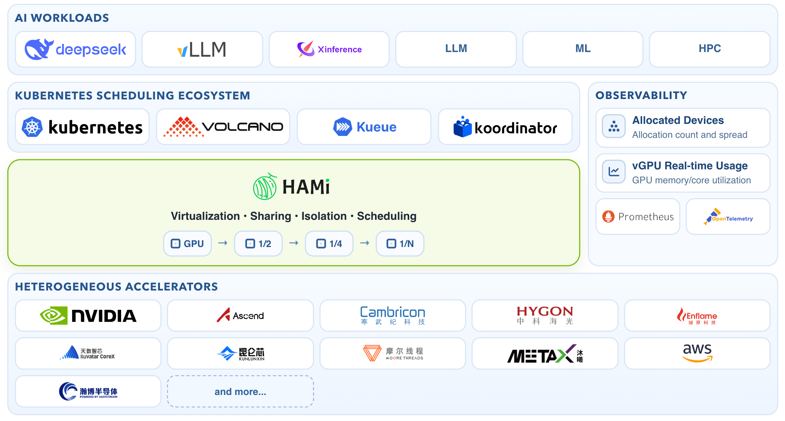

Latest updates
2026-11-19
沙箱与虚拟化技术全景：KVM、QEMU、Firecracker、Kata、gVisor
2026-11-18
容器运行时全链路：OCI、CRI、containerd、shim 与 RuntimeClass
2026-10-28
HAMi-core：容器内 CUDA 劫持与资源隔离
HAMi：Kubernetes 异构 AI 算力虚拟化与调度
2026-09-08
Cordis Hello World：跑通可逆副作用与响应式依赖
Cordis：时空可组合性元框架
2026-08-01
Agent Substrate: 高密度 Agent 沙箱 Runtime
2026-07-11
kagent: K8s 原生 AI Agent 框架
2026-07-09
Agent Sandbox: K8s 原生沙箱执行环境
2026-06-18
Cluster API: 声明式集群生命周期管理
2026-05-21
Apache Mesos: 分布式系统内核
2026-05-18
Slurm: HPC 集群工作负载管理器
Graph View
AI Infrastructure
Agent Sandbox: K8s 原生沙箱执行环境
What is Agent Sandbox
Agent Sandbox 是一个 Kubernetes SIG Apps 子项目，提供了一套 CRD 和 controller 来管理隔离的、有状态的、单例工作负载。核心场景是 AI Agent runtime：在强隔离环境中执行 LLM 生成的不受信任代码。
两层架构：
- Core (
agents.x-k8s.io/v1beta1)：SandboxCRD —— 声明式定义单 Pod 沙箱，含稳定 hostname、持久存储、pause/resume、定时过期 - Extensions (
extensions.agents.x-k8s.io/v1beta1)：SandboxTemplate（可复用蓝图）、SandboxWarmPool（预热池）、SandboxClaim（用户侧抽象）
配套的 sandbox-router（Go 反向代理）通过 X-Sandbox-* HTTP header 将客户端请求路由到沙箱 Pod。
- Go 1.26，Apache 2.0
架构
flowchart TB
subgraph User["User"]
CLI["kubectl"]
SDK["Go/Python SDK"]
end
subgraph Controllers["Controller Manager"]
SBR["Sandbox Reconciler"]
SWPR["WarmPool Reconciler"]
SBCR["Claim Reconciler"]
Q["In-Memory Queue\n(FIFO + NodeSpread)"]
end
subgraph Runtime["Data Plane"]
ROUTER["Sandbox Router\n(Reverse Proxy)"]
POD["Sandbox Pod\n(gVisor/Kata/runc)"]
PVC[("PVC")]
NP["NetworkPolicy\n(per Template)"]
end
CLI -->|creates| SBCR
SWPR -->|pre-warms N| SBR
SBR -->|creates| POD
SBR -->|creates| PVC
SBCR -->|adopts from| Q
Q -->|tracks warm| POD
ROUTER -->|X-Sandbox-ID routing| POD
NP -->|isolates| POD
资源模型
| CRD | 级别 | 功能 |
|---|---|---|
| SandboxTemplate | 模板 | 定义 Pod 蓝图（镜像、资源、runtimeClass）+ NetworkPolicy |
| SandboxWarmPool | 池（1:N） | 维护 N 个预创建、预调度的 Sandbox，低延迟领取 |
| Sandbox | 单例（1:1） | 对应一个 Pod + PVC + Headless Service |
| SandboxClaim | 用户请求 | 从 Warm Pool 领取 Sandbox，或冷创建 |
资源关系：
SandboxWarmPool (spec.replicas=N)
├── Sandbox-A ── Pod-A + PVC-A + SVC-A
├── Sandbox-B ── Pod-B + PVC-B + SVC-B
└── Sandbox-N ── Pod-N + PVC-N + SVC-N
SandboxClaim ──领取──→ Sandbox-A (OwnerRef 改为 Claim, 从 Pool 移除)
Claim 删除 → GC 级联删 Sandbox → Pod/PVC/SVC
SandboxClaim 生命周期
stateDiagram-v2
[*] --> PreWarm: WarmPool creates N Sandboxes
PreWarm --> Queued: Pod Ready, enqueued
Queued --> Adopted: Claim pops from queue
Queued --> Stale: Template hash changed
Stale --> [*]: Deleted by WarmPool controller
Adopted --> Running: Claim active
Adopted --> ColdStart: Queue empty, created from template
ColdStart --> Running: Claim active
Running --> Deleted: Expired (ShutdownPolicy=Delete)
Running --> SandboxDeleted: Expired (ShutdownPolicy=Retain)
Running --> Deleted: Claim manually deleted
当 Claim 被删除时，controller 不做任何清理——直接 return nil。Kubernetes GC 沿 OwnerRef 链条级联删除：Claim → Sandbox → Pod/PVC/SVC。
Sandbox Pod 不会回到预热池。 WarmPool controller 独立监测 current_replicas < spec.replicas，创建新的 Sandbox 补充。这是单向流动：
Pool → (adopt) → Claim → (expire/delete) → GC destroys
↑ |
└───── Pool controller creates replacement ────┘
ShutdownPolicy
| 策略 | 行为 |
|---|---|
Delete / DeleteForeground | Claim 过期 → 删除 Claim → GC 级联 |
Retain（默认） | Claim 过期 → 仅删除 Sandbox，Claim 保留可供检查 |
Warm Pool 的工作原理
Warm Pool 是该项目的核心性能优化。它维护一个预创建、预调度的 Sandbox 池子，消除 Pod 调度、镜像拉取、PVC 绑定的延迟。
Controller 协调流程：
- WarmPool controller 监听到
spec.replicas=N - 创建 N 个 Sandbox（所有权归 Warm Pool）
- 每个 Sandbox 创建对应的 Pod
- Pod Ready 后，key 加入内存 FIFO 队列
- Claim 到达时，从队列中领取（NodeSpread 策略——选择该节点剩余最多的）
- 池子中移除已领取的 Sandbox，创建新的补充
领取过程（adoptSandboxFromCandidates）：
- 清空原 OwnerReferences
- 设置
controllerRef指向 Claim - 移除 Warm Pool 的 label
- 注入 Claim 指定的 env/volume
Claim 删除时：
- Controller 返回 nil（不清理）
- K8s GC 按 OwnerRef 级联删除
- Sandbox 不回池子
两种更新策略：
| 策略 | 行为 |
|---|---|
Recreate | 删除所有预热 Sandbox，重新创建 |
OnReplenish | 自然消耗后逐步替换为新模板 |
安全隔离机制
Agent Sandbox 实现了纵深防御，多层防护组合保障安全：
1. 运行时隔离
| Runtime | 隔离级别 | 机制 |
|---|---|---|
| gVisor | 内核级 | 用户态内核拦截 syscall，每个沙箱独立内核边界 |
| Kata Containers | 硬件虚拟化 | 每个 Pod 运行在轻量 VM 内（Firecracker/QEMU/Hyper-V） |
| runc | 容器级 | 仅 Linux namespace + cgroup，隔离最弱 |
三种隔离边界（共享内核 / 用户态内核 / 硬件虚拟化）的代码级原理、启动与内存开销、以及 gVisor vs Kata 的选型，见 沙箱与虚拟化技术全景。
Pod 级安全上下文：runAsNonRoot, allowPrivilegeEscalation: false, capabilities.drop: ["ALL"], seccompProfile: RuntimeDefault
2. ServiceAccount 隔离
默认 automountServiceAccountToken = false。即使沙箱被攻破，也无法通过 SA token 访问 K8s API Server，阻止集群级提权。
3. 网络隔离（NetworkPolicy）
SandboxTemplate controller 为每个 Template 创建共享 NetworkPolicy：
- Ingress：仅 sandbox-router 可以连接沙箱
- Egress（Secure by Default）：
- 允许公网（
0.0.0.0/0） - 阻止内网（
10.0.0.0/8,172.16.0.0/12,192.168.0.0/16） - 阻止 link-local（
169.254.0.0/16，防止访问云 metadata server） - 阻止沙箱之间互访
- 允许公网（
效果：沙箱只能通过 router 被访问，不能访问集群内部服务、metadata server、或彼此。
4. 自动过期
Sandbox 有 TTL。超时后按 ShutdownPolicy 自动回收，防止长期存在的沙箱积累攻击面。
5. 资源限制
Template 中可配置 CPU/memory limits，通过 cgroup 强制实施，防止单沙箱消耗过量节点资源。
6. 持久存储
每个 Sandbox 绑定独立 PVC。Sandbox 销毁时 PVC 被级联删除，数据不残留。
Sandbox Router
它是什么
Sandbox Router 是一个独立的 Go 反向代理（sandbox-router/ 目录），不运行在 controller manager 中，而是单独部署为一个 Deployment + Service。它的作用是在客户端和沙箱 Pod 之间建立安全的请求路由。
为什么需要它？ Warm Pool 中的沙箱 Pod 是不可区分的——它们有相同的镜像、相同的配置。用户不能直接知道哪个 Pod 属于他。Router 通过 HTTP header 携带的路由信息，将请求精准代理到正确的 Pod。
路由解析优先级
Router 解析目标沙箱时有三级优先级：
X-Sandbox-Pod-IP（显式覆盖）— 客户端直接指定 Pod IP，经过 SSRF 校验后直连。最低延迟，但需要调用方知道 IP。- Pod IP Cache（
X-Sandbox-UID）— 通过 UID 查缓存中的 Pod IP。这是 KEP fast path，避免 DNS 查询延迟。 - DNS 解析（fallback）— 构造 DNS 名
http://<ID>.<NS>.svc.<cluster>:<port>通过集群 DNS 解析。最通用但最慢。
Pod IP Cache（KEP Fast Path）
Router 维护一个本地 Pod IP 缓存，通过 K8s informer 监听 Pod 事件来实时更新：
- 写入：当 Pod 变为 Ready 且有 Sandbox UID label 时，缓存 Pod IP
- 查找：
X-Sandbox-UID→Pod IP，O(1) 查询 - 失效：Pod 被删除或 IP 变化时，从缓存中移除
- Dial 失败时主动失效：如果缓存命中的 IP 无法连接，缓存条目被主动清除并回退到 DNS
这使得路由延迟接近 IP 直连，同时保持 DNS 的容错性。
请求处理流程
sequenceDiagram
participant U as Client
participant R as Sandbox Router
participant A as Authorizer (TokenReview)
participant Cache as Pod IP Cache
participant DNS as Cluster DNS
participant P as Sandbox Pod
U->>R: GET /api/run<br/>X-Sandbox-ID: my-sandbox<br/>X-Sandbox-Port: 8888<br/>Authorization: Bearer TOKEN
R->>R: Parse headers<br/>Validate DNS-1123 & port range<br/>Reject loopback/link-local IPs
R->>A: TokenReview(TOKEN)
A-->>R: allow / deny
alt X-Sandbox-Pod-IP is set
R->>R: Validate IP (SSRF check)
R->>P: Dial IP:port directly
else Cache enabled & X-Sandbox-UID present
R->>Cache: Lookup by UID
alt Cache Hit
Cache-->>R: Live Pod IP
R->>P: Dial cached Pod IP:port
else Cache Miss
R->>DNS: Resolve my-sandbox.default.svc.cluster.local
DNS-->>R: Pod IP
R->>P: Dial resolved IP:port
end
else DNS-only fallback
R->>DNS: Resolve via cluster DNS
DNS-->>R: Pod IP
R->>P: Dial IP:port
end
Note over R,P: Dial failure → retry with exponential backoff<br/>Cache-sourced failure → invalidate cache entry
R->>R: Strip Authorization header<br/>Strip X-Forwarded-For, set real client IP<br/>Set X-Forwarded-{Host,Proto,For}
R->>P: Reverse-proxied HTTP request
P-->>R: HTTP response
R-->>U: Forwarded response
认证与授权
Router 的认证通过可插拔的 Authorizer 接口实现，启动时选择实现，每个请求调用一次。
两种实现：
| 实现 | 行为 | 适用场景 |
|---|---|---|
| AllowAll | 所有请求放行（默认） | 开发环境、Router 前置已有 Envoy/Gateway 处理认证 |
| TokenReviewAuthorizer | 通过 K8s TokenReview API 验证 Bearer token | 生产环境，K8s 原生认证 |
TokenReview 认证流程
Client ──BearerToken──→ Router ──SHA-256(token)──→ LRU Cache (30s TTL, 2048 entries)
│ │
│ cache miss │ cache hit
↓ ↓
K8s TokenReview API return cached decision
│
┌─────────┴─────────┐
↓ ↓
authenticated unauthenticated
↓ ↓
200 allow 401 deny
缓存安全：缓存存储 SHA-256(token) 哈希而非原始 token——即使内存 dump 泄露缓存也无法获取 session。
认证步骤：
- 从
Authorization: Bearer TOKEN头提取 token - SHA-256(token) 作为 LRU 缓存 key
- Cache hit → 直接返回决策，零 API 调用
- Cache miss → 调 K8s TokenReview API：
authenticated=false→ErrUnauthenticated(401)- API 失败 → 缓存
1/3 TTL（最少 1s），防止打爆 apiserver authenticated=true→ 缓存决策 30s TTL
- 认证成功 → 请求放行
身份来源：
| 来源 | 提取方式 | 优先级 |
|---|---|---|
| mTLS 客户端证书 | TLS 握手提取 | SPIFFE URI → DNS SAN → Subject CN |
| Bearer Token | Authorization header | TokenReview 验证 |
RequireToken 模式：false（默认，无 token 也放行，过渡期） / true（无 token → 401）
当前限制（v1）：只做认证不做授权——任何已认证用户可访问任意沙箱。per-sandbox owner identity 授权由后续 KEP 引入。
安全头处理
Router 在转发前对关键 header 做安全处理：
| Header | 处理方式 | 原因 |
|---|---|---|
| Authorization | 入站消费后剥离，不转发 | 防止沙箱获取调用者 K8s token 冒充访问 API Server |
| X-Forwarded-For | 入站时剥离，出站时设为实际客户端 IP | 防止客户端伪造 IP |
| X-Forwarded-Host/Proto | 基于实际请求设置 | 沙箱可正确判断原始请求的协议和主机 |
| Origin（WebSocket） | 剥离 | 防止 CSRF origin 不匹配 |
核心原则：Router 已验证的身份信息不传递给沙箱。沙箱只知道“有人请求了它“，不知道“是谁“。
参考
Agent Substrate: 高密度 Agent 沙箱 Runtime
页面基线（2026-11-17 追更）：本地仓库
/home/lubingtan/go/src/github.com/agent-substrate/substrate已追到main@d283af4eb（2026-11-17，1718 commits），v1.0.0 “Fully armed and operational” 已于 2026-11-05 发布。旧页面的内容基线约为 2026-07-31（cbdeb7dbe，425 commits），距今已有 1293 个提交。旧页面中的 Redis、ateom、单 actor/worker、Pause、FULL/DATA 快照等描述已被 1.0 架构淘汰，本页按 HEAD 重写，并在文末附「与 2026-07 版页面的差异」对照表。
TL;DR：这次追更发现了什么
- GA 了：v0.1.0（09-09）→ v0.6.0（10-22）约每周一个 minor 之后，v1.0.0（11-05）发布；README 从 “VERY early development / 不做兼容承诺” 改为 “committed to compatibility”，并给出 API/CLI/配置/数据/回滚四类兼容规则。
- 状态存储换底座：ValKey/Redis 被 PostgreSQL 彻底替换（
atepg，#640/#940），授权模型内嵌 OpenFGA；Redis 分布式锁改为进程内 actor 锁 + PG 租约/outbox。 - 组件改名 + 扩张：
ateom-gvisor/microvm→ateworker-gvisor/microvm；新增ate-idp-server、ate-setup、objectstore-plugin、credential-provider、envoy-dataplane；cmd/从 9 个目录变为 14 个。 - 一个 worker 跑多个 actor：Worker 从“同时只承载 1 个 actor“变为可承载多个（受容量与
--max-actors默认 1000 限制）；Actor 开始声明 CPU/内存 limits，调度器按容量记账。 - 快照模型重做：FULL/DATA 作用域 →
VOLUMES < ROOTFS < MEMORY三级 fidelity；suspend 默认异步（先写节点本地快照、后台上传）；新增RevertActor、Tag（不可变快照别名/保留）、节点本地快照缓存。 - 安全从零补到 zero-trust：per-actor 1h SPIFFE 证书 + actor JWT（OIDC IDP）、出口网关
atenet-egress+ 凭证注入（secret 不进 sandbox）、EgressPolicy 默认拒绝、OpenFGA ReBAC、ate-system 默认拒绝 NetworkPolicy、worker 权限收紧（gVisor 9 caps / microVM 11 caps，均privileged:false）。 - 入口路由换了：不再用 DNS/Host 选 actor，改为
ate-target-actor: <atespace>/<actor>header + mTLS CONNECT 到 worker 内atunnel（默认 8443）；atenet dns删除，改为每 sandbox 一个 DNS relay。 - 安装/CLI/可观测性成熟：
hack/install-ate*.sh→go run ./cmd/ate-setup deploy ...；kubectl ate proxy actor；Hugo 文档站 ate.dev；OTel Weaver 指标注册表 + 首份 SLO/告警规范。 - 生态：2026-11 捐赠 CNCF Sandbox；kagent 1.0 起每个 agent 跑在 Substrate 上；README 主演示 8 个 Pod 承载 ~250 个有状态 actor（10x–30x oversubscription）。
- 指标双口径：架构文档的 north star 仍是 100ms p95 / 10 亿 actor / 1000 wakeups/s（目标），对外 GA 口径是 resume < 500ms、> 500 activations/s（承诺/演示口径），仓库内没有 p95 实测数字。
What is Agent Substrate
Agent Substrate 是 Google 发起、2026-11 已捐赠 CNCF（Sandbox）的高密度 Agent 沙箱运行时。1.0 的对外定位是 “zero-trust sandboxing for millions of agents on Kubernetes”：在标准 K8s 之上，把大量有状态 actor（agent 应用实例）多路复用到少量预热的 worker Pod，空闲 agent 被 checkpoint 出内存、请求到达时快速 restore 回来。
核心叙事没变：agent 大部分时间在等模型、等工具、等输入；把空闲 actor 快照到对象存储并释放 worker，用时间维度换密度。变的是 1.0 补齐了 v0.0.0 时仅有“愿景“的安全、身份、网络、存储和运维层：
- 始终沙箱化：每个 actor 跑在独立 gVisor（
runsc）或 Cloud Hypervisor microVM 里，纯 Linux 容器不被支持 - per-actor 身份：默认签发短生命周期 SPIFFE X.509；出口网关可按策略铸造 per-actor JWT，均可与外部身份系统联邦
- sandbox 内零凭证：actor 不持有 API key、云 token 或身份证书，出站凭证由
atenet-egress在沙箱外注入 - 默认拒绝网络：入站只走
atenet-router，横向与出站受 egress 策略约束 - 可插拔策略边界：egress 网关是可替换的 PEP（策略执行点），可接自研授权/DLP/prompt 注入扫描
规模指标（两套口径，注意区分）：
| 口径 | 内容 |
|---|---|
内部 north star（docs/concepts/architecture.md） | 激活延迟 100ms p95；单集群 10 亿 actor；1000 wakeups/s（均为目标，非实测） |
| 对外 GA 口径（README / overview） | resume < 500ms；> 500 activations/s；10x+ 密度；演示 8 Pod / ~250 actor（10x–30x oversubscription） |
项目元数据：
- Go 1.27.0（
toolchain go1.27.4），module 改为go.ate.dev/substrate（vanity import），Apache 2.0 - 2026-11-17
main共 1718 commits；v1.0.0 之后 main 仍有后续提交（本页按 HEAD 描述） - 沙箱后端：gVisor（默认）+ Kata Containers on Cloud Hypervisor microVM
- 文档站：ate.dev（Hugo docsite，
docs/与site/同仓）
版本演进（2026-07 → 2026-11）
| Tag | 日期 | 备注 |
|---|---|---|
| v0.0.0 | 2026-05-19 | 初始开源快照，旧 wiki 页面的研究对象 |
| v0.1.0 | 2026-09-09 | 第一个 minor；此时 Postgres、atunnel、多 actor worker API 已合入 |
| v0.2.0 | 2026-09-25 | |
| v0.3.0 | 2026-09-30 | |
| v0.4.0 | 2026-10-07 | |
| v0.5.0 | 2026-10-14 | |
| v0.6.0 | 2026-10-22 | 1.0 前最后一版；ateom → ateworker、vanity import 均在此前后落地 |
| v1.0.0 | 2026-11-05 | “Fully armed and operational”；GA + 兼容性承诺；另有 v1.0.0-rc.1/2/3 |
阶段特征：
- 2026-07~08（基建补齐）：Postgres 替代 Redis（
#640/#940）、atunnel引入（7-27）、egress 网关与凭证注入（9 月中）、actor 身份 SPIFFE/JWT（8 月）、多 actor worker API（9-03） - 2026-09（0.1~0.2）：多 actor worker 实现落地（
#1836）、API 风格统一起步、OpenFGA 逐 RPC 授权 - 2026-10（0.3~0.6）：
ateom → ateworker改名、Go vanity import、sandbox asset cache、objectstore-plugin、Tag/Revert/异步 suspend、Hugo 文档站、SLO/OTel 指标 - 2026-11（1.0）：GA、version-skew/升级策略、DCO 取代 Google CLA、CNCF 捐赠、Egress 凭证注入转正
状态模型（v1.0 版：三层）
旧页面的“双层模型（CRD + Redis）“已过时。1.0 是 K8s CRD（低频基础设施）+ 控制面 PostgreSQL（高频实例状态，含 OpenFGA 授权数据）+ 对象存储（快照） 三层：
| 层 | 存储 | 资源 | 更新频率 |
|---|---|---|---|
| K8s 基础设施 | K8s API Server / etcd | WorkerPool、SandboxConfig、CSIDriverConfig（3 个 CRD） | 低频（infra 变更） |
| 控制面实例状态 | PostgreSQL（atepg，owner/read-write 双角色，goose 迁移） | Atespace、ActorTemplate、Actor、Worker、ActorAssignment、Tag、EgressPolicy、AccessPolicy；OpenFGA 关系元组同库 | 高频（数千次/秒） |
| 快照 | GCS / S3（经 objectstore-plugin sidecar） | Golden / Last / Tag 快照 | 每次 suspend/restore |
为什么换 Postgres：etcd 不适合百万级离散资源与高频写；Postgres 提供事务、租约（lease）、outbox 和成熟的运维（Cloud SQL/BYO DB）。Redis 时代的 per-actor 分布式锁改为“进程内 actorlock + PG 租约“，worker 舰队镜像仍由 ateapi 内存持有，但改为 PG watch 轮询同步。
核心概念
| 概念 | 说明 |
|---|---|
| Actor | agent 实例（派生自 ActorTemplate），地址 (atespace, name)。可 suspend/resume，在 worker 间迁移 |
| Atespace | Actor 的隔离边界（类似 namespace，但全局作用域，非 K8s namespace）。ActorTemplate/Actor/Tag 都归属 atespace |
| Worker | 一个 worker Pod 的控制面记录。状态 ACTIVE / UNAVAILABLE / DRAINING；可同时承载多个 actor（ActorAssignment 子资源，受容量与 actor 上限约束） |
| WorkerPool | CRD——声明预热算力；spec.template.resources.limits 定义每个 worker 的容量，由 atecontroller reconcile 成 Deployment |
| SandboxConfig | 集群级 CRD——按 sandbox class 固定沙箱二进制/资产（runsc、microVM kernel/firmware 等）；沙箱二进制不再烘进 worker 镜像 |
| ActorTemplate | actor 的不变定义（镜像、资源、env、快照配置）。已是 ate API 资源，不再是 K8s CRD，存控制面 Postgres；创建时默认生成 Golden Snapshot |
| Golden Snapshot | ActorTemplate 创建时一次性产生的初始 checkpoint（version 0）；可配置 mode=DISABLED 关闭 |
| Last Snapshot | 每个 actor 最近一次 suspend 产生的快照，下次 resume 使用 |
| Tag | atespace 级、不可变、可跨 atespace 发布的快照别名/保留（`TagScope=ATESPACE |
| Suspend | 休眠 actor：checkpoint → 本地快照 → （默认异步）上传对象存储 → 释放 worker；支持 `mode=SYNCHRONOUS |
| Resume | 激活 actor：从本地或对象存储快照恢复到可用 worker，非冷启动 |
| Revert | 把 RUNNING/CRASHED（或带本地快照）的 actor 回退到最近一次 durable 快照并置为 SUSPENDED |
| EgressPolicy | Actor 的子资源（每 actor 一个 default，非 K8s CRD）：出站 allowlist + 凭证注入效果 |
| AccessPolicy | Global / atespace 级单例授权策略（OpenFGA ReBAC） |
已移除：旧页面的 Pause（快照留节点本地）独立操作与
PAUSING/PAUSED状态。PauseActorRPC 已删除（#2813），语义由异步 suspend + 节点本地快照（locality）承接。
架构
flowchart TB
subgraph CP["Control Plane (ate-system)"]
API["ate-api-server (ateapi)\ngRPC · scheduler · workflow engine"]
PG[("PostgreSQL\n实例状态 + OpenFGA")]
IDP["ate-idp-server\nOIDC discovery / JWKS"]
PCC["podcertcontroller\npod/服务/DB 三类证书 signer"]
end
subgraph K8S["Kubernetes"]
CRDS["WorkerPool / SandboxConfig\n/ CSIDriverConfig"]
CTRL["atecontroller"]
POOL["WorkerPool → Deployment"]
end
subgraph NODE["Node"]
ATELET["atelet (DaemonSet)\nasset cache · snapshot mover · CSI"]
subgraph WPOD["Worker Pod"]
AW["ateworker-gvisor | ateworker-microvm\n+ atunnel (ingress/egress/dns)"]
SB["sandbox: runsc / Kata+CH microVM"]
end
OSPN["objectstore-plugin\n(node mode)"]
end
subgraph NET["atenet"]
ROUTER["atenet-router\nEnvoy + ext_proc"]
EGRESS["atenet-egress\nPEP + credential injection"]
end
OSPC["objectstore-plugin (control mode)"]
OBJ[("GCS / S3\nsnapshots")]
CPROV["credential-provider\n(kubernetes-secrets)"]
CLIENT["kagent / SDK / kubectl-ate proxy"]
CLIENT -->|"ate-target-actor: ns/actor"| ROUTER
ROUTER -->|ResumeActor| API
API -->|Restore/Suspend| ATELET
ATELET -->|gRPC| AW
AW --> SB
API <--> PG
API -.->|pod 证书| PCC
IDP -.->|JWKS| EGRESS
AW -->|出站 CONNECT| EGRESS
EGRESS -->|取 secret| CPROV
ATELET --- OSPN --- OBJ
API --- OSPC --- OBJ
CRDS --> CTRL --> POOL
POOL --> ATELET
API 规模：proto 移到 api/ateapi/v1/ateapi.proto（package substrate.ateapi.v1）。控制面 Control 服务 42 个 RPC（旧版 14 个），另有 WorkerService 8 个 RPC（worker 注册/心跳/epoch/上报/证书铸造）。风格统一为 ResourceMetadata 固定 field 1、ListOptions{page_size,page_token}、DeleteOptions、delete_time，并用 K8s declarative validation 注解表达作用域。
组件与 Binary
cmd/ 下共 14 个组件目录；v1.0 发布镜像白名单为 10 个 + envoy-dataplane，另发布 kubectl-ate 静态二进制，ate-setup 为安装工具（go run），benchmarking 为开发工具。
| Binary | 部署方式 | 功能 |
|---|---|---|
| ateapi | Deployment（HA） | 控制面 gRPC：actor 生命周期、调度、快照编排、workflow、OpenFGA 授权 |
| atecontroller | Deployment | K8s CRD reconciler（WorkerPool→Deployment、NetworkPolicy 等） |
| atelet | DaemonSet | 节点 supervisor：镜像/沙箱资产缓存、快照搬运、CSI、device plugin、worker 同步 |
| ateworker-gvisor | worker Pod 主容器 | gVisor sandbox 宿主 + atunnel（ingress/egress/DNS relay），驱动 runsc |
| ateworker-microvm | worker Pod 主容器 | microVM 宿主（Kata + Cloud Hypervisor），驱动快照/恢复 |
| atenet | Deployment/DaemonSet | router（Envoy ext_proc 触发 resume）+ sdsmint（mTLS SDS） |
| atenet-egress | Deployment | 出站策略执行 + 凭证注入（同一 atenet 二进制的 egress 模式） |
| ate-idp-server | Deployment | actor JWT 的 OIDC discovery / JWKS 发布 |
| podcertcontroller | Deployment | 签发短生命周期 Pod 证书：pod identity、服务 DNS、Postgres 客户端三类 signer |
| objectstore-plugin | sidecar | objectstore.v1（Unix socket）：node 模式给 atelet、control 模式给 ateapi，backed by GCS/S3 |
| credential-provider (kubernetes-secrets) | Deployment | 把 ate-secret:// 解析为 K8s Secret；egress 凭证注入链中唯一有 Secret 读权限的组件 |
| dataplane/envoy | 镜像 | envoy-dataplane：Envoy v1.39.5 + Rust dynamic module（egress policy 去重/共享） |
| kubectl-ate | 本地 CLI | kubectl 插件：actor/template/atespace/tag/worker/egress-policy/access-policy/proxy/admin |
| ate-setup | 本地工具 | 安装/卸载/发布：`deploy ate-system |
核心机制
激活（Resume）流程
sequenceDiagram
participant C as Client
participant R as atenet-router
participant A as ate-api-server
participant L as atelet
participant T as ateworker / atunnel
participant S as snapshot storage
participant SB as Actor sandbox
C->>R: 请求（ate-target-actor: atespace/actor）
R->>R: parking lot 准入（饱和时暂存重试，默认 5s/1024 条）
R->>A: ResumeActor(atespace, actor)
A->>A: 认证（mTLS SPIFFE / Bearer JWT）+ OpenFGA 按 atespace 授权
A->>A: actor 锁（进程内 + PG 租约）→ 按容量/runtime 调度 worker
A->>A: PG 事务认领 worker + ActorAssignment（epoch 防脑裂）
A->>L: Restore
L->>S: 节点无本地快照时，经 objectstore-plugin 下载
L->>T: RestoreWorkload（mTLS）
T->>T: 恢复 sandbox（runsc restore / CH OnDemand userfaultfd）+ 网络
T-->>L: ready
L-->>A: worker pod IP
A-->>R: worker assignment
R->>T: mTLS CONNECT（8443）到 atunnel
T->>SB: 转发到 actor 端口（默认 :80）
SB-->>C: 响应
Note over A,SB: 之后：SuspendActor checkpoint，按 sync/async 上传，释放 worker
要点：
- 入口不靠 Host/DNS：调用方（kagent、SDK、
kubectl ate proxy actor）在请求里带ate-target-actor: <atespace>/<actor>；Host只作为应用 authority - 任意端口：默认端口 80 之外，用 HTTP
CONNECT <actor-dns>:<port>访问（目前仅 HTTP(S)；裸 TCP 未支持） - parking lot：池子饱和时不直接 503，而是有界暂存并重试 ResumeActor（默认预算 5s、容量 1024），并发请求用 singleflight 去重
- 快照 runtime 绑定：MEMORY restore 优先挑“仍提供快照 runtime 版本“的 worker；无兼容 worker 时降级为 ROOTFS 冷启动
- 本地优先：suspend 后节点保留本地快照（locality），同节点 resume 不走对象存储；
--snapshot-detach-delay后删除本地副本
休眠（Suspend）、Revert 与快照
Actor 状态机：SUSPENDED → RESUMING → RUNNING → SUSPENDING → SUSPENDED，另有 CRASHED。
同步 vs 异步 suspend：
| 模式 | 行为 |
|---|---|
| 异步（默认） | 写完节点本地 checkpoint 即返回（durableSnapshot=PENDING）；atelet 后台按 --snapshot-upload-delay 上传并上报，置 COMPLETED |
| 同步 | 上传完成后 SuspendActor 才返回，durableSnapshot 直接 COMPLETED |
RevertActor：RUNNING/CRASHED（或带本地快照的 SUSPENDED）actor 可回退到最近一次 durable 快照，终止当前 sandbox、丢弃本地 checkpoint，下次 resume 从该快照恢复。
快照内容（fidelity 阶梯）：
preferredFidelity | 包含内容 | 说明 |
|---|---|---|
| VOLUMES | DurableDir 卷 | 只保数据，恢复时从 OCI 镜像冷启动 |
| ROOTFS | VOLUMES + 容器可写 rootfs overlay | 冷启动但保留文件系统变更 |
| MEMORY（默认） | ROOTFS + 进程内存/进程树 | 从挂起点原样恢复；与 sandboxRuntime 版本绑定 |
Golden / Last / Tag：Golden 来自 ActorTemplate 创建；Last 来自每次 suspend；Tag 是不可变别名 + 保留 pin，可从其他 atespace 引用（发布 scope）。快照存 <location>/atespaces/<ns>/actors/<uid>/snapshots/<uuid>，Tag/Golden 在 <location>/atespaces/<ns>/tags/<uid>。
存储管道：
atelet/ateapi自身没有对象存储凭据：分别通过本地objectstore-pluginsidecar 的 node/control 模式搬运快照；GCS 上 node 侧还会用 atelet 的 JWT 换“仅限该 actor 快照前缀“的短时 token（S3 per-actor 限定尚在计划）- 格式仍是稀疏 zstd（magic
ATESPRSE，format v2），新增并行 zstd 帧、ranged/composite 对象读、上传内存预算 - 节点本地
internal/snapshotcache缓存最近快照，供同节点快速 resume；node reboot 用 boot-id 清理
Worker 故障与 Actor 恢复
一句话：已 SUSPENDED 的 actor 基本不受影响；RUNNING 的 actor 会随 worker 一起丢状态、被标记 CRASHED，但能回退到最近一次完成的外部快照再 resume——丢的是“上次快照之后“的状态。
Worker Pod 消失的常见原因：WorkerPool 滚动升级/缩容、节点 drain、Spot VM 回收、Pod/节点故障。控制面逻辑在 cmd/ateapi/internal/controlapi/workflow_worker_delete.go：一旦确认 worker Pod 没了，DeleteWorker 工作流会 drain 该 worker、把它承载的每个 actor 置为 CRASHED、清空 assignment，并尽力回收节点上的 actor 运行目录；语义见 docs/reference/api-guide.md#eviction。
| 故障时 actor 状态 | 结果 | 数据损失 |
|---|---|---|
| SUSPENDED（不在 worker 上） | 不受影响；可从对象存储（或节点本地副本）resume 到任意 worker | 无 |
| RUNNING（被立即杀掉，如节点断电/OOM/强制删除） | sandbox 随 Pod 消失，actor → CRASHED；需 revert → resume | 上次 completed 外部快照之后的状态全部丢失 |
| RUNNING + SIGTERM 优雅驱逐 | 有 30min 窗口，窗口内完成 suspend 就能在别的 worker 恢复 | 窗口内完成 同步 suspend：无损失；否则同上一行 |
| SUSPENDING / 异步 suspend 上传未完成 | 本地快照随节点消失；resume 若仍找到上传可恢复，否则 CRASHED → 回退到更早的 completed 快照 | 可能丢最新一次快照 |
驱逐（Eviction）细节：
- Pod 收到
SIGTERM后 worker 停止接新 actor，并向其承载的每个 actor 主进程转发SIGTERM；每个 actor 有 30 分钟（workloadGracePeriod，固定且短于 Pod 1h terminationGrace）完成 suspend - Substrate 不会替 actor 自动 suspend：必须由 harness/应用在窗口内调用
SuspendActor，并建议用同步模式（kubectl ate suspend actor --mode=sync）——异步 suspend 默认要等--snapshot-upload-delay（默认 5min）才后台上传，节点提前消失则快照一起丢 - Spot VM 回收可能只给 15s–2min（GKE Spot 默认 15s），远小于 30min 窗口；没 suspend 完就是
CRASHED - 一个 worker 承载多个 actor 时，它们会一起
CRASHED，各自独立 revert + resume
恢复步骤（CRASHED 不能直接 resume，会返回 FAILED_PRECONDITION）：
kubectl ate get actor <name> -a <atespace> -o yaml # 看 state=ACTOR_STATE_CRASHED 与 status.snapshots
kubectl ate revert actor <name> -a <atespace> # 回到 last completed external snapshot，状态变 SUSPENDED
kubectl ate resume actor <name> -a <atespace> # 或等下一次请求经 router 触发 resume
注意事项：
- revert 回退到
status.snapshots中最近一次已完成的外部快照（首次运行则是 Golden Snapshot）；节点本地 checkpoint 与半成品快照会被清理 - CSI 外部卷不随快照回退：external volume 的内容不在快照里，revert 后卷仍是崩溃前内容；
DurableDir卷在快照内，会一起回退 - 恢复粒度是“最近一次快照“，不是“崩溃瞬间“；对状态敏感的场景应配合 30min 窗口内的同步 suspend，或主动
Tag保留关键快照
沙箱后端
沙箱 class 由 WorkerPool.spec.sandboxClasses[].name（gvisor|microvm）决定；ActorTemplate 通过 workerSelector 选池，不再直接带 sandboxClass。沙箱二进制/资产来自 SandboxConfig，运行时下发到节点 content-addressed asset cache（hardlink 复用 + 按字节预算淘汰），而不是烘进 worker 镜像。
| 项目 | gVisor（默认） | microVM |
|---|---|---|
| 实现 | ateworker-gvisor 驱动 runsc | ateworker-microvm 驱动 Kata guest + Cloud Hypervisor |
| Suspend | runsc checkpoint；fs/、rootfs/ 由 runsc fscheckpoint 分开产出（VOLUMES/ROOTFS 可单独快照） | CH 原生内存快照（config/state/sparse memory ranges）；rootfs upper 另打包 tar |
| Resume | runsc restore 恢复进程树 | OnDemand（userfaultfd 按需分页）；CH 新版本无条件 prefault 时回退 Copy |
| rootfs 写层 | overlay delta 单独保存 | host 侧 overlay（只读 OCI lower + per-actor 可写 upper），经单一 virtio-fs share 进 guest，占宿主 page cache 而非 guest RAM |
| DurableDir | 1 个（历史限制仍在） | 多个（virtio-fs share 下子目录，快照打成 tar） |
| CPU/内存 | limits 进 OCI spec；CPU 配额换算 --cpu-num-from-quota | limits 设 CH vCPU 数与 guest RAM；最低 128 MiB |
| 隔离 | 用户态内核（syscall 拦截） | 硬件虚拟化（VM 边界）+ device plugin 注入 /dev/kvm |
| 权限 | 9 caps，privileged:false | 11 caps，privileged:false（详见下文 Worker 权限） |
| 超限 | 超内存只杀该 actor，不连累同 worker | 同上（PSI 感知时） |
一个 worker 多个 actor：ateworker --max-actors 默认 1000；每个 actor 有独立 cgroup、netns、sandbox；Worker 记录 capacity/allocated。旧页面“同持仅承载一个 actor“已作废。
这里两种沙箱后端（gVisor 用户态内核 vs Kata + Cloud Hypervisor microVM）的隔离原理、启动/内存开销与选型依据，见 沙箱与虚拟化技术全景。
绕过 K8s 容器栈（设计未变）：worker Pod 本身是标准 K8s Pod（runc/containerd 启动，无 runtimeClassName）；ateworker 在 Pod 内直接 exec runsc/Cloud Hypervisor，沙箱完全绕过 kubelet→CRI→containerd→runc 链条。区别是二进制与资产改为运行时从 SandboxConfig + objectstore 获取并缓存。
网络栈
Ingress（atenet-router）：
atenet只剩router+sdsmint；旧atenet dns已删除- Envoy
ext_proc读ate-target-actor→ ResumeActor → 得到 worker assignment → 向 workeratunnel建 mTLS CONNECT（8443），转发到 actor 端口 --upstream-connect=false时退回 HTTPS:443；worker Pod 的 80 端口不是 actor 的直达入口- per-sandbox DNS relay：每个 actor 独立 netns，DNS 由
atunnel的 relay 处理；hostname 只有命中该 actor 的 egress 策略才解析，否则 NXDOMAIN（策略变更约 5s 生效） - router 下游 mTLS +
--ingress-allowed-spiffe-ids精确白名单；未配置时 router 不服务任何流量
Egress（atenet-egress）：
- actor 出站 TCP 被 nftables REDIRECT，经
atunnel收进 mTLS CONNECT 隧道 →atenet-egress验证 actor 证书链/ActorIdentity 扩展 → 向 ate-api-server 复核 actor 存在/UID/已放置 → 按EgressPolicy放行或拒绝 - 失败关闭：PEP 未配置/失败即 drop；非 TCP 与 UDP 53 之外全丢；link-local 地址被 ateworker 拒绝
EgressPolicy：http/https（MITM）/tls_passthrough三类规则，只做 allowlist（≤256 条，未匹配即拒绝）；ActorTemplate 级 golden policy 有 preview gate- 凭证注入：
effects.replaceHeaders+credentialUri（ate-secret://<provider>/<path>）或actorJwt；secret 永不进入 sandbox；provider 侧按 atespace→namespace 授权，注入失败 403/500/503 全 fail-closed - MITM trust bundle：
systemInfovolume 的trustBundle数据源（egress-mitm.ate.dev+system-roots.ate.dev）注入 actor 文件系统 - 默认数据面 Envoy v1.39.5 + Rust dynamic module（EgressPolicy 去重、H2 多路复用）；
agentgateway是可选实验 overlay，不是默认路径
资源管理与调度
- Actor 现在必须声明资源：
ActorTemplate.resources.limits必填（cpuMillicores+memoryBytes），per-container limits 可选 - Worker 容量：
WorkerPool.spec.template.resources.limits定义容量；调度要求 worker 剩余容量 ≥ actor limits + runtime overhead；容量缺失时该维度视为“无约束“ - runtime overhead 记账：microVM 的 VMM/virtiofsd 等宿主开销由 worker 上报并计入容量
- 调度器（
cmd/ateapi/internal/scheduling/）：workerCache 内存舰队镜像 + 约束匹配（sandbox class、runtime 版本、worker/template selector、必需节点、limits）；power of two choices 优先负载较低的 worker；无抢占/优先级；无容量时返回ErrNoCapacity→ router parking lot - 与 K8s Scheduler 对比：调度对象是 actor（临时分配、suspend 即释放）、频率高、约束简单、状态在 PG + 内存镜像
Workflow Engine
所有多步 actor 操作仍是幂等步骤序列（workflow_*.go），每步从持久化状态派生 IsComplete()，客户端重试同一 RPC 即可跳过已完成步骤（client-driven forward recovery）。1.0 的变更：状态持久化到 PG、新增 revert/delete/suspend-async/assignment reconcile 等工作流。
安全模型（1.0 的重点）
安全边界：sandbox / gateways / control plane / storage 四层（见 docs/security/security.md 与 security-boundaries.svg）。核心原则用 Met / In Progress / Future / Out of Scope 状态表逐条声明。
身份（三层）
- 组件 SPIFFE mTLS：控制面/数据面全部 mTLS，仅放行本地健康检查；
podcertcontroller有 3 个 signer（pod identity、服务 DNS、Postgres 客户端证书） - per-actor 短生命周期 X.509（1h）：证书含 ActorIdentity 扩展（OID
1.3.6.1.4.1.11129.2.12.2）、purpose=atunnel、绑定 atespace/name/UID，只发给 actor 当前所在 worker；atunnel经 node-localatelet向 ate-api-server 换取 - actor JWT：
MintActorJwtRPC +ate-idp-server提供 OIDC discovery/JWKS；sub=actor/<atespace>/<name>；签名池actor-id-jwt-pool，kubectl ate admin add/activate/remove-jwt-key手动轮换；支持联邦与 key rotation 文档
API 调用方认证：TLS 客户端证书（第一个 URI SAN 作为 SPIFFE principal）或 Bearer JWT（jwtProviders 配置 K8s SA / Google / CI OIDC）；命名空间需 ate.dev/api-access=true。
授权（OpenFGA）
- 内嵌 OpenFGA ReBAC，模型
cmd/ateapi/internal/authz/model.fga，逐 RPC 检查，无规则即拒 AccessPolicyglobal / atespace 单例：角色 global owner/viewer，atespace owner/editor/viewer；系统角色controller/egress_gateway/ingress_router/atelet/api_server_sidecar（凭 pod 证书获得）- 只有
egress_gateway能MintActorJwt --authz-bootstrap-owners必填（否则 ate-api-server 不启动）；默认ate-client有显式安全警告- 网络侧：
ate-system默认拒绝 ingress + 组件级 NetworkPolicy
Worker Pod 权限（updated）
| gVisor worker | microVM worker | |
|---|---|---|
| privileged | false | false |
| allowPrivilegeEscalation | false | false |
| runAs | UID/GID 0 | UID/GID 0 |
| capabilities | drop ALL + 9 个：NET_ADMIN, SYS_ADMIN, SETUID, SETGID, DAC_OVERRIDE, FOWNER, CHOWN, NET_RAW, SETFCAP | drop ALL + 11 个：上面去掉 NET_RAW，加 MKNOD, FSETID, SETPCAP |
| seccomp/AppArmor | Unconfined（runsc 需要 mount/pivot_root） | Unconfined（virtiofsd 需要） |
atelet 也从 privileged:true 收紧为 drop ALL + 4 个 caps（CHOWN/DAC_OVERRIDE/FOWNER/FSETID）；/dev/kvm 改由 atelet 的 device plugin 注入。仍然开放：worker 以 root 运行且保留 SYS_ADMIN/NET_ADMIN、无 user namespace、seccomp/AppArmor Unconfined——security.md 标为 In Progress。
威胁模型
docs/security/threat-model.md：7 个场景章节、42 条带 ID 威胁（T-01..T-43，缺 T-12），不再写实现状态，由 CI 的 security-status-report skill 对代码动态评估docs/threats.json：同 42 条机器可读清单（priority / mitigating_invariants / suggested mitigations），供 CI 消费
已知限制
atespace 名不可复用；无 per-actor/per-template 授权；所有 atelet 共享身份；无 groups；actor→actor 内建授权仍是 Future；worker 可观察/修改其承载的 actor；snapshot tainting 仍 Future。
部署、CLI 与运维
安装（ate-setup）
# 创建 kind 集群 + 本地 registry
hack/create-kind-cluster.sh
export ATE_INSTALL_KIND=true
# 安装 Substrate（credential provider 与 ingress SPIFFE 白名单为必填）
go run ./cmd/ate-setup deploy ate-system --credential-provider='{"name":"k8s.io"}' \
--ingress-allowed-spiffe-ids=spiffe://cluster.local/ns/ate-system/sa/atenet-client
# 安装 demo（counter）
go run ./cmd/ate-setup deploy demo counter
# 本地代理访问 actor（mTLS，替代 port-forward + Host 头）
kubectl ate proxy actor my-counter-1 -a ate-demo-counter
curl -X POST -i http://localhost:8000/
- 子命令：
deploy ate-system|atelet|apiserver|ate-controller|atenet|podcertificate-controller|sandboxconfig|postgres、deploy demo NAME、setup csi、publish release-images|release-binaries等 - 配置文档
install.ate.dev/v1alpha1（--config/ATE_CONFIG），每次 deploy 把解析结果写入installs/（默认~/.cache/ate-setup），供升级/回滚重放 - 主要 flag：
--kind、--image-repo/--image-tag（预构建镜像）、--atenet-dataplane envoy|agentgateway、--cordon-system-infra-components、--sandbox-classes gvisor,microvm、--preview、--cluster-size size0|size10 - 旧
hack/install-ate.sh、hack/install-ate-kind.sh已删除
kubectl-ate
verb 化：create/get/update/delete/resume/suspend/revert/logs/top/proxy/admin × actor/actor-template/atespace/tag/worker/egress-policy/access-policy。
proxy actor（本地 mTLS 代理）、revert actor、tag（快照别名/跨 atespace 发布）、egress-policy、access-policy、top workers、admin *-jwt-key（JWT 密钥轮换）、logs actor --source=containers|lifecycle- 移除
pause（随 PauseActor RPC 删除）、admin debug-flush-redis（Redis 后端消失）；认证默认从 mTLS 改为 ServiceAccount token/JWT（--token-file） --preview启用 preview 能力；--trace传 trace ID 给服务端
升级与版本策略（1.0 起生效）
docs/reference/version-skew-policy.md：patch/minor 兼容、不支持跳 minor、新 major 需重装；组件升级顺序 podcertificate-controller → atelet → workers → ate-api-server → ate-controller → atenet → clients；CRD 兼容期只加可选字段；DB schema 只前滚；快照 manifest 未知字段忽略。preview 功能用 --preview 门控（docs/dev/preview-gates.md 定义 preview/GA 两态）。
可观测性
- OTel 属性
ate.*（internal/ateattr）：actor/atespace/uid/template/container 等；actor 自身同名 key 被丢弃 - OTel Weaver 指标注册表
docs/metrics/registry/（29 个 metric group，CI 校验）；新增 30+ate.*指标（lifecycle、scheduler assignment、restore/checkpoint duration、snapshot、imagecache/filecache、workerpool） - actor lifecycle / usage events over OTLP；
OTEL_METRICS_EXPORTER=otlp|prometheus|none；kind 集群自带 Prometheus + OTel Collector + Jaeger - 首份 SLO/告警规范
docs/guides/slos-and-alerts.md（SLI/SLO + error budget + PromQL + GMP 告警规则）
Demo
demos/ 下 7 个 demo 目录，ate-setup deploy demo 注册 9 个（含 counter-microvm、egress-microvm），全部带 Hugo 文档与 YouTube 讲解。
| Demo | 展示能力 |
|---|---|
| counter | 内存计数 + 容器 rootfs + DurableDir 三层状态跨 suspend/resume 保留（README 主演示） |
| sandbox | 有状态交互式 shell（Alpine）：命令间 cd/变量重置，但文件跨快照保留 |
| jupyter | 未改动的 quay.io/jupyter/base-notebook 当 actor，浏览器访问即恢复（验证 WebSocket ingress） |
| multi-template | 两个不同 ActorTemplate/不同 atespace 共用一个 WorkerPool（workerSelector 集群级匹配） |
| parking | 2 worker 池过载时 router 暂存并重试 resume，而非 503 |
| egress | actor 出站经 egress gateway 透明隧道 + actor 身份认证（Envoy / agentgateway 两套数据面） |
| claude-code-multiplex | 3 个 Claude Code agent 复用 2 个 worker（150s walkthrough），旧页面详解对应的 demo 仍在 |
README 主演示视频：8 个 Pod 承载 ~250 个有状态 actor，卖点 Actor Teleport / Full-State Persistence / 10x–30x oversubscription。旧页面的 claude-code-multiplex 生命周期走读仍成立，1.0 的差异是：ateworker（原 ateom）、ate-target-actor header + CONNECT 8443、默认异步 suspend、worker 可多 actor。
与 kagent、Agent Sandbox、Agent Executor 的关系
┌─────────────────────────────────────────────────────────┐
│ kagent / Agent Executor（Agent 框架与编排） │ ← 声明式 agent / 分布式 runtime
├─────────────────────────────────────────────────────────┤
│ Agent Substrate（Actor/Worker 多路复用 + 快照 + 安全边界）│ ← 高密度沙箱 Runtime
├─────────────────────────────────────────────────────────┤
│ Kubernetes（Pod / 自动扩缩 / NetworkPolicy / CSI） │ ← 基础设施
└─────────────────────────────────────────────────────────┘
| kagent | Agent Sandbox | Agent Substrate | |
|---|---|---|---|
| 层级 | Agent 框架（CNCF Sandbox） | K8s 原生沙箱执行 | 沙箱 Runtime（底层） |
| 核心抽象 | Agent, ModelConfig, A2A | Sandbox, WarmPool, Claim | Actor, Worker, ActorTemplate, Tag |
| Pod 模型 | 1 Agent 1 Deployment（1.0 起可走 Substrate） | 1 Sandbox = 1 Pod + PVC | N Actors → M Workers |
| 启动延迟 | K8s 冷启动 | WarmPool 预热 | 快照 resume（对外 <500ms） |
| 状态管理 | K8s CRD + PostgreSQL | K8s CRD + 内存队列 | K8s CRD + PostgreSQL + 对象存储 |
| 安全边界 | MCP/A2A、K8s RBAC | gVisor/Kata、NetworkPolicy | zero-trust：SPIFFE/JWT、egress 网关、OpenFGA |
- kagent：CNCF Sandbox 项目；README 明确其用 Substrate 跑“沙箱化、有状态“的 agent 负载，kagent 1.0（与 Substrate 1.0 同期）宣布 每个 agent 都跑在 Agent Substrate 上（公告）；
kagent install可一次装 Substrate + PostgreSQL - Agent Executor（google/ax）：分布式 agent runtime，用 Substrate 做底层执行，README 保留为生态示例
- 集成仓库政策：非平凡端到端集成放
agent-substrate/<repo>（如execution-sandbox、always-on-agent）；GCP Secret Manager credential provider 已移出核心仓到agent-substrate-plugins/
与 2026-07 版页面的差异
| 旧页面（~2026-07-31） | 现状（HEAD / v1.0.0） |
|---|---|
| “早期开发阶段（v0.0.0）”“425 commits” | v1.0.0（2026-11-05）GA，1718 commits，兼容性承诺生效 |
Go 1.26.3，module github.com/agent-substrate/substrate | Go 1.27.0（toolchain 1.27.4），module go.ate.dev/substrate |
8 个 binary（含 ateom-gvisor/microvm） | 14 个 cmd/ 目录；ateom-* → ateworker-*；新增 ate-setup/ate-idp-server/objectstore-plugin/credential-provider/envoy-dataplane |
| 动态状态存 ValKey/Redis | PostgreSQL（atepg + goose，owner/read-write 双角色）；锁改 actorlock + PG 租约 |
| ActorTemplate 是 CRD | ActorTemplate 是 ate gRPC 资源（存 Postgres）；K8s CRD 只剩 WorkerPool/SandboxConfig/CSIDriverConfig |
| Worker 同时只承载 1 个 actor，状态 IDLE/BUSY | Worker 可承载多个 actor（capacity/allocated + ActorAssignment），状态 ACTIVE/UNAVAILABLE/DRAINING |
| Actor 不设 CPU/内存 requests/limits | ActorTemplate.resources.limits 必填，调度按容量 + runtime overhead 记账 |
| 调度器随机选空闲 worker | 容量感知 + power of two choices + runtime 兼容匹配 |
| Pause 是核心操作（PAUSING/PAUSED） | PauseActor RPC 删除；suspend 分同步/异步；新增 RevertActor |
| 快照 FULL / DATA 作用域 | VOLUMES / ROOTFS / MEMORY 三级 fidelity + preferredFidelity；新增 Tag |
| gVisor 整体 checkpoint；microVM rootfs 在 guest tmpfs | gVisor fscheckpoint 拆分；microVM rootfs 改 host-backed overlay 经 virtio-fs；新增 sandbox asset cache |
入口用 DNS + Host: <actor>.<atespace>... | 入口用 ate-target-actor header + mTLS CONNECT 到 atunnel（8443）；atenet dns 删除，改 per-sandbox DNS relay |
| （无出口网关） | atenet-egress + EgressPolicy + 凭证注入 + MITM trust bundle，默认拒绝、fail-closed |
| （无身份/授权实现） | SPIFFE mTLS + per-actor X.509 + actor JWT（ate-idp-server）+ OpenFGA ReBAC + AccessPolicy |
| gVisor 13 caps / microVM privileged | 均 privileged:false；gVisor 9 caps / microVM 11 caps（seccomp/AppArmor 仍 Unconfined） |
hack/install-ate-kind.sh + port-forward + Host 头 | ate-setup + kubectl ate proxy actor + 安装配置文档 + installs 记录 |
| 指标：100ms p95 / 10 亿 actor（目标） | north star 目标未变；对外 GA 口径 resume <500ms、>500 activations/s、10x–30x |
| 扁平 docs/ 与 Google 内部项目叙事 | Hugo 文档站 ate.dev；2026-11 捐赠 CNCF Sandbox；kagent 1.0 深度集成 |
参考
- 仓库（本地基线）：
/home/lubingtan/go/src/github.com/agent-substrate/substrate@d283af4eb（2026-11-17） - Agent Substrate GitHub / 文档站 ate.dev
- Architecture｜Resource Model｜Quickstart
- Security Overview｜Threat Model｜Authorization (OpenFGA)
- Egress Traffic｜Egress Credential Injection｜Actor JWTs
- API Guide｜kubectl-ate｜Version Skew Policy
- v1.0.0 Release｜kagent 1.0 公告｜Agent Executor
附注：旧页面基线修正
旧页面记录的 ingest 日期是 2026-07-09（当时仓库 HEAD 为 86cd169b7，273 commits），但页面内容（425 commits、13 caps、atunnel、微 VM 权限等）实际对应 2026-07-31 的 cbdeb7dbe（425 commits）；页面文件本身提交于 2026-08-01/08-04。这说明旧 wiki 写入时混用了两个时间点。本页的差异区间按 cbdeb7dbe（~07-31）→ d283af4eb（11-17）= 1293 commits 计算；正文的关键变更均已用 commit hash 或文档路径交叉核对。
Cordis Hello World：跑通可逆副作用与响应式依赖
概念与原理见 Cordis：时空可组合性元框架。本文是它的「上手」配套页——用 ~70 行可运行代码把两个核心保证各演示一遍：
- 时间可组合（Temporal）：卸载一个插件，它注册过的所有 effect（事件、服务、资源）被完整回收；
- 空间可组合（Spatial）：插件声明依赖后，依赖出现/消失时它被自动激活/停用，无需手写任何重连逻辑。
示例基于
cordis@4.0.0-rc.9（README 明示 API 仍在演进、可能变更）。
本地 build & run
demo 不是散装单文件，而是本页 assets 目录里的完整 npm 工程（自带 package.json / tsconfig.json / README.md，纯 ESM，核心只依赖 cordis）：
# 1. 进入 demo 工程目录（仓库内路径）：
cd src/docs/Cloud_Native/AI_Infrastructure/cordis-hello-world.assets
# 2. 安装依赖（cordis 运行时 + tsx/typescript 构建工具）
npm install
# 3a. 开发模式直接跑 TS（tsx，Node >= 22 均可）：
npm run dev
# 3b. 或正式构建后运行（tsc 编译到 dist/，node 跑产物）：
npm run build
npm start
也支持 Node >= 23.6 的内置 type-stripping 直接执行源码（本工程 package.json 已声明 "type": "module"）：
node hello-world.ts
三种跑法输出一致，见下方「预期输出」。
若之后要构建整个 wiki（仓库根目录
make build），请先删除本目录的node_modules/与dist/——mdBook 会把 src 下非 markdown 文件整体拷进book/（Latest updates 扫描已跳过.assets与node_modules）。
完整代码
源码文件：hello-world.ts（工程内其余文件：package.json、tsconfig.json、README.md）
// hello-world.ts — Cordis Hello World：可逆副作用 + 响应式依赖最小演示
// 本目录是完整 npm 工程：npm install → npm run build && npm start（或 npm run dev）
// 详见 README.md 与配套 wiki 页 cordis-hello-world.md
import { Context, type Plugin } from 'cordis'
// 类型化（零运行时开销）：告诉 TS ctx.greeter 与 'say/hello' 事件的形状
declare module 'cordis' {
interface Context {
greeter: { greet(name: string): void }
}
interface Events {
'say/hello'(name: string): void
}
}
// 注意：函数插件请写成箭头函数（或 { apply(ctx) {} } 对象）——
// 具名 function 声明带 prototype，会被 Cordis 当作"类插件"用 new 实例化，
// 此时 apply 的 return disposer 不会被收集（见配套页面「踩坑」一节）。
// ── 插件 A：提供 greeter 服务 ────────────────────────────────────────────────
const greeter: Plugin = (ctx) => {
ctx.provide('greeter', {
greet(name: string) {
console.log(`[greeter] Hello, ${name}!`)
},
})
ctx.effect(() => {
console.log('[greeter] timer started')
return () => console.log('[greeter] timer stopped')
})
console.log('[greeter] service up')
return () => console.log('[greeter] service down')
}
// ── 插件 B：依赖 greeter 服务，订阅 'say/hello' 事件 ─────────────────────────
const hello: Plugin = (ctx) => {
console.log('[hello] activated')
ctx.on('say/hello', (name: string) => ctx.greeter.greet(name)) // effect：卸载自动摘除
return () => console.log('[hello] deactivated')
}
hello.inject = ['greeter'] // coeffect 声明：greeter 不在就绝不执行
async function main() {
const root = new Context()
// 1) 先装依赖方 —— 服务还没出现，插件停在 PENDING，什么都不做
const helloFiber = await root.plugin(hello)
console.log('[main] step 1 — hello installed while greeter missing:')
root.emit('say/hello', 'nobody') // 无输出：listener 尚未注册
// 2) 装提供者 —— 依赖出现，hello 被自动激活（空间可组合 / spatial composability）
const greeterFiber = await root.plugin(greeter)
await helloFiber
console.log('[main] step 2 — greeter provided, hello auto-activated:')
root.emit('say/hello', 'Cordis') // [greeter] Hello, Cordis!
// 3) 卸载提供者 —— 依赖消失，hello 自动停用，双方 effect 全部逆序回收
await greeterFiber.dispose()
console.log('[main] step 3 — greeter withdrawn, hello auto-deactivated:')
root.emit('say/hello', 'nobody') // 无输出：listener 已被回收
// 4) 服务恢复 —— hello 无需重装，自动复活
await root.plugin(greeter)
await helloFiber
console.log('[main] step 4 — greeter back, hello auto-reactivated:')
root.emit('say/hello', 'again') // [greeter] Hello, again!
// 5) 显式卸载 hello（时间可组合 / temporal composability；dispose 幂等）
await helloFiber.dispose()
await helloFiber.dispose()
console.log('[main] step 5 — done')
}
// 顶层 await：失败时 Node 会打印错误并以非 0 退出
await main()
预期输出
[main] step 1 — hello installed while greeter missing:
[greeter] timer started
[greeter] service up
[hello] activated
[main] step 2 — greeter provided, hello auto-activated:
[greeter] Hello, Cordis!
[greeter] service down
[greeter] timer stopped
[hello] deactivated
[main] step 3 — greeter withdrawn, hello auto-deactivated:
[greeter] timer started
[greeter] service up
[hello] activated
[main] step 4 — greeter back, hello auto-reactivated:
[greeter] Hello, again!
[hello] deactivated
[main] step 5 — done
逐步拆解：五步各对应什么机制
Step 1 — inject 不满足 = coeffect 未满足，插件不执行
hello 声明了 inject: ['greeter']（响应式 coeffect）。此时 greeter 还没被提供，依赖求值结果为「不该运行」，fiber 停在 PENDING：apply 不执行、事件监听没注册，所以 emit('say/hello') 没有任何输出——这是结构性保证，不是插件作者自己写的 if 判断。
Step 2 — provide 一个服务，依赖者被自动激活（空间可组合）
greeter 的 ctx.provide('greeter', ...) 本身就是一个 effect（注册进 fiber 的效果树）。提供者进入 ACTIVE 后，ReflectService.notify(['greeter']) 找出所有声明了该依赖的 fiber 并触发 refresh：
hello的 fiber 自动reload，apply执行：ctx.on('say/hello', ...)（也是 effect）注册成功；- apply 内直接
ctx.greeter.greet(...)——Proxy 解析沿已提交视图找到提供者实现。
Step 3 — 卸载提供者，一切自动逆序回收（时间可组合 + 依赖级联）
await greeterFiber.dispose() 触发的回收顺序（输出即证据）：
[greeter] service down—— apply return 的 disposer；[greeter] timer stopped——ctx.effect(() => { ...; return () => ... })的逆（注册顺序倒序 = LIFO）；[hello] deactivated—— provide 的逆先摘除服务再通知依赖者：hello的依赖不满足了，被自动 unload，它自己的ctx.on与 return disposer 一并回收。
这之后 emit('say/hello', ...) 再次静默——监听器确实没了，不需要手动退订。
Step 4 — 服务恢复，依赖者自动复活
再次 root.plugin(greeter)，同一套 notify 机制把 hello 拉回 ACTIVE，事件监听重新挂上。hello 从头到尾只安装过一次，生命周期完全由依赖状态驱动。
Step 5 — dispose 幂等
同一个 fiber dispose() 两次，第二次是 no-op（[hello] deactivated 只出现一次）。
两个容易踩的坑
- 函数插件用箭头函数或
{ apply }对象，不要用function声明。 Cordis 靠「是否有prototype」区分函数插件与类插件：具名function声明是可构造的，会被当成类插件用new实例化——构造器模式的清理语义走ctx.effect/ctx.provide而非 return 值，因此return () => {...}的 disposer 会被静默丢弃。核心包测试中的函数插件也普遍写作const plugin = (ctx) => ...或{ apply(ctx) {} }。想用类/extends Service写服务插件没问题，但清理要落在构造器里注册的 effect 上。 ctx.effect回调与插件 apply 的 return 是两种等价的 disposer 写法，但前者更通用：生成器形式（yield逆）还能表达顺序敏感的清理，且与注册顺序无关地可靠回收。Hello World 两种都演示了（greeter 的 timer 用ctx.effect，service down 用 return）。
概念对照
| 代码 | 概念（见 cordis.md） |
|---|---|
new Context() | 根 Context，自带 events/logger/reflect/registry 服务 |
root.plugin(plugin, config?) | 实例化插件 → 返回 Fiber（可 await） |
hello.inject = ['greeter'] | coeffect 声明（响应式依赖） |
ctx.provide('greeter', impl) | 安装服务；本身是 effect，卸载自动回收并 notify 依赖者 |
ctx.on / ctx.effect | 事件监听 / 通用副作用；注册即返回逆（disposer） |
ctx.greeter | Proxy 属性访问 = 对当前视图解析服务（未激活时访问会抛错） |
await fiber.dispose() | 卸载：LIFO 逆序回收全部 effect，幂等 |
declare module 'cordis' | 类型化事件与服务（Events / Context 接口增强，零运行时开销） |
相关页面
- Cordis：时空可组合性元框架 — 概念、架构、Fiber 状态机、HMR 引擎与选型理由
- kagent — 对比：K8s 声明式编排 vs Cordis 运行时动态组合
- Agent Substrate / Agent Sandbox — effect 化资源管理之外的沙箱隔离路线
Cordis：时空可组合性元框架
论文背景：A Programming Paradigm for Spatiotemporal Composability（北大 × DeepSeek-AI，88 页 preprint） 上游：cordiverse/cordis（MIT，作者 Shigma；本文基线 core v4.0.0-rc.9，较 2026-08 研究快照 8cc9e33/rc.8 又前进 20 commits） 主要使用方：DeepSeek Harness（vendor 引入，发布为
@deepseek-ai/cordis）、Koishi 聊天机器人框架（4000+ 插件） 想亲手跑一遍上面的语义？→ Cordis Hello World：跑通可逆副作用与响应式依赖（~70 行可运行 demo）
这是什么
Cordis 是一个 Node.js/TypeScript 元框架——不面向任何具体领域，唯一职责是提供**动态组合（dynamic composition）**语义：组件可在运行时被加载、卸载、重配，且保证——
- 时间可组合（Temporal composability）：卸载组件时，它做过的所有修改（事件、资源、服务）被完整有序撤销；
- 空间可组合（Spatial composability）：组件声明式表达依赖，依赖出现/消失/更换实现时，系统响应式激活/停用相关组件。
它把经典 PL 理论中的 effect / coeffect 从编译期静态标注“提升“为运行时机制（revertible effects + reactive coeffects），使动态组合的保证成为结构性保证，而非依赖插件作者自觉。配套论文给出了完整演算与元理论证明。
核心只有约 2000 行 TypeScript，依赖仅 @standard-schema/spec + cosmokit。
五个核心概念
| 概念 | 说明 |
|---|---|
| Context | 一切交互的载体（Proxy 化对象）。服务占据稳定的 ctx.<key>；所有 effect/coeffect 操作都通过它进行。 |
| Service | 具名服务，通过 ctx.provide() 安装；其他插件经 ctx[key] 或 inject 消费，而不是 import 具体实现。 |
| Plugin / Component | 带可选 inject/provide 与 apply(ctx, config) 的函数、类或对象；ctx.plugin() 实例化。 |
| Fiber | 组件的一次实例化，携带生命周期状态机（PENDING → LOADING → ACTIVE → FAILED → UNLOADING → DISPOSED）与唯一 uid。 |
| Effect | ctx.effect(callback)：注册即返回 disposer（逆）；运行时自动跟踪、卸载时 LIFO 逆序回收。ctx.on()、ctx.provide()、ctx.plugin() 全部归约为 effect。 |
| Events | 类型化事件，5 种分发：emit（观察）、waterfall（around-middleware）、parallel、serial、bail（短路）。 |
补充：inject = 依赖声明（coeffect）；isolate = 同一 key 在不同 realm 解析到独立绑定；intercept = 不改变解析结果、只调整使用方式的配置叠加。
架构
三层结构：核心库（effect/coeffect 系统）→ 声明式加载器（配置调和 + HMR）→ 应用框架（Koishi / DeepSeek Harness）。
flowchart TB
subgraph App["应用层（领域框架）"]
KOISHI["Koishi 聊天机器人\n4000+ 插件"]
HARNESS["DeepSeek Harness\nAgent 运行时（vendor）"]
end
subgraph Loader["编排层"]
LOADER["plugin-loader\nLoader / EntryTree / Entry"]
INCLUDE["plugin-include\nYAML/JSON 配置 + patch"]
HMR["plugin-hmr\n热模块替换"]
end
subgraph Core["核心库 packages/core"]
CTX["Context（Proxy）"]
REFLECT["ReflectService\nstore / isolate / intercept"]
FIBER["Fiber 生命周期状态机"]
REG["RegistryService"]
EVT["EventsService\nemit/waterfall/parallel/serial/bail"]
end
App --> Loader --> Core
Fiber 生命周期（惯性状态机，fiber.inertia 保证“一次迁移必须跑完“）：
stateDiagram-v2
[*] --> PENDING
PENDING --> LOADING: 目标非空
LOADING --> ACTIVE: apply 完成且目标不变
LOADING --> UNLOADING: 执行中目标变化（部分回滚）
ACTIVE --> UNLOADING: 目标变 ⊥ 或提供者更换
UNLOADING --> INACTIVE: 回收完毕且目标为 ⊥
UNLOADING --> LOADING: 回收完毕但目标仍非空（链式重载）
LOADING --> FAILED: apply 抛错
INACTIVE --> [*]: uid 清空
核心机制
1. 可逆副作用：一切归约到 ctx.effect
execute(callback, guard):
iter ← callback() // 函数或 yield disposer 的生成器
inverse ← id
while guard(): // 迭代边界检查（惰性中断点）
(value, done) ← await iter.next()
if value: inverse ← value ∘ inverse // LIFO 累积逆
if done: break
return inverse
effect(ctx, callback):
armed ← true
task ← execute(callback, () → armed)
dispose(): // 幂等；中断在途迭代；一次性回收
if not armed: return
armed ← false
recover ← await task; recover()
ctx.dispose ← dispose ∘ ctx.dispose // 提升到父上下文（递归可逆）
return dispose
论文对应：effect context ∂Γ = Γ × (Γ→Γ)（状态 + 累加器）、twisted composition monoid (f₁,g₁)∘(f₂,g₂)=(f₁∘f₂, g₂∘g₁)、recover(γ,φ)=(φ(γ), id)。撤销一个 effect 本身也是 effect——disposer 可嵌套、可被父级再包装。
2. 响应式依赖：inject + notify + 惯性迁移
refresh(fiber):
target ← computeTarget(fiber) // 每个声明 key → 提供者 uid（⊥=不该运行）
if target = fiber.target: return // 幂等
fiber.target ← target
if fiber.inertia: return // 迁移在途，仅记录目标
target ≠ ⊥ ? 启动 reload : 标记 UNLOADING 并启动 unload
reload: 提交视图 → execute(apply, guard) → dispose ← recover ∘ dispose
→ 目标不变则 ACTIVE + notify；否则链入 unload
unload: 先 await 全部受影响依赖者 → await dispose()（LIFO 回收）
→ 目标为 ⊥ 则 INACTIVE，否则链入 reload
三点支撑依赖排序（论文 Theorem 63）：先提交视图再执行（卸载期间依赖仍可读）；先标记 UNLOADING 再排逆（提供者先停，依赖者先重算）；回收前 await 依赖者（提供者图按需遍历，终止性由 Theorem 66 保证）。
3. 属性访问即 coeffect 强制
ctx.<service> 的 Proxy 解析：沿 fiber 链向上找 committed（已提交视图）→ 命中即返回；若 key ∈ fiber.inject 而未激活则抛 INACTIVE_ACCESS；到 root 未声明抛 UNDECLARED_ACCESS。与裸 ctx.get()（查 store、不失败）不同，属性访问在使用点强制规范。
4. HMR 三阶段（无开发者标注的 accept 边界）
- 模块分类：stashed ∪ imports 的不动点——imports 有 accepted 则 accepted，imports 全 declined 则 declined，环路兜底 declined；
- 陈旧 entry 检测：沿 declined 边界的传递 import 闭包与 accepted 相交的 entry；
- 事务性重载：清 ESM loadCache + CJS require.cache（备份）→ 重 import → dispose 旧 fiber、建新 fiber；任一失败则恢复缓存、重装旧插件（绝不进入半重载状态）。
工程细节：兼容 Node 22–24 内部 ModuleLoader（--expose-internals / node-addon-require-builtin）；Node 24 的 loadCache 须用 Map.prototype.delete 直操；externals（框架模块）变化触发完整重启。
为什么 DeepSeek Harness 选它
- Service 可运行时消失：MCP server 崩溃、LLM provider 限流、watcher 被杀——传统 DI 假设 bind 后一直存在，Cordis 假设 service 随时出现/消失。
inject依赖方自动停用、恢复后自动重新 apply，框架级保证，无需手写重连。 - 配置即组合：cordis.yml 一行一个插件实例，改配置触发局部 HMR（不重启、不丢 session 状态）；Profile/Bundle 分层 patch 直接复用 Include 机制。
- Waterfall 事件 = 决策链：
tools/pre-execute → execute → post-execute、agent/request、llm/stream等均为 around-middleware，多个独立插件组成有序决策链（权限→审批→超时→执行），可短路可包装。 - Effect-scoped 资源管理：MCP 连接、PTY session、file watcher、background job 统一
ctx.effect(() => { acquire(); return () => release() })。 - vendor 进仓库（
vendor/cordis，@deepseek-ai/cordis4.0.2）+ 18 项本地修改（reentrant disposal race 修复、事务性配置 reload、懒配置求值等），换取完全可审计、可 patch、版本锁定。
与同类方案的对比
| 维度 | Cordis | 传统 DI（InversifyJS/NestJS） | VSCode 插件 | webpack/vite HMR |
|---|---|---|---|---|
| 运行时卸载单个组件 | 逆序回收全部 effect | 无自动 dispose | 需重启 extension host | 需开发者声明 accept |
| 依赖响应式激活/停用 | inject + notify | 无 | 无结构契约 | — |
| 形式化基础 | 演算 + 元理论证明 | 无 | 无 | 无 |
| 粒度 | 组件级（共享地址空间） | 对象级 | 进程级 | 模块级 |
相关页面
- Cordis Hello World — 可运行的 ~70 行最小 demo（effect/inject/provide 全部跑一遍，含「函数插件要用箭头函数」等实测踩坑）
- kagent — K8s 原生 Agent 框架（CNCF），用 CRD/Controller 编排 agent；Cordis 走的是“进程内插件编排 + 事件决策链“的另一条路线，两者对比可看 agent 运行时选型
- Agent Substrate / Agent Sandbox — 沙箱执行环境，与 Cordis 的 effect 化资源管理互补
延伸阅读
- 论文：A Programming Paradigm for Spatiotemporal Composability
- 上游仓库：cordiverse/cordis
- cordis-primer：DeepSeek Harness 文档
- 背景：为什么用 Cordis 做 AI Agent 运行时：从 QQ 机器人框架到 DeepSeek Harness
HAMi-core：容器内 CUDA 劫持与资源隔离
HAMi-core（仓库名
HAMi-core，产物libvgpu.so）是 HAMi 的容器内运行时。它不改libcudart.so、不改libcuda.so、不改驱动，而是在进程的符号解析路径上做手脚，把 CUDA 调用接管到自己的包装函数里，从而落实显存配额和算力配额。对应 HAMi 侧的使用方式见 HAMi：Kubernetes 异构 AI 算力虚拟化与调度。
一、它怎么进入容器
device plugin 在 Allocate() 返回的 Mounts 里（pkg/device-plugin/nvidiadevice/nvinternal/plugin/server.go:1555）：
Mount{ContainerPath: "/usr/local/vgpu/libvgpu.so", HostPath: GetLibPath(), ReadOnly: true},
Mount{ContainerPath: "/etc/ld.so.preload", HostPath: hostHookPath + "/vgpu/ld.so.preload", ReadOnly: true},
ld.so.preload 文件只有一行：
/usr/local/vgpu/libvgpu.so
所以容器里每个动态链接的进程启动时，libvgpu.so 会先于 libcuda.so 被加载进全局符号作用域。
| 场景 | 注入方式 |
|---|---|
默认 hami-core 模式 | 挂载 libvgpu.so + /etc/ld.so.preload |
| 整卡分配 | device plugin 自动注入 CUDA_DISABLE_CONTROL=true，跳过 preload 挂载 |
| remote GPU（Lupine） | 改用 LD_PRELOAD 环境变量（pkg/device/remotegpu/device.go） |
| MIG / MPS 模式 | 不走 libvgpu，由 MIG/MPS 自身机制隔离 |
device plugin 还会注入配额与上下文：
| 环境变量 / 文件 | 作用 |
|---|---|
CUDA_DEVICE_MEMORY_LIMIT_<i> | 第 i 张卡的显存上限，如 3000m（支持 k/m/g 后缀） |
CUDA_DEVICE_SM_LIMIT | 算力上限百分比（0–100） |
CUDA_DEVICE_MEMORY_SHARED_CACHE | 每容器共享记账文件路径（如 /usr/local/vgpu/usage.cache） |
CUDA_DEVICE_MEMORY_LIMIT / CUDA_DEVICE_SM_LIMIT（无下标） | 兜底值，作用于所有卡 |
/overrideEnv（limit-delivery=file） | 等价的 KEY=VALUE 文件，进程启动时读取后 setenv |
CUDA_DISABLE_CONTROL | true 时整体关闭注入 |
CUDA_OVERSUBSCRIBE | true 时允许显存超卖 |
CUDA_TASK_PRIORITY | 任务优先级（0 高 / 1 低） |
LIBCUDA_LOG_LEVEL | libvgpu 日志级别 |
二、核心思路：不改库，改“符号解析”
libcudart 并不把 driver API 静态链接进来，而是运行期按名字取函数指针：老版本用 dlsym，CUDA 11.3+/12 用 cuGetProcAddress。HAMi-core 同时接管这两个入口，再加上 ELF 的全局符号抢占，形成三条路径：
flowchart TB
APP[应用 / Framework] --> RT[libcudart.so]
APP -->|直接链接 libcuda| DRV
RT -->|"① dlsym / cuGetProcAddress 查函数指针"| HOOK
RT -->|正常调用| DRV[libcuda.so]
HOOK[HAMi-core 包装函数] -->|查真实函数表| DRV
PRELOAD["ld.so.preload 全局符号抢占<br/>（导出同名 cu* 符号）"] --> APP
style HOOK fill:#e8f5e9
路径 A：ld.so.preload 全局符号抢占
libvgpu.so 导出了所有同名的 cuXxx 函数（例如 cuMemAlloc_v2）。ELF 全局符号查找顺序是「可执行文件 → preload 库 → 依赖库」，因此直接链接 libcuda 的程序，其 PLT 会绑定到包装函数而不是驱动函数。
细节：仓库的生产构建走
build.sh，固定CMAKE_BUILD_TYPE=Debug，不加-fvisibility=hidden，所以这些包装符号默认可见——全局抢占才成立。
路径 B：劫持 dlsym
libvgpu 的 dlsym 用汇编实现（src/dlsym_entry.S）。原因很关键：dlsym(RTLD_NEXT, ...) 的语义取决于调用者的返回地址，用 C 函数包装会破坏它。x86-64 版本的核心逻辑：
dlsym:
cmpq $-1, %rdi # handle == RTLD_NEXT ?
jne .Ldispatch
pushq %rdi; pushq %rsi # 保留原始参数
call libvgpu_get_real_dlsym
popq %rsi; popq %rdi
jmp *%rax # 尾跳，调用者返回地址仍在栈上
.Ldispatch:
jmp libvgpu_dlsym_dispatch
普通查询进入 libvgpu_dlsym_dispatch()（src/libvgpu.c:97）：
if (symbol[0]=='c' && symbol[1]=='u') { // 所有 cu* 符号
if (strcmp(symbol,"cuGetExportTable") != 0)
pthread_once(&pre_cuinit_flag, (void(*)(void))preInit);
void *f = real_dlsym(vgpulib, symbol); // 在 libvgpu 自身里找同名符号
if (f != NULL) return f; // 返回包装函数
}
vgpulib 是 dlopen("/usr/local/vgpu/libvgpu.so") 的句柄。谁查 cuMemAlloc_v2，就返回 libvgpu 自己的 cuMemAlloc_v2。RTLD_NEXT 查询被原样转发给 libc，语义不变。
路径 C：劫持 cuGetProcAddress
CUDA 11.3+/12 的 driver API 走 lazy 查表：cuGetProcAddress(symbol, &pfn, cudaVersion, flags)。只拦 dlsym 会漏掉主路径，所以 libvgpu 导出并实现了 cuGetProcAddress / cuGetProcAddress_v2（src/cuda/hook.c:361、:398）：
*pfn = find_symbols_in_table_by_cudaversion(symbol, cudaVersion); // 先给包装函数
if (strcmp(symbol, "cuGetProcAddress") == 0) { // 自己查自己
... *pfn = _cuGetProcAddress; // 返回 trampoline
}
if (*pfn == NULL) { // 不认识的符号
return CUDA_OVERRIDE_CALL(cuda_library_entry, cuGetProcAddress, symbol, pfn, ...);
}
- 查询
cuGetProcAddress本身时返回 trampoline，保证后续所有 lazy 查询仍被接管； - 查表按
_v3→_v2→ 原名逐级回退，兼容不同 CUDA 版本； - 不认识的符号回落到真实驱动。
真实函数表与初始化时序
所有包装函数最终要调用真正的驱动函数，这张表在 preInit() 中一次性建好（src/cuda/hook.c:250）：
table = dlopen("libcuda.so.1", RTLD_NOW | RTLD_NODELETE); // NODELETE 保证句柄一直有效
for (i = 0; i < CUDA_ENTRY_END; i++)
cuda_library_entry[i].fn_ptr = real_dlsym(table, cuda_library_entry[i].name);
找不到就回退 RTLD_NEXT，再找不到就用 prior_function() 去掉 _v2/降版本号继续找（兼容老驱动）。NVML 同理 dlopen("libnvidia-ml.so.1")。
初始化是懒加载的：
- 第一次
dlsym一个cu*符号 →preInit()：建表、注册pthread_atfork； - 第一次
cuInit()→preInit()+ 真实cuInit()+postInit()：初始化分配器、解析CUDA_VISIBLE_DEVICES映射、用 NVML 反查宿主 PID、启动算力 watcher； fork()后子进程重置 post-init 状态，但复用同一份共享内存记账区域。
三、显存隔离
配额来源
// multiprocess_memory_limit.c: get_limit_from_env / do_init_device_memory_limits
CUDA_DEVICE_MEMORY_LIMIT_<i> → 第 i 张卡的 limit[i]
CUDA_DEVICE_MEMORY_LIMIT → 所有卡的兜底
/overrideEnv → 进程启动时加载，setenv 后走同一套逻辑
解析支持 3000m、3g、1024m 等写法；0 表示不限制。
分配路径
CUresult cuMemAlloc_v2(CUdeviceptr* dptr, size_t bytesize) {
ENSURE_RUNNING(); // 初始化 + 等待调度状态
return allocate_raw(dptr, bytesize);
}
allocate_raw → add_chunk（src/allocator/allocator.c）：
if (reserve_device_memory(dev, size) != 0) // ① 锁内预占额度
return CUDA_ERROR_OUT_OF_MEMORY;
res = CUDA_OVERRIDE_CALL(cuda_library_entry, cuMemAlloc_v2, address, size); // ② 真实分配
if (res != CUDA_SUCCESS) { release_device_memory(dev, size); return res; }
LIST_ADD(device_overallocated, e); // ③ 记录 地址→大小→设备
reserve_device_memory 内部就是 oom_check_impl（allocator.c:37）：
size_t new_allocated = usage + addon;
if (new_allocated > limit) {
clear_proc_slot_nolock(1); // 先清理已退出进程占用的槽位
return CUDA_ERROR_OUT_OF_MEMORY;
}
释放路径 cuMemFree_v2 → free_raw → remove_chunk 反向扣减。除 cuMemAlloc_v2 外，cuMemAllocManaged、cuMemAllocPitch、cuMemCreate（VMM）、cuMemAllocAsync / cuMemAllocFromPoolAsync（cudaMallocAsync 池）、array/mipmap 等也都有对应记账，避免绕过。
多进程共享记账
一个容器里往往有多个进程（DataLoader worker、多进程推理、fork 出来的子进程），配额必须按容器而不是按进程算。做法是：
- 记账放在
mmap的共享内存文件里，路径来自CUDA_DEVICE_MEMORY_SHARED_CACHE（默认/usr/local/vgpu/usage.cache）；没有该变量时用POD_UID+CONTAINER_NAME拼出/usr/local/vgpu/containers/<pod>_<ctr>/usage.cache； - region 里每个进程一个 slot，每个 slot 按设备记录
total / context / module / data四类用量； - 读写用 seqlock（奇数表示写入中）做无锁一致性读，分配/释放前先用文件锁
lock_shrreg()串行化“检查+预占”； - 进程退出注册
atexit清理槽位；OOM 时如果发现死进程槽位，会先清理再重试； - CUDA context 创建时把
context_size（约 100 MiB 的估算值）计入用量，避免“空 context 不占显存”的漏洞（src/cuda/context.c）。
让框架“看到”配额
仅拒绝超额分配还不够：PyTorch 等框架启动时会查询显存总量来决定 caching allocator 池大小。所以这些查询被改写成虚拟视图：
// cuDeviceTotalMem_v2
*bytes = limit;
// cuMemGetInfo_v2
out_total = min(limit, drv_total);
out_free = limit - usage; // 已用部分对应用不可见
// nvmlDeviceGetMemoryInfo / _v2
used = usage;
total = min(limit, physical_total);
free = total - used;
这样容器内 nvidia-smi、pynvml、torch.cuda.mem_get_info() 看到的都是被切分后的小卡。设备数量/可见性则由容器运行时按 CUDA_VISIBLE_DEVICES 与挂载决定，libvgpu 只维护 cuda_to_nvml 的下标映射。
四、算力隔离
算力限制不是硬件分区，而是基于反馈的时间片调度：
// cuLaunchKernel / cuLaunchKernelEx / cuLaunchCooperativeKernel
ENSURE_RUNNING();
ensure_post_init();
pre_launch_kernel();
if (pidfound == 1)
rate_limiter(gridDimX*gridDimY*gridDimZ, blockDimX*blockDimY*blockDimZ);
// 然后才调真实 cuLaunchKernel
rate_limiter()（multiprocess_utilization_watcher.c:39）维护每卡的令牌桶 g_cur_cuda_cores：
kernel_size = grids; // 用 grid 乘积近似本次 kernel 的“算力量”
do {
before = g_cur_cuda_cores[dev];
if (before < 0) { nanosleep(&g_cycle /*10ms*/); goto CHECK; }
after = before - kernel_size;
} while (!CAS(&g_cur_cuda_cores[dev], before, after));
令牌为负时阻塞 kernel 下发，从而降低单位时间内的 kernel 吞吐。令牌总量由 watcher 线程（默认 120 ms 一轮）动态调整：
- 通过 NVML 读取本容器进程的真实 SM 利用率（需要先反查到宿主 PID）；
- 用比例反馈
delta()比较目标CUDA_DEVICE_SM_LIMIT与实测值，决定加/减令牌； - 写入共享变量，影响所有进程的下一次 kernel 启动。
相关开关：
CUDA_DEVICE_SM_LIMIT=100或未设置 → 不限速；CUDA_TASK_PRIORITY：v1.1 起的两级优先级（高优先级任务独享时不受限）；CUDA_OVERSUBSCRIBE=true：允许超卖；CUDA_DISABLE_CONTROL=true：整体关闭；- 反查宿主 PID 失败（
pidfound=0）时，算力限制自动降级，只保留显存限制。
五、失效场景（软隔离的代价）
| 场景 | 结果 |
|---|---|
| 静态链接 / musl（Alpine）/ 非 glibc | ld.so.preload 不生效，hook 失效 |
| setuid 程序 | 动态链接器忽略 preload |
DinD、直接 ioctl /dev/nvidia*、绕过 CUDA 库访问显存 | 记账与限制都拦不住 |
容器内 /etc/ld.so.preload 被覆盖 | 注入失效 |
CUDA_DISABLE_CONTROL=true | 主动关闭 |
| MIG / MPS 模式 | 不走 libvgpu |
| CUDA 版本 / 驱动不匹配 | 符号表缺失时回退失败，功能降级或报错 |
| 宿主 PID 反查失败 | 算力限制关闭，仅显存生效 |
| 多租户争用 | 显存是账本式限制、算力是反馈式限速，无法提供硬 SLA |
结论：hami-core 适合“提高利用率、做弹性共享”，不适合“合规硬隔离”——后者应该用 MIG。
六、源码导读
| 文件 | 内容 |
|---|---|
src/libvgpu.c | dlsym 分发、preInit/postInit、trampoline、NVML/CUDA hook 分派 |
src/dlsym_entry.S | x86-64 / aarch64 的 dlsym 汇编入口，处理 RTLD_NEXT |
src/cuda/hook.c | 真实函数表加载、cuGetProcAddress 劫持、符号版本回退 |
src/cuda/memory.c | 显存分配/释放、cuMemGetInfo、kernel 启动包装 |
src/cuda/context.c | context 生命周期与 context 大小记账 |
src/cuda/device.c | cuDeviceTotalMem 等设备查询改写 |
src/allocator/allocator.c | oom_check、预占/释放、分配列表、async/pool 记账 |
src/multiprocess/multiprocess_memory_limit.c | 配额解析、共享内存 region、进程 slot、seqlock |
src/multiprocess/multiprocess_utilization_watcher.c | 令牌桶、rate_limiter、利用率反馈闭环 |
src/nvml/hook.c / nvml_entry.c | NVML 包装与显存视图伪造 |
src/include/libcuda_hook.h | CUDA_OVERRIDE_CALL 宏与 hook 表结构 |
参考
- HAMi-core 仓库（本地
.repos/hami/libvgpu）· README - 官方文档：GPU 虚拟化原理
- 相关：HAMi 项目总览 · kube-scheduler 源码分析
HAMi：Kubernetes 异构 AI 算力虚拟化与调度
HAMi（Heterogeneous AI Computing Virtualization Middleware）是 CNCF 孵化项目，给 Kubernetes 加一层「GPU/NPU 切分 + 设备感知调度」：一张卡按显存 MiB 和算力百分比分给多个 Pod，应用不改代码、驱动不改，继续用标准
resources.limits。
项目档案
| 项 | 值 |
|---|---|
| 仓库 | https://github.com/Project-HAMi/HAMi |
| 前身 | k8s-vGPU-scheduler（2021 年） |
| 许可证 / 语言 | Apache-2.0 / Go（约 12.5 万行）+ C/CUDA（HAMi-core） |
| CNCF 阶段 | Sandbox（2024-08）→ Incubating（2026-07） |
| 最新 release | v2.10.0（2026-08-21）；master 已领先 tag 280 个提交 |
| 社区 | 约 5,000 stars / 875 forks（2026-10），2026 年 786 次提交 |
| 文档 | https://project-hami.io/docs/（中英日，版本化） |
| 支持的加速器 | NVIDIA、AMD、昇腾、寒武纪、海光、天数、昆仑芯、沐曦、摩尔线程、燧原、壁仞、AWS Neuron、VastAI、远程 GPU（Lupine） |
为什么需要它
把整张 GPU 分配给 Pod 会带来三个结构性问题：
- 碎片化：小模型/推理任务占满一整张卡，显存利用率长期低于 20%。
- 调度盲区：默认调度器只看到
nvidia.com/gpu: 1这个整数，不知道显存、算力、GPU 间拓扑，无法做设备级放置。 - 异构难统一：不同厂商的 device plugin 和资源名各不相同，平台团队要维护多套工作负载配置。
HAMi 的回答是：在 device plugin 层把设备「虚拟化」成可切分资源，在调度器扩展点做设备感知放置，在容器内用运行时 hook 落实显存/算力上限。

整体架构

上图来自 HAMi 官方仓库（Apache-2.0）。
flowchart LR
subgraph CP[控制面]
W[Mutating Webhook] --> S[Scheduler Extender]
S --> KS[kube-scheduler<br/>同 Pod 内的 sidecar]
S --> NODE[Node 注解<br/>设备注册信息]
end
subgraph DP[数据面]
DPg[Device Plugin] -->|Allocate: env + mounts| C[业务容器]
MON[vGPU Monitor] -->|Prometheus 指标| P[Prometheus]
C -->|libvgpu.so 劫持 CUDA| GPU[(物理 GPU)]
end
S -->|vgpu-devices-allocated| DPg
| 组件 | 位置 | 职责 |
|---|---|---|
| Scheduler Extender | cmd/scheduler、pkg/scheduler | /filter 选节点 + 设备、/bind 加锁分配；同时提供 webhook 与 /refit（NUMA refit） |
| kube-scheduler sidecar | chart scheduler.kubeScheduler | 标准调度器，配置为 HAMi extender 的调用方；默认开启，也可换成外部调度器 |
| Device Plugin | cmd/device-plugin/nvidia | 注册 vGPU 资源、写节点设备注解、Allocate() 注入 libvgpu.so 与 limits 环境变量 |
| vGPU Monitor | cmd/vGPUmonitor | 容器级显存/利用率采集，暴露 Prometheus 指标并做反馈 |
| Mutating Webhook | pkg/scheduler/webhook.go | 校验 Pod，改 schedulerName，拦截伪造分配注解、privileged + GPU 等危险组合 |
关键端口：extender 127.0.0.1:9444（仅同 Pod 的 kube-scheduler 调用）、HTTP/webhook 0.0.0.0:9443、scheduler metrics :9395、monitor metrics :9394。
一个值得注意的设计是：HAMi 的 /filter 不是纯过滤。它在 Filter 内部完成设备可用性判断（Fit）和节点/设备打分，直接挑出唯一最优节点并返回，相当于把选点决策提前到 Filter，而不是走 extender 的 prioritize 协议。这样做的代价是必须自己实现完整打分，好处是能把「设备级」信息纳入决策——标准调度器只认识整数卡数。
一次 GPU Pod 的完整链路
sequenceDiagram
participant U as 用户
participant API as kube-apiserver
participant WH as HAMi Webhook
participant KS as kube-scheduler
participant EXT as HAMi Extender
participant DP as Device Plugin
participant K as kubelet
participant C as 容器
U->>API: 创建 Pod（limits: nvidia.com/gpu/gpumem/...）
API->>WH: AdmissionReview
WH-->>API: 改写 schedulerName + 校验注解
API->>KS: 进入调度队列
KS->>EXT: /filter（候选节点列表）
EXT->>EXT: Fit 设备 + 打分 + 预占 + 写 vgpu-devices-to-allocate
EXT-->>KS: 只返回 1 个节点名
KS->>EXT: /bind
EXT->>EXT: 抢节点锁（hami.io/mutex.lock）
EXT->>API: Patch 注解 + Binding
API->>K: Pod 绑定到节点
K->>DP: Allocate()
DP-->>K: 环境变量 + libvgpu.so/ld.so.preload 挂载
K->>C: 启动容器
C->>C: 进程启动时加载 libvgpu，CUDA 调用被接管
分配结果写在 Pod 注解里（hami.io/vgpu-devices-allocated），device plugin 的 Allocate() 读注解、拼出 CUDA_DEVICE_MEMORY_LIMIT_<i>、CUDA_DEVICE_SM_LIMIT 等环境变量，并把 libvgpu.so 与 /etc/ld.so.preload 挂进容器。容器里 CUDA 进程一启动就被劫持，具体机制见 HAMi-core：容器内 CUDA 劫持与资源隔离。
资源模型
以 NVIDIA 为例：
resources:
limits:
nvidia.com/gpu: 1 # 申请 1 张物理卡
nvidia.com/gpumem: 3000 # 显存 3000 MiB
nvidia.com/gpucores: 30 # 算力 30%
# 或者 nvidia.com/gpumem-percentage: 25（与 gpumem 二选一）
| 资源/注解 | 含义 |
|---|---|
nvidia.com/gpu | 物理 GPU 张数；节点上注册的值是「每卡 deviceSplitCount（默认 10）个虚拟槽位」 |
nvidia.com/gpumem | 显存上限（MiB） |
nvidia.com/gpumem-percentage | 显存上限（物理卡百分比），与 gpumem 互斥 |
nvidia.com/gpucores | 算力上限（0–100） |
nvidia.com/use-gputype / nouse-gputype | 指定/排除 GPU 型号 |
nvidia.com/use-gpuuuid / nouse-gpuuuid | 指定/排除 GPU UUID |
nvidia.com/numa-bind | 要求 GPU 落在同一 NUMA 节点 |
其它厂商的资源名由 chart devices.<vendor> 配置（如 metax-tech.com/sgpu、huawei.com/Ascend910），语义各不相同：有的只支持整卡或固定切分（如壁仞 SVI 2/4 分区），有的支持显存+算力双配额。
调度策略
| 层级 | 策略 | 含义 |
|---|---|---|
| 节点 | binpack（默认） | 优先填满已用节点，减少碎片 |
| 节点 | spread | 优先空闲节点，降低争用 |
| 设备 | binpack / spread | 节点内挑卡方向 |
| 设备 | topology-aware | 按 GPU 间拓扑（NVLink/PCIe/NUMA）挑选组合 |
| 设备 | mutex | 只选完全空闲的 GPU（独占语义） |
| 设备 | numa | 以 NUMA 节点作为排序键，可与 binpack/spread 组合 |
- 集群默认值在 chart 的
scheduler.defaultSchedulerPolicy（默认节点 binpack、设备 spread）。 - Pod 用
hami.io/node-scheduler-policy、hami.io/gpu-scheduler-policy覆盖。 - v2.10 起 GPU 策略支持逗号分隔的策略链，如
mutex,binpack,numa：过滤型策略先筛，排序型策略按书写顺序逐级比较。 - 并发安全靠节点级分布式锁（
hami.io/mutex.lock注解 + 重试）；同一 PodGroup 的成员抢锁失败会重试（--node-lock-retry-timeout，默认 28s），避免 gang 调度被锁竞争打断。 - 设备打分权重可用
hami.io/device-scoring-weights按 Pod 调整。
设备抽象与异构后端
所有厂商实现同一个接口（pkg/device/devices.go）：
type Devices interface {
CommonWord() string
MutateAdmission(ctr *corev1.Container, pod *corev1.Pod) (bool, error)
GenerateResourceRequests(ctr *corev1.Container) (ContainerDeviceRequest, error)
Fit(devices []*DeviceUsage, request ContainerDeviceRequest, pod *corev1.Pod,
nodeInfo *NodeInfo, allocated *PodDevices) (bool, map[string]ContainerDevices, string)
ScoreNode(node *corev1.Node, podDevices PodSingleDevice,
previous []*DeviceUsage, policy string) float32
AddResourceUsage(pod *corev1.Pod, n *DeviceUsage, ctr *ContainerDevice) error
PatchAnnotations(pod *corev1.Pod, annoinput *map[string]string, pd PodDevices) map[string]string
GetNodeDevices(n corev1.Node) ([]*DeviceInfo, error)
// ...
}
调度器启动时由 pkg/scheduler/config 把各后端注册进全局 device.DevicesMap。NVIDIA 节点有四种运行模式：
| 模式 | 隔离方式 | 特点 |
|---|---|---|
hami-core（默认） | 容器内 libvgpu.so 劫持 CUDA | 任意 NVIDIA 卡，MiB/1% 粒度，软隔离 |
mig | NVIDIA MIG 实例 | 硬件隔离；v2.10 起支持 Flexible MIG，按需建删、免 drain |
mps | CUDA MPS | 并发执行，按进程隔离算力 |
remote | Lupine 远程 GPU | 本节点只作 GPU 服务端，跨节点分配 |
部署与运维
前置条件（NVIDIA 路径）：驱动 ≥ 440、NVIDIA Container Toolkit、containerd/Docker/CRI-O 默认 runtime、Kubernetes ≥ 1.23、glibc ≥ 2.17、kernel ≥ 3.10。
kubectl label nodes <node> gpu=on
helm repo add hami-charts https://project-hami.github.io/HAMi/
helm install hami hami-charts/hami -n kube-system
kubectl apply -f examples/nvidia/default_use.yaml
运维要点：
- chart 结构：scheduler Deployment（含 kube-scheduler sidecar）、device plugin DaemonSet（含 monitor 容器）、webhook 证书 patch Job、RBAC、ServiceMonitor（可选）；厂商配置集中在
devices.<vendor>。 - 高可用：
scheduler.leaderElect=true+replicas>1，自动创建 PDB。 - 与 GPU Operator 共存：必须设
devicePlugin.enabled=false，否则nvidia.com/gpu重复注册；节点上只能有一个 GPU 管理插件。 - OpenShift / SELinux：
platform.openshift=true、selinux.enabled=true处理 relabel。 - 可观测性：scheduler 指标在
:9395，monitor 在:9394，均带 Prometheus 格式；官方有 Grafana dashboard 与 HAMi-WebUI。 - 升级注意：DRA 已拆到独立的 HAMi-DRA chart；AMD 走独立的
amd-device-plugin。
生态集成
| 项目 | 集成方式 |
|---|---|
| vLLM | 以显存上限运行推理，多个模型共享同一张卡（见 vLLM Production Stack 实战） |
| Volcano | gang 调度 + 队列/多级优先级；Volcano 也有自己的 vGPU device plugin，二者择一 |
| Kueue | 作业级准入与配额；通过 ResourceTransformation 把 HAMi 资源暴露给 Kueue（见 Kueue） |
| Prometheus / Grafana | 容器级显存与算力指标、调度器分配指标 |
| NVIDIA GPU Operator | 驱动/Toolkit 由 Operator 管，调度与切分由 HAMi 管 |
| HAMi-DRA | 基于 Kubernetes DRA 的过渡实现，独立 chart 发布 |
| KAI Scheduler | 由 KAI 决策、HAMi-core 执行隔离（KAI Resource Isolator） |
与同类方案对比
| 方案 | 隔离强度 | 切分粒度 | 硬件要求 | 调度感知 | 多厂商 |
|---|---|---|---|---|---|
| HAMi（hami-core） | 软（API 拦截 + 配额） | MiB / 1% | 任意 NVIDIA（驱动 ≥440） | 设备级 | ✅ 12+ |
| NVIDIA MIG | 硬（硬件分区） | 固定 profile | Ampere+（A100/H100 等） | MIG 拓扑 | ❌ |
| NVIDIA MPS | 软（SM 分区，显存共享） | 算力配额 | Volta+ | 部分 | ❌ |
| time-slicing | 无显存隔离 | 时间片 | 任意 | 无 | ❌ |
| GPU Operator | 不涉及切分 | — | — | 无 | ❌ |
| 阿里 cGPU | 软 | 显存/算力 | 阿里云栈 | 部分 | ❌ |
选择建议：要硬隔离/SLA 合规选 MIG；要通用卡上的弹性共享与统一异构调度选 HAMi。两者也能在同一集群按节点混用（operatingmode 按节点配置）。
已知限制与风险
- 软隔离：隔离建立在「进程通过 CUDA 库调用驱动」这一假设上，绕过库的路径（DinD、直接 ioctl、静态链接、musl）都会失效；多租户噪声只能 best-effort，不能替代 MIG。
- 平台限制：仅 Linux（glibc ≥ 2.17）；同一节点只能有一个 GPU 管理插件；容器内已有
/etc/ld.so.preload时可能冲突。 - 版本耦合：依赖 CUDA 符号版本（
_v2/_v3）与驱动行为，CUDA 大版本升级需要回归；MIG/MPS 模式与 hami-core 行为差异大。 - 账本误差：显存限制按申请量记账，context、碎片、对齐需要补偿参数（
CONTEXT_SIZE、memoryFactor），实际占用可能略超配额。 - 算力限制依赖宿主 PID：反查失败时降级为只限显存（日志会出现
SET_TASK_PID FAILED）。
源码导读
| 路径 | 内容 |
|---|---|
cmd/scheduler/main.go | extender 入口、端口与 flag、leader election |
pkg/scheduler/scheduler.go | Filter/Bind、节点锁、PodManager、配额与指标 |
pkg/scheduler/webhook.go | admission 校验与改写 |
pkg/scheduler/policy/ | 节点/设备打分与策略链 |
pkg/device/devices.go | Devices 接口、设备模型、序列化 |
pkg/device/nvidia/ | NVIDIA 后端（含 MIG、NUMA、拓扑） |
cmd/device-plugin/nvidia/ | device plugin 注册与 Allocate |
cmd/vGPUmonitor/ | 指标采集与 limits 反馈 |
charts/hami/ | Helm chart（values 里能看到全部可配项） |
libvgpu/（子模块） | HAMi-core：CUDA hook 实现 |
参考
- HAMi 仓库 · HAMi-core
- 官方文档 · v2.10.0 发布说明
- CNCF 晋升公告
- 相关：kube-scheduler 的 Scheduler Extender、Kueue、HAMi-core
cordis-hello-world.assets
Cordis Hello World（本地可 build / run 的最小 demo）
配套 wiki 页：src/docs/Cloud_Native/AI_Infrastructure/cordis-hello-world.md
（概念页：cordis.md）
⚠️ 本目录位于 wiki 的 mdBook 源树内：跑 wiki 构建（
make build）前请先删除node_modules/与dist/，否则它们会被整体拷进book/。 （本 wiki 的 Latest updates 扫描已跳过.assets与node_modules。）
前置
- Node.js >= 22（用
npm run dev时 tsx 负责跑 TS，不挑 Node 小版本； 想在 Node >= 23.6 下直接用内置 type-stripping 跑，见下方「直接跑」）
安装
npm install
运行
npm run dev # tsx 直接执行 hello-world.ts（开发最快）
构建 + 运行（编译产物）
npm run build # tsc 编译到 dist/hello-world.js
npm start # node dist/hello-world.js
直接跑（可选，Node >= 23.6）
本目录 package.json 已声明 "type": "module"，Node 会把 .ts 按 ESM 处理：
node hello-world.ts
预期输出
见 wiki 页「预期输出」一节（构建/直接跑产物一致）。
kagent: K8s 原生 AI Agent 框架
What is kagent
kagent 是一个 CNCF 项目，提供了一个 Kubernetes 原生框架用于构建、部署和管理 AI agent。它把 K8s 变成 agentic AI 工作负载的编排层——用声明式 CRD 描述 agent，controller 自动部署 runtime，用户通过 CLI/Web UI/API 与 agent 交互。
- Go（controller/CLI/ADK）、Python（agent runtime）、TypeScript（UI）
- Apache 2.0，最新 v0.10.0-beta6
- CNCF sandbox 阶段
支持的 LLM Provider：OpenAI、Anthropic、AWS Bedrock、Gemini、Ollama、Azure OpenAI、SAP AI Core
支持的 Agent 框架：Google ADK、LangGraph、CrewAI、OpenAI Agents SDK
核心概念
| CRD | 功能 |
|---|---|
| Agent | 核心资源——定义一个 AI agent：system prompt、工具集、LLM 模型配置。分声明式（CRD 完整描述）和 BYO（自带容器镜像，走 A2A 协议）两种 |
| ModelConfig | LLM provider + model 配置（provider、model name、API key reference、temperature 等参数） |
| RemoteMCPServer | 引用外部 MCP server（HTTP/SSE 协议），让 agent 可以调用外部工具 |
| SandboxAgent | 在 Agent Substrate 沙箱 VM 中运行的 agent，隔离执行不受信任代码 |
| AgentHarness | 为沙箱 agent 提供可复用的测试/评估框架 |
架构
flowchart TB
subgraph User["User"]
CLI["kagent CLI (TUI)"]
WEB["Web UI (Next.js)"]
KUBECTL["kubectl / Helm"]
end
subgraph Control["Control Plane (Go)"]
CTRL["Controller Manager"]
HTTP["HTTP Server (:8083)"]
A2A["A2A Handler Mux"]
AGT["Agent Controller"]
TR["ADK API Translator"]
end
subgraph Runtime["Agent Runtimes"]
PY["Python ADK\n(Google ADK-based)"]
GO["Go ADK"]
BYO["BYO Container\n(:8080, A2A)"]
end
subgraph Tools["Tool Ecosystem"]
MCP["MCP Servers\n(istio, k8s, helm,\nprometheus, grafana...)"]
REMOTE["Remote MCP\n(HTTP/SSE)"]
end
KUBECTL --> K8S_API[("K8s API")]
CLI --> HTTP
WEB --> HTTP
K8S_API --> CTRL
AGT --> TR
TR --> PY
TR --> GO
A2A --> Runtime
PY --> MCP
PY --> REMOTE
GO --> MCP
三层设计：
| 层 | 组件 | 作用 |
|---|---|---|
| 控制面（Go） | Controller Manager + HTTP Server + A2A Handler Mux | 监听 CRD 变更、协调资源、提供 API、路由 A2A 请求 |
| 数据层 | PostgreSQL + pgvector + K8s API Server | 持久化 session/任务状态、向量搜索 agent memory |
| 运行时 | Python ADK / Go ADK / BYO 容器 | 执行 agent 逻辑、调用 LLM、访问 MCP 工具 |
核心组件
Agent Controller（最重要）
Agent Controller 是整个系统的核心——它把 Agent CRD 翻译为 K8s 原生资源：
Agent CRD ──→ Agent Controller ──→ Deployment + Service + Secret + ConfigMap
(ADK API Translator)
翻译过程：
- 读取 Agent CRD —— 获取 system prompt、工具列表、ModelConfig 引用
- ADK Translator 构建 manifest（Python/Go 两种 runtime）
- 注入 ModelConfig 的环境变量和 API key（从 Secret 读取）
- 为每个 MCP 工具注入地址和认证信息
- 创建 Deployment（带 readiness probe）+ Service
- 注册到 A2A Handler Mux，使该 agent 可通过 A2A 协议被其他 agent 发现和调用
A2A Handler Mux
基于 K8s Informer 的 agent 注册和 A2A 请求路由：
- 通过 Informer 实时监听 Agent CRD 的创建/更新/删除
- 每个 agent 注册时协商协议版本（A2A v0.3.0 / v1.0）
- 收到 A2A 请求时，根据 agent 名称路由到对应的 agent Pod
- 支持 agent-to-agent 通信——一个 agent 可以作为另一个 agent 的“工具“
ADK API Translator
CRD → 运行时 manifest 的翻译层：
// 简化的翻译流程
func BuildManifest(agent Agent) Manifest {
m := Manifest{}
m.Deployment = buildDeployment(agent.Spec.Runtime, agent.Spec.ModelConfig)
m.ConfigMap = buildConfigMap(agent.Spec.SystemPrompt, agent.Spec.Tools)
m.Secret = buildSecret(agent.Spec.ModelConfig.APIKeyRef)
m.Service = buildService(agent.Name, 8080)
// 为 agent card 生成 A2A 能力声明
m.AgentCard = buildAgentCard(agent.Spec.Skills, agent.Spec.Tools)
return m
}
Python ADK Runtime
基于 Google ADK 的 agent 运行环境：
- 接收 controller 生成的 manifest
- 通过 ADK 框架调用 LLM（LiteLLM 作为统一接口）
- 内嵌 MCP client 连接工具服务器
- 通过 A2A executor 暴露 agent-to-agent 接口
MCP 工具生态
kagent 预置了丰富的 MCP server 用于 K8s 运维场景：
| MCP Server | 功能 |
|---|---|
| istio-mcp | Istio 流量管理、故障注入、可观测性配置 |
| k8s-mcp | kubectl 操作、资源查询、Pod 管理 |
| helm-mcp | Helm chart 安装、升级、回滚 |
| argo-mcp | Argo CD/Rollouts 管理 |
| prometheus-mcp | PromQL 查询、告警规则管理 |
| grafana-mcp | Dashboard 管理、数据源配置 |
用户体验
声明式创建 Agent
apiVersion: kagent.dev/v1alpha2
kind: Agent
metadata:
name: k8s-troubleshooter
spec:
modelConfig:
provider: anthropic
model: claude-sonnet-4-6
systemPrompt: |
You are a Kubernetes troubleshooting expert. You have access to
kubectl, helm, and prometheus tools to diagnose cluster issues.
tools:
- k8s-mcp-server
- helm-mcp-server
- prometheus-mcp-server
CLI（TUI 交互式聊天）
# 列出所有 agent
kagent agent list
# 与 agent 对话（TUI 界面）
kagent agent chat k8s-troubleshooter
# 管理 MCP server
kagent mcp list
kagent mcp install prometheus
Web UI
Next.js 构建的 Web 界面，提供 agent 的创建、管理、对话的可视化操作。
与其他项目的关系
| 项目 | 关系 |
|---|---|
| Agent Substrate（见页面） | kagent 1.0 起每个 agent 都跑在 Agent Substrate 上（SandboxAgent）：快照多路复用 + zero-trust 沙箱隔离，两家均为 CNCF 项目 |
| Agent Sandbox（见页面） | K8s 原生沙箱执行环境（WarmPool + SandboxClaim），与 Agent Substrate 是相邻/可叠加的路线 |
| Google ADK | Python agent runtime 基于 Google ADK 框架 |
| A2A Protocol | Agent 间通信标准，BYO agent 的互操作接口 |
| MCP Protocol | Agent 调用外部工具的标准协议 |
| Cordis（见页面） | 另一条 Agent 运行时路线：进程内插件编排（effect/coeffect + 事件决策链），DeepSeek Harness 的内核；kagent 是 K8s 声明式编排，Cordis 是运行时动态组合 |
参考
CICD
DevOps 理念与实践
CI/CD Pipeline
Pipeline as Code
Pipeline 的定义应该与项目代码放在一起，这样能确保 pipeline 在特定项目中正常工作，且 pipeline 本身的变更也能被充分测试。
正面案例：GitHub Actions
- 由 PR 事件触发的 workflow 定义在 git 仓库中，与其他代码一起管理
- 当 PR 包含对 workflow 的修改时，该 PR 会使用修改后的 workflow 运行
- 同时，其他 PR 仍然使用 master 分支中定义的 workflow
反例：Prow
- 所有 presubmit/postsubmit 任务预定义在集中式仓库中，无法仅针对某个 PR 进行修改
- Pipeline 的变更与项目代码分离，测试和迭代困难
可复用 Pipeline
一个 workflow 应包含以下基本组件：
- 触发 workflow 的事件（event）
- 在 runner 上执行的 job，包含一系列 step
- 每个 step 可以运行脚本，或调用一个可复用的 action
可复用的关键在于**构建块（building block）**设计：
- Step 是基本构建块：Action 包含多个 Step，Step 可以调用 Action
- Job 也是构建块：Workflow 包含多个 Job，Job 可以调用 Workflow
反例：Tekton Pipeline
- Pipeline 包含多个 Task，Task 包含多个 Step
- Pipeline 不能调用另一个 Pipeline，Task 不能调用另一个 Task，Step 不能调用另一个 Step
- 没有构建块机制，导致复用代码时必须复制粘贴
性能指标
CI/CD 系统的基本性能可以用效率来衡量：
Efficiency = User Time / (User Time + System Time)
- User Time：从实际执行到用户定义任务完成的时间
- System Time：用户不关心的系统开销（如 event 处理、资源创建/更新、Pod 调度、参数传递等）
此外，应监控和优化用户定义任务本身的性能，例如启用 Go、Maven、Docker 等构建缓存。
可靠性指标
Pipeline Reliability = (成功运行次数 - 由用户任务导致的失败次数) / 总运行次数
由用户任务导致的失败不计入 CI/CD 系统的故障统计，因为这并非 CI/CD 系统的责任。
开发环境
可复现环境
搭建开发环境是一个重要障碍。由于文档不完整或开发者理解差异，最终环境可能差异很大。远程开发环境虽有优势，但网络延迟、上传/下载时间、公司安全合规限制等因素使其无法完全替代本地环境。
Docker as a Service
为什么需要 Docker as a Service 而非本地构建镜像？
- 在笔记本上安装和维护 Docker 并不简单（尤其是 macOS/Windows）
- 本地网络环境可能与数据中心不同，Dockerfile 可能需要访问内网资源
- 构建可能需要大量 CPU、内存或磁盘，本地笔记本可能无法满足
Kubernetes as a Service
每个开发者可能需要独立的 Kubernetes 环境，因为他们之间需要互相独立。通过 Kubernetes as a Service，开发者可以直接将镜像部署到 Kubernetes 上。
参考
Cluster Lifecycle
Cluster API: 声明式集群生命周期管理
What is Cluster API
Cluster API (CAPI) 是一个 Kubernetes SIG 子项目，用声明式 API 管理 Kubernetes 集群的创建、升级和销毁。它把基础设施（VM、网络、LB）和集群配置都定义为 Kubernetes CRD，用同样的 kubectl/controller 模式管理——就像管理普通 workload 一样管理整个集群。
- Go 1.26，Apache 2.0 许可证
- 当前版本 v1.13.2（v1.14.0 预发布）
- API 契约 v1beta2
核心概念
资源层级
graph TB
subgraph "User Facing"
CC[ClusterClass]
C[Cluster]
end
subgraph "Core CAPI Resources"
C --> |has| MD[MachineDeployment]
C --> |has| MP[MachinePool]
C --> |has| MS[MachineSet]
MD --> |manages| MS
MS --> |manages| M[Machine]
MP --> |manages| M
end
subgraph "Provider Resources"
C --> |references| IC[InfrastructureCluster]
C --> |references| CP[ControlPlane]
CP --> |manages| M
M --> |references| IM[InfrastructureMachine]
M --> |references| BC[BootstrapConfig]
end
subgraph "Add-ons"
C --> |references| CRS[ClusterResourceSet]
end
核心 CRD
| CRD | 功能 |
|---|---|
| Cluster | 顶层——代表一个完整的 Kubernetes 集群 |
| Machine | 单个节点——对应一台 VM 或裸金属 |
| MachineSet | 一组相同配置的 Machine（类似 ReplicaSet） |
| MachineDeployment | MachineSet 的声明式滚动更新（类似 Deployment） |
| MachinePool | 带 autoscaling 的 Machine 池 |
| ClusterClass | 可复用的集群模板（托管拓扑） |
Provider 模型
CAPI 本身不管基础设施——它通过 Provider 契约 把工作委托给外部 provider：
| Provider 类型 | 职责 | 内置实现 |
|---|---|---|
| Infrastructure | 创建 VM、网络、LB | cluster-api-provider-aws/azure/gcp/vsphere/docker |
| Bootstrap | 生成节点加入集群的配置 | kubeadm |
| Control Plane | 管理控制平面（HA/扩缩/升级） | kubeadm |
Provider 契约
graph LR
subgraph "Cluster API Core"
CC[Cluster Controller]
MC[Machine Controller]
TC[Topology Controller]
end
subgraph "Provider Contract"
IC[InfrastructureCluster]
CP[ControlPlane]
IM[InfrastructureMachine]
BC[BootstrapConfig]
end
subgraph "Infrastructure Providers"
AWS[AWS]
AZURE[Azure]
GCP[GCP]
DOCKER[Docker]
end
subgraph "Built-in Providers"
KCP[KubeadmControlPlane]
KC[KubeadmConfig]
end
CC --> IC
CC --> CP
MC --> IM
MC --> BC
TC --> CC
IC --> AWS
IC --> AZURE
IC --> GCP
IC --> DOCKER
CP --> KCP
BC --> KC
Machine 生命周期
stateDiagram-v2
[*] --> Pending: Machine created
Pending --> Provisioning: BootstrapConfig & InfraMachine exist
Provisioning --> Provisioned: InfraMachine ready
Provisioned --> Running: Node detected (NodeRef set)
Running --> Running: Periodic sync
Running --> Deleting: Machine marked for deletion
Deleting --> Deleting: Node draining
Deleting --> Deleting: Delete InfraMachine
Deleting --> Deleting: Delete BootstrapConfig
Deleting --> [*]: Machine deleted
架构
Controller Manager (main.go) — 单一二进制，用 controller-runtime 注册所有 reconciler 和 webhook。
clusterctl — CLI 工具：init（初始化管理集群）、generate cluster（生成 YAML）、move（迁移）、upgrade（升级 provider）。
Provider 契约 — 定义在 internal/contract/，通过 unstructured object 来与 provider CRD 交互，无需 Go 类型依赖。
集群创建流程
sequenceDiagram
participant User
participant CC as Cluster Controller
participant IC as InfraCluster Provider
participant KCP as KubeadmControlPlane
participant MC as Machine Controller
participant IM as InfraMachine Provider
participant BC as Bootstrap Provider
User->>CC: Create Cluster (InfraClusterRef + ControlPlaneRef)
CC->>IC: Create InfrastructureCluster
IC-->>CC: Ready, endpoint set
CC->>CC: InfrastructureReady
User->>KCP: Create KubeadmControlPlane
KCP->>MC: Create control plane Machines
MC->>BC: Create BootstrapConfig
MC->>IM: Create InfrastructureMachine
IM-->>MC: Ready (ProviderID set)
BC-->>MC: Bootstrap data ready
MC->>MC: Machine provisioned
IM->>IM: VM boots, kubeadm join
MC->>MC: Node appears, set NodeRef
CC->>CC: ControlPlaneInitialized
User->>MD: Create MachineDeployment (workers)
MD->>MS: Create MachineSet
MS->>MC: Create worker Machines
CC->>CC: All conditions met, Cluster Available
Customized Provider 最简示例
下面是一个最小化的 Infrastructure Provider，演示如何在 CAPI 框架上创建定制 provider。
1. 定义 InfrastructureCluster CRD
// api/v1alpha1/minimalcluster_types.go
package v1alpha1
import (
metav1 "k8s.io/apimachinery/pkg/apis/meta/v1"
clusterv1 "sigs.k8s.io/cluster-api/api/v1beta2"
)
// MinimalClusterSpec defines the desired state
type MinimalClusterSpec struct {
// NodeCount is the number of fake nodes to create
NodeCount int `json:"nodeCount"`
}
// MinimalClusterStatus defines the observed state
type MinimalClusterStatus struct {
Ready bool `json:"ready"`
VIP string `json:"vip,omitempty"`
}
// +kubebuilder:object:root=true
// +kubebuilder:subresource:status
type MinimalCluster struct {
metav1.TypeMeta `json:",inline"`
metav1.ObjectMeta `json:"metadata,omitempty"`
Spec MinimalClusterSpec `json:"spec,omitempty"`
Status MinimalClusterStatus `json:"status,omitempty"`
}
2. 实现 Reconciler
// internal/controller/minimalcluster_controller.go
package controller
import (
"context"
"fmt"
"sigs.k8s.io/controller-runtime/pkg/controller/controllerutil"
clusterv1 "sigs.k8s.io/cluster-api/api/v1beta2"
"sigs.k8s.io/cluster-api/util"
"sigs.k8s.io/cluster-api/util/conditions"
infrav1 "mycompany.io/capi-minimal/api/v1alpha1"
)
func (r *MinimalClusterReconciler) Reconcile(ctx context.Context, req ctrl.Request) (ctrl.Result, error) {
// 1. 获取 InfrastructureCluster 对象
minimalCluster := &infrav1.MinimalCluster{}
if err := r.Get(ctx, req.NamespacedName, minimalCluster); err != nil {
return ctrl.Result{}, client.IgnoreNotFound(err)
}
// 2. 找到对应的 CAPI Cluster (ownerRef 指向它)
cluster, err := util.GetOwnerCluster(ctx, r.Client, minimalCluster.ObjectMeta)
if err != nil {
return ctrl.Result{}, err
}
// 3. 如果 cluster 正在删除，清理资源
if !minimalCluster.DeletionTimestamp.IsZero() {
return r.reconcileDelete(ctx, minimalCluster)
}
// 4. 确保 Cluster 的 finalizer
controllerutil.AddFinalizer(minimalCluster, "minimalcluster.infrastructure.cluster.x-k8s.io")
// 5. 模拟"创建基础设施"——一个简单的逻辑
if !minimalCluster.Status.Ready {
// 在实际 provider 中，这里会调用云平台 API 创建 VM、网络等
minimalCluster.Status.VIP = fmt.Sprintf("10.0.0.%d", minimalCluster.Spec.NodeCount)
minimalCluster.Status.Ready = true
}
// 6. 将状态写入 CAPI Cluster 的 InfrastructureReady condition
if minimalCluster.Status.Ready {
conditions.MarkTrue(cluster, clusterv1.InfrastructureReadyCondition)
}
return ctrl.Result{}, r.Status().Update(ctx, minimalCluster)
}
func (r *MinimalClusterReconciler) reconcileDelete(ctx context.Context, c *infrav1.MinimalCluster) (ctrl.Result, error) {
// 清理"云资源"
c.Status.Ready = false
controllerutil.RemoveFinalizer(c, "minimalcluster.infrastructure.cluster.x-k8s.io")
return ctrl.Result{}, nil
}
3. 定义 InfrastructureMachine CRD
// api/v1alpha1/minimalmachine_types.go
package v1alpha1
import (
metav1 "k8s.io/apimachinery/pkg/apis/meta/v1"
)
type MinimalMachineSpec struct {
InstanceType string `json:"instanceType,omitempty"`
}
type MinimalMachineStatus struct {
Ready bool `json:"ready"`
Addresses []string `json:"addresses,omitempty"`
ProviderID string `json:"providerID,omitempty"`
}
// +kubebuilder:object:root=true
// +kubebuilder:subresource:status
type MinimalMachine struct {
metav1.TypeMeta `json:",inline"`
metav1.ObjectMeta `json:"metadata,omitempty"`
Spec MinimalMachineSpec `json:"spec,omitempty"`
Status MinimalMachineStatus `json:"status,omitempty"`
}
4. 实现 InfrastructureMachine Reconciler
// internal/controller/minimalmachine_controller.go
package controller
import (
"context"
"sigs.k8s.io/controller-runtime/pkg/controller/controllerutil"
clusterv1 "sigs.k8s.io/cluster-api/api/v1beta2"
"sigs.k8s.io/cluster-api/util"
infrav1 "mycompany.io/capi-minimal/api/v1alpha1"
)
func (r *MinimalMachineReconciler) Reconcile(ctx context.Context, req ctrl.Request) (ctrl.Result, error) {
minimalMachine := &infrav1.MinimalMachine{}
if err := r.Get(ctx, req.NamespacedName, minimalMachine); err != nil {
return ctrl.Result{}, client.IgnoreNotFound(err)
}
machine, err := util.GetOwnerMachine(ctx, r.Client, minimalMachine.ObjectMeta)
if err != nil {
return ctrl.Result{}, err
}
if !minimalMachine.DeletionTimestamp.IsZero() {
controllerutil.RemoveFinalizer(minimalMachine, "minimalmachine.infrastructure.cluster.x-k8s.io")
return ctrl.Result{}, nil
}
controllerutil.AddFinalizer(minimalMachine, "minimalmachine.infrastructure.cluster.x-k8s.io")
if !minimalMachine.Status.Ready {
minimalMachine.Status.ProviderID = "minimal://" + machine.Name
minimalMachine.Status.Addresses = []string{"10.0.1." + machine.Name}
minimalMachine.Status.Ready = true
}
if minimalMachine.Status.Ready {
machine.Spec.ProviderID = &minimalMachine.Status.ProviderID
}
return ctrl.Result{}, r.Status().Update(ctx, minimalMachine)
}
5. 定义 ControlPlane CRD
// api/v1alpha1/minimalcontrolplane_types.go
package v1alpha1
import (
metav1 "k8s.io/apimachinery/pkg/apis/meta/v1"
)
type MinimalControlPlaneSpec struct {
Replicas int `json:"replicas"`
}
type MinimalControlPlaneStatus struct {
Ready bool `json:"ready"`
Replicas int `json:"replicas"`
ReadyReplicas int `json:"readyReplicas"`
Initialized bool `json:"initialized"`
ControlPlaneReady bool `json:"controlPlaneReady"`
}
// +kubebuilder:object:root=true
// +kubebuilder:subresource:status
type MinimalControlPlane struct {
metav1.TypeMeta `json:",inline"`
metav1.ObjectMeta `json:"metadata,omitempty"`
Spec MinimalControlPlaneSpec `json:"spec,omitempty"`
Status MinimalControlPlaneStatus `json:"status,omitempty"`
}
6. 实现 ControlPlane Reconciler
// internal/controller/minimalcontrolplane_controller.go
package controller
import (
"context"
"fmt"
"sigs.k8s.io/controller-runtime/pkg/controller/controllerutil"
clusterv1 "sigs.k8s.io/cluster-api/api/v1beta2"
"sigs.k8s.io/cluster-api/util"
"sigs.k8s.io/cluster-api/util/conditions"
infrav1 "mycompany.io/capi-minimal/api/v1alpha1"
corev1 "k8s.io/api/core/v1"
metav1 "k8s.io/apimachinery/pkg/apis/meta/v1"
)
func (r *MinimalControlPlaneReconciler) Reconcile(ctx context.Context, req ctrl.Request) (ctrl.Result, error) {
mcp := &infrav1.MinimalControlPlane{}
if err := r.Get(ctx, req.NamespacedName, mcp); err != nil {
return ctrl.Result{}, client.IgnoreNotFound(err)
}
cluster, err := util.GetOwnerCluster(ctx, r.Client, mcp.ObjectMeta)
if err != nil {
return ctrl.Result{}, err
}
if !mcp.DeletionTimestamp.IsZero() {
// 删除所有 control plane Machine
controllerutil.RemoveFinalizer(mcp, "minimalcontrolplane.controlplane.cluster.x-k8s.io")
return ctrl.Result{}, nil
}
controllerutil.AddFinalizer(mcp, "minimalcontrolplane.controlplane.cluster.x-k8s.io")
// 为每个 replica 创建 CAPI Machine 对象
for i := 0; i < mcp.Spec.Replicas; i++ {
machine := &clusterv1.Machine{
ObjectMeta: metav1.ObjectMeta{
Name: fmt.Sprintf("%s-%d", mcp.Name, i),
Namespace: mcp.Namespace,
OwnerReferences: []metav1.OwnerReference{
*metav1.NewControllerRef(mcp, infrav1.GroupVersion.WithKind("MinimalControlPlane")),
},
},
Spec: clusterv1.MachineSpec{
ClusterName: cluster.Name,
},
}
if err := r.Create(ctx, machine); err != nil {
return ctrl.Result{}, err
}
}
mcp.Status.ReadyReplicas = mcp.Spec.Replicas
mcp.Status.Replicas = mcp.Spec.Replicas
// 标记 Cluster 的 ControlPlaneReady condition
conditions.MarkTrue(cluster, clusterv1.ControlPlaneReadyCondition)
mcp.Status.Ready = true
return ctrl.Result{}, r.Status().Update(ctx, mcp)
}
7. 与 CAPI 的交互点
Provider 通过以下标准字段与 CAPI 交互：
| 交互 | InfrastructureCluster | InfrastructureMachine | ControlPlane |
|---|---|---|---|
| 就绪标记 | spec.controlPlaneEndpoint + status.ready=true | status.ready=true | status.ready=true |
| 地址 | — | status.addresses | — |
| 失败 | status.failureReason / failureMessage | 同上 | 同上 |
| OwnerRef | 指向 Cluster | 指向 Machine | 指向 Cluster |
| 副本管理 | — | — | 创建 control plane Machine，管理扩缩/升级 |
8. 部署使用
# 1. 以 Docker provider 为例建管理集群
clusterctl init --infrastructure docker
# 2. 生成 workload cluster YAML
clusterctl generate cluster my-cluster --flavor development \
--kubernetes-version v1.30.0 \
--control-plane-machine-count=1 \
--worker-machine-count=1 > my-cluster.yaml
# 3. 创建集群
kubectl apply -f my-cluster.yaml
# 4. 获取 kubeconfig
clusterctl get kubeconfig my-cluster > my-cluster.kubeconfig
9. Provider 注册
Provider 通过 config/ 目录的 manifest 注册自身：
# Provider 的 ClusterResourceSet —— 告诉 CAPI 如何找到这个 provider
apiVersion: clusterctl.cluster.x-k8s.io/v1alpha3
kind: InfrastructureProvider
metadata:
name: minimal
spec:
version: v0.1.0
fetchConfig:
url: https://github.com/mycompany/cluster-api-provider-minimal/releases/v0.1.0/infrastructure-components.yaml
参考
Kubernetes
What is Kubernetes
官方文档：
Kubernetes 是一个可移植的、可扩展的开源平台，用于管理容器化的工作负载和服务，可促进声明式配置和自动化。Kubernetes 拥有一个庞大且快速增长的生态系统。Kubernetes 的服务、支持和工具广泛可用。
Why use Kubernetes
应用部署方式的发展历史
传统应用发展到现在已经经历了多种部署架构：

传统部署时代：
早期应用都是直接部署在物理服务器，无法为应用程序定义资源边界，从而引起多个应用之间的资源分配问题。 例如，如果在物理机上运行多个应用程序，由于其中一个应用程序占用了大部分资源， 导致其他应用程序性能下降。 有一个解决方案是，把每个应用程序放在不同的服务器上，其存在的问题是，在进行横向扩展时无法充分利用服务器资源， 并且维护多个物理机的成本很高。
虚拟化部署时代：
针对传统部署中出现的问题，引入了虚拟化解决方案。虚拟化技术允许在单个物理机的 上运行多个虚拟机（VM）。 虚拟化可以隔离位于不同 VM中的应用程序，并提供一定程度的安全，不同VM之间不能由应用程序直接访问。
虚拟化技术能够更好地利用物理服务器上的资源，并且由于可轻松地添加或更新应用程序，从而实现更好的可伸缩性，降低硬件成本等等。
每个 VM 是一台完整的计算机，在虚拟化硬件之上运行所有组件，包括其自己的操作系统。
容器部署时代：
容器类似于 VM，但是与VM相比隔离性较低，操作系统（OS）在应用程序之间是被共享的。 因此，容器被认为是轻量级的虚拟机。容器与 VM 类似，具有自己的文件系统、CPU、内存、进程空间等。 由于它们与基础架构分离，因此可以跨云和 OS 发行版本进行移植。
容器因具有许多优势而变得流行起来。下面列出的是容器的一些好处：
- 敏捷应用程序的创建和部署：与使用 VM 镜像相比，提高了容器镜像创建的简便性和效率。
- 持续开发、集成和部署：通过快速简单的回滚（由于镜像不可变性），支持可靠且频繁的容器镜像构建和部署。
- 关注开发与运维的分离：在构建/发布时而不是在部署时创建应用程序容器镜像， 从而将应用程序与基础架构分离。
- 可观察性：不仅可以观测OS级别的信息和指标，还可以显示应用程序的健康状态以及其它指标。
- 开发、测试以及生产环境的一致性：PC与云端保持统一的运行方式。
- 跨云和操作系统发行版本的可移植性：可在 Ubuntu、RHEL、CoreOS、本地、 Google Kubernetes Engine 和其他任何地方运行。
- 以应用程序为中心的管理：提高抽象级别，从在虚拟硬件上运行 OS 到使用逻辑资源在 OS 上运行应用程序。
- 松散耦合、分布式、弹性、解放的微服务：应用程序被分解成较小的独立部分，并且可以动态部署和管理，而不是在一台大型单机上整体运行。
- 资源隔离：可预测的应用程序性能。
- 资源利用：高效率和高密度。
Kubernetes 提供的功能
Kubernetes 为你提供：
- 服务发现和负载均衡：Kubernetes 可以通过DNS 或IP 地址的方式暴露容器。如果进入容器的流量很大， Kubernetes 可以负载均衡并分发网络流量，从而使部署稳定。
- 存储编排：Kubernetes 允许你自动挂载你选择的存储系统，例如本地存储、公有云存储服务以及其它更多存储方式。
- 自动部署和回滚：你可以使用 Kubernetes 描述已部署容器的所需状态，它可以以受控的速率将实际状态更改为期望状态。例如，你可以令Kubernetes自动化地为你的部署创建新容器，删除现有容器并将它们的所有资源用于新容器。
- Automatic bin packing：Kubernetes 允许你指定每个容器所需 CPU 和内存（RAM）。 当容器指定了资源请求时，Kubernetes 可以做出更好的决策来管理容器的资源。
- 自我修复：Kubernetes 重新启动失败的容器、替换容器、杀死不响应用户定义的运行状况检查的容器，并且在准备好服务之前不将其通告给客户端。
- 密钥与配置管理：Kubernetes 允许你存储和管理敏感信息，例如密码、OAuth 令牌和 ssh 密钥。 你可以在不重建容器镜像的情况下部署和更新密钥和应用程序配置，也无需在堆栈配置中暴露密钥。
Kubernetes 不能提供的功能
Kubernetes 不是传统的、包罗万象的 PaaS（平台即服务）系统。 由于 Kubernetes 在容器级别而不是在硬件级别运行，它提供了 PaaS 产品共有的一些普遍适用的功能， 例如部署、扩展、负载均衡、日志记录和监视。 但是，Kubernetes 不是单体系统，默认解决方案都是可选和可插拔的。 Kubernetes 提供了构建开发人员平台的基础，但是在重要的地方保留了用户的选择和灵活性。
Kubernetes：
-
不限制支持的应用程序类型。 Kubernetes 旨在支持极其多种多样的工作负载，包括无状态、有状态和数据处理工作负载。 如果应用程序可以在容器中运行，那么它应该可以在 Kubernetes 上很好地运行。
-
不部署源代码，也不构建你的应用程序。 持续集成(CI)、交付和部署（CI/CD）工作流取决于组织的文化和偏好以及技术要求。
-
不提供应用程序级别的服务作为内置服务，例如中间件（例如，消息中间件）、 数据处理框架（例如，Spark）、数据库（例如，mysql）、缓存、集群存储系统 （例如，Ceph）。这样的组件可以在 Kubernetes 上运行，并且/或者可以由运行在 Kubernetes 上的应用程序通过可移植机制（例如， 开放服务代理）来访问。
-
不要求日志记录、监视或警报解决方案。 它提供了一些集成作为概念证明，并提供了收集和导出指标的机制。
-
不提供或不要求配置语言/系统（例如 jsonnet），它提供了声明性 API， 该声明性 API 可以由任意形式的声明性规范所构成。
-
不提供也不采用任何全面的机器配置、维护、管理或自我修复系统。
-
此外，Kubernetes 不仅仅是一个编排系统，实际上它消除了编排的需要。 编排的技术定义是执行已定义的工作流程：首先执行 A，然后执行 B，再执行 C。 相比之下，Kubernetes 包含一组独立的、可组合的控制过程， 这些过程连续地将当前状态驱动到所提供的所需状态。 如何从 A 到 C 的方式无关紧要，也不需要集中控制，这使得系统更易于使用 且功能更强大、系统更健壮、更为弹性和可扩展
How Kubernetes works
当你部署完 Kubernetes, 即拥有了一个完整的集群。
一个 Kubernetes 集群由一组被称作节点的机器组成。这些节点上运行 Kubernetes 所管理的容器化应用。集群具有至少一个工作节点。
工作节点托管作为应用负载的组件的 Pod 。控制平面管理集群中的工作节点和 Pod 。 为集群提供故障转移和高可用性，这些控制平面一般跨多主机运行，集群跨多个节点运行。
本文档概述了交付正常运行的 Kubernetes 集群所需的各种组件。
这张图表展示了包含所有相互关联组件的 Kubernetes 集群。

Kubernetes架构
控制面组件(Control Plane Components)
控制平面的组件对集群做出全局决策(比如调度)，以及检测和响应集群事件（例如，当不满足部署的 replicas 字段时，启动新的 pod）。
控制平面组件可以在集群中的任何节点上运行。 然而，为了简单起见，设置脚本通常会在同一个计算机上启动所有控制平面组件，并且不会在此计算机上运行用户容器。 请参阅构建高可用性集群 中对于多主机 VM 的设置示例。
kube-apiserver
apiserver是Kubernetes的控制面组件，它暴露了Kubernetes的API。apiserver也是Kubernetes的控制面前端。
Kubernetes API 服务器的主要实现是 kube-apiserver。 kube-apiserver 设计上考虑了水平伸缩，也就是说，它可通过部署多个实例进行伸缩。 你可以运行 kube-apiserver 的多个实例，并在这些实例之间平衡流量
etcd
etcd是拥有一致性以及高可用性的KV数据库，在kubernets中etcd被用于保存所有集群数据的后端存储。
在实际应用中，通常需要对etcd进行备份。
kube-scheduler
控制平面中调度器组件，负责监视新创建的、未指定运行节点（node）的 Pods，选择节点让 Pod 在上面运行。
调度决策考虑的因素包括，单个 Pod 和 Pod 集合的资源需求、硬约束/软约束/策略约束，亲和性和反亲和性spec、数据位置、工作负载间的干扰和最后时限。
kube-controller-manger
控制平面中的控制器 的组件。
从逻辑上讲，每个控制器都是一个单独的进程， 但是为了降低复杂性，它们都被编译到同一个可执行文件，并在一个进程中运行。
这些控制器包括:
- 节点控制器（Node Controller）: 负责在节点出现故障时进行通知和响应
- 任务控制器（Job controller）: 监测代表一次性任务的 Job 对象，然后创建 Pods 来运行这些任务直至完成
- 端点控制器（Endpoints Controller）: 填充端点(Endpoints)对象(即加入 Service 与 Pod)
- 服务帐户和令牌控制器（Service Account & Token Controllers）: 为新的命名空间创建默认帐户和 API 访问令牌
cloud-controller-manger
cloud-controller-manger是能够嵌入指定云的控制逻辑的组件，能够将自己的集群链接到云服务商。并且能够分离两种组件，两种组件分别是“与云服务交互的组件“，以及“与自己的集群交互的组件“。
cloud-controller-manager 仅用于特定云平台的控制回路。 如果你在自己的环境中运行 Kubernetes，或者在本地计算机中运行学习环境， 所部署的环境中不需要云控制器管理器。
与 kube-controller-manager 类似，cloud-controller-manager 将若干逻辑上独立的 控制回路组合到同一个可执行文件中，供你以同一进程的方式运行。 你可以对其执行水平扩容（运行不止一个副本）以提升性能或者增强容错能力。
下面的控制器都包含对云平台驱动的依赖：
- 节点控制器（Node Controller）: 用于在节点终止响应后检查云提供商以确定节点是否已被删除
- 路由控制器（Route Controller）: 用于在底层云基础架构中设置路由
- 服务控制器（Service Controller）: 用于创建、更新和删除云提供商负载均衡器
节点组件（Node Components）
kubelet
一个在集群中每个节点（node）上运行的代理。 它保证容器（containers）都 运行在 Pod 中。
kubelet 接收一组通过各类机制提供给它的 PodSpecs，确保这些 PodSpecs 中描述的容器处于运行状态且健康。 kubelet 不会管理不是由 Kubernetes 创建的容器。
kube-proxy
kube-proxy 是集群中每个节点上运行的网络代理， 实现 Kubernetes 服务（Service） 概念的一部分。
kube-proxy 维护节点上的网络规则。这些网络规则允许从集群内部或外部的网络会话与 Pod 进行网络通信。
如果操作系统提供了数据包过滤层并可用的话，kube-proxy 会通过它来实现网络规则。否则，kube-proxy 仅转发流量本身。
容器运行时（Container Runtime）
容器运行环境是负责运行容器的软件。
Kubernetes 支持多个容器运行环境: Docker、 containerd、CRI-O 以及任何实现 Kubernetes CRI (容器运行环境接口)。
插件（Addons）
插件使用 Kubernetes 资源（DaemonSet、 Deployment等）实现集群功能。 因为这些插件提供集群级别的功能，插件中命名空间域的资源属于 kube-system 命名空间。
下面描述众多插件中的几种。有关可用插件的完整列表，请参见 插件（Addons）
DNS
尽管其他插件都并非严格意义上的必需组件，但几乎所有 Kubernetes 集群都应该 有集群 DNS， 因为很多示例都需要 DNS 服务。
集群 DNS 是一个 DNS 服务器，和环境中的其他 DNS 服务器一起工作，它为 Kubernetes 服务提供 DNS 记录。
Kubernetes 启动的容器自动将此 DNS 服务器包含在其 DNS 搜索列表中。
Web界面（dashboard）
Dashboard 是Kubernetes 集群的通用的、基于 Web 的用户界面。 它使用户可以管理集群中运行的应用程序以及集群本身并进行故障排除
容器资源监控
容器资源监控 将关于容器的一些常见的时间序列度量值保存到一个集中的数据库中，并提供用于浏览这些数据的界面。
集群级别的日志
集群层面日志 机制负责将容器的日志数据 保存到一个集中的日志存储中，该存储能够提供搜索和浏览接口。
KubernetesAPI
Kubernetes 控制面 的核心是 API 服务器。 API 服务器负责提供 HTTP API，以供用户、集群中的不同部分和集群外部组件相互通信。
Kubernetes API 使你可以查询和操纵 Kubernetes API 中对象（例如：Pod、Namespace、ConfigMap 和 Event）的状态。
大部分操作都可以通过 kubectl 命令行接口或 类似 kubeadm 这类命令行工具来执行， 这些工具在背后也是调用 API。不过，你也可以使用 REST 调用来访问这些 API。
如果你正在编写程序来访问 Kubernetes API，可以考虑使用 客户端库之一。
OpenAPI 规范
完整的 API 细节是用 OpenAPI 来表述的。
Kubernetes API 服务器通过 /openapi/v2 末端提供 OpenAPI 规范。 你可以按照下表所给的请求头部，指定响应的格式：
| 头部 | 可选值 | 说明 |
|---|---|---|
Accept-Encoding | gzip | 不指定此头部也是可以的 |
Accept | application/com.github.proto-openapi.spec.v2@v1.0+protobuf | 主要用于集群内部 |
application/json | 默认值 | |
* | 提供application/json |
Kubernetes 为 API 实现了一种基于 Protobuf 的序列化格式，主要用于集群内部通信。 关于此格式的详细信息，可参考 Kubernetes Protobuf 序列化 设计提案。每种模式对应的接口描述语言（IDL）位于定义 API 对象的 Go 包中
API变更
Kubernetes的API废弃策略
贡献者在变更API时可以参考API变更
API组和版本
Kubernetes 支持多个 API 版本， 每一个版本都在不同 API 路径下，例如 /api/v1 或/apis/rbac.authorization.k8s.io/v1alpha1。
API扩展
有两种途径来扩展 Kubernetes API：
Kubernetes对象（Object）
What is Kubernetes Object
Kubernetes Object可以理解为REST API中的资源。可以通过Kubernetes API对Object进行创建、修改、更新、删除等操作。
在Kubernetes 中，Kubernetes Object代表了对Kubernetes系统状态的描述，例如：
- 哪些容器化应用在运行（以及在哪些节点上）
- 可以被应用使用的资源
- 关于应用运行时表现的策略，比如重启策略、升级策略，以及容错策略
可以将Kubernetes 对象视为一种声明式编程，Kubernetes 对象描述了一种目标。创建对象的过程，本质上是在告知 Kubernetes 系统，用户所需要的工作负载看起来是什么样子的， 这就是 Kubernetes 集群的 期望状态（Desired State）。
Kubernetes 对象的结构
每种 Kubernetes 对象都有自己的结构，举个例子，Deployment对象有如下结构（yaml格式）：
apiVersion: apps/v1
kind: Deployment
metadata:
name: nginx-deployment
namespace: default
labels:
environment: production
app: nginx
annotations:
imageregistry: "https://hub.docker.com/"
spec:
selector:
matchLabels:
component: redis
matchExpressions:
- {key: tier, operator: In, values: [cache]}
- {key: environment, operator: NotIn, values: [dev]}
replicas: 2 # tells deployment to run 2 pods matching the template
template:
metadata:
labels:
app: nginx
spec:
containers:
- name: nginx
image: nginx:1.14.2
ports:
- containerPort: 80
每个Kubernetes 对象都拥有如下字段。
apiVersion
对象的分组以及版本
kind
对象的种类
metadata
对象的标识，包括name、namespace、uid、labels等等
-
name作为资源名称，name的命名规范需要 符合DNS子域名以及DNS标签名的规范（详见：RFC-1123）。
- 不能超过253个字符
- 只能包含小写字母、数字，以及’-’
- 须以字母数字开头
- 须以字母数字结尾
-
namespace：名字空间为资源提供了一个分组范围。
-
资源的名称需要在名字空间内是唯一的。
-
名字空间不能相互嵌套，每个 Kubernetes 资源只能在一个名字空间中。
-
通过namespace可以划分资源（通过资源配额）
-
初始的四个空间：defaut、kube-node-lease、kube-system、kube-public
default没有指明使用其它名字空间的对象所使用的默认名字空间kube-systemKubernetes 系统创建对象所使用的名字空间kube-public这个名字空间是自动创建的，所有用户（包括未经过身份验证的用户）都可以读取它。 这个名字空间主要用于集群使用，以防某些资源在整个集群中应该是可见和可读的。 这个名字空间的公共方面只是一种约定，而不是要求。kube-node-lease此名字空间用于与各个节点相关的租期（Lease）对象； 此对象的设计使得集群规模很大时节点心跳检测性能得到提升
-
DNS支持：当创建一个Service 时， Kubernetes 会创建一个相应的 DNS 条目，该条目的形式是
<服务名称>.<名字空间名称>.svc.cluster.local -
有些资源没有namespace字段，如节点（Node）、持久化卷
-
-
labels：资源上附加的KV键值对，可以作为自定义的资源属性。
-
键的格式：
<前缀段>/<名称段>- 名称段格式：名称段是必须有的，必须小于等于 63 个字符，以字母数字字符（
[a-z0-9A-Z]）开头和结尾， 带有破折号（-），下划线（_），点（.）和之间的字母数字。 - 前缀段格式：前缀必须符合 DNS 子域格式：由点（
.）分隔的一系列 DNS 标签，总共不超过 253 个字符， 后跟斜杠（/） - 前缀段可以省略：如果省略前缀，则默认该标签键是用户所私有。Kubernetes中的自动化组件（如scheduler、controller-manger以及第三方组件）必须使用前缀。另外，
kubernetes.io/前缀是为 Kubernetes 核心组件保留的。
- 名称段格式：名称段是必须有的，必须小于等于 63 个字符，以字母数字字符（
-
值的格式：
- 必须为 63 个字符或更少
- 必须为空或以字母数字字符（
[a-z0-9A-Z]）开头和结尾 - 中间可以包含破折号（
-）、下划线（_）、点（.）和字母或数字。
-
Label选择器：Kubernetes API（List、Watch）支持通过 label 选择运算符来对资源进行过滤，例如
environment=production,app!=test。支持的运算符有：==,!=,in,notin,exists -
资源Selector定义：对于某些资源，它将视另外一些资源为子资源，进而进行管理（例如Deployment与Pod）。对于这些资源，也支持通过Label选择器来选择指定的子资源
-
-
annotations：资源上附加的KV键值对，可以作为资源元数据。
- 格式：键的格式与labels相同，值的格式没有限制。
- 与labels不同，注解不用于标识和选择对象。 注解中的元数据，可以很小，也可以很大，可以是结构化的，也可以是非结构化的，能够包含标签不允许的字符。例如：指向日志、监控的地址，构建、发布的信息（时间戳、Git分支等），负责人的电话。
spec和status
spec 是对 Kubernetes Object 期望状态的描述，status 是 Kubernetes Object 当前状态的描述。
Kubernetes 的控制面会管理Object，使它的当前状态与期望状态相匹配。更多的可以查看 Kubernetes API 约定
Kubernetes对象的工作方式
用户侧管理
- 可以使用
kubectl命令行工具，支持多种不同的方式来创建和管理 Kubernetes 对象 - 可以使用sdk，如client-go
控制面管理
- 控制平面
- 控制平面的扩展（第三方组件）
2_kubernetes-api-server
理解 Kubernetes 证书
RSA 加密与 SSL 协议
Kubelet 原理
创建Pod过程
1. syncLoop循环监听管道信息
监听多个 channel （file，http，apiserver，pleg），当发现任何一个 channel 有数据就交给 handler 去处理，在 handler 中通过调用 dispatchWork 分发任务
syncLoopIteration 根据pod 的不同事件，执行不同的逻辑
2. HandlePodAdditions处理pod
HandlePodAdditions主要任务是：
- 按照创建时间给pods进行排序；
- 将pod添加到pod管理器中，如果有pod不存在在pod管理器中，那么这个pod表示已经被删除了；
- 校验pod 是否能在该节点运行，如果不可以直接拒绝；
- 调用dispatchWork把 pod 分配给给 worker 做异步处理,创建pod；
- 将pod添加到probeManager中，如果 pod 中定义了 readiness 和 liveness 健康检查，启动 goroutine 定期进行检测；
3. dispatchWork
dispatchWork会封装一个UpdatePodOptions结构体丢给podWorkers.UpdatePod去执行
4. UpdatePod
这个方法会加锁之后获取podUpdates数组里面数据，如果不存在那么会创建一个channel然后执行一个异步协程。
5. managePodLoop
这个方法会遍历channel里面的数据，然后调用syncPodFn方法并传入一个syncPodOptions，kubelet会在执行NewMainKubelet方法的时候调用newPodWorkers方法设置syncPodFn为Kubelet的syncPod方法。
6. syncPod
该方法主要是为创建pod前做一些准备工作。主要准备工作如下：
- 校验该pod能否运行，如果不能运行，那么回写container的等待原因，然后更新状态管理器中的状态；
- 如果校验没通过或pod已被删除或pod跑失败了，那么kill掉pod，然后返回；
- 校验网络插件是否已准备好，如果没有，直接返回；
- 如果该pod的cgroups不存在，那么就创建cgroups（cgroup paraent后面会作为参数传给 createPodSandbox）；
- 为静态pod创建镜像；
- 创建pod的文件目录，等待volumes attach/mount；
- 拉取这个pod的Secret；
- 调用containerRuntime.SyncPod真正创建pod；
7. containerRuntime.SyncPod
- 首先会调用computePodActions计算一下有哪些pod中container有没有变化，有哪些container需要创建,有哪些container需要kill掉；
- kill掉 sandbox 已经改变的 pod；
- 如果有container已改变，那么需要调用killContainer方法kill掉ContainersToKill列表中的container；
- 调用pruneInitContainersBeforeStart方法清理同名的 Init Container；
- 调用createPodSandbox方法，创建需要被创建的Sandbox，关于Sandbox我们再下面说到；
- 如果开启了临时容器Ephemeral Container，那么需要创建相应的临时容器，临时容器可以看这篇：https://kubernetes.io/docs/concepts/workloads/pods/ephemeral-containers/；
- 获取NextInitContainerToStart中的container，调用startContainer启动init container；
- 获取ContainersToStart列表中的container，调用startContainer启动containers列表；
8. computePodActions
computePodActions方法主要做这么几件事：
- 检查PodSandbox有没有改变，如果改变了，那么需要创建PodSandbox；
- 找到需要运行的Init Container设置到NextInitContainerToStart字段中；
- 找到需要被kill掉的Container列表ContainersToKill；
- 找到需要被启动的Container列表ContainersToStart；
9. Sandbox
Sandbox沙箱是一种程序的隔离运行机制，其目的是限制不可信进程的权限。k8s 中每个 pod 共享一个 sandbox定义了其 cgroup 及各种 namespace，所以同一个 pod 的所有容器才能够互通，且与外界隔离。我们在调用createPodSandbox方法创建sandbox的时候分为如下几步：

10. startContainer
- 拉取镜像；
- 计算一下Container重启次数，如果是首次创建，那么应该是0；
- 生成Container config，用于创建container；
- 调用CRI接口CreateContainer创建Container；
- 在启动之前调用PreStartContainer做预处理工作；
- 调用CRI接口StartContainer启动container；
- 调用生命周期中设置的钩子 post start；
延伸阅读
- 容器运行时全链路：OCI、CRI、containerd、shim 与 RuntimeClass —— 本文只讲到
containerRuntime.SyncPod这一层；CRI 的 gRPC 接口定义、containerd 如何把 CRI 请求翻译成 OCI spec、shim 如何持有容器进程、RuntimeClass 的 handler 如何一路传到运行时，见该页。
Kueue: Kubernetes 原生作业队列管理器
What is Kueue
Kueue（发音 “cue-ay”）是一个 Kubernetes 原生的作业队列管理器，属于 kubernetes-sigs 组织。它作为作业级别的资源管理者，决定：
- 作业何时被允许启动（即 Pod 何时被创建），基于可用配额
- 作业何时应停止（即活跃 Pod 何时被删除）
Kueue 在标准 Kubernetes 调度之上提供公平共享、抢占和多租户资源管理能力，与 kube-scheduler 互补：scheduler 负责 Pod 的节点放置，Kueue 负责作业的准入控制与排队。
核心概念
CRD 资源
| 资源 | 作用 |
|---|---|
| Workload | 基本工作单元，包含 PodSet、队列名、优先级、准入状态 |
| ClusterQueue | 集群级别的资源配额定义，支持多种 ResourceFlavor、配额借用、Cohort |
| LocalQueue | 命名空间级别的队列，指向某个 ClusterQueue，作业提交到 LocalQueue |
| ResourceFlavor | 定义资源的“口味“（如 spot vs on-demand、GPU 类型），关联节点标签和污点 |
| Cohort | 一组可以互相借用资源的 ClusterQueue |
| AdmissionCheck | 供内外部组件对工作负载准入进行把关的机制（如 provisioning 请求、MultiKueue 检查） |
| WorkloadPriorityClass | 定义工作负载的优先级 |
架构层次
Kueue 的架构分为三层：
控制器层 (pkg/controller/) — 基于 controller-runtime，负责所有 CRD 的生命周期管理。包括核心控制器（Workload、ClusterQueue、LocalQueue 等）和作业框架（GenericJob 接口，支持集成任意作业类型）。
调度器层 (pkg/scheduler/) — Kueue 的核心，负责：
- 查找待调度的工作负载
- 为每个 PodSet 选择合适的 ResourceFlavor（FlavorAssigner）
- 处理抢占逻辑（Preemptor），支持公平共享、层级抢占、Cohort 内抢占等策略
缓存层 (pkg/cache/) — 内存状态跟踪，包括 ClusterQueue 缓存（资源使用、flavor、TAS 拓扑感知调度状态）和队列管理器（队列层级、不可准入工作负载跟踪）。
支持的作业类型
Kueue 通过 job framework 提供可扩展的作业集成，内置支持：
- Kubernetes Batch/Job 和 CronJob
- JobSet (
sigs.k8s.io/jobset) — 批处理作业集 - LeaderWorkerSet (
sigs.k8s.io/lws) — Leader-Worker 模式 - Ray — RayJob、RayCluster、RayService
- Kubeflow — 训练作业（Training Operator、Trainer v2）
- MPI Job
- Spark Application
- Deployment / StatefulSet（serving 类工作负载）
- AppWrapper
- 普通 Pod 和 Pod Group
关键特性
资源管理
- 多租户公平共享：通过 ClusterQueue 和 Cohort 实现租户间的资源隔离与共享
- 资源配额借用：同一 Cohort 内的 ClusterQueue 可以互相借用未使用的配额
- 抢占：支持多种抢占策略，高优先级工作负载可抢占低优先级资源
- ResourceFlavor：同一资源（如 GPU）可以有多种“口味“，工作负载可指定偏好
拓扑感知调度 (TAS)
支持基于节点拓扑的多维度调度决策，确保工作负载在合适的拓扑域中运行。
MultiKueue
多集群作业分发能力，是 2026 年的重点方向。支持跨集群工作负载调度、准入约束和弹性 RayJob 等。
AdmissionCheck 机制
允许外部组件（如集群弹性伸缩、MultiKueue）对工作负载准入进行额外检查，实现可扩展的准入控制。
配套工具
- kueuectl —
kubectl kueue插件，管理 Kueue 资源 - kueueviz — Web 可视化仪表板，展示集群状态
关键依赖
controller-runtime— Kubernetes 控制器框架- Kubernetes 1.29+
- Prometheus — 监控指标
- cert-manager — Webhook 证书管理
- Ginkgo/Gomega — 测试框架
与 HAMi 的集成
Kueue 负责「作业级准入 + 队列配额」，HAMi 负责「Pod 级设备切分 + 设备感知放置」，两者是上下游关系：
- 通过 Kueue 的 ResourceTransformation 把 HAMi 的资源（如
nvidia.com/gpumem、nvidia.com/gpucores）映射成 Kueue 可配额的名义资源，从而在 ClusterQueue 里对「显存份额」做队列级配额与借用； - 作业被 Kueue 准入后，Pod 仍由 HAMi 调度器（extender）完成 GPU 设备选择与绑定，Kueue 不关心具体落在哪张卡。
这与 Kueue + Volcano 的分工类似：队列层只决定「能不能开始」，设备层决定「用哪张卡、切多少」。详见 HAMi。
参考
Pod
什么是Pod
Pod 是可以在 Kubernetes 中创建和管理的、最小的可部署的计算单元。
Pod （就像在鲸鱼荚或者豌豆荚中）是一组（一个或多个） 容器； 这些容器共享存储、网络、以及怎样运行这些容器的声明。 Pod 中的内容总是并置（colocated）的并且一同调度，在Pod的共享上下文中运行。
Pod 的共享上下文包括一组 Linux 名字空间、控制组（cgroup）和可能一些其他的隔离 方面，即用来隔离 Docker 容器的技术。 在 Pod 的上下文中，每个独立的应用可能会进一步实施隔离。就 Docker 概念的术语而言，Pod 类似于共享名字空间和文件系统卷的一组 Docker 容器。
Pod 所建模的是特定于应用的“逻辑主机”，其中包含一个或多个应用器， 这些容器是相对紧密的耦合在一起的。 在非云环境中，在相同的物理机或虚拟机上运行的应用类似于在同一逻辑主机上运行的云应用。
除了应用容器，Pod 还可以包含在 Pod 启动期间运行的 Init 容器。 你也可以在集群中支持临时性容器 的情况下，为调试的目的注入临时性容器。
如何使用Pod
通常你不需要直接创建 Pod，甚至单实例 Pod。更多情况下，你会使用诸如 Deployment 或 Job 这类工作负载资源来创建 Pod。如果 Pod 需要跟踪状态， 可以考虑 StatefulSet 资源。
每个 Pod 都旨在运行给定应用程序的单个实例。如果希望横向扩展应用程序（例如，运行多个实例 以提供更多的资源），则应该使用多个 Pod，每个实例使用一个 Pod。 在 Kubernetes 中，这通常被称为 副本（Replication）。 通常使用一种工作负载资源及其控制器 来创建和管理一组 Pod 副本。
Pod与容器的关系
Pod中可以包括一个或者多个容器，按照Pod 中容器的数量，Pod使用方式可以分为两种：
- 运行单个容器的 Pod。“一个Pod, 一个容器“模型是最常见的 Kubernetes 用例； 在这种情况下，可以将 Pod 看作单个容器的包装器，并且 Kubernetes 直接管理 Pod，而不是容器。
- 运行多个协同工作的容器的 Pod。 Pod 可能封装由多个紧密耦合且需要共享资源的共处容器组成的应用程序。 这些位于同一位置的容器可能形成单个内聚的服务单元 —— 一个容器将文件从共享卷提供给公众， 而另一个单独的“挂斗”（sidecar）容器则刷新或更新这些文件。 Pod 将这些容器和存储资源打包为一个可管理的实体。
说明：将多个并置、同管的容器组织到一个 Pod 中是一种相对高级的使用场景。 只有在一些场景中，容器之间紧密关联时你才应该使用这种模式。
当Pod中有多个容器时，Pod 中的容器被自动安排到集群中的同一物理机或虚拟机上，并可以一起进行调度。 容器之间可以共享资源和依赖、彼此通信、协调何时以及何种方式终止自身
例如，你可能有一个容器，为共享卷中的文件提供 Web 服务器支持，以及一个单独的 “sidecar（挂斗）”容器负责从远端更新这些文件。
另外，有些 Pod 具有 Init 容器 ， Init 容器会在启动应用容器之前运行并完成。
Pod与工作负载
kubernets提供了一些Pod之上的工作负载，例如Deployment、Job、Daemonset等等。
你可以使用工作负载资源来创建和管理多个 Pod。工作负载资源的控制器能够处理副本的管理、上线，并在 Pod 失效时提供自愈能力。 例如，如果一个节点失败，控制器注意到该节点上的 Pod 已经停止工作， 就可以创建替换性的 Pod。调度器会将替身 Pod 调度到一个健康的节点执行。
工作负载的控制器会使用负载对象中的 PodTemplate 来生成实际的 Pod。 PodTemplate 是你用来运行应用时指定的负载资源的目标状态的一部分。需要注意的是，修改 Pod 模版或者切换到新的 Pod 模版都不会对已经存在的 Pod 起作用。 Pod 不会直接收到模版的更新。相反， 新的 Pod 会被创建出来，与更改后的 Pod 模版匹配。
例如，Deployment 控制器针对每个 Deployment 对象确保运行中的 Pod 与当前的 Pod 模版匹配。如果模版被更新，则 Deployment 必须删除现有的 Pod，基于更新后的模版创建新的 Pod。每个工作负载资源都实现了自己的规则，用来处理对 Pod 模版的更新。
Pod的更新与替换
正如前面章节所述，当某工作负载的 Pod 模板被改变时，控制器会基于更新的模板 创建新的 Pod 对象而不是对现有 Pod 执行更新或者修补操作。
Kubernetes 并不禁止你直接管理 Pod。对运行中的 Pod 的某些字段执行就地更新操作 还是可能的。不过，类似 patch 和 replace 这类更新操作有一些限制：
- Pod 的绝大多数元数据都是不可变的。例如，你不可以改变其
namespace、name、uid或者creationTimestamp字段；generation字段是比较特别的，如果更新 该字段，只能增加字段取值而不能减少。 - 如果
metadata.deletionTimestamp已经被设置，则不可以向metadata.finalizers列表中添加新的条目。 - Pod 更新不可以改变除
spec.containers[*].image、spec.initContainers[*].image、spec.activeDeadlineSeconds或spec.tolerations之外的字段。 对于spec.tolerations，你只被允许添加新的条目到其中。 - 在更新
spec.activeDeadlineSeconds字段时，以下两种更新操作是被允许的：- 如果该字段尚未设置，可以将其设置为一个正数；
- 如果该字段已经设置为一个正数，可以将其设置为一个更小的、非负的整数
Pod资源共享与通信
Pod 使它的成员容器间能够进行数据共享和通信。
存储
一个 Pod 可以设置一组共享的存储卷。 Pod 中的所有容器都可以访问该共享卷，从而允许这些容器共享数据。 卷还允许 Pod 中的持久数据保留下来，即使其中的容器需要重新启动。 有关 Kubernetes 如何在 Pod 中实现共享存储并将其提供给 Pod 的更多信息， 请参考卷。
网络
每个 Pod 都在每个地址族中获得一个唯一的 IP 地址。 Pod 中的每个容器共享网络名字空间，包括 IP 地址和网络端口。 Pod 内 的容器可以使用 localhost 互相通信。 当 Pod 中的容器与 Pod 之外 的实体通信时，它们必须协调如何使用共享的网络资源 （例如端口）。
他们也能通过如 SystemV 信号量或 POSIX 共享内存这类标准的进程间通信方式互相通信。 不同 Pod 中的容器的 IP 地址互不相同，没有 特殊配置 就不能使用 IPC 进行通信。 如果某容器希望与运行于其他 Pod 中的容器通信，可以通过 IP 联网的方式实现。
Pod 中的容器所看到的系统主机名与为 Pod 配置的 name 属性值相同。 网络部分提供了更多有关此内容的信息。
Pod的容器权限
Pod 中的任何容器都可以使用容器规约中的 安全性上下文中的 privileged 参数启用特权模式。 这对于想要使用操作系统管理权能（Capabilities，如操纵网络堆栈和访问设备） 的容器很有用。 容器内的进程几乎可以获得与容器外的进程相同的特权。
说明： 你的容器运行时必须支持 特权容器的概念才能使用这一配置。
静态Pod
静态 Pod（Static Pod） 直接由特定节点上的 kubelet 守护进程管理， 不需要API 服务器看到它们。 尽管大多数 Pod 都是通过控制面（例如，Deployment） 来管理的，对于静态 Pod 而言，kubelet 直接监控每个 Pod，并在其失效时重启之。
静态 Pod 通常绑定到某个节点上的 kubelet。 其主要用途是运行自托管的控制面。 在自托管场景中，使用 kubelet 来管理各个独立的 控制面组件。
kubelet 自动尝试为每个静态 Pod 在 Kubernetes API 服务器上创建一个 镜像 Pod。 这意味着在节点上运行的 Pod 在 API 服务器上是可见的，但不可以通过 API 服务器来控制。
Pod Lifecicle
Pod 遵循一个预定义的生命周期，起始于 Pending 阶段，如果至少 其中有一个主要容器正常启动，则进入 Running，之后取决于 Pod 中是否有容器以 失败状态结束而进入 Succeeded 或者 Failed 阶段。
在 Pod 运行期间，kubelet 能够重启容器以处理一些失效场景。 在 Pod 内部，Kubernetes 跟踪不同容器的状态 并确定使 Pod 重新变得健康所需要采取的动作。
在 Kubernetes API 中，Pod 包含规约部分和实际状态部分。 Pod 对象的状态包含了一组 Pod 状况（Conditions）。 如果应用需要的话，你也可以向其中注入自定义的就绪性信息。
Pod 在其生命周期中只会被调度一次。 一旦 Pod 被调度（分派）到某个节点，Pod 会一直在该节点运行，直到 Pod 停止或者 被终止。
Pod Lifetime
和一个个独立的应用容器一样，Pod 也被认为是相对临时性（而不是长期存在）的实体。 Pod 会被创建、赋予一个唯一的 ID（UID）， 并被调度到节点，并在终止（根据重启策略）或删除之前一直运行在该节点。
如果一个节点死掉了，调度到该节点 的 Pod 也被计划在给定超时期限结束后删除。
Pod 自身不具有自愈能力。如果 Pod 被调度到某节点 而该节点之后失效，或者调度操作本身失效，Pod 会被删除；与此类似，Pod 无法在节点资源 耗尽或者节点维护期间继续存活。Kubernetes 使用一种高级抽象，称作 控制器，来管理这些相对而言 可随时丢弃的 Pod 实例。
任何给定的 Pod （由 UID 定义）从不会被“重新调度（rescheduled）”到不同的节点； 相反，这一 Pod 可以被一个新的、几乎完全相同的 Pod 替换掉。 如果需要，新 Pod 的名字可以不变，但是其 UID 会不同。
如果某物声称其生命期与某 Pod 相同，例如存储卷， 这就意味着该对象在此 Pod （UID 亦相同）存在期间也一直存在。 如果 Pod 因为任何原因被删 除，甚至某完全相同的替代 Pod 被创建时， 这个相关的对象（例如这里的卷）也会被删除并重建。
What is Kubernetes Service
将运行在一组 Pods 上的应用程序公开为网络服务的抽象方法。
使用 Kubernetes，你无需修改应用程序即可使用不熟悉的服务发现机制。 Kubernetes 为 Pods 提供自己的 IP 地址，并为一组 Pod 提供相同的 DNS 名， 并且可以在它们之间进行负载均衡。
在
Why Use Service
How Service Works
创建了一个Service之后会发生什么
- 客户端访问kube-apiserver，创建一个service资源，apiserver将service保存在etcd
- service controller watch到这个被创建的service，
Service Controller
Endpoints Controller原理（TODO）
pod 挂了一个sidecar时，kube dns还会生效吗
pod 的 status.conditions字段，里面如果是conditon是not ready的，service对应的endpoints只会把pod ip更新到 NotReadyAddress 字段 然而1.14版的kube-dns只会根据endpoints的 Address 字段注册域名ip
endpoints_controller.go中的endpoint更新逻辑：
func addEndpointSubset(subsets []v1.EndpointSubset, pod *v1.Pod, epa v1.EndpointAddress,
epp *v1.EndpointPort, tolerateUnreadyEndpoints bool) ([]v1.EndpointSubset, int, int) {
var readyEps int = 0
var notReadyEps int = 0
ports := []v1.EndpointPort{}
if epp != nil {
ports = append(ports, *epp)
}
if tolerateUnreadyEndpoints || podutil.IsPodReady(pod) {
subsets = append(subsets, v1.EndpointSubset{
Addresses: []v1.EndpointAddress{epa},
Ports: ports,
})
readyEps++
} else if shouldPodBeInEndpoints(pod) {
glog.V(5).Infof("Pod is out of service: %s/%s", pod.Namespace, pod.Name)
subsets = append(subsets, v1.EndpointSubset{
NotReadyAddresses: []v1.EndpointAddress{epa},
Ports: ports,
})
notReadyEps++
}
return subsets, readyEps, notReadyEps
}
kube-dns 中的注册ip的逻辑：
func (kd *KubeDNS) generateRecordsForHeadlessService(e *v1.Endpoints, svc *v1.Service) error {
subCache := treecache.NewTreeCache()
glog.V(4).Infof("Endpoints Annotations: %v", e.Annotations)
for idx := range e.Subsets {
for subIdx := range e.Subsets[idx].Addresses {
address := &e.Subsets[idx].Addresses[subIdx]
endpointIP := address.IP
recordValue, endpointName := util.GetSkyMsg(endpointIP, 0)
if hostLabel, exists := getHostname(address); exists {
endpointName = hostLabel
}
subCache.SetEntry(endpointName, recordValue, kd.fqdn(svc, endpointName))
for portIdx := range e.Subsets[idx].Ports {
endpointPort := &e.Subsets[idx].Ports[portIdx]
if endpointPort.Name != "" && endpointPort.Protocol != "" {
srvValue := kd.generateSRVRecordValue(svc, int(endpointPort.Port), endpointName)
glog.V(2).Infof("Added SRV record %+v", srvValue)
l := []string{"_" + strings.ToLower(string(endpointPort.Protocol)), "_" + endpointPort.Name}
subCache.SetEntry(endpointName, srvValue, kd.fqdn(svc, append(l, endpointName)...), l...)
}
}
// Generate PTR records only for Named Headless service.
if _, has := getHostname(address); has {
reverseRecord, _ := util.GetSkyMsg(kd.fqdn(svc, endpointName), 0)
kd.reverseRecordMap[endpointIP] = reverseRecord
}
}
}
subCachePath := append(kd.domainPath, serviceSubdomain, svc.Namespace)
kd.cacheLock.Lock()
defer kd.cacheLock.Unlock()
kd.cache.SetSubCache(svc.Name, subCache, subCachePath...)
return nil
}
client-go list & watch 原理
ListAndWatch设计到两个操作
List和Watch
List没啥好说的
看看Watch：
Watch原理
概要
kube-apiserver与etcd之间有个长连接（GRPC stream），对资源进行watch
kube-apiserver与client-go之间有个长连接（websocket或Transfer-Encoding），作为etcd watch的代理
API Server
Watch接口
在staging/src/k8s.io/apiserver/pkg/endpoints/handlers/get.go中，有个ListResource接口，其中实现了对资源的watch接口
if opts.Watch || forceWatch {
// 省略
// ......
metrics.RecordLongRunning(req, requestInfo, metrics.APIServerComponent, func() {
serveWatch(watcher, scope, outputMediaType, req, w, timeout)
})
return
}
// 省略
我们继续往下看serveWatch中发生了什么
在pkg/endpoints/handlers/watch.go中有：
server := &WatchServer{
Watching: watcher,
Scope: scope,
UseTextFraming: useTextFraming,
MediaType: mediaType,
Framer: framer,
Encoder: encoder,
EmbeddedEncoder: embeddedEncoder,
Fixup: func(obj runtime.Object) runtime.Object {
result, err := transformObject(ctx, obj, options, mediaTypeOptions, scope, req)
if err != nil {
utilruntime.HandleError(fmt.Errorf("failed to transform object %v: %v", reflect.TypeOf(obj), err))
return obj
}
// When we are transformed to a table, use the table options as the state for whether we
// should print headers - on watch, we only want to print table headers on the first object
// and omit them on subsequent events.
if tableOptions, ok := options.(*metav1.TableOptions); ok {
tableOptions.NoHeaders = true
}
return result
},
TimeoutFactory: &realTimeoutFactory{timeout},
}
server.ServeHTTP(w, req)
可见WatcheServer是实现watch接口的关键组件，在ServeHTTP方法中，出现了两个分支
if wsstream.IsWebSocketRequest(req) {
w.Header().Set("Content-Type", s.MediaType)
websocket.Handler(s.HandleWS).ServeHTTP(w, req)
return
}
// ......省略
// begin the stream
w.Header().Set("Content-Type", s.MediaType)
w.Header().Set("Transfer-Encoding", "chunked")
w.WriteHeader(http.StatusOK)
flusher.Flush()
// ......省略
可见如果WatchServer同时实现了websocket接口以及http的Transfer-Encoding接口（分块传输编码，http长连接，单向的？）。
而在传输数据的部分：
ch := s.Watching.ResultChan()
done := req.Context().Done()
for {
select {
case <-done:
return
case <-timeoutCh:
return
case event, ok := <-ch:
if !ok {
// End of results.
return
}
// ......省略
这里s.Watching就是对etcd的资源watch的接口，s.Watching.ResultChan是资源watch event。
s.Watching其实是一个watch.Interface对象，它是从哪里来的
Watcher对象
一路追查
位于staging/src/k8s.io/apiserver/pkg/storage/etcd3/store.go中的Watch以及WatchList接口创建了watch.Interface对象
// Watch implements storage.Interface.Watch.
func (s *store) Watch(ctx context.Context, key string, opts storage.ListOptions) (watch.Interface, error) {
return s.watch(ctx, key, opts, false)
}
// WatchList implements storage.Interface.WatchList.
func (s *store) WatchList(ctx context.Context, key string, opts storage.ListOptions) (watch.Interface, error) {
return s.watch(ctx, key, opts, true)
}
func (s *store) watch(ctx context.Context, key string, opts storage.ListOptions, recursive bool) (watch.Interface, error) {
rev, err := s.versioner.ParseResourceVersion(opts.ResourceVersion)
if err != nil {
return nil, err
}
key = path.Join(s.pathPrefix, key)
return s.watcher.Watch(ctx, key, int64(rev), recursive, opts.ProgressNotify, opts.Predicate)
}
位于staging/src/k8s.io/apiserver/pkg/storage/etcd3/watcher.go的startWatching函数，调用了etcd client的watch接口，关键代码：
// startWatching does:
// - get current objects if initialRev=0; set initialRev to current rev
// - watch on given key and send events to process.
func (wc *watchChan) startWatching(watchClosedCh chan struct{}) {
// 省略......
wch := wc.watcher.client.Watch(wc.ctx, wc.key, opts...)
// 省略......
}
Client-Go
创建SharedInformerFactory
func NewFilteredSharedInformerFactory(client kubernetes.Interface, defaultResync time.Duration, namespace string, tweakListOptions internalinterfaces.TweakListOptionsFunc) SharedInformerFactory {
return NewSharedInformerFactoryWithOptions(client, defaultResync, WithNamespace(namespace), WithTweakListOptions(tweakListOptions))
}
创建PodInformer
创建了SharedIndexInformer接口
ListWatch结构保存了ListFunc和WatchFunc
func NewFilteredPodInformer(client kubernetes.Interface, namespace string, resyncPeriod time.Duration, indexers cache.Indexers, tweakListOptions internalinterfaces.TweakListOptionsFunc) cache.SharedIndexInformer {
return cache.NewSharedIndexInformer(
&cache.ListWatch{
ListFunc: func(options metav1.ListOptions) (runtime.Object, error) {
if tweakListOptions != nil {
tweakListOptions(&options)
}
return client.CoreV1().Pods(namespace).List(context.TODO(), options)
},
WatchFunc: func(options metav1.ListOptions) (watch.Interface, error) {
if tweakListOptions != nil {
tweakListOptions(&options)
}
return client.CoreV1().Pods(namespace).Watch(context.TODO(), options)
},
},
&corev1.Pod{},
resyncPeriod,
indexers,
)
}
SharedIndexInformer
SharedIndexInformer接口定义了诸如AddEventHandler、Run、HasSynced等方法
结构体的一些关键成员：
-
processor：实现了对object的watch
-
indexer：一个本地缓存，保存list & watch得到的结构体，当object被删掉时，本地缓存也会删掉
-
listerWatcher：制定了对哪个对象类型进行list & watch
func NewSharedIndexInformer(lw ListerWatcher, exampleObject runtime.Object, defaultEventHandlerResyncPeriod time.Duration, indexers Indexers) SharedIndexInformer {
realClock := &clock.RealClock{}
sharedIndexInformer := &sharedIndexInformer{
processor: &sharedProcessor{clock: realClock},
indexer: NewIndexer(DeletionHandlingMetaNamespaceKeyFunc, indexers),
listerWatcher: lw,
objectType: exampleObject,
resyncCheckPeriod: defaultEventHandlerResyncPeriod,
defaultEventHandlerResyncPeriod: defaultEventHandlerResyncPeriod,
cacheMutationDetector: NewCacheMutationDetector(fmt.Sprintf("%T", exampleObject)),
clock: realClock,
}
return sharedIndexInformer
}
SharedIndexInformer::Run过程
-
创建一个Controller（包含了FINO Queue，ListWatcher），将SharedIndexInformer的HandleDeltas方法注入给Controller的Process
-
Controller Run， processor Run
Controller
Controller其实就是负责对资源的list & watch，每当获取到一个object就调用一下Process
Controller中的几个重要成员
-
FIFO Queue：Controller会对Queue进行轮询，当有新的object pop出来时，就调用Process方法。
-
Reflector：真正调用ListWatcher的地方，Reflector有个Store成员，其实就是Controller的
FIFO Queue。在Reflector::Run房中法中，首先进行List把所有object保存到store中，然后调用ListWatcher的watch方法，当收到event时，就对store进行update.这里应该就是所谓的二级缓存，watch得到的event先保存在一个ratelimit queue中，然后再对store进行更新。
sharedProcessor
sharedProcessor添加了一个processorListener结构，processorListener包含了HandlerFunc
具体嗲用handlerFunc的过程：
-
在Informer的HandleDeltas方法中，调用了sharedProcessor的distribute方法对每个object进行处理
-
在distribute方法中调用了listener的add方法, add 方法中将object传给一个channel
-
在add方法中，会传给nextCh成员
-
在run方法中，接受nextCh，并调用handler
cni详解
CNI 的作用:
参考: K8S CNI之：利用ipvlan+host-local+ptp打通容器与宿主机的平行网络 | 国南之境 (hansedong.github.io)
-
给Pod分配IP
-
创建 network namespace, veth pair 以及 bridge
- veth 一端放进容器的 net namespace
- 另一端放在 host
- host网卡以及 veth 设备加入 bridge , 这样容器才能与 host 通信
-
设置 route 规则
- 指向本节点的 pod ip, gateway 设置成当前节点( iface 为对应的 veth)
另外如果要跨节点通信,
- 在节点上手动设置 route 规则 (
ip route add)- 指向其他节点上的 Pod CIDR, gateway 设置成对应的节点 IP, 或者设置成交换机的 IP
查看network namespace
# ip netns list
cni-26105ccb-b905-e5b7-09e2-159a9f58ab64 (id: 1)
查看 veth
# ip link show type veth
4: vethbdd29507@if4: <BROADCAST,MULTICAST,UP,LOWER_UP> mtu 1500 qdisc noqueue state UP mode DEFAULT group default
link/ether 06:a5:48:56:05:94 brd ff:ff:ff:ff:ff:ff link-netns cni-0d153976-a5a0-b8b8-9bb8-2d6938f2ed3d
31: eth0@if32: <BROADCAST,MULTICAST,UP,LOWER_UP> mtu 1500 qdisc noqueue state UP mode DEFAULT group default
link/ether 02:42:ac:12:00:02 brd ff:ff:ff:ff:ff:ff link-netnsid 0
查看 路由规则
# ip route
Destination Gateway Genmask Flags Metric Ref Use Iface
0.0.0.0 172.18.0.1 0.0.0.0 UG 0 0 0 eth0
10.244.0.0 172.18.0.4 255.255.255.0 UG 0 0 0 eth0
10.244.1.2 0.0.0.0 255.255.255.255 UH 0 0 0 vethbdd29507
10.244.2.0 172.18.0.3 255.255.255.0 UG 0 0 0 eth0
172.18.0.0 0.0.0.0 255.255.0.0 U 0 0 0 eth0
# 或者
# route -n
Kernel IP routing table
Destination Gateway Genmask Flags Metric Ref Use Iface
0.0.0.0 172.18.0.1 0.0.0.0 UG 0 0 0 eth0
10.244.0.0 172.18.0.4 255.255.255.0 UG 0 0 0 eth0
10.244.1.2 0.0.0.0 255.255.255.255 UH 0 0 0 vethbdd29507
10.244.2.0 172.18.0.3 255.255.255.0 UG 0 0 0 eth0
172.18.0.0 0.0.0.0 255.255.0.0 U 0 0 0 eth0
Kind 是怎么做的?
每个节点部署了一个 kindnetd
# kubectl -n kube-system get ds kindnet
NAME DESIRED CURRENT READY UP-TO-DATE AVAILABLE NODE SELECTOR AGE
kindnet 3 3 3 3 3 <none> 4h57m
kindnet 的作用:
-
动态配置每个节点的 cni 里的 CIDR
-
自动配置节点上的 route 规则, 这样才能跨节点通信
-
自动配置iptabels 规则, 给所有目标是集群之外的流量, 做 MASQUERADE (即把源 IP 自动改成当前的IP)
为什么要改掉源 IP ? 假设这样的场景, 内网机器要访问外网, 外网服务器接受到请求后, 返回响应时要给哪个IP发送呢? 直接发给内网IP是无法访问的, 所以需要做 SNAT, 源IP设置成外网可见的网关(Gateway)
flowschema
What is FlowSchema
FlowSchema一种 resoruce, 它可以配置 kube-apiserver 的流量控制. 比如对于哪种流量需要优先处理, 哪种流量可以拒绝, 哪种流量如果来不及处理就先加到队列中.
A flowschema spec is like this:
apiVersion: flowcontrol.apiserver.k8s.io/v1beta1
kind: FlowSchema
metadata:
name: fcp-service
spec:
distinguisherMethod:
type: ByNamespace
matchingPrecedence: 50
priorityLevelConfiguration:
name: system
rules:
- nonResourceRules:
- nonResourceURLs:
- '*'
verbs:
- '*'
resourceRules:
- apiGroups:
- '*'
clusterScope: true
namespaces:
- '*'
resources:
- '*'
verbs:
- '*'
subjects:
- kind: ServiceAccount
serviceAccount:
name: '*'
namespace: fcp-pp
How does FlowSchema work?
FlowSchema 定义了一组 rules, 如果一个 request hit 其中一个 rule, 就可以认为它属于这个 FlowSchema.
然后这个flowschema对应的流量控制规则定义在 priorityLevelConfiguration
PriorityLevelConfiguration 是另一种 resource, 它长这个样子:
kind: PriorityLevelConfiguration
metadata:
name: system
spec:
limited:
assuredConcurrencyShares: 8000
limitResponse:
queuing:
handSize: 15
queueLengthLimit: 100
queues: 15
type: Queue
type: Limited
status: {}
这个规则对应的并发限制和这个值 assuredConcurrencyShares 有关:
并发限制 = 总并发量 * assuredConcurrencyShares / 所有的assuredConcurrencyShares之和
其中 总并发量 = max-requests-inflight + max-mutating-requests-inflight
max-requests-inflight 和 max-mutating-requests-inflight 是 kube-apiserver 参数
举个例子:
apiserver 的 max-requests-inflight=4000 max-mutating-requests-inflight=2000
bingtlu@R0016P43QH ~ % k get priorityLevelConfiguration
NAME TYPE ASSUREDCONCURRENCYSHARES QUEUES HANDSIZE QUEUELENGTHLIMIT AGE
catch-all Limited 1 <none> <none> <none> 679d
exempt Exempt <none> <none> <none> <none> 679d
federation Limited 4000 128 6 50 679d
global-default Limited 2000 128 6 50 679d
leader-election Limited 1000 16 4 50 679d
system Limited 8000 15 15 100 679d
workload-high Limited 3000 128 6 50 679d
workload-low Limited 2500 128 6 50 679d
system的并发限制 = 6000 * 8000 / (1+4000+2000+1000+8000+3000+2500) = 2341.35
如果超出了这个并发量怎么办? 加到队列里面等待. 一个 priorityLevelConfiguration 包含多个queue, 根据 distinguisherMethod分流(flows), 不同的 flow 不会冲突 (比如distinguisherMethod 是 ByUser, 那么当某个user发了大量请求, 不会阻塞另一个user的请求)
还有一种特殊的 priorityLevelConfiguration, 就是 exempt, exempt 就是没有限制, 一般会把最重要的request设置成 exempt, 比如group=system:masters
k8s scheduler 源码分析
Scheduler 基本工作流程
配置初始化
三种配置源
关键过程位于pkg/scheduler/scheduler.go
func New(client clientset.Interface,
informerFactory informers.SharedInformerFactory,
recorderFactory profile.RecorderFactory,
stopCh <-chan struct{},
opts ...Option) (*Scheduler, error)
根据配置的schedulerAlgorithmSource不同，有三个分支，第一种就是用默认的provider，第二种是读取文件配置，第三种是读取configmap配置
switch {
case source.Provider != nil:
// Create the config from a named algorithm provider.
sc, err := configurator.createFromProvider(*source.Provider)
if err != nil {
return nil, fmt.Errorf("couldn't create scheduler using provider %q: %v", *source.Provider, err)
}
sched = sc
case source.Policy != nil:
// Create the config from a user specified policy source.
policy := &schedulerapi.Policy{}
switch {
case source.Policy.File != nil:
if err := initPolicyFromFile(source.Policy.File.Path, policy); err != nil {
return nil, err
}
case source.Policy.ConfigMap != nil:
if err := initPolicyFromConfigMap(client, source.Policy.ConfigMap, policy); err != nil {
return nil, err
}
}
}
默认配置
我们就直接看默认配置吧。
位于pkg/scheduler/factory.go的createFromProvider
// createFromProvider creates a scheduler from the name of a registered algorithm provider.
func (c *Configurator) createFromProvider(providerName string) (*Scheduler, error) {
klog.V(2).InfoS("Creating scheduler from algorithm provider", "algorithmProvider", providerName)
r := algorithmprovider.NewRegistry()
defaultPlugins, exist := r[providerName]
if !exist {
return nil, fmt.Errorf("algorithm provider %q is not registered", providerName)
}
for i := range c.profiles {
prof := &c.profiles[i]
plugins := &schedulerapi.Plugins{}
plugins.Append(defaultPlugins)
plugins.Apply(prof.Plugins)
prof.Plugins = plugins
}
return c.create()
}
其中profiles 是个KubeSchedulerProfile结构，其中有SchedulerName, Plugins， 如果没有指定SchedulerName默认等于"default-scheduler"
type KubeSchedulerProfile struct {
// SchedulerName is the name of the scheduler associated to this profile.
// If SchedulerName matches with the pod's "spec.schedulerName", then the pod
// is scheduled with this profile.
SchedulerName string
// Plugins specify the set of plugins that should be enabled or disabled.
// Enabled plugins are the ones that should be enabled in addition to the
// default plugins. Disabled plugins are any of the default plugins that
// should be disabled.
// When no enabled or disabled plugin is specified for an extension point,
// default plugins for that extension point will be used if there is any.
// If a QueueSort plugin is specified, the same QueueSort Plugin and
// PluginConfig must be specified for all profiles.
Plugins *Plugins
// PluginConfig is an optional set of custom plugin arguments for each plugin.
// Omitting config args for a plugin is equivalent to using the default config
// for that plugin.
PluginConfig []PluginConfig
}
默认的Plugins配置位于pkg/scheduler/algorithmprovider/registry.go，这个配置相当长，具体有什么pulugin可以查看代码
func getDefaultConfig() *schedulerapi.Plugins
Plugins是什么
plugins就是为了给pod分配节点，而创建的各种算法插件。
默认配置中主要配置了各种plugins，plugins可以分为这么几类（详情可以查看pkg/scheduler/apis/config/types.go中的Plugins结构体）：
-
QueueSort: 给pod排序的
-
PreFilter: 在filter之前执行一下
-
Filter: 过滤不可用的节点,
-
**PostFilter：**过滤后执行一下
-
**PreScore ：**打分前执行一下
-
Score：在给node排名时打分
-
Reserve：在node被分配给一个pod后执行，用来保留或取消保留某些资源
-
Permit：在执行bind node之前执行，用来组织或者延迟bind
-
**PreBind：**在执行bind node之前执行
-
**Bind：**执行bind（只有一个DefaultBinder实现了）
-
PostBind：bind成功后执行
Pulgin的interface定义位于pkg/scheduler/framework/interface.go，有上述提到的各种Plugin的接口定义
创建Scheduler
生成SchedulingQueue
SchedulingQueue接收了lessFn（也就是排序函数），在SchedulingQueue中会实现pod的排序。后面的NextPod也是调用了SchedulingQueue的Pop方法
lessFn := profiles[c.profiles[0].SchedulerName].QueueSortFunc()
podQueue := internalqueue.NewSchedulingQueue(
lessFn,
c.informerFactory,
internalqueue.WithPodInitialBackoffDuration(time.Duration(c.podInitialBackoffSeconds)*time.Second),
internalqueue.WithPodMaxBackoffDuration(time.Duration(c.podMaxBackoffSeconds)*time.Second),
internalqueue.WithPodNominator(nominator),
internalqueue.WithClusterEventMap(clusterEventMap),
)
Framework接口
从profiles生成profile map，关键代码位于pkg/scheduler/factory.go
// create a scheduler from a set of registered plugins.
func (c *Configurator) create() (*Scheduler, error) {
// ......
profiles, err := profile.NewMap(c.profiles, c.registry, c.recorderFactory,
frameworkruntime.WithClientSet(c.client),
frameworkruntime.WithInformerFactory(c.informerFactory),
frameworkruntime.WithSnapshotSharedLister(c.nodeInfoSnapshot),
frameworkruntime.WithRunAllFilters(c.alwaysCheckAllPredicates),
frameworkruntime.WithPodNominator(nominator),
frameworkruntime.WithCaptureProfile(frameworkruntime.CaptureProfile(c.frameworkCapturer)),
frameworkruntime.WithClusterEventMap(clusterEventMap),
frameworkruntime.WithParallelism(int(c.parallellism)),
)
// ......
return &Scheduler{
SchedulerCache: c.schedulerCache,
Algorithm: algo,
Profiles: profiles,
NextPod: internalqueue.MakeNextPodFunc(podQueue),
Error: MakeDefaultErrorFunc(c.client, c.informerFactory.Core().V1().Pods().Lister(), podQueue, c.schedulerCache),
StopEverything: c.StopEverything,
SchedulingQueue: podQueue,
}, nil
}
其中profiles是个map （type Map map[string]framework.Framework），从KubeSchedulerProfile结构生成framework.Framework的关键代码位于pkg/scheduler/profile/profile.go
// newProfile builds a Profile for the given configuration.
func newProfile(cfg config.KubeSchedulerProfile, r frameworkruntime.Registry, recorderFact RecorderFactory,
opts ...frameworkruntime.Option) (framework.Framework, error) {
recorder := recorderFact(cfg.SchedulerName)
opts = append(opts, frameworkruntime.WithEventRecorder(recorder))
fwk, err := frameworkruntime.NewFramework(r, &cfg, opts...)
if err != nil {
return nil, err
}
return fwk, nil
}
Framework接口的定义位于pkg/scheduler/framework/interface.go
生成Plugins接口
关键过程位于pkg/scheduler/framework/runtime/framework.go
// NewFramework initializes plugins given the configuration and the registry.
func NewFramework(r Registry, profile *config.KubeSchedulerProfile, opts ...Option) (framework.Framework, error)
其中的参数Registry是个PluginFactory map
type Registry map[string]PluginFactory
根据Registry可以生成pluginsMap，
pluginsMap := make(map[string]framework.Plugin)
通过反射，将plugin注入到framework中的各种plugins
for _, e := range f.getExtensionPoints(profile.Plugins) {
if err := updatePluginList(e.slicePtr, e.plugins, pluginsMap); err != nil {
return nil, err
}
}
getExtensionPoints以及updatePluginList的定义：
func (f *frameworkImpl) getExtensionPoints(plugins *config.Plugins) []extensionPoint {
return []extensionPoint{
{plugins.PreFilter, &f.preFilterPlugins},
{plugins.Filter, &f.filterPlugins},
{plugins.PostFilter, &f.postFilterPlugins},
{plugins.Reserve, &f.reservePlugins},
{plugins.PreScore, &f.preScorePlugins},
{plugins.Score, &f.scorePlugins},
{plugins.PreBind, &f.preBindPlugins},
{plugins.Bind, &f.bindPlugins},
{plugins.PostBind, &f.postBindPlugins},
{plugins.Permit, &f.permitPlugins},
{plugins.QueueSort, &f.queueSortPlugins},
}
}
func updatePluginList(pluginList interface{}, pluginSet config.PluginSet, pluginsMap map[string]framework.Plugin) error {
plugins := reflect.ValueOf(pluginList).Elem()
pluginType := plugins.Type().Elem()
set := sets.NewString()
for _, ep := range pluginSet.Enabled {
pg, ok := pluginsMap[ep.Name]
if !ok {
return fmt.Errorf("%s %q does not exist", pluginType.Name(), ep.Name)
}
if !reflect.TypeOf(pg).Implements(pluginType) {
return fmt.Errorf("plugin %q does not extend %s plugin", ep.Name, pluginType.Name())
}
if set.Has(ep.Name) {
return fmt.Errorf("plugin %q already registered as %q", ep.Name, pluginType.Name())
}
set.Insert(ep.Name)
newPlugins := reflect.Append(plugins, reflect.ValueOf(pg))
plugins.Set(newPlugins)
}
return nil
}
这样子Framework就拥有了各种plugins
Scheduler执行过程
主函数就是scheduleOne这个方法。其余过程就不看了，主要看下那些plugins是怎么执行的。
创建了CycleState
state := framework.NewCycleState()
这个CycleState位于pkg/scheduler/framework/cycle_state.go，它主要记录一些key值
type CycleState struct {
mx sync.RWMutex
storage map[StateKey]StateData
// if recordPluginMetrics is true, PluginExecutionDuration will be recorded for this cycle.
recordPluginMetrics bool
}
执行调度过程
scheduleResult, err := sched.Algorithm.Schedule(schedulingCycleCtx, fwk, state, pod)
Algorithm实际实现的地方位于pkg/scheduler/core/generic_scheduler.go中的这个结构体genericScheduler
首先进行 snapshot，获取集群信息
if err := g.snapshot(); err != nil {
return result, err
}
获取合适的节点
feasibleNodes, diagnosis, err := g.findNodesThatFitPod(ctx, fwk, state, pod)
PreFilter
s := fwk.RunPreFilterPlugins(ctx, state, pod)
Filter
用plugin进行Filter
status := fwk.RunFilterPluginsWithNominatedPods(ctx, state, pod, nodeInfo)
用extender进行Filter
feasibleNodes, err = g.findNodesThatPassExtenders(pod, feasibleNodes, diagnosis.NodeToStatusMap)
优先节点
PreScore
preScoreStatus := fwk.RunPreScorePlugins(ctx, state, pod, nodes)
Score
scoresMap, scoreStatus := fwk.RunScorePlugins(ctx, state, pod, nodes)
选择节点
选择最高分的节点
host, err := g.selectHost(priorityList)
Bind之前
Assume
err = sched.assume(assumedPod, scheduleResult.SuggestedHost)
Reserve
sts := fwk.RunReservePluginsReserve(schedulingCycleCtx, state, assumedPod, scheduleResult.SuggestedHost);
Permit
runPermitStatus := fwk.RunPermitPlugins(schedulingCycleCtx, state, assumedPod, scheduleResult.SuggestedHost)
Unreserve
fwk.RunReservePluginsUnreserve(schedulingCycleCtx, state, assumedPod, scheduleResult.SuggestedHost)
异步执行Bind
PreBind
preBindStatus := fwk.RunPreBindPlugins(bindingCycleCtx, state, assumedPod, scheduleResult.SuggestedHost)
Bind
go func() {
// ......
err := sched.bind(bindingCycleCtx, fwk, assumedPod, scheduleResult.SuggestedHost, state)
// ......
}
PostBind
fwk.RunPostBindPlugins(bindingCycleCtx, state, assumedPod, scheduleResult.SuggestedHost)
Scheduler Extender（扩展点）
除了 Framework 插件，kube-scheduler 还支持通过 Extender 把调度决策外置给一个 HTTP 服务（KubeSchedulerConfiguration.extenders）。Extender 可以参与三个环节：
| 环节 | HTTP 端点 | 作用 |
|---|---|---|
| Filter | /filter | 在默认 Filter 之后进一步剔除节点（请求体含 Pod 与候选节点） |
| Prioritize | /prioritize | 给节点打分；分数按 extender 的 weight 叠加到默认打分上 |
| Bind | /bind | 由 extender 代替调度器执行绑定（常用于需要自定义分配结果的场景） |
典型配置字段：urlPrefix、filterVerb、prioritizeVerb、bindVerb、nodeCacheCapable、httpTimeout、weight、managedResources。Extender 是进程外扩展，因此排队、缓存与超时都由自己负责；httpTimeout 必须覆盖内部重试时间。
一个有意思的工程实践是 HAMi：它在 /filter 中自己完成设备级 Fit 与节点打分，然后只返回一个节点名，相当于把选点决策提前到 Filter（因为标准调度器只认识整数卡数，看不到显存/算力/GPU 拓扑）；/bind 则负责加节点锁、写入设备分配注解并完成 Binding。这也是 extender 模式「用 Filter 做选择」的典型变体。
k8s之pleg
发现, 有僵尸进程时节点状态是 NodeNotReady, 同时 kubelet 日志显示:
PLEG is not healthy: pleg was last seen active
清除掉僵尸进程后, 节点状态恢复
kubernetes_ha
https://kubernetes.io/docs/setup/production-environment/tools/kubeadm/ha-topology/#external-etcd-topology
Stacked etcd topology
This topology couples the control planes and etcd members on the same nodes. It is simpler to set up than a cluster with external etcd nodes, and simpler to manage for replication.
However, a stacked cluster runs the risk of failed coupling. If one node goes down, both an etcd member and a control plane instance are lost, and redundancy is compromised. You can mitigate this risk by adding more control plane nodes.

External etcd topology
This topology decouples the control plane and etcd member. It therefore provides an HA setup where losing a control plane instance or an etcd member has less impact and does not affect the cluster redundancy as much as the stacked HA topology.
However, this topology requires twice the number of hosts as the stacked HA topology. A minimum of three hosts for control plane nodes and three hosts for etcd nodes are required for an HA cluster with this topology.

rbac
创建用户
假设用户名为 devopstales, 生成 private key (.pem文件), 生成证书请求 (.csr文件)
O=组织信息，CN=用户名
openssl genrsa -out devopstales.pem
openssl req -new -key devopstales.pem -out devopstales.csr -subj "/CN=devopstales/O=devops-groupe"
对 csr 进行base64
cat devopstales.csr | base64 | tr -d '\n'
把刚刚得到的 字符串 贴到 request 中, 然后创建 CertificateSigningRequest
apiVersion: certificates.k8s.io/v1beta1
kind: CertificateSigningRequest
metadata:
name: user-request-devopstales
spec:
groups:
- system:authenticated
request: LS0tLS1CRUdJTi...
usages:
- digital signature
- key encipherment
- client auth
然后 approve 它
kubectl create -f devopstales-csr.yaml
kubectl certificate approve user-request-devopstales
然后获取 证书
kubectl get csr user-request-devopstales -o jsonpath='{.status.certificate}' | base64 -d > devopstales-user.crt
然后创建对应的 kubeconfig 文件
kubectl --kubeconfig ./config-devopstales config set-cluster preprod --insecure-skip-tls-verify=true --server=https://KUBERNETES-API-ADDRESS
kubectl --kubeconfig ./config-devopstales config set-credentials devopstales --client-certificate=devopstales-user.crt --client-key=devopstales.pem --embed-certs=true
kubectl --kubeconfig ./config-devopstales config set-context default --cluster=preprod --user=devopstales
kubectl --kubeconfig ~/.kube/config-devopstales config use-context default
最后创建 role/rolebinding
apiVersion: v1
kind: Namespace
metadata:
name: devopstales-ns
spec: {}
status: {}
---
kind: Role
apiVersion: rbac.authorization.k8s.io/v1
metadata:
name: devopstales
namespace: devopstales-ns
rules:
- apiGroups: ["", "extensions", "apps"]
resources: ["*"]
verbs: ["*"]
- apiGroups: ["batch"]
resources:
- jobs
- cronjobs
verbs: ["*"]
---
kind: RoleBinding
apiVersion: rbac.authorization.k8s.io/v1
metadata:
name: devopstales
namespace: devopstales-ns
subjects:
- kind: User
name: devopstales
apiGroup: rbac.authorization.k8s.io
roleRef:
apiGroup: rbac.authorization.k8s.io
kind: Role
name: devopstales
用户组
用户组也是一个用户, 创建用户组还是要重复以上过程.
如果想要把某个用户划到用户组里, 需要在创建 CertificateSigningRequest时, 设置一下 groups, 例如:
apiVersion: certificates.k8s.io/v1beta1
kind: CertificateSigningRequest
metadata:
name: user-request-devopstales
spec:
groups:
- mygroup
request: LS0tLS1CRUdJTi...
usages:
- digital signature
- key encipherment
- client auth
容器运行时全链路：OCI、CRI、containerd、shim 与 RuntimeClass
这五个词经常被混在一起说，但它们回答的是完全不同的问题：
| 名词 | 回答的问题 | 本质 |
|---|---|---|
| OCI | 容器“长什么样“、运行时“该做什么“？ | 规范/契约（image-spec、runtime-spec、distribution-spec） |
| CRI | kubelet 怎么和运行时说话？ | gRPC API（kubelet 是 client，运行时是 server） |
| containerd | 节点上谁在管镜像、rootfs、容器任务？ | 容器守护进程 + 插件体系 |
| shim | 谁真正“抱着“容器进程，containerd 重启也不松手？ | 每个 Pod 一个的伴生进程 |
| RuntimeClass | Kubernetes 用户/管理员怎么选择用哪个运行时？ | node.k8s.io/v1 API + admission + 调度约束 |
一句话链路（后文逐段拆开）：
kubectl → kube-apiserver → kubelet
→ CRI (gRPC, unix socket) → containerd 的 CRI plugin
→ containerd runtime v2 → shim（ttrpc）
→ OCI runtime（runc） → 容器进程
引用约定：本文所有代码/规范引用都固定到 2026-11 拉取的具体 commit，链接形如
https://github.com/<org>/<repo>/blob/<commit>/<path>#Lx-Ly，行号与当时本地代码一致。 版本一览：
项目 tag commit OCI runtime-spec v1.3.0 92249139eea7161e13745abd4cb6d0ea02a3227aOCI image-spec v1.1.1 147f9c13cedb47a0c4d9a11a222961073d585877runc v1.5.3 46365c62967c76a765a5e347f48f0c7b3b571fe9containerd v2.4.2 b7a25261e029d68978bbf290df0a62fc819b3c51Kubernetes v1.37.2 c50e5395f1ae2d4a2c05f28fdcc38c0916cc1a32CRI API v0.37.2 d279f3cbb9d18b653d5fab12e187589914329c77CRI-O v1.37.4 c11d3e70365ab7a671894258601d54091ec384cf本文 134 条 GitHub 固定链接均用脚本校验过：文件在对应 commit 存在、
#Lx-Ly不越界、commit 与本地 checkout 一致。
1. 全景图
flowchart TB
subgraph CP["控制面"]
API["kube-apiserver<br/>RuntimeClass / Pod"]
SCH["kube-scheduler<br/>nodeSelector / overhead"]
end
subgraph NODE["节点"]
KL["kubelet<br/>(CRI client)"]
CD["containerd 守护进程<br/>CRI plugin + runtime v2"]
SH["containerd-shim-*-v2<br/>(每 Pod 一个)"]
R["OCI runtime engine<br/>runc / crun / runsc / kata"]
P["容器进程<br/>(Pod 内容器共享 sandbox 的 namespaces)"]
CS[("content store + snapshotter<br/>镜像层 / rootfs")]
end
subgraph REG["镜像仓库"]
HUB["Registry<br/>(OCI distribution-spec)"]
end
API -->|"watch Pod"| KL
API -.->|"RuntimeClass 解析"| KL
SCH -.->|"调度结果 (nodeName)"| KL
KL -->|"gRPC: RuntimeService / ImageService"| CD
CD -->|"ttrpc: Task service"| SH
SH -->|"fork/exec + OCI bundle"| R
R -->|"clone/exec"| P
CD <-->|"pull / unpack (OCI image)"| CS
CD <-->|"pull manifest/layers"| HUB
分层要点：
- OCI 在两个地方生效：镜像拉取/解包时用 image-spec；创建容器时用 runtime-spec（生成
config.json）。 - CRI 只描述“操作语义“（RunPodSandbox、CreateContainer…），不规定底层实现。
- containerd 负责“准备“：拉镜像、解包成 rootfs、生成 OCI config、管理元数据。
- shim 负责“持有“：容器进程的父/收养者、stdio 转发、退出码回收。
- RuntimeClass 只负责“选“：把用户意图变成 CRI 的
runtime_handler字符串，再由 containerd 映射到具体 runtime 配置。
2. 为什么长成这样：一条历史线
理解分层的最好方式是看它解决过什么问题。
- Docker 单体时代：kubelet 只能通过 dockershim 跟 Docker 的 daemon 对话。Docker 内部有自己的“运行时“概念，Kubernetes 被迫依赖 Docker 的实现细节。
- OCI 成立（2015）：把“镜像格式“和“运行时行为“标准化为 image-spec / runtime-spec，2017 年发布 1.0。runc 成为 runtime-spec 的参考实现。→ 镜像和运行时终于可以互换。
- CRI 引入（Kubernetes 1.5，2016）：把 kubelet 与运行时之间的接口定义成 gRPC API，kubelet 不再关心底层是 Docker、containerd 还是 CRI-O。官方定义：“CRI is a plugin interface which enables the kubelet to use a wide variety of container runtimes”（K8s 官方 CRI 文档）。
- containerd 独立：2017 年从 Docker 捐给 CNCF，成为通用容器守护进程；1.1 起内置 CRI plugin（containerd README）。Docker 自己则用 containerd 作为底层。
- dockershim 移除（Kubernetes 1.24）：kubelet 不再内置 dockershim，节点必须直接配置 containerd/CRI-O 等 CRI 实现（官方 FAQ）。
- RuntimeClass（1.20 GA）：把“选择运行时“变成 K8s 一等 API，支持异构节点调度与 Pod Overhead（K8s RuntimeClass 文档）。
注意：CRI 的 API 从 v1.23 起稳定；从 Kubernetes 1.26 起，kubelet 要求运行时必须支持 CRI v1，否则节点无法注册（CRI 文档）。
3. OCI：只定义契约，不提供实现
OCI（Open Container Initiative）产出三个规范：
| 规范 | 管什么 | 本文关注点 |
|---|---|---|
| image-spec | 镜像的 manifest/config/layer 格式 | containerd 拉镜像、解包 rootfs |
| runtime-spec | 容器的配置（bundle 里的 config.json）与生命周期操作 | runc 等 runtime engine 执行 |
| distribution-spec | 镜像仓库的 pull/push API | 与 kubelet/containerd 拉镜像相关 |
OCI 不定义 CRI，也不实现任何运行时。 它只规定“符合规范的 runtime 在收到 create/start/kill/delete 时应该做什么“，以及“镜像应该长什么样“。
3.1 image-spec：内容寻址的树
OCI 镜像不是“一个 tar 包“，而是一棵由 content descriptor（mediaType + digest + size 三元组，descriptor.md#L20-L35）串起来的树：
flowchart LR
IDX["image index (可选)<br/>多架构列表"] --> MAN["image manifest"]
MAN --> CFG["image config<br/>(env/entrypoint/cmd/rootfs.diff_ids)"]
MAN --> L1["layer 1 (tar+gzip)"]
MAN --> L2["layer 2"]
MAN --> L3["layer 3"]
- manifest：指向一个 config + 一组 layers（manifest.md#L12-L16）。
- image index：多架构/多平台的入口（image-index.md#L10）。
- config：容器的默认进程配置和
rootfs.diff_ids（每层未压缩 digest）（config.md#L91）。 - layer：文件系统增量（changeset），通常是 tar（可压缩）；
.wh.开头的 whiteout 文件表示“删除下层路径“。
OCI 还定义了可选的 image layout：oci-layout + index.json + blobs/<algo>/<hex>，文件系统上的目录结构就是 CAS。
为什么 containerd 可以直接消费？因为所有内容都用 digest 寻址，天然适配 content-addressable storage（CAS）：拉取时按 digest 校验并落到 content store，解包时按 manifest 顺序叠加成 rootfs（snapshotter）。Docker 镜像格式在 2017 年后已与 OCI 对齐，所以“docker 镜像“和“OCI 镜像“在绝大多数场景下是同一套东西。
3.2 runtime-spec：bundle + config.json + 生命周期
OCI runtime 的输入是一个 filesystem bundle：一个目录，里面必须有 config.json，以及 root.path 指向的 rootfs（bundle.md#L5-L20）。
config.json 的核心字段（config.md）：
| 字段 | 含义 | 与本链路的关系 |
|---|---|---|
ociVersion | 规范版本 | containerd 生成 spec 时写入 |
process | 要执行的程序、args/env/cwd、rlimits（#L237） | 来自 CRI 的 ContainerConfig |
root | rootfs 路径与只读标记（#L27） | containerd snapshotter 挂载出的 rootfs |
mounts | 额外挂载（#L63） | CRI 的 volume/secret/configmap 挂载 |
linux.namespaces / cgroups / seccomp / capabilities | 隔离与资源限制 | 来自 LinuxContainerSecurityContext |
hooks（prestart/createRuntime/…/poststop，#L548） | 生命周期钩子 | 例如 kata 的 VM 启动钩子 |
annotations | 任意元数据 | CRI 把 Pod/容器注解透传进来 |
生命周期（规范规定 13 步，runtime.md#L54-L79）：
create <id> <bundle>：按 config.json 创建运行环境，但不执行 process.args；- 依次触发
prestart、createRuntime、createContainerhooks； start <id>：触发startContainerhooks → 执行用户进程 →poststarthooks；- 进程退出 →
delete <id>：销毁 create 阶段创建的资源 →poststophooks。
状态机（runtime.md#L8-L38）：creating → created → running → stopped。
关键点：
create和start是分开的，create阶段不能跑用户进程。这个“两段式“设计正是 runc 能“create 完就退出、由 shim 后续 start“的基础。
3.3 谁实现 runtime-spec
OCI 官方列的 runtime 实现（implementations.md#L7-L20）：
- 普通容器：runc（参考实现）、crun（C）、youki（Rust）、systemd-nspawn
- 虚拟化/用户态内核：runsc（gVisor，用户态内核）、kata-runtime（轻量 VM）、runv —— 三者的隔离边界与实现原理见 沙箱与虚拟化技术全景
它们对上层提供同一套语义，因此 containerd 可以只实现一次“调用 runtime“，就支持所有 OCI runtime —— 这也是 RuntimeClass 能把 runc/gVisor/Kata 统一到同一个 API 下的原因。
4. runc：一个“一次性“进程
runc 是 runtime-spec 的参考实现。理解 runc 的关键是：它没有守护进程，create 后就退出。
4.1 命令到代码
| CLI | 入口 | 实际动作 |
|---|---|---|
runc create | create.go#L63 | startContainer(ctx, CT_ACT_CREATE) |
runc start | start.go | container.Exec()：打开 exec fifo 读端，解除 init 的阻塞，使其 execve 用户进程 |
runc delete | delete.go | 销毁 cgroup/namespace/rootfs 等资源 |
4.2 runc create 的 fork/exec 内幕
runc create → startContainer()（utils_linux.go#L367）→ runner.run()（utils_linux.go#L222）→ container.Start()：
container_linux.go的start()先createExecFifo()，在 state 目录创建一个 FIFO（container_linux.go#L447）；newParentProcess()把运行配置编码成 bootstrap 数据（netlink 格式，含 initConfig 与 config），通过 pipe 传给子进程，并 fork/exec 自己：runc init（带_LIBCONTAINER_INITPIPE、_LIBCONTAINER_FIFOFD等环境变量）；- 子进程从 root
init.go的init()进入（init.go#L10-L16）——注意这是在nsexec（C 代码）之后、main()之前执行的，用来在正确的 namespace 里做初始化； libcontainer.Init()（init_linux.go#L106）→startInitialization()（#L128）：设置 namespaces、cgroup、挂载 rootfs、pivot_root、降权，然后在写 exec fifo 时阻塞，等待runc start打开读端；- 因为
CT_ACT_CREATE时detach = true（utils_linux.go#L258），runc 父进程写完 state 后直接返回，不等待容器进程。
4.3 runc start 的 fifo 握手
方向要搞对：init 进程写、runc start 读。init 在 execve 前把 exec.fifo 以 O_WRONLY 重新打开并写入一个字节 "0"；由于此时还没有读端，这个 write 会阻塞（这正是容器能停在 created 状态的原因）。runc start 走 container.Exec() 打开读端（container_linux.go#L226-L249）、用 readFromExecFifo 读走数据（#L256），init 的 write 完成，随即 execve 用户进程。
exec.fifo 的存在与否本身就是状态标志：runc 的 refreshState 先看 init 进程是否存活，再看 exec.fifo 是否存在 —— 存在 = created，不存在 = running（start 时删除该文件）（container_linux.go#L874-L891）。再加上 <root>/<id>/state.json（--root 默认 /run/runc），runc 的状态完全落在磁盘上，任何进程都能接管同一容器。
sequenceDiagram
participant CD as containerd/shim
participant RUNC as runc (父)
participant INIT as runc init (容器 init 进程)
CD->>RUNC: runc create <id> <bundle>
RUNC->>INIT: fork/exec "runc init" + bootstrap pipe
INIT->>INIT: 建 namespace/cgroup/rootfs, pivot_root
INIT->>INIT: 阻塞读 exec fifo
RUNC-->>CD: 写 state, 退出 (detach)
CD->>RUNC: runc start <id>
RUNC->>INIT: 打开 exec fifo 读端
INIT->>INIT: write "0" 完成, execve 用户进程
4.4 为什么 runc 单独撑不起 Kubernetes
- 没有 daemon：create 完就退出，没人负责后续的 wait/信号转发/日志；
- 没有 API：只有 CLI，kubelet 无法直接对话；
- 没有状态管理：容器 ID、镜像、快照、网络、事件都不管。
于是需要 containerd 管“平台能力“，需要 shim 管“进程寿命“。这正好引出下一节。
5. CRI：kubelet 与运行时的 gRPC 接口
5.1 定义
“The CRI is a plugin interface which enables the kubelet to use a wide variety of container runtimes, without having a need to recompile the cluster components.”（K8s CRI 文档）
- kubelet 是 client，通过 gRPC 连接运行时的 unix socket（
--container-runtime-endpoint，如unix:///run/containerd/containerd.sock）； - 运行时（containerd 的 CRI plugin / CRI-O）是 server；
- 接口定义在独立仓库
kubernetes/cri-api，kubelet 侧实现位于staging/src/k8s.io/cri-client。
5.2 两组服务
api.proto 定义了两个 service：
- RuntimeService（api.proto#L24）
- ImageService（api.proto#L230）
核心 RPC 与它们在本链路中的落点：
| RPC | 作用 | 谁真正干活 |
|---|---|---|
Version | 协商 API 版本（v1） | 运行时返回 runtime_name / runtime_version / runtime_api_version（#L273） |
RunPodSandbox | 创建并启动 Pod 级 sandbox | containerd：pause 容器 + netns/CNI |
CreateContainer / StartContainer | 在 sandbox 里创建/启动业务容器 | containerd → shim → OCI runtime |
ExecSync / Exec / Attach / PortForward | 执行命令 / 流式接入 | 返回 streaming URL（由 CRI 实现的 streaming server 提供，kubelet 反代） |
StopContainer / RemoveContainer / StopPodSandbox / RemovePodSandbox | 停止/删除 | 幂等语义写在 proto 注释里 |
PullImage / ListImages / ImageFsInfo / RemoveImage | 镜像管理 | containerd content store + snapshotter |
Status / UpdateRuntimeConfig | 运行时状态、Pod CIDR 等运行时配置 | 各实现 |
5.3 PodSandbox：CRI 最重要的抽象（也是术语坑）
CRI 里没有“直接创建容器“这回事 —— 所有容器都必须属于一个 PodSandbox：
- sandbox 是 Pod 级资源的载体：网络 namespace、IPC/UTS namespace、cgroup、DNS、端口映射都在 sandbox 上（PodSandboxConfig#L578-L625）；
- 同一 sandbox 内的容器共享这些 namespace，这才实现了“Pod 内容器像在同一台机器上“；
- CRI 只定义“sandbox“这个概念，具体怎么实现由运行时决定：containerd 默认用 pause 容器（一个只 sleep 的占位进程）持有 namespace，Kata 用 VM，gVisor 用 sentry。containerd 文档明确描述了 pause 容器的角色（docs/cri/architecture.md）。
⚠️ 术语重载警告：CRI 的 “PodSandbox” 是“Pod 级 namespace 载体“的抽象，和“安全沙箱（sandboxed runtime，如 gVisor/Kata）“不是同一个概念。前者是 CRI API 的对象，后者是隔离强度。
runtime handler 到底在哪个字段？ 这是一个很容易看错的地方：runtime_handler 不在 PodSandboxConfig 里，而是 RunPodSandboxRequest 的独立字段：
message RunPodSandboxRequest {
PodSandboxConfig config = 1;
// Named runtime configuration to use for this PodSandbox.
// If the runtime handler is unknown, this request should be rejected.
// An empty string should select the default handler...
string runtime_handler = 2;
}
对应的 kubelet 侧调用也印证了这一点：RunPodSandbox(ctx, podSandboxConfig, runtimeHandler) 是三个参数（kuberuntime_sandbox.go#L60-L71）。此外 PodSandboxStatus.runtime_handler 用于回读（api.proto#L717）。
metadata/labels/annotations/log_directory 等字段的语义都直接写在 proto 注释里，是理解 CRI 契约的好材料。
5.4 流式接口：运行时提供 streaming server，kubelet 只做反代
Exec / Attach / PortForward 的 gRPC 调用不传输数据，只返回一个 url（ExecResponse.url，api.proto#L1640-L1664）。真正的 streaming server 由 CRI 实现提供：
- containerd 的 CRI plugin 内部自带 streaming server（
internal/cri/streaming，初始化在 service.go#L250），Exechandler 直接返回c.streamServer.GetExec(r)（container_exec.go#L28-L39）； - CRI-O 同样内嵌
k8s.io/cri-streaming的 server。
kubelet 侧不再自己起 streaming server，而是把请求反向代理到运行时返回的 URL（proxy.NewUpgradeAwareHandler，pkg/kubelet/server/server.go#L1176-L1182）。k8s.io/cri-streaming 作为独立 module 提供 GetExec/GetAttach/GetPortForward 接口（server.go#L46-L48），供各 CRI 实现复用。
5.5 kubelet 侧完整调用链（代码级）
sequenceDiagram
participant K as kubelet
participant RC as cri-client (remote_runtime.go)
participant RT as 运行时 (containerd CRI plugin)
K->>K: syncLoop → dispatchWork → syncPod
K->>K: computePodActions (决定 create/kill)
K->>K: generatePodSandboxConfig + LookupRuntimeHandler
K->>RC: RunPodSandbox(config, runtimeHandler)
RC->>RT: gRPC RuntimeService.RunPodSandbox
RT-->>RC: podSandboxID
K->>RC: CreateContainer(podSandboxID, config, sandboxConfig)
RC->>RT: gRPC CreateContainer
K->>RC: StartContainer(containerID)
RC->>RT: gRPC StartContainer
关键代码点：
- 客户端初始化：
PreInitRuntimeService创建 runtime/image 两个 client，分别连--container-runtime-endpoint与--image-service-endpoint（kubelet.go#L407-L433）。端点默认值是unix:///run/containerd/containerd.sock（defaults.go#L303-L304）。 - 连接即验版本：
validateServiceConnection连上后先调Version，不通过就报错（remote_runtime.go#L250-L263）。此外 kubelet 要求VersionResponse.version严格等于"0.1.0"（kubeRuntimeAPIVersion，kuberuntime_manager.go#L82、判等逻辑 #L299-L312），不匹配返回ErrVersionNotSupported。 - RunPodSandbox：超时是普通请求的 2 倍（注释说明 sandbox 操作更慢）（remote_runtime.go#L308-L343）。
- SyncPod：kubelet 的核心同步函数（kuberuntime_manager.go#L1854），内部
computePodActions决定要创建哪些 sandbox/container，然后调用createPodSandbox（#L2018）。 - 创建 sandbox：
createPodSandbox里先generatePodSandboxConfig，再LookupRuntimeHandler(pod.Spec.RuntimeClassName)，最后RunPodSandbox(ctx, config, handler)（kuberuntime_sandbox.go#L41-L78）。 - 启动容器：
startContainer四步 —— 拉镜像（把 handler 传进ImageSpec）→CreateContainer→StartContainer→ 执行 PostStart hook（kuberuntime_container.go#L200-L340）。 - 镜像也能带 handler（但默认关闭）：
ImageSpec.runtime_handler（api.proto#L956-L973）让运行时按 handler 拉镜像；kubelet 侧受 feature gateRuntimeClassInImageCriAPI（Alpha、默认 false）控制才填充（convert.go#L65-L78、kube_features.go#L2087-L2089）。
也就是说：kubelet 从头到尾只认识 CRI 的
PodSandbox/Container抽象和字符串 handler，完全不知道 runc/containerd 的存在。
5.6 CRI 的实现者
| 实现 | 形态 | 说明 |
|---|---|---|
| containerd（内置 CRI plugin） | 一个 daemon 里的插件 | K8s 默认生态；同时服务 CRI 和 containerd 原生 API（ctr/nerdctl） |
| CRI-O | 独立的 CRI daemon | “OCI-based implementation of Kubernetes Container Runtime Interface”（README） |
| dockershim | kubelet 内置适配层 | 1.24 移除（见第 2 节） |
CRI-O 的实现方式是“直接调 OCI runtime + conmon“，containerd 则是“CRI plugin → containerd runtime v2 → shim“。两者都暴露同一个 CRI 接口，所以可以互换。
6. containerd：节点侧的容器管理器
6.1 它管什么
containerd 的定位是“管理节点上容器与内容的 daemon“，核心内部对象：
| 组件 | 作用 |
|---|---|
| content store | 按 digest 存镜像 manifest/config/layer（OCI image 的 CAS） |
| snapshotter | 把 layer 叠加成容器 rootfs（overlayfs 等） |
| metadata | bbolt 存容器/镜像/任务的元数据 |
| namespace | 多租户隔离（k8s.io 命名空间等） |
| task service | 容器任务（进程）生命周期 |
| event service | 发布容器事件（TaskExit 等） |
| plugin | 所有能力都是插件（docs/PLUGINS.md） |
containerd 本身不创建容器进程，它只负责准备 rootfs/config，然后让 runtime（shim + engine）去做。containerd 官方文档原话：
“containerd, the daemon, does not directly launch containers. Instead, it acts as a higher-level manager or hub for coordinating the activities of containers and content, that lower-level programs, called ‘runtimes’, actually implement to start, stop and manage containers.”（docs/runtime-v2.md#L3-L8）
6.2 CRI plugin：containerd 里的“CRI server“
containerd 的 CRI 实现不是独立进程，而是内置插件。它接收 kubelet 的 CRI gRPC 请求，翻译成 containerd 内部操作：
- 文档：docs/cri/architecture.md 描述了 “kubelet → CRI plugin → containerd internals → pause 容器 + CNI” 的完整流程；
- 插件注册：
plugins/cri/runtime/plugin.go（IDruntime，#L49）与plugins/cri/images/plugin.go（IDimages，#L47）； - containerd 2.x 的插件 ID 变了：配置段从 1.x 的
plugins."io.containerd.grpc.v1.cri"改为plugins."io.containerd.cri.v1.runtime"/plugins."io.containerd.cri.v1.images"（docs/cri/config.md#L90-L108）。
RunPodSandbox 在 containerd 里的主要步骤（internal/cri/server/sandbox_run.go#L54）：
- 生成 sandbox ID/name，创建 lease；
- 准备并
setupPodNetwork（CNI 配置 netns、分配 IP）； - 调
sandboxService.CreateSandbox/StartSandbox（2.x 的 sandbox API）； - 确保 pause 镜像存在（
ensurePauseImageExists，#L416）；containerd 2.4 的默认 sandbox 镜像是registry.k8s.io/pause:3.10.2（config.go#L73-L75），可用sandbox_image覆盖（docs/cri/config.md#L375-L376）； - 等待 sandbox 退出事件、标记 Ready。
containerd 2.x 引入了 sandboxer 抽象：默认
podsandbox（pause 容器），VM 类 runtime 可以注册自己的 sandboxer 直接管理 VM（Runtime.Sandboxer字段，internal/cri/config/config.go#L122-L126）。这是 2.x 相对 1.x 的一个重要架构变化，但“CRI sandbox“的语义未变。
6.3 handler 如何映射到 runtime 配置
kubelet 传来的 runtime_handler 字符串，在 containerd 里由 Config.GetSandboxRuntime 解析（internal/cri/config/config.go#L692-L720）：
if runtimeHandler == "" {
runtimeHandler = config.DefaultRuntimeName
}
r, ok := config.Runtimes[runtimeHandler]
if !ok {
return Runtime{}, fmt.Errorf("no runtime for %q is configured", runtimeHandler)
}
return r, nil
每个 runtime 配置项（internal/cri/config/config.go#L84-L130）决定“用哪个 shim“：
[plugins."io.containerd.cri.v1.runtime".containerd]
default_runtime_name = "runc"
[plugins."io.containerd.cri.v1.runtime".containerd.runtimes.runc]
runtime_type = "io.containerd.runc.v2" # → containerd-shim-runc-v2
[plugins."io.containerd.cri.v1.runtime".containerd.runtimes.runc.options]
SystemdCgroup = true
runtime_type 是 shim 的名字（见 7.6 的命名算法），options 是传给 shim 的 protobuf 配置。
6.4 从 CRI 容器到 OCI spec
创建业务容器时（internal/cri/server/container_create.go）：
- 取 sandbox 的 runtime 配置（
getPodSandboxRuntime，#L234）； - 把
ContainerConfig翻译成 OCI spec（runtimeSpec，#L613）； - 用
containerd.NewContainer(..., containerd.WithRuntime(runtimeName, runtimeOption))创建容器元数据（#L379-L390）—— 此时还没有 task/shim。
真正的 task 是在 StartContainer 里创建的：container.NewTask() 才会触发 shim 启动（container_start.go#L146-L149），随后 task.Start()。这也是为什么 CreateContainer 很快、StartContainer 才可能因为运行时问题失败。
7. shim：为什么 containerd 重启后容器还活着
7.1 shim 的职责
| 职责 | 说明 | 代码证据 |
|---|---|---|
| 进程持有 | 容器进程的父进程/收养者；containerd 只是“客户端“ | shim 把自己设为 sub-reaper（PR_SET_CHILD_SUBREAPER，reaper_utils_linux.go#L27） |
| 回收僵尸 | SIGCHLD → reaper.Reap() | shim_unix.go#L85 |
| stdio/TTY 转发 | containerd 通过 FIFO 与 shim 传 stdout/stderr/stdin | docs/runtime-v2.md#L325-L350 |
| 隔离 runtime 实现 | shim 提供统一的 ttrpc API，内部可调 runc/crun/runsc/kata | docs/runtime-v2.md#L58-L84 |
“containerd 重启容器不挂“不是魔法：容器进程的父进程是 shim，不是 containerd。containerd 挂掉/升级时，shim 和容器都不受影响；containerd 重启后通过 bundle 里的地址信息重新连上 shim（loadShims，shim_load.go#L66、loadShim，#L128）。
7.2 启动时序（containerd 2.4 的代码路径）
sequenceDiagram
participant CD as containerd
participant ST as shim "start" 进程
participant SH as shim 常驻进程
participant RUNC as runc
CD->>CD: startShim: resolveRuntimePath / 拼 shim 二进制
CD->>ST: exec containerd-shim-runc-v2 start (cwd=bundle)
ST->>ST: manager.Start: 读 bundle/config.json 注解
ST->>ST: 按 io.kubernetes.cri.sandbox-id 分组，建 unix socket
ST->>SH: 再 exec 自己（无 action），fd 3 传 socket，Setpgid
ST-->>CD: stdout 返回 BootstrapResult(address)，退出
CD->>SH: 连 ttrpc，CreateTask
SH->>RUNC: runc create <id> <bundle>
CD->>SH: StartTask
SH->>RUNC: runc start <id>
RUNC-->>SH: 容器 init 进程被 shim 收养
SH-->>CD: TaskExit 事件 / 退出码
逐步对应代码：
- containerd 侧：
ShimManager.Start（core/runtime/v2/shim_manager.go#L205）→startShim（#L348）→resolveRuntimePath（#L422）把io.containerd.runc.v2解析成containerd-shim-runc-v2。 - 执行 shim：
binary.Start（core/runtime/v2/binary.go#L66）以cwd = bundle执行<shim> start，并通过 stdin 传BootstrapParams（containerd 2.3+ 的新 bootstrap 协议）。 - shim “start” 模式：
pkg/shim的case "start"（pkg/shim/shim.go#L272）读 bootstrap →manager.Start。 - runc shim 的 manager.Start（manager_linux.go#L187）：
- 常驻 shim：不带 action 启动，
serve（pkg/shim/shim.go#L466）在继承的 socket fd 上提供 ttrpc；同时subreaper()（#L233）和 SIGCHLD reap 生效。 - task 操作：containerd 连上 ttrpc 后调
CreateTask/StartTask，shim 内部调runc create/runc start。runc 退出后，容器 init 进程被 shim 收养，后续信号、退出码、日志都由 shim 负责。
7.3 一个 shim 服务一个 Pod，而不是一个容器
shim 的分组逻辑在 manager.Start 里：读取 bundle config.json 的 annotations，命中 io.kubernetes.cri.sandbox-id 就把 grouping 设为 sandbox ID，这样同一个 Pod 的所有容器共用一个 shim/socket（manager_linux.go#L206-L212）。
这与 containerd 文档一致：“containers launched by Kubernetes, that are part of the same Kubernetes pod, are handled by a single shim, grouping on the io.kubernetes.cri.sandbox-id label”（docs/runtime-v2.md#L104-L112）。
实践意义：
ps aux | grep containerd-shim看到的 shim 数量约等于 Pod 数，而不是容器数。
7.4 shim v1 → v2
| shim v1 | shim v2 | |
|---|---|---|
| 二进制 | 每个容器一个（如 docker-containerd-shim） | 统一 containerd-shim-<engine>-v2，同一二进制可服务多个容器 |
| 通信 | gRPC | ttrpc（更轻量的 RPC，protobuf + unix socket） |
| 接口 | 自定义 Shim service | ttrpc Task service；containerd 2.4 默认 task API 是 containerd.task.v3，v2 由 ttrpcV2Bridge 兼容（bridge.go#L70-L95） |
| 配置 | runtime_type = "io.containerd.runtime.v1.linux" | runtime_type = "io.containerd.runc.v2" 等 |
| 现状 | containerd v2.0 已移除 | 当前默认 |
证据：containerd 的 RELEASES.md 明确列出 “Runtime V1 API and implementation (io.containerd.runtime.v1.linux)” 在 v2.0 移除、推荐 io.containerd.runc.v2（RELEASES.md#L606）；同一张表里 io.containerd.runc.v1 也在 v2.0 移除（#L607）。ttrpc 与 shim API 的设计说明见 docs/runtime-v2.md#L575。
命名注意：“shim v2” 是架构名，不是 task API 的版本号。containerd 2.4 默认 task API 已经是 v3（v2 兼容），
containerd-shim-runc-v2里的v2指的是 shim 架构，不是 RPC 版本。
7.5 shim 不是一个“容器运行时“
- shim 不实现 OCI runtime spec，它是 containerd 的伴生进程，负责暴露 ttrpc 并管理容器进程；
- 真正实现 runtime-spec 的是 runc/crun/runsc/kata；
containerd-shim-runc-v2名字里的runc只表示“默认调 runc 这个 OCI engine“，用--runc-binary或options.BinaryName可以换成 crun（docs/runtime-v2.md#L160-L166）。
7.6 名字解密：runtime_type → shim 二进制
containerd 的转换规则（docs/runtime-v2.md#L117-L160、pkg/shim/util.go#L41-L45）：
- 把 runtime 名字里的
.换成-； - 取最后两段（engine + version）；
- 前面拼
containerd-shim-。
| runtime_type | shim 二进制 |
|---|---|
io.containerd.runc.v2 | containerd-shim-runc-v2 |
io.containerd.runsc.v1 | containerd-shim-runsc-v1 |
io.containerd.kata.v2 | containerd-shim-kata-v2 |
io.containerd.spin.v2（runwasi） | containerd-shim-spin-v2 |
BinaryName 的实现只有几行（util.go#L41-L45），格式串 containerd-shim-%s-%s 定义在 pkg/shim/util_unix.go#L46。
8. RuntimeClass：把“选择运行时“暴露给 Kubernetes
8.1 API 定义
node.k8s.io/v1 的集群级资源（types.go#L36-L100）：
| 字段 | 作用 |
|---|---|
handler | 必填，对应 CRI/containerd 里的 runtime handler 名（DNS label，小写） |
overhead | Pod 固定开销（podFixed），用于调度记账（Pod Overhead） |
scheduling.nodeSelector | 限制哪些节点能跑该 RuntimeClass 的 Pod |
scheduling.tolerations | 追加容忍，匹配被 taint 的专用节点 |
校验规则：handler 必填、小写 DNS label、不可变（validation.go#L45-L70）；RuntimeClass 自身是集群级资源（NameIsDNSSubdomain），Pod 侧 runtimeClassName 同样是 DNS subdomain，指向 RuntimeClass 的 metadata.name。
设计文档：KEP-585 RuntimeClass；使用文档：K8s RuntimeClass。
8.2 端到端解析链
flowchart LR
U["Pod.spec.runtimeClassName"] --> A["apiserver<br/>RuntimeClass admission"]
A -->|"写 Pod.Spec.Overhead<br/>合并 nodeSelector/tolerations"| S["scheduler"]
A -->|"Pod 持久化"| K["kubelet"]
K -->|"LookupRuntimeHandler<br/>(RuntimeClass informer)"| H["handler 字符串"]
H -->|"CRI RunPodSandbox(runtime_handler)"| CD["containerd<br/>GetSandboxRuntime"]
CD -->|"Runtimes[handler].runtime_type"| SH["containerd-shim-*-v2"]
- admission：apiserver 的
RuntimeClass插件做两件事（admission.go#L166-L214）：- 把
RuntimeClass.spec.overhead.podFixed写进Pod.Spec.Overhead（校验不一致则拒绝）； - 合并
scheduling.nodeSelector（冲突则拒绝）与tolerations。
- 把
- scheduler：按合并后的 nodeSelector/tolerations 选节点，并把
Pod.Spec.Overhead计入资源账本（Pod Overhead 概念见官方文档）。 - kubelet：
LookupRuntimeHandler(pod.Spec.RuntimeClassName)（runtimeclass_manager.go#L62-L78）——用 informer/lister 查 RuntimeClass；名字为空返回""（默认 handler），查不到返回 NotFound。 - CRI：handler 作为
RunPodSandboxRequest.runtime_handler发出（见 5.3）。 - containerd：
GetSandboxRuntime用 handler 查Runtimes表；空 handler 用default_runtime_name；查不到直接报错（见 6.3）。
“RuntimeClass 不存在“到底会怎样？ 默认开启的 RuntimeClass admission 在创建 Pod 时就直接 Forbidden（
pod rejected: RuntimeClass "xxx" not found），见 admission.go#L152-L160。官方文档所说的 “Pod 进入 Failed 终态“更接近另一种情况：Pod 已存在，而 RuntimeClass 后来被删除（或 admission 被禁用），kubelet 的LookupRuntimeHandler失败、反复产生FailedCreatePodSandBox事件。以实际集群配置为准。
8.3 配置示例
containerd 2.x（docs/cri/config.md#L90-L108）：
version = 3
[plugins."io.containerd.cri.v1.runtime".containerd]
default_runtime_name = "runc"
[plugins."io.containerd.cri.v1.runtime".containerd.runtimes.runc]
runtime_type = "io.containerd.runc.v2"
[plugins."io.containerd.cri.v1.runtime".containerd.runtimes.runsc]
runtime_type = "io.containerd.runsc.v1"
[plugins."io.containerd.cri.v1.runtime".containerd.runtimes.kata]
runtime_type = "io.containerd.kata.v2"
RuntimeClass + Pod：
apiVersion: node.k8s.io/v1
kind: RuntimeClass
metadata:
name: gvisor
handler: runsc # 对应 containerd 的 runtimes.runsc
scheduling:
nodeSelector:
sandbox: gvisor # 只在装了 runsc 的节点上调度
---
apiVersion: v1
kind: Pod
metadata:
name: untrusted-workload
spec:
runtimeClassName: gvisor
containers:
- name: app
image: nginx
CRI-O：crio.conf 用 crio.runtime.runtimes.<handler>.runtime_path 指定运行时二进制（crio.conf.5.md#L353-L365）：
[crio.runtime.runtimes.runc]
runtime_path = "/usr/bin/runc"
[crio.runtime.runtimes.kata]
runtime_path = "/usr/bin/containerd-shim-kata-v2"
注意 CRI-O 的 handler 配置键名是
runtime_path，而 containerd 是runtime_type+options。RuntimeClass 的 handler 是 CR 实现无关的字符串，但节点侧配置格式由 CRI 实现决定。
8.4 典型 handler 生态
| handler（示例） | runtime_type | 隔离级别 | 说明 |
|---|---|---|---|
runc（默认） | io.containerd.runc.v2 | 内核 namespace + cgroup | 默认运行时，无额外隔离 |
runsc | io.containerd.runsc.v1 | 用户态内核（gVisor） | 系统调用被 Sentry 拦截，隔离强、兼容性/性能有折损 |
kata | io.containerd.kata.v2 | 轻量 VM | 每个 Pod 一个 VM，shim 是 VM 代理 |
spin / wasmtime | io.containerd.spin.v2 等 | Wasm 沙箱 | runwasi 提供的 wasm shim |
RuntimeClass 本身不提供隔离，它只是“选择器 + 调度约束 + 开销声明“；隔离来自被选中的 runtime/shim。这也是为什么“用了 RuntimeClass 就安全了“是错的 —— 关键看 handler 指向什么。
表中
runsc与kata的隔离机制（用户态内核 vs 硬件虚拟化）、启动/内存开销与选型建议，见 沙箱与虚拟化技术全景。
8.5 失败语义与常见坑
| 现象 | 原因 | 排查 |
|---|---|---|
Pod Failed，event 含 no runtime for "xxx" is configured | 节点 containerd/CRI-O 没配该 handler | 检查 RuntimeClass.spec.handler 与节点 config |
Pod 创建被 apiserver 拒绝：pod rejected: RuntimeClass "xxx" not found | RuntimeClass 不存在（admission 在创建时拒绝） | kubectl get runtimeclass；注意 RuntimeClass 名 ≠ handler 名 |
Pod 停在 Pending，反复出现 FailedCreatePodSandBox | Pod 已创建后 RuntimeClass 才被删除 / admission 被禁用，kubelet 解析 handler 失败 | 看 kubelet 日志与 Pod events |
Pod Pending | scheduling.nodeSelector 与节点标签不匹配 | kubectl describe pod 看调度事件 |
| Pod 创建被 apiserver 拒绝 | nodeSelector 与 Pod 自身冲突（admission 拒绝） | 检查 Pod 手写的 nodeSelector |
| 以为 overhead 只是调度参数 | overhead 既进调度账本（scheduler 的 PodRequests），也由 kubelet 作为 LinuxPodSandboxConfig.Overhead 落到 pod-level cgroup；容器自身资源会扣减以避免重复计数 | 看 Pod.Spec.Overhead 与容器 resources，二者含义不同 |
| 多租户误用 | RuntimeClass 是集群级资源，普通用户可创建任意 handler | 用 RBAC 限制 RuntimeClass 写权限（官方推荐） |
9. 端到端：kubectl apply 一个 Pod 到底发生了什么
sequenceDiagram
autonumber
participant U as 用户
participant API as kube-apiserver
participant SCH as kube-scheduler
participant KL as kubelet
participant CRI as containerd CRI plugin
participant SH as shim
participant R as runc
participant K as Linux kernel
U->>API: create Pod (runtimeClassName: gvisor)
API->>API: RuntimeClass admission: overhead + nodeSelector/tolerations
API-->>U: Pod 已创建 (Pending)
SCH->>API: watch 到未调度 Pod
SCH->>SCH: 按 nodeSelector/taints/overhead 选节点
SCH->>API: bind Pod → node
KL->>API: watch 到 assigned Pod
KL->>KL: syncPod → computePodActions
KL->>CRI: RunPodSandbox(config, handler="runsc")
CRI->>CRI: 建 netns + CNI, StartSandbox (pause/VM)
CRI-->>KL: sandboxID
KL->>CRI: PullImage(image, runtime_handler="runsc")
CRI->>CRI: content store + snapshotter 解包 rootfs
KL->>CRI: CreateContainer(sandboxID, containerConfig)
CRI->>CRI: 生成 OCI spec、记录 runtime_type=io.containerd.runsc.v1（仅元数据）
CRI-->>KL: containerID
KL->>CRI: StartContainer(containerID)
CRI->>SH: NewTask → CreateTask（首次触发 shim 启动）
SH->>R: runsc create <id> <bundle>
CRI->>SH: StartTask
SH->>R: runsc start <id>
R->>K: clone(CLONE_NEWNS|NEWPID|...), pivot_root, execve
K-->>R: 容器进程运行
Note over KL,R: 之后 kubelet 通过 CRI 的 Status/Stats/Exec/Logs 持续协调
分步说明（每一步的“证据“）：
- API 层：Pod 对象入库；admission 把 RuntimeClass 的 overhead/scheduling 合并进 Pod（admission.go#L166）。
- 调度层：scheduler 只看到 Pod 的 nodeSelector/overhead，不关心 runc/gVisor。
- kubelet 同步：
syncLoop→syncPod（kuberuntime_manager.go#L1854）。 - sandbox：
createPodSandbox解析 handler 后调 CRI（kuberuntime_sandbox.go#L60-L71）；containerd 完成 netns/CNI/pause（sandbox_run.go#L54）。 - 镜像：kubelet 调 ImageService；containerd 按 OCI image-spec 拉取并按 digest 校验、snapshotter 解包。
- 容器：kubelet
startContainer依次CreateContainer/StartContainer（kuberuntime_container.go#L200）；containerd 在CreateContainer时生成 OCI spec 并记录WithRuntime(runtime_type)（container_create.go#L379-L390），在StartContainer时才NewTask触发 shim（container_start.go#L146-L149）。 - task：containerd runtime v2 → shim（按 sandbox ID 分组）→ OCI engine
create/start（runtime-v2.md#L414-L497 的官方时序图与本文 7.2 一致）。 - 内核：最终是 namespace/cgroup/pivot_root + execve。这部分可对照本 wiki 的 容器知识备忘录。
10. 概念对照与常见误解
10.1 对照表
| 概念 | 所在层 | 一句话 | 不属于 |
|---|---|---|---|
| OCI image-spec | 制品格式 | 镜像 = descriptor 树 | 不是运行时 |
| OCI runtime-spec | 契约 | bundle/config.json + 生命周期 | 不是实现 |
| runc | 实现 | 一次性 CLI，create 后退出 | 不是 daemon |
| CRI | API | kubelet ↔ runtime 的 gRPC 契约 | 不是实现，不是 containerd |
| containerd | daemon | 镜像/rootfs/元数据/任务管理 | 不是 OCI runtime，不是 CRI |
| shim | 伴生进程 | 持有容器进程、转发 I/O、回收 | 不是 OCI runtime |
| RuntimeClass | K8s API | 选 handler + 调度约束 + 开销 | 不提供隔离 |
10.2 常见误解（逐条纠正）
- “OCI 是一个容器运行时” —— 错。OCI 是规范组织（Linux Foundation 下），runtime-spec 只是契约；runc 才是实现。
- “OCI 镜像就是 Docker 镜像” —— 现在基本可以等同：Docker 镜像格式已与 OCI 对齐；但“镜像“和“容器“是两回事。
- “CRI 是 containerd 的一部分” —— 错。CRI 是 kubelet 的接口；containerd 只是实现了它（作为一个 plugin），CRI-O 也实现它。
- “containerd 重启，容器会挂” —— 不会。容器父进程是 shim；containerd 重启后 re-adopt shim（见 7.1）。
- “shim 就是 runc” —— 不是。shim 是 containerd 的伴生进程；runc 是实现 OCI runtime-spec 的 engine，被 shim 调用。
- “RuntimeClass 会提供安全隔离” —— 不会。它只是选择 handler；隔离取决于 handler 指向的 runtime（runsc/kata 才有额外隔离）。
- “PodSandbox 就是 pause 容器” —— 不完全是。PodSandbox 是 CRI 抽象；pause 容器是 containerd 的默认实现。Kata 的 sandbox 是一个 VM。
- “CRI 的 runtime_handler 在 PodSandboxConfig 里” —— 错，在
RunPodSandboxRequest.runtime_handler（见 5.3）。 - “kubelet 会调 runc/containerd API” —— 不会。kubelet 只会调 CRI；containerd 的 CRI plugin 再走 containerd 内部 API。
- “一个容器一个 shim” —— 默认是一个 Pod 一个 shim（按
io.kubernetes.cri.sandbox-id分组）。 - “runtime_type 就是容器运行时” —— runtime_type 实际是 shim 的名字（
io.containerd.runc.v2→containerd-shim-runc-v2），shim 再调 OCI engine。 - “用了 containerd 就不需要 CRI” —— containerd 也可以被 ctr/nerdctl 直接使用（不走 CRI）；Kubernetes 场景才需要 CRI plugin。
11. 版本与近期变化（均可在代码中验证）
| 变化 | 说明 | 证据 |
|---|---|---|
| CRI v1 成为唯一版本 | 1.26 起 kubelet 要求 v1 | CRI 文档 |
| CRI List 流式 RPC | StreamPodSandboxes/StreamContainers/StreamImages（KEP-5825，feature gate CRIListStreaming） | api.proto#L50-L63 |
| dockershim 移除 | 1.24 起节点必须直接配 CRI 实现 | dockershim FAQ |
| containerd 2.x 移除 Runtime V1 | io.containerd.runtime.v1.linux 移除 | RELEASES.md#L606 |
| containerd 2.x CRI plugin ID 变更 | io.containerd.cri.v1.runtime / .images | docs/cri/config.md#L90-L108 |
| containerd 2.3+ Bootstrap 协议 | shim start 从 CLI flags/env 改为 stdin 上的 BootstrapParams | docs/runtime-v2.md#L197-L228 |
| containerd 2.x sandbox API/sandboxer | CRI sandbox 走 SandboxService，默认 podsandbox（pause） | sandbox_run.go#L279-L298 |
| RuntimeClass GA | 1.20 起 stable；overhead 1.24 stable | RuntimeClass 文档 |
11.1 动手验证清单（在一个节点上）
# 1) kubelet 连的是哪个 endpoint
ps -ef | grep kubelet | tr ' ' '\n' | grep -A1 container-runtime-endpoint
# 2) CRI 实现暴露了哪些 runtime handler（需要 crictl）
crictl info # 看 runtimeName/runtimeVersion/config（不同 CRI 实现字段不同）
# 3) containerd 的 CRI 插件是否加载、版本与 handler 配置
ctr plugins ls | grep -E 'cri|runtime'
cat /etc/containerd/config.toml | grep -A6 'runtimes'
# 4) 当前每个 Pod 对应的 shim（数量应约等于 Pod 数）
ps -eo pid,ppid,cmd | grep containerd-shim | grep -v grep
ls /run/containerd/io.containerd.runtime.v2.task/k8s.io/ # 每个 sandbox 一个目录
# 5) shim 与 containerd 的地址信息（containerd 重启后靠它重连）
cat /run/containerd/io.containerd.runtime.v2.task/k8s.io/<sandbox-id>/bootstrap.json
# 6) runc 视角的容器状态（root 用户）
runc --root /run/runc list
# 7) RuntimeClass → Pod 的账本
kubectl get runtimeclass
kubectl get pod <pod> -o jsonpath='{.spec.runtimeClassName}{"\n"}{.spec.overhead}{"\n"}'
这些命令对应的机制分别在第 5、6、7、8 节，可对照阅读。
12. 参考
规范与 OCI
- OCI runtime-spec v1.3.0：repo / runtime.md（生命周期/状态/操作） / config.md（config.json） / bundle.md / implementations.md
- OCI image-spec v1.1.1：spec.md / manifest.md / descriptor.md / image-index.md
- OCI distribution-spec：repo
CRI
- CRI API v0.37.2：api.proto
- kubelet CRI client：remote_runtime.go
- kubelet 运行时管理：kuberuntime_manager.go
- 官方文档：Container Runtime Interface (CRI) / Container Runtimes
- 历史：Don’t Panic: Kubernetes and Docker / dockershim FAQ / KEP-2221 Remove dockershim
containerd 与 shim
- containerd v2.4.2：runtime v2 设计文档 / CRI 插件架构 / CRI 配置
- shim 启动：shim_manager.go / pkg/shim / runc shim manager
- CRI 实现：sandbox_run.go / container_create.go / CRI 配置解析
runc
- runc v1.5.3：create.go / utils_linux.go / init.go / libcontainer/init_linux.go / libcontainer/container_linux.go
RuntimeClass
- API：node/v1/types.go
- kubelet：runtimeclass_manager.go
- admission：runtimeclass/admission.go
- 设计：KEP-585 RuntimeClass / KEP-688 Pod Overhead
- 官方文档：RuntimeClass / Pod Overhead
生态
本 wiki 相关页面
- Kubelet 原理
- 容器知识备忘录
- CNI 详解
- Agent Sandbox（沙箱运行时与 gVisor/Kata 的实践）
- 沙箱与虚拟化技术全景：KVM、QEMU、Firecracker、Kata、gVisor（本文 runsc/kata 两种 runtimes 的隔离边界、开销与选型）
Linux Container
一份容器知识备忘录
Linux Namespace
Linux Namespace 是什么？
- UTS：隔离不同的机器名、域名
- IPC：隔离 linux 消息队列
- PID：隔离进程可见性（pid）
- Mount：隔离挂载点
- User：隔离用户以及用户组
- Network：隔离网络（网络虚拟化）
基于namespace，docker 就可以达到看起来像是独立于宿主机之外的效果
怎么使用 Namespace？
系统调用：
- clone 创建新进程时，根据调用参数来创建该进程的namesapce，并且它的子进程也会包含在 namespace 中
- unshare 将进程移除某个 namespace
- setns 将进程加入某个 namespace
Linux Cgroup
Linux Cgroup 是什么？
什么是Cgroup？
- subsystem 是各种控制模块
- blkio：控制进程对硬盘的访问（例如输入/输出大小限制）
- cpu：设置进程的cpu调度策略
- cpuset：控制进程使用的多核cpu（所谓的 绑核）
- devices：控制进程能够访问的设备
- freezer：令进程挂起以及恢复
- memory：控制进程访问内存
- net_cls：网络包分类，以便 Linux tc (traffic controller ）可以根据分类区分出来自某个 cgroup 的包并做限流或监控
- net_prio：控制进程的网络流量优先级
- ns：它的作用是使 cgroup 中的进程在新的 Namespace fork新进 程 （NEWNS ）时，创建出 个新的cgroup ，这个 cgroup 包含新的 Namespace的进程
- cgroup：一个cgroup包含一组进程，通过subsystem与cgroup的关联，将这些进程与subsystem关联
- hierarchy：将一组cgroup组成树状结构，通过这种结构，cgroup 可以继承父节点cgroup的subsystem属性
基于 Cgroup，docker 可以达到控制进程资源的效果。
怎么使用 Cgroup？
- Linux中 cgroup 以文件系统的方式暴露给用户，例如
mount -t cgroup cgroup ./cgroup_test/ - 系统自带的 Cgroup 路径
/sys/fs/cgroup
UnionFS
UnionFS 是什么？
UnionFS是一类文件系统的统称，它可以将多个文件系统，视为同一个文件系统的不同branch，从而实现将不同目录的文件全部挂载到同一个目录上。什么意思？举个例子，有个目录是下面的结构
data/
├── mongo
└── mysql
我有另外一个目录是这样的结构
data/
├── protoc
└── golang
通过UnionFS可以将两个文件系统都挂在同一个目录下：
data/
├── mongo
├── mysql
├── protoc
└── golang
当然以上是一种只读场景，当发生写入时，UnionFS使用了一种CoW的技术（copy-on-write 写时复制）。
值得一提的是，系统调用中的 Fork 函数也使用了CoW的思想，fork 出子进程后，子进程的内存物理空间与父进程保持一致，直到子进程开始真正的修改时，才会复制对应的内存页
当我们对一个文件进行写入时，我们并没有更改原来的文件，而是新增了一个 branch，在这个新的branch中，UnionFS会把原来的文件copy过来，并新增需要写入的内容。
通过这种方式，可以同时使用只读和可读写的文件系统，并且可以保持一定的低开销。两种常见的UnionFS的实现是AUFS和OverlayFS
基于UnionFS，Docker 可以实现镜像分层（layer）以及镜像文件的重复利用
怎么使用 UnionFS ？
使用系统调用 mount，以aufs为例：
mount -t aufs -o dirs=/read-write-layer:/read-only-layer-1:/read-only-layer-2 none /mnt-dir
如何设置读写权限？左边第一个目录是 read-write 权限，其他的都是 read-only的
解析 docker 的各种操作
解析 docker run 发生了什么？
如何产生子进程
- fork 进程，同时创建新的 namespace，并开始 wait 子进程
- fork 出的进程会调用自身（也就是 /proc/self/exe，这个路径会短链到当前的可执行文件），并在arg参中数增加 init 命令
- init 命令会 exec 一个新的进程（注意exec 与fork 不同，exec 产生的子进程会完全替换当前的进程，包括数据、堆栈、PID等信息）
- exec 产生的进程会执行
mount proc，并执行用户指定的 command 命令
继续丰富上面过程中的细节，对子进程进行资源限制：
- 执行 docker run，fork 子进程
- 根据用户参数，创建 Cgroup
- cpu：写入cpu.shares文件
- cpuset：写入cpuset.cpus
- memory：写入memory.limit_in_bytes
- 将子进程 pid 加入到创建 cgroup 中
- wait 子进程
继续丰富上面过程中的细节，通过管道向子进程传递参数：
- 执行 docker run，fork 子进程
- 创建一个 pipe
- 将pipe的读取段，作为一个fd添加到子进程中
- 父进程在pipe写入端，写入数据
- 子进程读取 3号 fd
- 父进程 wait 子进程
docker 镜像是什么？怎么使用？
镜像文件里有什么？
-
manifest.json： 关于这个镜像包的一些配置，比如说镜像有哪几个 layer
-
- Config 文件：关于镜像本身的一些配置，比说 ENV，Entrypoint， Cmd
-
layer：layer 一般是一个tar包，几个 layer 共同叠加之后组成一个 root 文件系统
以 busybox 为例：
它的 manifest.json:
[
{
"Config": "d23834f29b3875b6759be00a48013ba523c6a89fcbaeaa63607512118a9c4c19.json",
"RepoTags": [
"busybox:latest"
],
"Layers": [
"2a7f8eb07ab44ffd8e11d364e8b7ad18f69df5f29e2e2eb13695e6b01fbb4f77/layer.tar"
]
}
]
把它的layer解压之后得到目录:
total 48
drwxr-xr-x 2 lubingtan lubingtan 12288 Nov 30 02:55 bin
drwxr-xr-x 4 lubingtan lubingtan 4096 Dec 5 12:47 dev
drwxr-xr-x 3 lubingtan lubingtan 4096 Dec 5 12:47 etc
drwxr-xr-x 2 lubingtan lubingtan 4096 Nov 30 02:55 home
drwxr-xr-x 2 lubingtan lubingtan 4096 Dec 5 12:47 proc
drwx------ 2 lubingtan lubingtan 4096 Nov 30 02:55 root
drwxr-xr-x 2 lubingtan lubingtan 4096 Dec 5 12:47 sys
drwxrwxr-x 2 lubingtan lubingtan 4096 Nov 30 02:55 tmp
drwxr-xr-x 3 lubingtan lubingtan 4096 Nov 30 02:55 usr
drwxr-xr-x 4 lubingtan lubingtan 4096 Nov 30 02:55 var
怎么使用镜像？
使用镜像时怎么把读写 layer 分开？
- 会新建一个 read-write 的 layer 以及一个 read-only 的 layer
- 这里 read-only 的 layer是用来存储启动容器时传入的系统信息
- 把所有镜像的 layer 以及刚刚的两个 layer mount 到一个目录下，把这个目录作为容器的 root 目录
容器启动时怎么使用新的 root 文件系统？
- 系统调用 pivot_root 可以改变整个系统的 root 文件系统，从而移除对老 root 的依赖。
- 系统调用 chroot 是针对某个进程，其他进程还是老的 root
- docker 会使用 pivot_root ，umouont 掉原来的 root
这样就可以在容器内看到镜像的文件系统了。
整个流程：
- 创建只读层
- 创建容器读写层
- 创建挂载点
- 将挂载点作为容器的root
容器退出的时
- 卸载挂载点
- 删除挂载点
- 删除除读写层
解析 docker stop、logs、delete
Stop：
- 查找主进程 PID
- 发送 SIGTERM 信号 （kill -15）
- 等待进程结束，如果一直不结束，发送 SIGKILL （kill -9）
- 修改容器信息，写入存储容器信息的文件
Delete：
- 根据容器名查找容器信息。
- 判断容器是否处于停止状态。
- 查找容器存储信息的地址。
- 移除记录容器信息的文件。
Logs：
- 把stdout、stderr重定向到一个日志文件
- 找到容器对应的文件，输出。
解析 docker commit
- 容器的进程会被 pause
- 重新打包当前的 root 文件系统
解析 docker exec
- 使用了一个系统调用
setns能够进入目标进程的 namespace
Linux 网络虚拟化
Linux 网络虚拟化以及独赢的容器网络是有很多种形式的，在书中只介绍了 veth + bridge 这中容器网络方案。
Veth是什么？
- veth 可以理解为虚拟网卡，它是成对出现的，即一个发送端、一个接收端，它可以用来连接不同 network namespace
- 如何操作：
# 创建 network namespace
ip netns add ns1
ip netns add ns2
# 创建一对 veth
ip link add veth0 type veth peer name veth1
# 把两个 veth 添加到两个 namespace 中
ip link set veth0 netns ns1
ip link set veth1 netns ns2
# 查看 ns1 的网络设备
ip netns exec ns1 ip link
# 配置 veth 的ip, 以及 namespace 的路由
ip netns exec ns1 ifconfig veth0 172.17.0.2/24 up
ip netns exec ns1 route add default dev veth0
ip netns exec ns2 ifconfig veth1 172.17.0.3/24 up
ip netns exec ns2 route add default dev veth1
# 对 veth 设备进行 ping
ip netns exec ns1 ping -c 1 172.18.0.3
bridge 是什么？
- bridge 相当于一个虚拟的交换机，可以连接不同的网络设备。通过 bridge 可以连接 namespace 中的网络设备和宿主机上的网络。
# 创建 namespace 以及 veth
ip netns add ns1
ip link add veth0 type veth peer name veth1
# 将其中一个移到 ns1
ip link set veth1 setns ns1
# 创建网桥
brctl addbr br0
# 挂载网络设备
brctl addif br0 eth0
brctl addif br0 veth0
路由表是什么？
- 路由表是内核中的一个模块，通过定义路由表来决定在某个 namespace 中包的流向
# 启动虚拟网络设备, 并设置 veth 在 ns 中的IP
ip link set veth0 up
ip link set br0 up
ip netns exec ns1 ifconfig veth1 172.18.0.2/24
# 设置 ns1 网络空间的路由和宿主机上的路由
# default 代表 0.0.0.0/0, 即在 net namespace 中所有的流量都经过 veth1
ip netns exec ns1 route add default dev veth1
# 在宿主机上, 将流向 172.18.0.2/24 网段的请求, 全部路由到 br0 上ss
route add -net 172.18.0.2/24 dev br0
# 从 ns 访问宿主机
ip netns exec ns1 ping -c 10.0.2.15
# 宿主机访问 ns
ping -c 172.18.0.2
Iptables 是什么？
iptables 是对内核中的 netfilter 模块进行操作的工具，可以用来管理流量包的流动和传送，通过不同的策略对包进行加工、传送或丢弃。例如：
- MASQUERADE 策略：将请求包的源地址换成一个网络设备的地址。这个用到的场景是，ns 中的请求包到达宿主机外部后，不知道如何访问这个请求包的源地址。如果使用这个策略将源地址替换，就可以找到宿主机了。
- DNAT 策略：可以将 ns 内部的端口映射到宿主机端口，这样外部请求到达时，就可以访问ns中的网络了。
Docker 的容器网络
golang 中如何实现
- net 库
- netlink 库
- netns 库
Docker 对于容器网络的抽象
- 网络：是容器的集合，在这个网络上的容器可以通过这个网络互相通信，就像挂载到同一个 Linux Bridge 设备上的网络设备一样。网络中会包括这个网络相关的配置，比如网络的容器地址段、网络操作所调用的网络驱动等信息。
- 网络端点：连接容器与网络，凹征容器内部与网络的通信。例如Veth设备，一端挂在容器内部，一端挂在 Bridge 上，就能保证容器和网络的通信。网络端点中包括连接到网络的一些信息，比如地址、Veth 设备、端口映射、连接的容器和网络等信息。
- 网络驱动：网络功能中的组件，不同驱动代表者对网络创建、连接、销毁的不同策略。创建网络时指定不同的网络驱动来定义如何做网络的配置。
- IPAM：也是网络功能中的组件，用于网络 IP 地址的分配和释放，包括容器的 IP 地址和网络网关的 IP 地址。它的功能时从指定的 subnet 网段中分配 IP 地址，以及释放 IP 地址。
如何分配IP？
- 基于 bitmap 算法：把一段 ip 是否已经分配的状态，保存在一段二进制数字中（已分配为 1，未分配为 0）
- 分配 ip 时把 ip 地址的信息记录到文件中
如何创建网络？
创建网络：
- 输入网络的网段、网关以及网络的名字
- 创建 bridge 设备
- 设置 bridge 设备的地址和路由
- 启动 bridge 设备
- 设置 iptabels 的 SNAT 规则
删除网络：
- 删除 bridge 设备
如何把容器连上网络？
- 创建 veth
- 挂载一端到 bridge 上
- 挂载另一端到 network ns 中
- 设置另一端的 ip
- 设置 network ns 中的路由
- 设置端口映射
如何容器之间跨主机通信？
- 通过一致性 kv-store 分配 ip
- 通过封包或者路由实现跨主机通信
- 封包：将请求包封装成宿主机直接的通信包，在宿主机解包后再发送到对应的容器
- vxlan
- gre
- 路由：让宿主机网络知道容器的地址要怎么路由，需要网络设备的支持
- 路由器路由表
- Vlan
- VPC路由表
- macvlan：一块物理网卡虚拟成多块虚拟网卡
- 封包：将请求包封装成宿主机直接的通信包，在宿主机解包后再发送到对应的容器
业界主流技术栈
runC
runc 的目标是，构造到处都可以运行的标准容器
- 由docker 的子项目 libcontainer 发展而来，托管于OCI（open container Initiative，2015年成立的组织）
- 完全支持 Linux Namespace
- 支持所有 Linux 所有原生安全特性（Selinux、prvot_root、capability等等）
- 支持容器热迁移（CRIU项目）
- 正式的容器标准以及实现
- OCI 标准
- rootfs 一个文件夹， 代表容器的 root 文件系统
- config.json 包括容纳容器的配置数据
容器配置里有什么？
- mounts：挂载点，源设备名或者文件名，目标挂载路径，等等
- process：比如工作目录，环境变量，启动命令，资源使用量等等。
- user：容器内的用户信息
- platform：容器运行的系统信息
- hook 钩子
- prestart：在容器启动之后、用户进程启动之前执行，可以配置一些容器初始化环境。
- 典型的例如，nvidia container runtime，它在 runc 之上包了一层，把一个 prestart hook 传递给runc，这个 prestart hook 其实是一个叫做 nvidia-container-toolkit 的 cli 程序，这个cli 调用了 libnvidia-contaiener 来做一些初始化环境的工作。
- poststart：在用户进程启动之后执行，例如提醒用户容器已经起来了。
- poststop：在容器进行停止后执行，可以用来做一些清理工作。
- prestart：在容器启动之后、用户进程启动之前执行，可以配置一些容器初始化环境。
runc 是怎么创建容器的？
- 读取配置文件
- 设置 rootfs
- 使用factory 创建容器（不同系统不同的实现）
- 创建初始化进程
- 设置容器的输出管道
- 启动 container.Start 启动物理的容器
- 回调 init 方法重新初始化容器进程
- runC 父进程等待子进程，结束后退出
OCI 标准还有什么东西？
image-spec：定义了镜像保存的格式
distribution-spec：定义了镜像仓库的接口
Docker containerd
- 作为 daemon 程序（守护进程）运行在 Linux 上，管理机器上所有容器的生命周期
- 从 docker 项目中独立出来的，向更上层的平台暴露 gRPC API，例如 Swram、Kubernetes、Mesos等等
- containerd 负责一台机器的 镜像操作（pull / push）、容器操作（start / stop）、网络以及存储，不过对于容器具体的运行是由 runC 负责
- 支持 OCI 运行时
- 支持镜像 pull / push
- 容器运行时生命周期管理
- 网络操作原语
- 存储
Containerd 的架构：

containerd 和 docker 之间的关系？
- docker 包含 containerd，除了containerd 的 功能之外，docker 还可以完成镜像构建的功能，以及 docker client 提供的 cli 工具
containerd和 OCI、runc 之间的关系？
OCI 个标准化的容器规范，包括运行时规范和镜像规范 rune 是基于此规范的参考实现， Docker 贡献了 runc 主要代码。
从技术枝上看 containerd 比 runc 的层次更高， containerd 可以使用 runc 启动容器，还可以下载镜像，管理网络。
CRI 以及 shim 层
CRI 是 k8s（容器编排）这个项目定义的一组接口，可以让 kubelet 通过 CRI 接口进行容器操作。
CRI 的接口定义有哪些？
CRI 的核心概念：PodSandbox 和 Container：
- pod 由一组 Container 构成，这些容器贡献相同的环境与资源，这个共同的环境被称为 PodSandbox
- 不同的实现可以由不同的 PodSandbox，比如 docker 可以实现成一个 namespace，Hypervisor 可以实现成一个虚拟机。
定义：cri-api/api.proto at master · kubernetes/cri-api
- RuntimeService：Pod 、容器以及日志的操作
- ImageService：镜像的操作（不包括 build）
使用 CRI 有什么好处？
- 解耦了 Pod 的实现与接口，开发 shim 时不需要了解 kubelet
- 有利于 kubelet 的扩展
CRI 的目的在于：
- 提升 Kubernetes 可扩展性，让更多的容器运行时更容易集成到 Kubernetes 中。
- 提升 Pod Feature 的更新迭代效率。
- 构建易于维护的代码体系。
CRI 不会做以下5件事。
-
建议如何与新的容器运行时集成，例如决定 Container Shim 应该在哪里实现。
-
提供新接口的版本管理。
-
提供 Windows container 支持。本接口不会在 Windows container 支持方面花费太多，但会尽量做到更加易于扩展来让 Windows container 特性更容易被添加进来。
-
重新定义 Kubelet 的内部运行时相关接口。尽管会增加 Kubelet 可维护性，但这不是 CRI 的工作。
-
提升 Kubelet 效率和性能。
延伸阅读
- 容器运行时全链路：OCI、CRI、containerd、shim 与 RuntimeClass —— 本文的 namespace/cgroup/UnionFS 是容器“隔离“的底座；该页讲这些机制之上，OCI 规范、CRI 接口、containerd/shim 是如何把“镜像 → rootfs → 进程“串起来的。
- 沙箱与虚拟化技术全景：KVM、QEMU、Firecracker、Kata、gVisor —— 当共享内核的隔离不够强时，用户态内核（gVisor）与硬件虚拟化（Kata/Firecracker）各把边界放在哪、怎么选。
Virtualization
沙箱与虚拟化技术全景：KVM、QEMU、Firecracker、Kata、gVisor
这五个词经常被并列提起，但它们不在同一个层次上：KVM 是内核里的虚拟化接口，QEMU 和 Firecracker 是用户态的 VMM，Kata 是容器运行时，gVisor 是用户态内核。把这五个东西排成“从硬件到容器“的一条线，很多混淆会自然消失。
本文的重点不是复述官方文档，而是回答四个问题：
- 每个东西到底负责哪一层，它的隔离边界落在 CPU 的哪一级特权上；
- 它们之间谁调用谁，哪些是替代关系、哪些是组合关系；
- “容器 / 沙箱 / 虚拟机“三个词在什么语境下才是同义的；
- 面对一个具体需求（AI Agent 执行不可信代码、多租户、serverless、GPU 负载）该怎么选。
引用约定：本文所有代码/仓库内文档引用都固定到 2026-11-19 拉取的具体 commit，链接形如
https://github.com/<org>/<repo>/blob/<commit>/<path>#Lx-Ly，行号与当时本地 checkout 一致。 版本一览：
项目 tag commit Linux（KVM） v7.3 c03c1a14507dfaf8b856c2608f9ac216021fc222QEMU v11.1.3 005c61c0ef6f6ae615283440b4bb7be51b2c6dddFirecracker v1.18.0 eaf83bb718a559d324613d566eaf776b31a62340Kata Containers 4.4.0 f9cbda4d235b345340bf461e4aaba8c89e841d8dgVisor release-20261116.0 89cacadae21eca4270a8f7c79281d0426d33ac5f文末 GitHub 固定链接均用脚本校验过：文件在对应 commit 存在、
#Lx-Ly不越界、commit 与本地 checkout 一致。
0. 先给结论：一张表、一张图
0.1 五个东西的定位
| 名字 | 它是什么 | 所在层 | 隔离边界在哪 | 硬件虚拟化由谁提供 | 一句话记忆 |
|---|---|---|---|---|---|
| KVM | Linux 内核模块，通过 /dev/kvm 暴露虚拟化 API | 宿主内核 | 提供 CPU/内存虚拟化原语（VT-x/SVM + EPT/NPT） | 硬件（KVM 使用 VT-x/SVM + EPT/NPT） | 硬件虚拟化的内核接口 |
| QEMU | 通用机器模拟器 + VMM + 设备模型 | 用户态 | 可配合 KVM（硬件边界），也可纯 TCG（软件模拟） | KVM 加速 / TCG 纯软件 | 完整的机器模拟器 |
| Firecracker | 面向 serverless 的极简 VMM（Rust），跑 microVM | 用户态 | KVM 提供的硬件边界 | KVM | 裁到最小的 QEMU 替代品（不是 QEMU fork） |
| Kata Containers | OCI/CRI 兼容运行时：VMM + guest 内核 + agent | 运行时层 | VM 边界（每个 Pod 一个轻量 VM） | KVM（经 VMM） | 把 Pod 塞进 VM |
| gVisor | 用户态应用内核 Sentry + OCI runtime runsc | 运行时层 | syscall 拦截（宿主内核不在容器 syscall 路径上） | 可选 KVM platform；默认不用 | 用 Go 写的用户态内核 |
三条最容易记错的关系：
- QEMU ≠ KVM：KVM 是内核能力，QEMU 是用户态 VMM；QEMU 可以不用 KVM（TCG 纯模拟），KVM 也可以不用 QEMU（Firecracker/Cloud Hypervisor）。
- Kata ≠ hypervisor：Kata 是“组装层“，它自己不做 CPU 虚拟化，也不实现 VMM；VMM（QEMU/CH/Firecracker/Dragonball）是可替换组件。
- gVisor ≠ 虚拟机：默认平台（systrap）不创建 VM、不需要
/dev/kvm；它是用进程 + seccomp 实现的一个“假内核“。
0.2 分层全景
flowchart TB
subgraph UP["上层"]
K8S["Kubernetes<br/>RuntimeClass handler"]
CD["containerd / CRI-O"]
end
subgraph RT["运行时层（OCI / CRI）"]
RUNC["runc / crun<br/>共享内核"]
RUNSC["gVisor runsc<br/>用户态内核"]
KATA["Kata Containers<br/>VM-per-Pod"]
end
subgraph VMML["VMM 层（用户态）"]
QEMU["QEMU"]
FC["Firecracker"]
CH["Cloud Hypervisor"]
DB["Dragonball"]
end
subgraph HOST["宿主 Linux 内核"]
KVM["KVM<br/>/dev/kvm"]
NS["namespace / cgroup / seccomp"]
end
subgraph HW["硬件"]
VT["Intel VT-x / AMD-V<br/>+ EPT / NPT"]
end
subgraph DOMAIN["隔离域内"]
APP["应用进程"]
GSENTRY["Sentry（用户态内核）"]
GUEST["guest Linux 内核<br/>+ kata-agent"]
end
K8S --> CD --> RUNC & RUNSC & KATA
RUNC --> NS
RUNSC --> GSENTRY
GSENTRY -->|"少量受限 syscall"| NS
KATA --> QEMU & FC & CH & DB
QEMU & FC & CH & DB -->|"ioctl: KVM_RUN ..."| KVM
KVM --> VT
QEMU & FC & CH & DB --> GUEST
GUEST --> APP
GSENTRY --> APP
读图要点：
- 只有最下面的
KVM → VT-x是“虚拟化硬件“；上面所有东西都是软件层。 - 图中三条从应用到宿主的内核路径，正好对应三种隔离边界（下一节）：
APP → namespace（共享内核）、APP → Sentry → 少量 syscall（用户态内核）、APP → guest 内核 → VM exit → KVM（硬件虚拟化）。 - QEMU/Firecracker/CH/Dragonball 是平级的 VMM，Kata 可以选择其中任意一个。
0.3 VMM 是什么：一台虚拟机的“用户态操作系统“
VMM（Virtual Machine Monitor）是负责创建、启动并运行一台虚拟机的软件层。 在 KVM 体系里这句话有更具体的含义：KVM 只在内核提供 CPU/内存虚拟化的原语，把“能启动、有设备、能管理“的一台 VM 拼出来的是 userspace 的 VMM。
VMM 的四件事（这四件缺一不可，也是判断“某东西是不是 VMM“的标准）：
| 职责 | 做什么 | 代码里的落点 |
|---|---|---|
| 1. 管 vCPU | 为每个 guest CPU 创建 KVM vCPU，起宿主线程跑 KVM_RUN 循环，处理每次 VM exit | Firecracker vcpu.rs#L407-L432；QEMU kvm-all.c#L3445-L3482 |
| 2. 管内存 | 分配/映射 guest RAM，告诉 KVM“这段 gpa 对应我进程里的哪个 hva“（memslot） | KVM_SET_USER_MEMORY_REGION 的 5 字段结构（kvm.h#L29-L36）；Firecracker vm.rs#L453-L475；QEMU kvm-all.c#L380-L411 |
| 3. 造虚拟平台 | 设备模型（virtio/legacy/PCI）、中断、固件/ACPI；把 IO/MMIO exit 翻译成设备读写 | QEMU hw/virtio/virtio.c#L3766；Firecracker 设备 attach 顺序 builder.rs#L242-L303；exit 分发 vmx.c#L6329-L6389 |
| 4. 管生命周期 | 加载内核/固件、启动/暂停/恢复、快照、迁移、对外的管理 API | Firecracker 用 linux-loader 直接引导（arch/x86_64/mod.rs#L495-L548）、快照 persist.rs#L169-L198）；QEMU 加载 bios.bin（pc_sysfw.c#L247-L254） |
把上面四件事写成伪代码，VMM 的主循环其实就是“创建 + 一个 KVM_RUN 循环“：
int kvm = open("/dev/kvm", O_RDWR);
int vm = ioctl(kvm, KVM_CREATE_VM);
void *ram = mmap(...); /* guest RAM 由 VMM 分配 */
ioctl(vm, KVM_SET_USER_MEMORY_REGION, &(struct kvm_userspace_memory_region){
.slot = 0, .guest_phys_addr = 0, .memory_size = RAM_SIZE, .userspace_addr = ram });
int vcpu = ioctl(vm, KVM_CREATE_VCPU, 0);
struct kvm_run *run = mmap(vcpu_run_fd, KVM_GET_VCPU_MMAP_SIZE);
for (;;) {
ioctl(vcpu, KVM_RUN); /* 进入 guest；返回 = 一次 VM exit */
switch (run->exit_reason) {
case KVM_EXIT_IO: /* 设备模型应答 */ break;
case KVM_EXIT_MMIO: /* 设备模型应答 */ break;
case KVM_EXIT_HLT: /* guest 停机 */ break;
}
}
伪代码省略了 vCPU 寄存器初始化、多 vCPU 线程、
kvm_run映射大小、信号/暂停处理等；真实实现见 Firecracker builder.rs#L165-L205 与 QEMUaccel/kvm。
VMM 与相邻概念的边界（这是“VMM 是什么“最容易被问混的部分）：
| 概念 | 是什么 | 不是什么 |
|---|---|---|
| VMM | 创建/运行 VM 的 userspace 程序：QEMU、Firecracker、Cloud Hypervisor、crosvm、Dragonball | 不是内核模块，不是 ioctl API |
| Hypervisor | 虚拟化层的统称：bare-metal 的 Xen/Hyper-V，或内核内的 KVM | 不一定是某个 userspace 程序；KVM 常被叫 hypervisor，但它本身不是产品 |
| Accelerator | QEMU 对“CPU 执行后端“的命名（KVM/TCG/Xen/HVF…） | 不是 VM，也不是完整的 VMM |
| Runtime | 容器生命周期接口的实现（runc/runsc/kata） | 不直接创建 VM（Kata 内部再调 VMM） |
| KVM | 内核里提供 CPU/内存虚拟化原语的接口（/dev/kvm） | 不是 VMM；不提供设备模型、固件、磁盘/网络后端 |
一句话记住：KVM 提供“虚拟化原语“，VMM 把原语组装成“一台机器“，runtime 把这台机器（或进程/用户态内核）包装成“容器“。 这也解释了为什么同一套 KVM 能长出 QEMU（全功能）、Firecracker（极简）两种形态完全不同的 VMM——差异全在 VMM 这一层。
1. 为什么这些词总被混在一起
1.1 三个被混用的词：沙箱、虚拟化、运行时
| 词 | 真正含义 | 回答的问题 | 例子 |
|---|---|---|---|
| 沙箱（sandbox） | 一种隔离效果的统称 | “这段不可信代码最多能碰到什么？” | gVisor、Kata、Firecracker、seccomp、Wasm |
| 虚拟化（virtualization） | 一种实现手段：用硬件/软件造出虚拟的 CPU、内存、设备 | “怎么造出一台假机器？” | KVM、QEMU、Firecracker |
| 运行时（runtime） | 一种接口/生命周期实现 | “怎么创建/启动/停止一个容器？” | runc、runsc、kata-runtime、containerd |
所以「gVisor 是沙箱但不是虚拟机」「Kata 是运行时同时是沙箱」「Firecracker 是 VMM 也是沙箱的底座」这些说法都不矛盾——它们分别在回答不同的问题。
1.2 一条历史线：需求是怎么逼出这些技术的
- 2003：QEMU 诞生。用纯软件（TCG 动态翻译）模拟一整台机器，能跨架构跑 OS。它证明“VMM + 设备模型“可以完全跑在用户态（QEMU 官方介绍）。
- 2007：KVM 进入 Linux 2.6.20。把 Intel VT-x / AMD-V 包装成
/dev/kvm的内核 API，QEMU 立刻成为它的用户态搭档——“QEMU/KVM” 组合从此成为 Linux 虚拟化的默认答案（KVM OLS 2007 论文）。 - 2013：Docker 引爆容器。namespace + cgroup + 镜像分层让“打包和启动“变得极轻，但隔离边界是共享的宿主内核：容器逃逸 = 内核提权。
- 2015–2018：两条强隔离路线出现：
- 硬件虚拟化路线：Intel Clear Containers（2015）与 Hyper runV 合并为 Kata Containers（2017 年底宣布），思路是“每个 Pod 一个轻量 VM“，兼容 OCI/CRI（Kata 官网）；
- 用户态内核路线：Google 开源 gVisor（2018），思路是“在用户态重新实现一个 Linux 内核“，把不可信进程的 syscall 全部拦截在 Sentry 里（gVisor 开源公告）。
- 2018：AWS 开源 Firecracker。把 VMM 裁到只剩 virtio-net/block/vsock + serial，启动时间压到百毫秒级、内存开销压到 MiB 级，用来支撑 Lambda/Fargate 的高密度多租户。2020 年的 NSDI 论文系统总结了这套设计（NSDI’20）。
- 2018–2020：Kubernetes 把“选运行时“标准化。RuntimeClass（1.20 GA）让用户用
runtimeClassName选择 handler，把 runc / runsc / kata 统一到同一个 Pod API 下（RuntimeClass 文档；链路细节见 容器运行时全链路）。 - 2019–至今：组合而不是替代。Kata 支持 QEMU/Cloud Hypervisor/Firecracker/Dragonball 多个 VMM；Confidential Containers（CoCo）把 Kata + 硬件可信执行环境（TDX/SEV-SNP）组合起来；AI Agent 沙箱（如 Agent Sandbox、Agent Substrate）同时使用 gVisor 和 Kata microVM。
说明：上述年份是业界通说；内联链接主要支撑“项目/概念确实存在“，并非逐条考据历史（例如 RuntimeClass 的 GA 版本请以 Kubernetes release note 为准）。
一句话：容器解决了“打包和密度“，虚拟化解决了“隔离边界“，gVisor 提供了第三条路（用户态内核）。三者不是代际替代，而是按“隔离强度 / 兼容性 / 开销“三角做取舍。
1.3 一条判据：隔离边界落在哪个特权级
判断一个技术“强不强“，不要看它叫不叫 sandbox，而要看不可信代码的 syscall 最终由谁处理：
- 由宿主内核处理 → 共享内核（runc），隔离 = namespace/cgroup/seccomp/LSM；
- 由用户态内核处理 → 用户态内核（gVisor），隔离 = Sentry 的 syscall 实现 + 宿主 seccomp；
- 由guest 内核处理，宿主只看到 VM exit → 硬件虚拟化（Kata/Firecracker/QEMU），隔离 = CPU 特权级 + EPT。
这个判据贯穿全文。
2. 三种隔离边界
把所有“容器隔离“技术按边界归类，只有三类（Wasm 等“非 Linux 运行时“不在本文范围）：
| 共享内核 | 用户态内核 | 硬件虚拟化 | |
|---|---|---|---|
| 代表 | runc / crun | gVisor（runsc） | QEMU / Firecracker / Kata |
| 不可信代码的 syscall 由谁处理 | 宿主内核 | Sentry（用户态） | guest 内核 |
| 宿主内核能直接看到什么 | 每个容器 syscall | 只有 Sentry 自己发出的少量 syscall | 只有 KVM 的 VM exit 和 VMM 的 I/O |
| 逃逸需要突破 | 内核漏洞 / 错误配置（capabilities、挂载、设备） | Sentry 的 syscall 实现 + 宿主 seccomp/内核 | guest 内核 → VMM → KVM 的整条链 |
| Linux 兼容性 | 最高 | 中（syscall 子集） | 最高（完整 guest 内核） |
| 启动/内存开销 | 最低 | 中 | 最高（VM 启动 + guest 内存） |
flowchart LR
subgraph A["共享内核（runc）"]
A1["应用进程"] -->|"syscall 直通"| A2["宿主内核<br/>namespace/cgroup/seccomp"]
end
subgraph B["用户态内核（gVisor）"]
B1["应用进程"] -->|"syscall 被拦截"| B2["Sentry<br/>（用户态内核）"]
B2 -->|"少量受限 syscall"| B3["宿主内核"]
end
subgraph C["硬件虚拟化（Kata/Firecracker）"]
C1["应用进程"] --> C2["guest Linux 内核"]
C2 -->|"VM exit"| C3["KVM"]
C3 --> C4["宿主内核 + VMM 设备模型"]
end
注意：gVisor 的 KVM platform 是一个特例——它确实借 KVM 造了一个 VM，但 VM 里跑的是 Sentry 自己（Sentry 同时扮演 guest OS 和 VMM），应用进程仍在 Sentry 的进程模型里。所以它的“边界实质“仍是用户态内核，只是用硬件加速地址空间切换。第 7 节细讲。
3. KVM：把 CPU 虚拟化能力变成 /dev/kvm
3.1 它是什么：内核子系统 + 一套 ioctl ABI
KVM（Kernel-based Virtual Machine）是 Linux 内核里的虚拟化子系统，构建产物是 kvm.ko + 厂商模块 kvm-intel.ko/kvm-amd.ko（arch/x86/kvm/Makefile#L35-L37）。它对外只暴露一个字符设备 /dev/kvm（misc 设备，virt/kvm/kvm_main.c#L5593-L5597），所有能力都通过这个 fd 上的 ioctl 协商。
官方 API 文档开篇就把它定义为“一组发往不同文件描述符的 ioctl“（Documentation/virt/kvm/api.rst#L10-L22），并且这个 ABI 自 Linux 2.6.22 起冻结，只允许向后兼容扩展（api.rst#L90-L98）。版本号 KVM_API_VERSION 固定为 12（include/uapi/linux/kvm.h#L22），userspace 发现返回的不是 12 就应拒绝运行。
这句话是理解 KVM 的关键：KVM 本身不创建“一台虚拟机“，它只提供让 userspace 能创建虚拟机的基础设施。
Type-1 / Type-2 的归类：业界对 KVM 的归类并不一致——它既不是 Xen/Hyper-V 那种直接跑在裸机上的 hypervisor，也不是用户态 VMM，而是宿主 Linux 内核里的模块；配上 QEMU/Firecracker 等 userspace VMM 后才构成完整方案。Kata 文档把 QEMU/KVM 归为 “Type 2”（virtualization.md#L97-L108）。讨论时说明口径即可，不必纠结标签。
3.2 对象模型：三类 fd 与两次创建
flowchart LR
DEV["/dev/kvm<br/>(system ioctl)"] -->|"KVM_CREATE_VM"| VM["VM fd<br/>(匿名 inode)"]
VM -->|"KVM_CREATE_VCPU"| VCPU["vCPU fd<br/>(匿名 inode)"]
VM -->|"KVM_SET_USER_MEMORY_REGION"| MEM["memslot<br/>gpa → hva"]
VCPU -->|"KVM_RUN"| GUEST["guest 指令<br/>(CPU 硬件执行)"]
GUEST -->|"VM exit"| RUN["kvm_run 参数块"]
RUN --> VMM["userspace VMM 处理<br/>IO / MMIO / 中断"]
| fd | 怎么来的 | 上面能做什么 |
|---|---|---|
/dev/kvm | open("/dev/kvm") | KVM_GET_API_VERSION、KVM_CREATE_VM（kvm.h#L713-L717） |
| VM fd | KVM_CREATE_VM，返回匿名 inode（kvm_main.c#L5528-L5543） | KVM_CREATE_VCPU、KVM_SET_USER_MEMORY_REGION（kvm.h#L1262-L1274）、KVM_CREATE_IRQCHIP（kvm.h#L1283） |
| vCPU fd | KVM_CREATE_VCPU，匿名 inode（kvm_main.c#L4143-L4149） | KVM_RUN、KVM_GET_REGS/KVM_SET_REGS 等（kvm.h#L1358-L1362） |
三条 ioctl 分发路径分别对应三类 fd：kvm_dev_ioctl()（kvm_main.c#L5552-L5585）、kvm_vm_ioctl()（#L5177-L5189）、kvm_vcpu_ioctl()（#L4435-L4440）。
文档里对 KVM_CREATE_VM 的说明是整篇最重要的一句话：
“The new VM has no virtual cpus and no memory.”（新建的 VM 没有 vCPU、也没有内存，api.rst#L158-L159）
CPU、内存、设备、固件都要由 userspace 一样样“喂“进去——这就是 VMM 的职责。
3.3 guest 内存：memslot 只是把 gpa 指向 VMM 的用户内存
KVM 不分配 guest 内存。它只接受一个 5 字段的契约（kvm.h#L29-L36）：
struct kvm_userspace_memory_region {
__u32 slot; /* slot id（低 16 位）+ address space id（高 16 位） */
__u32 flags; /* read-only / dirty log 等 */
__u64 guest_phys_addr; /* guest 物理地址(gpa) */
__u64 memory_size;
__u64 userspace_addr; /* VMM 进程里的用户地址(hva) */
};
内核把它换算成 base_gfn/npages 并保存 userspace_addr（kvm_main.c#L2070-L2071、#L2108-L2113）；slot 低 16 位是 slot id、高 16 位是 address space id（多地址空间时），见 api.rst#L1390-L1401。所以 gpa → hva 的翻译完全由 userspace 定义：
“Guest memory (gpa) is part of the user address space of the process that is using kvm. Userspace defines the translation between guest addresses and user addresses (gpa->hva).”（Documentation/virt/kvm/x86/mmu.rst#L92-L95）
这也解释了两件事：为什么 KVM 能配合 mmap/userfaultfd 做内存快照和按需加载；以及为什么“host 内核能访问 guest 内存“——物理上它就是 VMM 进程的匿名页。
3.4 执行：KVM_RUN 进、VM exit 出
KVM_RUN 是“进入 guest“的唯一入口，返回即代表发生了一次 VM exit（或出错/被信号打断）。x86 调用链：
kvm_vcpu_ioctl()的case KVM_RUN→kvm_arch_vcpu_ioctl_run()（kvm_main.c#L4469-L4509）；kvm_arch_vcpu_ioctl_run()→vcpu_run()（arch/x86/kvm/x86.c#L8885、#L8990）；vcpu_run()是for (;;)循环：可运行就vcpu_enter_guest()，否则vcpu_block()等事件（x86.c#L8635-L8656）；- 真正进入 guest 的是厂商 op：
exit_fastpath = kvm_x86_call(vcpu_run)(vcpu, run_flags)（x86.c#L8371）； - 从 guest 返回后统一走
handle_exit（x86.c#L8495）；Intel 上是函数表kvm_vmx_exit_handlers[]（vmx.c#L6329-L6389）。
userspace 与内核共享的参数块是 mmap vcpu fd 得到的 struct kvm_run（kvm.h#L223-L244），exit_reason 及 io/mmio 联合体由内核写、userspace 读。x86 上这块区域通常是 3 页（kvm_run + pio data + coalesced MMIO ring，kvm_main.c#L5569-L5579）。
三种最常见的 exit：
| Exit 原因 | 触发场景 | KVM 内处理 | 最终去向 |
|---|---|---|---|
EPT_VIOLATION | guest 访问的 gpa 在 EPT 里没有翻译/权限不足（缺页、写保护、MMIO 区） | handle_ept_violation() → kvm_mmu_page_fault()（vmx.c#L5972-L6003） | 通常内核内补映射；无 memslot 覆盖时升级为 KVM_EXIT_MMIO |
EXIT_REASON_IO_INSTRUCTION | guest 执行 in/out，且端口不被内核内 io bus 认领 | handle_io() → kvm_fast_pio()（vmx.c#L5591-L5609） | KVM_EXIT_IO，设备模型应答（x86.c#L5374-L5391） |
| 无 memslot 的 MMIO 访问 | guest 访问设备 MMIO 区 | handle_ept_misconfig() 先试内核内 fast MMIO（vmx.c#L6005-L6024） | KVM_EXIT_MMIO（x86.h#L851-L866） |
注意：
KVM_EXIT_IO/KVM_EXIT_MMIO这类操作要等 userspace 再次KVM_RUN才算完成（api.rst#L6838-L6852）。GPU、网卡、磁盘的性能在很大程度上就取决于这条“exit → userspace → 再进 guest“的往返。
3.5 硬件虚拟化：VMX/SVM、VMCS、EPT/NPT
- VMX root / non-root：Intel 上用 VMX 运行 guest，guest 在 VMX non-root operation 下直接以硬件速度执行；guest 里的 ring 0 并不是真实最高特权级。
- VMCS：保存 guest/host 状态与 exit 控制的控制结构。KVM 把 host 恢复点写进
HOST_RIP（vmx.c#L4495），所以vmlaunch/vmresume之后控制流会“魔法般“在vmx_vmexit处恢复（vmenter.S#L89-L114）。 - EPT（stage-2 地址翻译）：guest 页表负责 gva→gpa（stage-1），EPT 负责 gpa→hpa（stage-2）。KVM 把 EPT 根页表物理地址构造成
EPTP写进 VMCS（vmx.c#L3333-L3354）。这就是“两维分页“（Documentation/virt/kvm/x86/mmu.rst#L62-L67）。 - AMD 对应 SVM + NPT：
vmrun指令进入 guest，控制结构是 VMCB，NPT 默认开启（svm.c#L135-L140、svm/vmenter.S#L100-L107）。 - “KVM 只在 exit 时回到 host 内核“的准确含义：guest 运行期间，该 vCPU 线程在 host 内核里没有执行任何代码；CPU 处于 non-root/guest 模式。发生 VM exit 后，同一个线程、同一个进程才在内核上下文里跑 KVM 的 exit 处理。KVM 确实有指令模拟器（
arch/x86/kvm/emulate.c），但那是处理 MMIO/PIO/特权指令的补充路径，不是执行 guest 的主方式。
3.6 能力边界：KVM 提供什么、不提供什么
| 能力 | KVM（内核） | userspace VMM |
|---|---|---|
| CPU 虚拟化（guest 执行、VM exit） | ✅ VMX/SVM + exit 处理 | 在 exit 后做决策 |
| 内存虚拟化（gpa→hpa） | ✅ memslot + EPT/NPT | 决定 gpa 布局、分配/映射 host 内存 |
| 中断控制器 / 中断注入 | 可选 in-kernel irqchip（api.rst#L847-L860）、KVM_IRQ_LINE（api.rst#L878）、APIC | 可选用 split irqchip 或自己建模 |
| 设备模型（磁盘、网卡、显卡、PCI 拓扑…） | ❌（只有极少数内核内加速设备） | ✅ |
| BIOS/UEFI 固件 | ❌ | ✅（SeaBIOS/OVMF 等） |
| 磁盘/网络后端 | ❌ | ✅（文件、块设备、tap、vhost 等） |
| 快照 / 迁移 | 只提供 dirty log 等原语（api.rst#L354-L376） | ✅（迁移协议、快照格式） |
表中的 ❌ 不是猜测：KVM 的 ABI 里没有“磁盘““网卡”“固件“这类对象；KVM_CREATE_VM 建出的 VM 明确没有 vCPU、没有内存；guest 内存被定义为 VMM 进程的用户内存。内核里只有 KVM_CREATE_DEVICE 这类创建内核内设备（中断控制器等）的通道；VFIO 直通是 VMM 配合 VFIO 框架完成的，不属于 KVM 的通用设备模型。
所以选型时不要把 KVM 当作一个产品：没有 QEMU/Firecracker/Cloud Hypervisor 这些 VMM，KVM 自己连一台能启动的虚拟机都拼不出来。
4. QEMU：完整的机器模拟器 / VMM
4.1 定位：两种模式，只有一个才是 VMM
QEMU 官方定位是 “generic and open source machine emulator and virtualizer”，并明确区分两种用法（docs/about/index.rst#L5-L16）：
- system emulation（softmmu）：提供一整台虚拟机的模型（CPU、内存布局、设备、固件），CPU 可以完全软件模拟（TCG），也可以交给 KVM/Xen/HVF 等 hypervisor 执行。这才是 VMM，入口在
system/main.c（system/main.c#L69-L71）。 - user-mode emulation（linux-user/bsd-user）：只做进程级 CPU + syscall 模拟，用于在一种 CPU 上跑另一种 CPU 的二进制。它不是 VMM，入口在
linux-user/main.c（linux-user/main.c#L682），不创建 machine/设备。
4.2 两条 CPU 执行路径：TCG 与 KVM accelerator
QEMU 把 hypervisor 抽象为 accelerator（KVM、Xen、HVF、WHPX、NVMM…），外加纯用户态的 JIT —— TCG（Tiny Code Generator，docs/system/introduction.rst#L18-L49）。
TCG（纯软件）：
tcg_init_machine()初始化 TB hash、tcg_init()、tcg_prologue_init()（accel/tcg/tcg-all.c#L104-L176）；- guest 指令先翻译成 TCG 中间操作（accel/tcg/translator.c#L122-L124），再生成 host 机器码（tcg/tcg.c#L6562-L6565）；
cpu_exec_loop()查 TranslationBlock，未命中就现场翻译，随后cpu_tb_exec()跳入执行（accel/tcg/cpu-exec.c#L937-L989）——每条 guest 指令都由 QEMU 进程内的翻译代码执行，不经过 VT-x/SVM。
KVM（CPU 交给内核）：
kvm_init()打开/dev/kvm、do_kvm_create_vm()调KVM_CREATE_VM（accel/kvm/kvm-all.c#L2977），并把address_space_memory/address_space_io注册到 KVM memory listener（#L3092-L3095）；- guest 内存区段通过
KVM_SET_USER_MEMORY_REGION注册为 KVM memslot（kvm-all.c#L380-L411）； - 每个 vCPU 一个 QEMU 线程，循环调
kvm_vcpu_ioctl(cpu, KVM_RUN, 0)；guest CPU 真正在内核/硬件里跑，QEMU 线程阻塞在 ioctl 上（kvm-all.c#L3445-L3482）； KVM_EXIT_IO经kvm_handle_io()落到 QEMU 的address_space_io（设备模型）；KVM_EXIT_MMIO用address_space_rw(&address_space_memory, ...)完成（kvm-all.c#L3527-L3544）。
分工线：CPU 执行与内存虚拟化交给 KVM；设备模型、内存布局、固件、生命周期留在 QEMU。
4.3 启动路径：先建 machine，再建 accelerator，再 board init
QEMU system 模式的启动顺序可以逐跳读出来（main → qemu_init → qemu_main_loop，system/main.c#L44-L71）：
sequenceDiagram
participant M as main()
participant V as qemu_init()
participant MC as machine_class->init
participant CPU as vCPU 线程
participant ML as main_loop
M->>V: qemu_init(argc, argv)
V->>V: qemu_create_machine() (vl.c:3781)
V->>V: configure_accelerators() (vl.c:3805)
V->>MC: qemu_init_board / machine_run_board_init
MC->>MC: 建 RAM、固件(BIOS/ACPI)、设备
MC->>CPU: qemu_init_vcpu → create_vcpu_thread
V->>ML: qemu_main_loop / main_loop_wait
Note over CPU: TCG 或 KVM 路径执行 guest
qemu_init()先解析命令行、建主循环、解析内存选项，然后先创建 machine 对象（qemu_create_machine()，system/vl.c#L3781），再configure_accelerators()（system/vl.c#L3805-L3806）。- 命令行解析结束后调
qmp_x_exit_preconfig()→machine_run_board_init()→machine_class->init(machine)（system/vl.c#L2814-L2824、hw/core/machine.c#L1697-L1699）。RAM、固件、设备都是在 board init 里创建的：x86 PC 机器在pc_init1()里先x86_cpus_init()再pc_memory_init()/pc_system_firmware_init()（hw/i386/pc_piix.c#L187-L225）。 - CPU realize 时
qemu_init_vcpu()由 accelerator 的create_vcpu_thread创建 vCPU 线程（system/cpus.c#L712-L734）。 - 未请求
-S时qmp_cont()（monitor/qmp-cmds.c#L66）→vm_start()（system/cpus.c#L803-L806）唤醒 vCPU（autostart 调用在 system/vl.c#L2849-L2850）；主线程进入qemu_main_loop()的事件循环（system/runstate.c#L923-L932、util/main-loop.c#L565-L606）。主循环不执行 guest 代码，只做 poll + 定时器；CPU 执行在独立 vCPU 线程里。
4.4 设备模型：QOM/qdev、machine type、virtio/vhost、固件
- qdev：所有设备都是 QOM 对象；
qdev_realize()是“设备生效“的边界（hw/core/qdev.c#L265-L281），MachineInitPhase规定 cold-plug / hot-plug 的时机（include/hw/core/qdev.h#L1118-L1149）。 - machine type：machine 类携带名称与
compat_props（hw/core/machine.c#L1219-L1225），这是 QEMU 跨版本兼容/迁移的关键机制。 - virtio：公共实现在
hw/virtio/virtio.c（virtio_init()/virtio_add_queue()/virtio_device_realize()，hw/virtio/virtio.c#L3766、#L2567-L2577、#L4247-L4282）。 - vhost / vhost-user：数据面可以从 QEMU 下沉到内核（vhost）或独立进程（vhost-user）：
vhost_dev_start()设置 feature 并把 guest 内存表交给后端（hw/virtio/vhost.c#L2192-L2215），三种部署形态见 docs/devel/virtio-backends.rst#L8-L15。 - 固件/ACPI：PC 机器默认加载
bios.bin（hw/i386/pc_sysfw.c#L247-L254），ACPI 的生成在 hw/i386/acpi-build.c，SMBIOS 在 hw/smbios/ 下的 smbios.c 等文件。-kernel直接引导时会走x86_load_linux()绕过固件（hw/i386/x86-common.c#L643）——这正是 microVM 式快速启动的路径。
4.5 为什么 QEMU “重”：结构性原因
“重“不是某一行代码的问题，而是四个结构性选择叠加：
- 设备/机器数量大：
hw/下 71 个子目录、1481 个.c文件、约 81.2 万行（含头文件约 84.8 万行，v11.1.3 统计）； - 固件路径完整：
pc-bios/顶层有 73 个文件 + 6 个目录（79 个顶层条目）、roms/管理 14 个固件 submodule；PC 机器默认走 BIOS→ACPI→PCI 枚举； - 向后兼容与迁移：
migration/44 个.c、约 3.5 万行；版本化 machine type 提供 6 年（18 个 release）的兼容窗口（docs/about/deprecated.rst#L14-L25）； - 通用性优先：同一份 QEMU 要同时支持 TCG 与 KVM/Xen/HVF/WHPX 等多 accelerator、几十个目标架构、HMP/QMP/libvirt 等管理接口。
QEMU 自己也承认 microVM 是一条“裁剪“路线：内建的 microvm machine type 文档明说它 “without PCI nor ACPI support, designed for short-lived guests… optimized for both boot time and footprint”（docs/system/i386/microvm.rst#L7-L10）。
数字提醒：QEMU 官方没有给“启动时间 X ms / 内存开销 Y MiB“的一手数字；常被引用的对比来自 Firecracker NSDI’20 论文（测量基于当时的 QEMU 版本，结论是 microVM 启动明显快于 QEMU），属于二手来源，引用时注意时代差异。
4.6 边界：QEMU ≠ KVM，也 ≠ Firecracker
- QEMU 可以完全不用 KVM（纯 TCG），此时连硬件虚拟化都不需要；
- KVM 也可以不配 QEMU（Firecracker/Cloud Hypervisor/crosvm 直接消费
/dev/kvm）； - QEMU 和 Firecracker 是同一层（用户态 VMM）的不同取舍：通用/兼容/可迁移 vs 极小/极快/少攻击面；
- QEMU 是 Kata 的可选 VMM 之一（并且功能覆盖最广，支持 GPU/VFIO 与 TDX/SEV-SNP），但不是唯一选择。
5. Firecracker：为 serverless 裁剪出来的 microVM
5.1 定位：只做一件事的 VMM
Firecracker 是 AWS 开源的 Rust VMM，一个进程只跑一个 microVM。官方设计文档对 microVM 的定义是：
“Firecracker microVMs combine the security and workload isolation properties of traditional VMs with the speed, agility and resource efficiency enabled by containers.”（docs/design.md#L7-L12）
官方 FAQ 把它与 QEMU 的关系讲得很直白：它是 “alternative to QEMU … purpose-built for running serverless functions and containers safely and efficiently, and nothing more”（FAQ.md#L53-L66）。它由 AWS 为 Lambda/Fargate 的多租户隔离而开发（README.md#L33-L36）。
5.2 架构与线程模型
“Each Firecracker process encapsulates one and only one microVM. The process runs the following threads: API, VMM and vCPU(s).”（docs/design.md#L71-L79）
flowchart TB
CLIENT["外部管理进程<br/>(Lambda/Fargate/自建控制面)"]
subgraph FC["Firecracker 进程（一个 microVM）"]
API["API 线程<br/>REST over unix socket"]
VMM["VMM 线程<br/>EventManager + 设备模型"]
V1["vCPU 线程 0<br/>KVM_RUN"]
VN["vCPU 线程 N<br/>KVM_RUN"]
end
KVM["/dev/kvm"]
GUEST["guest Linux"]
CLIENT -->|"PUT /machine-config /drives /...<br/>PUT /actions (InstanceStart)"| API
API --> VMM
VMM -->|"创建 vCPU、注册内存、attach 设备"| V1 & VN
V1 & VN -->|"ioctl KVM_RUN"| KVM
KVM --> GUEST
VMM <-->|"MMIO/IO exit 处理"| V1 & VN
- API 线程单独
spawn，线程名fc_api（api_server_adapter.rs#L204-L214）； - VMM 线程即主线程，跑
EventManager::run()事件循环（api_server_adapter.rs#L54-L85）； - 每个 vCPU 一个线程，状态机
Paused → Running → Finished（vcpu.rs#L217-L237），真正的KVM_RUN是self.kvm_vcpu.fd.run()（vcpu.rs#L407-L432）。
5.3 启动流程：先 API 配置，再 InstanceStart
Firecracker 不是“命令行拉起虚拟机“，而是：起进程 → 通过 unix socket 上的 HTTP API 逐条配置 → 发 InstanceStart。
PrebootApiController::build_microvm_from_requests用from_api.recv()逐条处理machine-config/boot-source/drives/network-interfaces/vsock等请求，直到built_vmm.is_some()（rpc_interface.rs#L375-L442）；PUT /actions {"action_type": "InstanceStart"}被解析成VmmAction::StartMicroVm（actions.rs#L35-L40）；start_microvm()→build_and_boot_microvm()：先build_microvm_for_boot，再resume_vm()让 vCPU 真正进入KVM_RUN（rpc_interface.rs#L652-L680、builder.rs#L399-L413）；- builder 内部顺序：
allocate_guest_memory()→Kvm::new→KvmVm::new（KVM_CREATE_VM）→create_vcpus（KVM_CREATE_VCPU）→register_dram_memory_regions（KVM_SET_USER_MEMORY_REGION）→ 依次 attach 设备；vCPU 先以Paused状态启动（builder.rs#L165-L205、#L242-L303、#L367-L377）。
5.4 设备模型与“无 BIOS / 无 PCI / 无 ACPI“的准确说法
Firecracker 默认只暴露极少的设备（docs/design.md#L101-L114）：
- VirtIO net / block / vsock；
- serial console；
- partial keyboard controller（i8042）：唯一用途是让 guest 请求 reboot；
- guest 还会看到 KVM 提供的 PIC、IOAPIC、PIT。
FAQ 用 “6 个 emulated devices” 概括基线（virtio-net、virtio-balloon、virtio-block、virtio-vsock、serial、keyboard，FAQ.md#L60-L66），但 v1.18.0 还支持可选的 pmem、entropy（virtio-rng）、virtio-mem（memory hotplug）等（README.md#L104-L120）；vhost-user block 后端仍是 developer preview（block-vhost-user.md）。
必须区分版本的三个说法：
| 说法 | v1.18.0 事实 | 证据 |
|---|---|---|
| 无 BIOS/固件 | ✅ 成立：没有 firmware/POST，linux-loader 直接把 ELF/bzImage 装入 guest memory 并设置入口 | arch/x86_64/mod.rs#L495-L548 |
| 无 PCI 总线 | ⚠️ 默认成立：默认用 legacy MMIO transport 并在 cmdline 注入 pci=off；v1.13.0 起可用 --enable-pci 切到 PCI | builder.rs#L242-L244、CHANGELOG.md#L422-L426 |
| 无 ACPI | ❌ 不成立（x86_64）：每次启动都构建 FADT/MADT/MCFG/DSDT/XSDT/RSDP 写进 guest memory | acpi/mod.rs#L187-L201 |
取舍效果：没有固件/引导器意味着少一层启动延迟和攻击面（代价是 guest 内核必须能被直接 boot，Firecracker 维护自己的 kernel support policy）；默认没有 PCI 枚举与热插拔意味着少一套 config space 攻击面（需要更高吞吐/热插拔时用 --enable-pci 换回 PCI transport）。
5.5 KVM 使用：全部经 kvm-ioctls，自己不虚拟化 CPU
KvmFd::new()打开/dev/kvm、校验KVM_API_VERSION、逐项check_extension_raw（kvm.rs#L32-L46）；KVM_CREATE_VM（带 EINTR 指数退避重试，vm.rs#L174-L209）、KVM_CREATE_VCPU（arch/x86_64/vcpu.rs#L175-L188）、KVM_SET_USER_MEMORY_REGION（vm.rs#L453-L475）、KVM_RUN；- guest 内存默认是
MAP_PRIVATE | MAP_ANONYMOUS（memory.rs#L948-L960），这也解释了它的 overcommit 与快照恢复能力。
5.6 jailer：VMM 被攻破后的第二道防线
jailer 是一个启动器：以 root 运行，先用特权把隔离环境搭好，再降权 exec 真正的 firecracker 进程（docs/design.md#L177-L184）。执行顺序（src/jailer/src/env.rs#L655-L792）：
- 清空继承环境：
close_range(3, UINT_MAX)关掉除 0/1/2 外的所有 fd，清空环境变量（main.rs#L257-L287）——注意这是“全关“式清理，不是 fd 白名单； - 拷入可执行文件：copy（不是 hardlink）到 chroot，避免与其他 Firecracker 进程共享
.text页（env.rs#L499-L549）； - 可选 netns / rlimit / cgroup（安装顺序在 env.rs#L655-L680，cgroup 配置见 cgroup.rs#L235-L243）；
- mount namespace + pivot_root：
unshare(CLONE_NEWNS)→MS_SLAVE→ bind mount →pivot_root→umount2(MNT_DETACH)→chroot（chroot.rs#L19-L101）。比裸 chroot 强，因为旧根已卸载； - 造设备节点：
mknod/dev/kvm、/dev/net/tun、/dev/urandom等（env.rs#L695-L728），最后Command.uid/gid + exec()降权（env.rs#L574-L577）。
重要纠正：seccomp 不是 jailer 装的。seccomp 过滤器由 Firecracker 自己按线程（vmm/api/vcpu）在进入 guest 代码前加载（vcpu.rs#L217-L226、api_server_adapter.rs#L250-L258、docs/seccomp.md#L5-L12）。jailer 负责 chroot/namespace/cgroup/rlimit/清 fd/降权；seccomp 负责限制 Firecracker 能调用的宿主 syscall。两者合起来才是“第二道防线“。
5.7 快照/恢复：File backend 按需缺页，UFFD 交给用户态
- 两类快照：
Full（全量内存 + state）与Diff（只存 dirty pages，仍标 developer preview）（snapshot-support.md#L203-L215）； - 创建：
create_snapshot先vmm.save_state()序列化设备/KVM/vCPU 状态，再kvm_vm.snapshot_memory_to_file(...)写内存（persist.rs#L169-L198）；dirty 页来自 KVM dirty log 或mincore(2)近似（vm.rs#L600-L616）； - 恢复（File backend）：内存文件
MAP_PRIVATE映射，缺页时按需从 page cache 拉页、写时 COW——不是把内存全部拷回 RAM（snapshot-support.md#L77-L86）； - 恢复（UFFD backend）：把 uffd fd 通过 unix socket 交给用户态 page-fault handler，由它决定预取/分页策略（persist.rs#L555-L588）。
这套能力是“同一个快照可在不同 Firecracker 进程恢复/克隆 microVM“的基础，也是高密度 serverless/agent 预热池的关键机制（仓库文档没有直接写 AWS 内部如何用，引用时需注意）。
5.8 关键数字（全部有一手来源）
| 指标 | 数值 | 来源 |
|---|---|---|
InstanceStart → guest /sbin/init | ≤ 125 ms | SPECIFICATION.md#L37-L42 |
| VMM 线程内存开销（1 vCPU + 128 MiB guest） | ≤ 5 MiB | SPECIFICATION.md#L24-L35 |
| 进程启动到 API socket 可用 | 8 CPU ms（wall 6–60ms，典型 ~12ms） | SPECIFICATION.md#L13-L17 |
| microVM 创建速率 | 5 个/宿主核/秒（36 核 = 180/s） | docs/design.md#L26-L29 |
| 单 microVM vCPU 上限 | 32 | docs/design.md#L21-L22 |
| 默认配置 | 1 vCPU + 128 MiB | machine_config.rs#L10、#L162-L173 |
注意 125ms 的口径：它是从收到 InstanceStart 到 guest 用户态 /sbin/init，不是“Firecracker 进程启动时间“（后者是 8 CPU ms 到 API 可用）。引用时不要混淆这两个数。
6. Kata Containers：把容器塞进 VM 的运行时
6.1 定位：不是 hypervisor，是 OCI 运行时
Kata 官方定义：
“Kata Containers is an open source community working to build a secure container runtime with lightweight virtual machines (VM’s) that feel and perform like standard Linux containers, but provide stronger workload isolation using hardware virtualization technology as a second layer of defence.”（docs/design/architecture/README.md#L5-L10）
三个关键点：
- 它是 OCI 兼容的容器运行时（containerd shim v2 + 编排层），不是 VMM、不是 hypervisor；
- 隔离边界是 VM：每个 Kubernetes Pod 一台轻量 VM（“Kata Containers represents a Kubelet pod as a VM”，kubernetes.md#L12）；
- 一个 VM 里可以跑同一 Pod 的多个容器（shimv2 支持 “several containers per VM”，README#L79-L87），这正是 Pod 内共享网络/存储语义所需。
它自己不做 CPU 虚拟化，也不实现 VMM；VMM（QEMU/Cloud Hypervisor/Firecracker/Dragonball）是可替换后端，真正提供硬件隔离的是 KVM + guest 内核 + VMM。
6.2 调用链：从 CRI 到 guest 内的 workload
flowchart TB
CD["containerd / CRI-O<br/>(CRI)"]
SHIM["containerd-shim-kata-v2<br/>(每 sandbox 一个进程, ttrpc 服务)"]
VC["virtcontainers (Go) / runtime-rs (Rust)<br/>sandbox 生命周期 + VMM 抽象"]
VMM["VMM: QEMU / CH / Firecracker<br/>(外部进程) 或 Dragonball (库)"]
GUEST["guest Linux kernel"]
AGENT["kata-agent<br/>(PID 1 或 systemd service)"]
RJ["rustjail<br/>namespace/cgroup"]
APP["workload 容器进程"]
CD -->|"CreateSandbox / StartContainer"| SHIM
SHIM --> VC
VC -->|"创建并启动 VM"| VMM
VMM -->|"KVM_RUN"| GUEST
GUEST --> AGENT
AGENT -->|"ttrpc over vsock<br/>CreateContainer/StartContainer"| RJ
RJ --> APP
关键代码证据：
- shim 入口：
shimapi.Run(...)（src/runtime/cmd/containerd-shim-kata-v2/main.go#L45-L57）；4.4.0 默认的 Rust runtime-rs 入口ShimExecutor::run起 ttrpcServiceManager（shim_run.rs#L61-L72）； - 创建 sandbox：Go 侧
katautils.CreateSandbox→virtcontainers.CreateSandbox（katautils/create.go#L121-L133、api.go#L47）； - 启动 VM：Go 侧
startVM（sandbox.go#L1658-L1665）； - VMM 实例化：Go 按类型返回
qemu{}/firecracker{}/cloudHypervisor{}/stratovirt{}/remoteHypervisor{}（hypervisor_linux.go#L29-L48）；Rust 按[runtime] hypervisor_name分发到 Dragonball/Qemu/Firecracker/CloudHypervisor/Remote/OpenVmm（virt_container/src/lib.rs#L245-L316）； - agent 协议：ttrpc over vsock/hybrid-vsock；Go 客户端用
vsock:///hvsock://地址建ttrpc.NewClient（client.go#L64-L98），Rust 侧解析vsock/hvsock/remote三种 scheme（sock/mod.rs#L32-L45）； - agent API：
AgentService定义CreateContainer/StartContainer/WaitProcess以及CreateSandbox/DestroySandbox等（agent.proto#L21-L68）； - guest 内容器：agent 用
rustjail在 guest 内核上创建 namespace/cgroup，随后进入容器 exec 路径（src/agent/rustjail/src/container.rs#L341-L380）。
注意：guest 里没有 runc 参与。Kata 文档说 guest 内的容器环境“equivalent to a container environment created by the
runcOCI runtime“（README#L187-L196），但实际由 kata-agent 的 rustjail 实现。Kata 的隔离是“VM 边界 + guest 内 namespace/cgroup“两层叠加。
6.3 两套运行时：Go（deprecated）与 runtime-rs（4.4 默认）
Go runtime（src/runtime） | Rust runtime-rs（src/runtime-rs） | |
|---|---|---|
| 状态 | 4.0 起 deprecated，仍发布 | 4.4.0 默认 shim（defaultShim 各架构都是 qemu-runtime-rs，values.yaml#L820-L831） |
| 结构 | shim + virtcontainers 库 | shim + virt_container runtime handler + agent/hypervisor/resource crate |
| Dragonball | 只有 mock（hypervisor_linux.go#L39-L40） | 真实支持 |
| 9p 共享 | 支持 | 不支持（用 virtio-fs/nydus/EROFS/block） |
两套实现共用同一个二进制名 containerd-shim-kata-v2，通过不同的 ConfigPath 选择 VMM（containerd.rs#L349-L391）。
6.4 多 VMM 后端
| VMM | 形态 | 定位 |
|---|---|---|
| QEMU | 外部进程 | 最成熟；GPU/VFIO、TDX/SEV-SNP、多架构（virtualization.md#L112-L140） |
| Cloud Hypervisor | 外部进程 | Rust、现代云负载、按线程 seccomp（virtualization.md#L179-L200） |
| Firecracker | 外部进程 | 极简 microVM（AWS Lambda 起源）；无 virtio-fs、无热插拔（virtualization.md#L202-L226） |
| Dragonball | 同进程库 | Kata 自研 Rust VMM，面向容器负载、低开销、可 CoCo（src/dragonball/README.md#L1-L12） |
| StratoVirt / OpenVMM / Remote | 外部进程/远端 | Go runtime 有 StratoVirt；Rust 有 OpenVMM/Remote（hypervisor_linux.go#L29-L48） |
所有后端都依赖 KVM（官方 virtualization 文档：“All supported hypervisors use KVM”，virtualization.md#L97-L108）。
“默认 VMM“有两个口径：架构文档说 4.0 runtime 的内置 Dragonball 模式是 “default and recommended”（architecture_4.0/architecture.md#L60-L70），但 4.4.0 发布物的
defaultShim是qemu-runtime-rs。解释时要区分“runtime 的默认设备后端“与“kata-deploy 的默认 RuntimeClass“。
6.5 guest 资产：kernel、initrd/rootfs、agent PID 1
- guest kernel：Kata 自带一份为 VM 启动优化的 Linux（guest-assets.md#L8-L15），4.4.0 使用
v6.18.62（versions.yaml#L210-L218）； - initrd vs rootfs image：两种都支持（guest-assets.md#L17-L24）；4.4.0 默认 guest 磁盘从 ext4 改为压缩 EROFS（docs/releases/4.4.0.md#L62-L75）；
- agent 作为 PID 1：initrd 场景 kernel 直接以 kata-agent 为 init（guest-assets.md#L101-L108）；rootfs image 场景 systemd 是 PID 1、agent 作为 service（guest-assets.md#L57-L66）。代码里用
getpid() == 1判断 init 模式（src/agent/src/main.rs#L350-L356）； - 容器 rootfs：Go runtime 走 virtio-fs 或 9p（
kataSharedtag，kata_agent.go#L118-L136）；runtime-rs 按 mount 类型选择 share-fs（virtio-fs）/block/nydus/EROFS（rootfs/mod.rs#L80-L150）。
6.6 Kubernetes 接线与开销
- RuntimeClass 名字形如
kata-<shim>，handler默认等于该名字（runtimeclasses.yaml#L73-L93）； - kata-deploy 为每个 handler 写 containerd 配置：同一个 shim 二进制 + 不同
ConfigPath指向不同configuration-*.toml，从而同一个二进制支持多种 VMM（containerd.rs#L349-L391）； - Pod Overhead 是调度预留，不是 VM 内存总量：Cloud Hypervisor/Firecracker 类 130Mi、QEMU 320Mi、SEV-SNP/TDX 2048Mi、NVIDIA GPU 类 10240Mi（runtimeclasses.yaml#L11-L40）；guest RAM 默认另有 2048 MiB（runtime-rs 的
DEFMEMSZ := 2048，src/runtime-rs/Makefile#L184-L185）。
Kata 官方没有给“单 Pod 启动耗时 X ms“的统一 benchmark。能追到的一手数字是模板实验：模板恢复 vs 直接创建 0.6s vs 0.82s（相对对比，不是通用 boot time，how-to-use-template-in-runtime-rs.md#L103-L105）。引用时不要把它当绝对基线。
6.7 Confidential Containers（CoCo）
Kata 是 CoCo 的 VM 运行时底座，但 CoCo ≠ Kata：
- TEE RuntimeClass：
kata-qemu-snp（AMD SEV-SNP）、kata-qemu-tdx（Intel TDX）、kata-qemu-se（IBM SE）（kata-deploy-runtimeclasses.md#L102-L118）；4.4 默认 runtime-rs，对应还有kata-qemu-snp-runtime-rs等变体（#L110-L118），选型时以发布物 handler 列表为准； - agent 从 initdata 设备读
aa.toml/cdh.toml/policy.rego（src/agent/src/initdata.rs#L24-L38）； - genpolicy 从 K8s YAML 生成 OPA/Rego policy 限制 agent API 调用（src/tools/genpolicy/README.md#L3-L15）；
- 概括：TEE 提供 CPU 侧内存加密与硬件 attestation；Kata 提供 VM 边界、guest agent、initdata 与 policy；完整 attestation 协议与密钥放行由 CoCo 的 AA/CDH 组件完成。Kata 仓库本身不是完整的 CoCo 控制面。
6.8 误区：Kata ≠ hypervisor，VM-per-Pod ≠ VM-per-Container
| 误解 | 事实 |
|---|---|
| “Kata 是 hypervisor/VMM” | 它是 OCI 运行时；VMM 是它的可替换后端 |
| “每个容器一台 VM” | 标准模型是 VM-per-Pod，一个 VM 跑同一 Pod 的多个容器 |
| “VM 里跑 runc” | guest 内由 kata-agent 的 rustjail 创建 ns/cgroup；文档只是说效果等价于 runc |
| “320Mi overhead 就是 VM 内存” | overhead 是 shim/virtiofsd/VMM 的宿主预留；guest RAM 默认另算 2048 MiB |
| “guest image = 容器镜像” | guest image 是 VM 的 mini-OS；容器镜像才是 workload |
| “CoCo 就是 Kata” | CoCo = Kata + TEE + attestation/initdata/policy 等组件 |
7. gVisor：用用户态内核替代内核
7.1 定位：不是 VM，不是 syscall 过滤器，是第三种机制
gVisor 官方介绍只有一句话：“an application kernel that implements a Linux-like interface”，用内存安全语言（Go）写成、跑在用户态（g3doc/README.md#L4-L6）。它明确把自己与两类技术区分开：
“gVisor is not a syscall filter … nor a wrapper over Linux isolation primitives … gVisor is also not a VM in the everyday sense of the term (e.g. VirtualBox, QEMU).”（g3doc/README.md#L37-L44）
架构指南里有一句更关键的：
“gVisor never passes through any system call to the host. Therefore, if a kernel feature isn’t reimplemented in gVisor, then the sandboxed workload cannot use it.”（g3doc/architecture_guide/intro_to_gvisor.md#L87-L105）
对外，runsc 实现 OCI runtime 接口（runsc/main.go#L18-L19），所以 Docker/containerd/Kubernetes 可以像选 runc 一样选 runsc——这也是它和 Kata 同处“运行时层“的原因。
7.2 一个 sandbox 里有什么：Sentry + gofer + 应用进程
flowchart TB
subgraph SB["gVisor sandbox（进程模型，不是 VM）"]
APP["应用进程<br/>(不可信)"]
SENTRY["Sentry（Go 用户态内核）<br/>syscall 分派 / mm / VFS / netstack / 信号"]
GOFER["gofer 进程<br/>(每容器一个)"]
end
HOST["host 内核"]
FS["host 文件系统"]
APP -->|"syscall 被 platform 拦截"| SENTRY
SENTRY -->|"LISAFS"| GOFER
GOFER -->|"open/read/write"| FS
SENTRY -->|"少量白名单 host syscall"| HOST
SENTRY -->|"netstack + 单个 AF_PACKET socket"| HOST
- Sentry：Linux 内核的（部分）模拟。包文档写明 “Package kernel provides an emulation of the Linux kernel.”（pkg/sentry/kernel/kernel.go#L15-L16）；
- 调度：Sentry 不实现自己的 CPU 调度器，可调度实体映射成 goroutine，交给 Go runtime（pkg/sentry/kernel/README.md#L13-L18）；
- syscall 路径：platform 把应用线程陷进 Sentry →
Task.run→doSyscall（task_syscall.go#L209-L213）→executeSyscall查 O(1) syscall 表（syscalls.go#L429-L435），缺失的 syscall 走Missing回调； - mm/VFS：
pkg/sentry/mm提供应用虚拟内存语义（mm.go#L15-L16），pkg/sentry/vfs是沙箱内自己的 VFS（vfs.go#L15）；/proc、/sys也是自己实现的，但只是子集（proc 自称 “a partial in-memory file system for procfs”，proc/filesystem.go#L15）。
所以和 seccomp 沙箱的分水岭是：seccomp 是“过滤哪些 syscall 可以进宿主内核“，gVisor 是“应用 syscall 根本不进宿主内核，由 Sentry 重新实现语义“。
7.3 三个 platform：systrap（默认）、KVM、ptrace
Platform 的核心抽象是执行上下文与地址空间（pkg/sentry/platform/platform.go#L39-L41）；syscall/缺页拦截由各 platform 自行实现（如 systrap 的 seccomp 规则、KVM 的缺页处理）。runsc 按配置名 platform.Lookup(conf.Platform) 选择（runsc/boot/loader.go#L1237-L1255）。
| platform | 拦截机制 | 需要 KVM？ | 主要开销 | 官方状态 |
|---|---|---|---|---|
| systrap（默认） | seccomp SECCOMP_RET_TRAP → SIGSYS + 共享内存 stub；新内核用 PR_SET_SYSCALL_USER_DISPATCH 快路径；x86 另有 syscall 指令补丁 | 否 | 信号/派发 + Sentry 用户态处理 | 默认、受支持 |
| KVM | Sentry 兼作 guest OS + VMM，应用跑 guest ring 3 | 是（/dev/kvm） | bare metal 低；nested 高 | 受支持 |
| ptrace | PTRACE_SYSEMU 逐 syscall 停下 | 否 | 上下文切换最高 | 不再支持、计划移除 |
systrap 是默认，代码和文档双重确认：runsc flag 默认值直接写 "systrap"（runsc/config/flags.go#L109）；官方文档说 “systrap replaced ptrace as the default gVisor platform in mid-2023”（g3doc/architecture_guide/platforms.md#L53-L60）。
systrap 的机制细节：给工作负载线程装 seccomp filter，用户 syscall 命中后触发 SIGSYS（或页错误触发信号），信号处理 stub 把请求写进与 Sentry 共享的内存（共享区域见 syscall_thread.go#L42），Sentry 处理后再唤醒 stub（pkg/sentry/platform/systrap/README.md#L1-L27）。在 Linux 5.11+ 上它优先用 prctl(PR_SET_SYSCALL_USER_DISPATCH, ON, …)，比 seccomp 便宜，遇到 EINVAL 回落到 seccomp（systrap/subprocess.go#L299-L316）；x86 上还会把 syscall 指令改写成跳板（--systrap-disable-syscall-patching 可关）。
KVM platform 的准确说法：它让 Sentry 同时扮演 guest OS 和 VMM，应用跑在 guest ring 3；但官方明确说 “there is no virtualized hardware layer – the sandbox retains a process model”，用 KVM 只是为了改进地址空间切换的隔离与性能（g3doc/architecture_guide/platforms.md#L40-L45）。所以：gVisor 用 KVM ≠ gVisor 是 VM。在 VM 里跑（nested）时，官方反而说 systrap 常常更快。
7.4 文件系统：独立 gofer + LISAFS（不是 9P 直通）
文件访问由一个独立进程 gofer 代理，Sentry 与 gofer 之间用 LISAFS 协议：
“gVisor accesses the filesystem through a file proxy, called the Gofer. The gofer runs as a separate process, that is isolated from the sandbox. Gofer instances communicate with their respective sentry using the LISAFS protocol.”（g3doc/user_guide/filesystem.md#L5-L7）
为什么拆进程：Sentry 被设计成“可能被攻破“的组件，所以它的 mount namespace 尽量空、不直接持有 host 文件资源；由“稍微更可信“的 gofer 在稍高权限的上下文里代为访问——这是最小权限设计，不是性能选择（g3doc/architecture_guide/security.md#L142-L152）。
代码上，Sentry 侧的文件系统类型名还叫 "9p"（兼容历史），但实际 client 是 lisafs.NewClient(sock)（pkg/sentry/fsimpl/gofer/gofer.go#L76-L77、#L736）；LISAFS 的 README 说 9P2000.L 太“话痨“，所以换成了自定义的 FD-based 协议（pkg/lisafs/README.md#L5-L16）。默认开启的 directfs 进一步让 gofer 把 host FD “捐赠“给 sandbox，用 openat 等 FD-based syscall 直接操作，减少往返（g3doc/user_guide/filesystem.md#L72-L88）。
7.5 网络：netstack + 一个 AF_PACKET socket
TCP 连接状态、控制消息、组包全部在 Sentry 内实现（g3doc/user_guide/networking.md#L5-L9），代码主体在 pkg/tcpip/stack。与 host 的接线不是 tun：
“The sentry … is initialized with a single
AF_PACKETsocket. … gVisor ingresses and egresses all non-loopback traffic across that socket.”（g3doc/architecture_guide/networking.md#L29-L33）
host 侧由 runsc 在带 veth 的 netns 里创建 AF_PACKET socket 并把 FD 交给 sandbox（runsc/sandbox/network.go#L790-L796），sandbox 内用 fdbased link endpoint 把它变成 netstack 的 NIC（pkg/tcpip/link/fdbased/endpoint.go#L18-L21）。--network=host 会切到 hostinet、直接使用 host 网络栈，官方明确说这会降低隔离（g3doc/user_guide/networking.md#L23-L27）。
7.6 host 侧防线：给 Sentry 自己套 seccomp 白名单
这是 gVisor 的第二层防御：即使应用 syscall 被 Sentry 接管，Sentry 自己对 host 的 syscall 也要被显式枚举。
- runsc 给 Sentry 装 seccomp filter：“Package filter installs seccomp filters to prevent prohibited syscalls in case it’s compromised.”（runsc/boot/filter/filter.go#L15-L16）；
- 规则是白名单：
allowedSyscalls只包含futex、clock_gettime、epoll_*、read/write、mmap等基础 syscall，没有execve、connect、socket（除非 host 网络）、openat（除非 directfs）（runsc/boot/filter/config/config_main.go#L25-L26）； - 违规默认杀进程：
RET_KILL_PROCESS（pkg/seccomp/seccomp.go#L44-L48）； - 开启 host 网络或 nvproxy 会放宽 filter，官方会打印 warning（“host networking enabled: syscall filters less restrictive!”，runsc/boot/filter/config/config.go#L101-L121）。
设计原则三条：“No system call is passed through directly to the host”、“Only common, universal functionality is implemented”、“The host surface exposed to the Sentry is minimized”（g3doc/architecture_guide/security.md#L184-L197）。
7.7 兼容性与 GPU：能跑什么、跑不了什么
gVisor 只实现 Linux syscall ABI 的子集。官方明确的缺口（g3doc/user_guide/compatibility.md#L40-L70）：
- in-sandbox cgroups 只能记账，不能在 sandbox 内对进程间做资源限额（要靠 host cgroup 限制整个 sandbox）；
- 不能在沙箱内挂载块设备文件系统（fat32/ext3/ext4 等），只能 host 挂好再暴露；
iptables部分支持；io_uring默认关闭，开启也只支持基础 I/O；- 自定义硬件设备文件一般不支持，例外只有 NVIDIA GPU（nvproxy）与 TPU；
- 沙箱内不能再用 KVM。
GPU 通过 nvproxy 实现：在沙箱内代理 NVIDIA 驱动的 ioctl 到 host 驱动（pkg/sentry/devices/nvproxy/nvproxy.go#L15-L19），需要 --nvproxy，且只支持选定的 NVIDIA 开源驱动版本（g3doc/user_guide/gpu.md#L11-L21）。注意路径是 pkg/sentry/devices/nvproxy，不是 pkg/nvproxy。
7.8 性能：官方数字都来自 ptrace，引用时必须带限定
gVisor 官方 Performance Guide 明确写着：“Except where specified, all tests below are conducted with the ptrace platform”（g3doc/architecture_guide/performance.md#L58-L64），而 ptrace 已经不是默认、官方不再支持。所以下面这些数字是“ptrace 时代“的基线：
| 指标 | 数值 | 来源 |
|---|---|---|
| 单次 syscall（runc） | 1939 ns | website/performance/syscall.csv#L2 |
| 单次 syscall（runsc + ptrace） | 38219 ns（≈19.7× runc） | syscall.csv#L3 |
| 单次 syscall（runsc + KVM） | 763 ns（≈0.39× runc） | syscall.csv#L4 |
| Docker 启动 empty 容器（runc / runsc） | 1193.11 / 1144.18 ms | startup.csv#L2、#L5 |
redis PING_INLINE 吞吐（runc / runsc） | 30525 / 14529 req/s（≈0.48×） | redis.csv#L2、#L19 |
官方定性结论更有价值：raw 内存访问无额外开销（performance.md#L66-L70），syscall 与 VFS/网络存在结构性开销（performance.md#L27-L33）。systrap 没有官方同口径数字，不要拿上面 ptrace 的 38219 ns 当作当前默认配置的开销。
8. 横向对比与选型
8.1 一张对比矩阵
| runc / crun | gVisor（runsc） | Kata Containers | Firecracker | QEMU | |
|---|---|---|---|---|---|
| 层次 | OCI runtime | OCI runtime | OCI runtime + VMM 编排 | VMM | VMM / 模拟器 |
| 隔离边界 | 宿主内核 namespace/cgroup/seccomp/LSM | Sentry 用户态内核（syscall 拦截） | 硬件虚拟化（VM）+ guest 内核 | 硬件虚拟化（VM） | 硬件虚拟化或 TCG |
| 需要 KVM | 否 | 否（KVM 是可选 platform） | 是（通过 VMM） | 是 | 否（KVM 加速或 TCG） |
| guest 内核 | 无（共享宿主内核） | 无（Sentry 模拟 Linux） | 完整 Linux | 完整 Linux | 完整 Linux |
| 兼容性 | 完整 Linux | syscall 子集（io_uring/块设备/自定义设备有缺口） | 接近完整 Linux（受 VM 设备/镜像约束） | 完整 Linux（受极简设备约束） | 最完整 |
| 冷启动开销 | 极低（进程 + ns） | 进程启动 + Sentry 初始化 | VM boot + guest kernel | ≤125 ms（InstanceStart → init） | 无官方数字；完整固件/设备路径更慢 |
| 内存开销 | 极低 | 进程模型，弹性 | Pod Overhead 130 MiB（CH/FC/Dragonball）/320 MiB（QEMU），调度预留 + guest RAM 默认 2 GiB | VMM ≤5 MiB + guest RAM | 无官方数字；设备/固件更多 |
| 主要攻击面 | 宿主内核 + 容器配置 | Sentry + host 最小接口 | guest 内核 + VMM + host | guest 内核 + 极简 VMM + jailer | guest 内核 + 全功能 VMM |
| K8s 接入 | 默认 handler | RuntimeClass → runsc | RuntimeClass → kata shim | 通常经 Kata/firecracker-containerd | 通常经 Kata 或自建 |
| 典型场景 | 可信业务、通用 | 不可信代码、AI Agent、多租户但无需完整内核 | 多租户、需要完整 Linux、CoCo | serverless、高密度、短生命周期 | 通用虚拟化、GPU/设备直通、开发测试 |
数字口径：Firecracker 的 125ms/5MiB 来自其 SPECIFICATION（#L37-L42、#L24-L35）；Kata 的 overhead 是 RuntimeClass 的调度预留（runtimeclasses.yaml#L11-L40），不是 VM 实际占用；gVisor 的 syscall 开销见 7.8 的 ptrace 限定；QEMU 没有官方启动时间数字。
8.2 组合关系：谁调用谁
flowchart TB
subgraph RT["运行时层"]
RUNC["runc / crun"]
RUNSC["gVisor runsc"]
KATA["Kata Containers"]
end
subgraph VMM["VMM 层"]
QEMU["QEMU"]
FC["Firecracker"]
CH["Cloud Hypervisor"]
DB["Dragonball"]
end
NS["host: namespaces/cgroup/seccomp"]
KVM["KVM /dev/kvm"]
TCG["QEMU TCG（纯软件模拟）"]
RUNC --> NS
RUNSC -->|"systrap（默认）"| NS
RUNSC -.->|"KVM platform（可选）"| KVM
KATA --> QEMU & FC & CH & DB
QEMU -->|"KVM accelerator"| KVM
QEMU -.-> TCG
FC --> KVM
CH --> KVM
DB --> KVM
关键点：
- Kata 复用 VMM，而不是自己实现 VMM；Firecracker 是 Kata 的一个可选后端，QEMU 是功能最全的后端；
- gVisor 默认走宿主内核的 seccomp/信号（systrap），KVM platform 只是可选的加速/隔离手段；
- 在本文讨论的 VMM 中，QEMU 是唯一有成熟纯软件 CPU 执行路径（TCG）的，也是设备模型/固件最完整的；
- KVM 是所有硬件虚拟化路线的公共底座。
- Cloud Hypervisor 与 Firecracker 同属 rust-vmm 谱系：CH 更接近功能完整的现代云 VMM（UEFI/PCI/热插拔、CPU/内存热插拔），Firecracker 则刻意裁剪到最小设备集（CH 官方文档 与 Firecracker FAQ#L53-L66）。
8.3 选型决策树
flowchart TD
Q0{"需要比 runc 更强的隔离吗？"}
Q0 -->|否| A["runc / crun<br/>（默认，最轻、兼容最好）"]
Q0 -->|是| Q1{"需要完整 Linux 兼容性？<br/>（块设备文件系统、io_uring、内核特性、特殊硬件）"}
Q1 -->|否| Q2{"能接受 syscall 子集的兼容性折损<br/>与 syscall 路径开销吗？"}
Q2 -->|能| B["gVisor（runsc）<br/>无需 KVM，进程模型、弹性资源"]
Q2 -->|不能| Q3{"需要 GPU / 设备直通吗？"}
Q1 -->|是| Q3
Q3 -->|是| E["Kata + QEMU<br/>（GPU/VFIO、TDX/SEV-SNP）"]
Q3 -->|否| Q4{"需要每 Pod 极快启动 / 极高密度吗？"}
Q4 -->|是| C["Firecracker microVM<br/>（或 Kata + Firecracker backend）"]
Q4 -->|否| D["Kata Containers<br/>+ QEMU / Cloud Hypervisor"]
配套建议：
- AI Agent / 不可信代码执行：优先 gVisor（无需 KVM、进程模型、可 snapshot/restore），或 Kata microVM（需要完整内核时）；两者都常见于 Agent 沙箱平台（见 Agent Sandbox、Agent Substrate）。
- Serverless / 高密度短生命周期：Firecracker（或 Kata + Firecracker）的启动/密度数字最硬；如果 workload 能用 syscall 子集且不想依赖嵌套虚拟化，gVisor 也是有力选项。
- 需要 GPU：Kata + QEMU（VFIO/GPU 直通）最成熟；gVisor 有 nvproxy，但只支持选定驱动/GPU，且会放宽 host seccomp。
- 需要机密计算：Kata + QEMU + TDX/SEV-SNP（CoCo），不是 gVisor/Firecracker 的原生能力。
- 别为了“安全“直接选最重的：隔离强度要和威胁模型匹配；VM 路线的攻击面还包括 VMM/设备模型，配置错误一样会出问题。
8.4 接到 Kubernetes：一层 RuntimeClass，四种实现
flowchart LR
POD["Pod.spec.runtimeClassName"] --> RC["RuntimeClass<br/>handler"]
RC -->|"runtime_handler"| CRI["kubelet → CRI"]
CRI --> CD["containerd"]
CD -->|"runc"| R["runc（共享内核）"]
CD -->|"runsc"| G["gVisor（用户态内核）"]
CD -->|"kata"| K["Kata shim → VM"]
K --> V["QEMU / CH / FC / Dragonball"]
V --> KVM["KVM"]
RuntimeClass 只负责选 handler，不提供隔离；handler 指向什么运行时，才决定隔离边界。完整的 CRI/containerd/shim 调用链见 容器运行时全链路：OCI、CRI、containerd、shim 与 RuntimeClass。
9. 常见误解合集
下面这些问题在讨论中最容易出现，逐条给一句话纠正（细节见对应章节）：
- “KVM 是一个虚拟机软件 / 可以直接跑 VM” → KVM 是内核模块 +
/dev/kvmioctl，只提供 CPU/内存虚拟化原语；没有 VMM 连一台能启动的 VM 都拼不出来（第 3 节）。 - “QEMU 就是 KVM / QEMU 是内核模块” → 反了。QEMU 是用户态 VMM，可用 KVM 加速，也可纯 TCG；KVM 也可不配 QEMU（Firecracker/CH/crosvm）（第 4 节）。
- “Firecracker 是 QEMU 的 fork” → 不是。它源自 Chromium OS 的 crosvm/rust-vmm 路线（FAQ.md#L11-L21），Rust 实现；与 QEMU 是同类不同取舍（第 5 节）。
- “Firecracker 没有 PCI/ACPI” → 默认走 MMIO 且 cmdline 带
pci=off，但 v1.13.0 起可用--enable-pci；x86_64 上 ACPI 表一直构建。“没有 BIOS/固件“才成立（第 5.4 节）。 - “jailer 提供 seccomp” → seccomp 是 Firecracker 自己按线程在进入 guest 前加载的；jailer 负责 chroot/namespace/cgroup/rlimit/清 fd/降权（第 5.6 节）。
- “Kata 是 hypervisor / VMM” → Kata 是 OCI 运行时；VMM 是它的可替换后端，真正提供硬件隔离的是 KVM + guest 内核（第 6 节）。
- “每个容器一台 VM” → Kata 的标准模型是 VM-per-Pod，一个 VM 跑同一 Pod 的多个容器；guest 内再由 agent 用 ns/cgroup 隔离容器（第 6.1 节）。
- “VM 里跑的是 runc” → guest 内没有 runc 参与；kata-agent 用 rustjail 直接创建 ns/cgroup 并 exec workload，“等价于 runc“只是效果描述（第 6.2 节）。
- “gVisor 是 VM / 必须开 KVM” → 默认 platform 是 systrap，不需要虚拟化支持；KVM 只是三个 platform 之一（第 7.3 节）。
- “gVisor 就是一个 seccomp 沙箱” → seccomp 在 gVisor 里只是拦截手段和 host 侧第二层防线；应用 syscall 的语义由 Sentry 的 Go 实现决定（第 7.2/7.6 节）。
- “gVisor 完全兼容 Linux” → 只实现 syscall 子集：io_uring 默认关、块设备文件系统不能挂、/proc 与 /sys 部分实现、自定义设备仅 GPU/TPU（第 7.7 节）。
- “microVM 没有内核 / 就是容器” → microVM 是设备极简的 VM，有独立 guest 内核；它只是启动快、设备少（第 5 节）。
- “用了 VM 就一定安全” → VM 边界更强，但攻击面还包括 VMM/设备模型（virtio）、固件和配置；需要纵深防御（jailer、seccomp、最小设备）（第 5.6 节）。
- “RuntimeClass 会提供隔离” → 它只选择 handler + 调度约束 + 开销声明；隔离来自 handler 指向的运行时（第 8.4 节）。
- “官方性能数字可以直接引用” → gVisor 官方性能页用的是 ptrace（已非默认），Firecracker 125ms 是 InstanceStart→init 而非进程启动时间，Kata 没有通用 boot time 数字；引用时必须带口径（第 5.8/6.6/7.8 节）。
10. 名词速查
10.1 虚拟化基础
| 名词 | 含义 | 常见误解 |
|---|---|---|
| host / guest | 宿主（跑 VMM 的机器）/ 客户机（VM 里的系统） | “guest 就是容器”——不是，guest 是完整内核 |
| VMM / hypervisor | 创建并运行 VM 的软件层（见 §0.3） | 常把 KVM 当成 VMM；KVM 只是内核 API，QEMU/Firecracker 才是 VMM |
| vCPU | 虚拟 CPU，一个宿主线程 + 一个 KVM vCPU fd | 不是“一个核“，vCPU 与宿主线程的映射由 VMM 决定 |
| VT-x / AMD-V | Intel / AMD 的硬件虚拟化扩展 | 没有它也能用 QEMU（TCG），只是纯软件模拟 |
| VMX root / non-root | CPU 的两种运行模式：宿主在 root，guest 在 non-root | guest 内的 ring0 在 non-root 下没有真实特权 |
| VMCS | 保存 VM 进出状态的控制结构（x86） | 不是内存页表 |
| VM exit | guest 执行到需要 VMM 处理的操作时，CPU 切回 root 模式 | “VM exit 就是中断”——不准确，是受控的特权切换 |
| EPT / NPT | 第二代地址翻译（stage-2），把 guest 物理地址映射到宿主物理地址 | 和 guest 自己的页表（stage-1）是两层 |
| TCG | QEMU 的动态二进制翻译器（纯软件模拟 CPU） | “TCG 等于模拟器全部”——TCG 只负责 CPU 指令 |
| microVM | 设备模型极简、启动快、内存小的 VM | “microVM 是容器”——不是，它有独立 guest 内核 |
| virtio | 半虚拟化 I/O 标准（guest 驱动 ↔ 宿主后端） | 不是直通；直通是 VFIO/device assignment |
| vhost / vhost-user | 把 virtio 后端从 QEMU 进程搬到内核或独立进程 | “virtio 一定要 QEMU”——vhost-user 可完全脱离 QEMU |
| vsock | 宿主与 guest 之间的 socket（不经过 IP 网络） | 只适合控制面/小数据，不等同于网络设备 |
| MMIO / PIO | 内存映射 I/O / 端口 I/O，guest 访问设备的方式 | 都会触发 VM exit（除非硬件加速） |
| 快照 / 恢复 | 保存 VM 或进程的内存+设备状态，之后恢复 | gVisor 的快照是进程检查点，Firecracker 的快照是 VM 状态 |
| UFFD | userfaultfd，按需缺页加载，常用于快照恢复时懒加载内存 | 不是快照格式本身 |
| seccomp | 用 BPF 限制进程能调用的宿主 syscall | 它是过滤器，不是隔离内核；gVisor 的 systrap 用它来拦截 |
| jailer | Firecracker 的启动器：chroot/namespace/cgroup/rlimit/清继承 fd/降权（seccomp 由 Firecracker 自己装） | 不是 VMM 的一部分，是 VMM 的“笼子“ |
10.2 容器与运行时
| 名词 | 含义 | 与本文的关系 |
|---|---|---|
| OCI runtime-spec | 容器 bundle/config.json 与生命周期契约 | runc/runsc/kata 都实现它 |
| CRI | kubelet ↔ 运行时的 gRPC 接口 | 选 RuntimeClass handler 后走到这里 |
| PodSandbox | CRI 的 Pod 级资源载体抽象 | 可以是 pause 容器（runc）、Sentry（gVisor）或 VM（Kata） |
| RuntimeClass / handler | K8s 里“选运行时“的 API 与字符串 | 只做选择，不提供隔离 |
| shim | containerd 的伴生进程，持有任务、转发 I/O | runsc/kata 各有自己的 shim |
| ttrpc | containerd 与 shim 之间的轻量 RPC | Kata agent 也用 ttrpc over vsock |
| runsc | gVisor 的 OCI runtime 入口 | 内部启动 Sentry |
| kata-runtime / kata-agent | 宿主侧运行时入口 / guest 内代理进程 | 二者通过 vsock 通信 |
10.3 gVisor 专有
| 名词 | 含义 |
|---|---|
| Sentry | gVisor 的用户态内核，实现 Linux syscall 表面 |
| platform | Sentry 运行/拦截 syscall 的机制：systrap（默认）、ptrace、KVM |
| gofer | 独立进程，代 Sentry 访问宿主文件系统（LISAFS；文件系统类型名仍兼容叫 9p） |
| LISafs | gVisor 自己设计的轻量文件系统协议（gofer ↔ Sentry） |
| netstack | gVisor 用户态 TCP/IP 协议栈 |
| nvproxy | 让 gVisor 沙箱使用 NVIDIA GPU 的代理层 |
11. 参考
11.1 版本锚点（本文所有代码链接均指向这些 commit）
| 项目 | tag | commit |
|---|---|---|
| Linux（KVM） | v7.3 | c03c1a14507dfaf8b856c2608f9ac216021fc222 |
| QEMU | v11.1.3 | 005c61c0ef6f6ae615283440b4bb7be51b2c6ddd |
| Firecracker | v1.18.0 | eaf83bb718a559d324613d566eaf776b31a62340 |
| Kata Containers | 4.4.0 | f9cbda4d235b345340bf461e4aaba8c89e841d8d |
| gVisor | release-20261116.0 | 89cacadae21eca4270a8f7c79281d0426d33ac5f |
拉取日期均为 2026-11-19。校验方式：
python3 .repos/verify-links.py src/docs/Cloud_Native/Virtualization/沙箱与虚拟化技术全景.md
# files=1 pinned_github_links=N verified=N bad=0
脚本检查三件事：本地 checkout 的 HEAD 与链接中的 40 位 sha 一致；文件在该 commit 存在；#Lx-Ly 行号在文件范围内。
11.2 官方文档
KVM / Linux
- KVM 文档入口：https://docs.kernel.org/virt/kvm/index.html
- The Definitive KVM API Documentation：https://docs.kernel.org/virt/kvm/api.html
- x86 MMU（EPT/NPT、gpa→hva 模型）：https://docs.kernel.org/virt/kvm/x86/mmu.html
- KVM 项目主页：https://www.linux-kvm.org/page/Main_Page
QEMU
- About QEMU（system vs user-mode）：https://www.qemu.org/docs/master/about/index.html
- System Emulation Introduction（accelerator、virtio/vhost、QMP）：https://www.qemu.org/docs/master/system/introduction.html
- Device Emulation：https://www.qemu.org/docs/master/system/device-emulation.html
microvmmachine type：https://www.qemu.org/docs/master/system/i386/microvm.html- TCG internals：https://www.qemu.org/docs/master/devel/tcg.html
Firecracker
- 项目官网：https://firecracker-microvm.github.io
- 代码仓库与
docs/design.md、SPECIFICATION.md、docs/jailer.md、docs/snapshotting/：https://github.com/firecracker-microvm/firecracker - API 定义（OpenAPI）：https://github.com/firecracker-microvm/firecracker/blob/eaf83bb718a559d324613d566eaf776b31a62340/src/firecracker/swagger/firecracker.yaml
Kata Containers
- 项目官网：https://katacontainers.io/
- 文档站：https://kata-containers.github.io/kata-containers/
- 架构文档（4.4.0 已拆分为目录）：docs/design/architecture/、docs/design/virtualization.md、docs/hypervisors.md
gVisor
- 项目官网与架构指南：https://gvisor.dev/docs/architecture_guide/
- Security Model：https://gvisor.dev/docs/architecture_guide/security/
- Platform Guide：https://gvisor.dev/docs/architecture_guide/platforms/
- Performance Guide：https://gvisor.dev/docs/architecture_guide/performance/
- Compatibility：https://gvisor.dev/docs/user_guide/compatibility/
- GPU（nvproxy）：https://gvisor.dev/docs/user_guide/gpu/
11.3 论文与第三方评估
- A. Kivity et al., KVM: the Linux Virtual Machine Monitor, Linux Symposium (OLS) 2007：https://www.kernel.org/doc/ols/2007/ols2007v1-pages-225-230.pdf
- A. Agache et al., Firecracker: Lightweight Virtualization for Serverless Applications, NSDI 2020：https://www.usenix.org/conference/nsdi20/presentation/agache
- M. Ben-Yehuda et al., The Turtles Project: Design and Implementation of Nested Virtualization, OSDI 2010：https://www.usenix.org/events/osdi10/tech/full_papers/Ben-Yehuda.pdf
- Young et al., The True Cost of Containing: A gVisor Case Study, HotCloud 2019：https://www.usenix.org/system/files/hotcloud19-paper-young.pdf
- Anjali, Caraza-Harter, Swift, Blending Containers and Virtual Machines: A Study of Firecracker and gVisor, VEE 2020：https://dblp.org/rec/conf/vee/AnjaliCS20.html
11.4 本 wiki 相关页面
- 容器运行时全链路：OCI、CRI、containerd、shim 与 RuntimeClass——runc/runsc/kata 如何被 kubelet/containerd 选中并拉起；
- 容器知识备忘录——namespace、cgroup、UnionFS 这些“共享内核“隔离的底座；
- Agent Sandbox——gVisor/Kata 作为 Agent 沙箱运行时的实践；
- Agent Substrate——gVisor 与 Kata + Cloud Hypervisor microVM 的高密度组合、快照/恢复；
- CNI 详解——容器网络命名空间与 veth/bridge，可与 gVisor netstack、Kata vsock 对照阅读。
Apache Mesos: 分布式系统内核
What is Mesos
Apache Mesos 是一个分布式系统内核——将多台机器的 CPU、内存、存储等资源抽象为统一资源池的集群管理器。它提供资源隔离和共享能力，允许多种分布式应用框架（Spark、Hadoop、Jenkins 等）在同一集群上动态共享资源。
核心创新是两级调度模型：
- Master 用可插拔分配策略决定给每个框架分配多少资源
- 框架调度器 决定接受哪些资源、在哪些节点上运行哪些任务
- 这种薄接口让 Mesos 能扩展到数千节点，同时框架独立演化
Mesos 不是一个调度器——它是资源管理器，把调度决策委托给各应用框架。这区别于 Slurm（HPC 专用）和 Kubernetes（容器编排+内置调度）。
- 当前版本: 1.12.0，Apache 2.0 许可证，C++ 为主
- 起源于 UC Berkeley（2011 NSDI 论文），现由 Apache 软件基金会维护
架构
graph TB
subgraph "Management"
master[mesos-master<br/>Allocator]
zk[(ZooKeeper)]
end
subgraph "Frameworks"
fw1[Spark Scheduler]
fw2[Marathon Scheduler]
fw3[Custom Framework]
end
subgraph "Compute Nodes"
agent1[mesos-agent<br/>node1]
agent2[mesos-agent<br/>node2]
agent3[mesos-agent<br/>nodeN]
end
master --- zk
master -->|resource offers| fw1
master -->|resource offers| fw2
master -->|resource offers| fw3
fw1 -->|accept/launch| agent1
fw2 -->|accept/launch| agent2
fw3 -->|accept/launch| agent3
master --- agent1
master --- agent2
master --- agent3
核心 Daemon
| Binary | 功能 |
|---|---|
| mesos-master | 中央控制器——管理 agent、框架注册、资源分配。默认端口 5050 |
| mesos-agent | 节点 daemon——运行在每个节点上，启动和监控 executor/task。默认端口 5051 |
| mesos-local | 单机 Mesos 集群（master+agent 合一），用于开发测试 |
插件/模块系统
通过动态库（.so）在运行时加载，约 12 种可插拔接口：
| 模块类型 | 功能 |
|---|---|
| Allocator | 资源分配策略（默认：层级 DRF） |
| Isolator | 容器资源隔离（cgroups、Docker、disk/volume） |
| Containerizer | 容器运行时（Mesos、Docker、composing） |
| Authenticator / Authorizer | 认证（SASL、JWT）和 ACL 授权 |
| Hook | Master/agent 生命周期钩子 |
| QoS Controller | Oversubscription 的服务质量管控 |
| Resource Estimator | 预估可用资源用于 oversubscription |
核心概念
数据模型（Protobuf）
| 消息 | 功能 |
|---|---|
| FrameworkInfo | 框架描述：用户、名称、角色、能力、failover 超时 |
| Resource | 资源：name、type（SCALAR/RANGES/SET）、value、role reservation |
| Offer | 资源提供：某 agent 上可分配给框架的一组资源 |
| InverseOffer | 反向提供：请求回收框架的资源（维护/降级） |
| TaskInfo / TaskStatus | 任务描述和状态更新 |
| ExecutorInfo | Executor 描述：类型（DEFAULT/CUSTOM）、命令、资源、容器 |
Task 生命周期：
stateDiagram-v2
[*] --> STAGING
STAGING --> STARTING
STARTING --> RUNNING
RUNNING --> FINISHED
RUNNING --> FAILED
RUNNING --> KILLED
RUNNING --> ERROR
RUNNING --> LOST : agent lost
RUNNING --> UNREACHABLE : agent partitioned
FINISHED --> [*]
FAILED --> [*]
KILLED --> [*]
ERROR --> [*]
LOST --> [*]
调度器 API（v1 HTTP）
Events（master → scheduler）： SUBSCRIBED、OFFERS、INVERSE_OFFERS、RESCIND、UPDATE、FAILURE、ERROR、HEARTBEAT
Calls（scheduler → master）： SUBSCRIBE、ACCEPT、DECLINE、REVIVE、KILL、ACKNOWLEDGE、RECONCILE、SUPPRESS
10 种 Offer 操作
| 操作 | 功能 |
|---|---|
| LAUNCH / LAUNCH_GROUP | 启动单个/一组共享 executor 的任务 |
| RESERVE / UNRESERVE | 动态角色预留/释放 |
| CREATE / DESTROY | 创建/销毁持久化卷 |
| GROW_VOLUME / SHRINK_VOLUME | 卷扩容/缩容 |
| CREATE_DISK / DESTROY_DISK | CSI 磁盘供应/取消 |
核心算法：层级 DRF 分配器
默认分配器 HierarchicalDRFAllocatorProcess 实现主导资源公平性（DRF） + 层级角色 + 配额支持。
DRF 原理：
- 每个框架/角色有一个主导份额 =
max(cpu_share, mem_share, disk_share) - 排序器按主导份额升序排列（“最穷“的优先获得资源）
- 分配后该框架的主导份额上升，排名下降
- 保证多资源维度的 max-min 公平性
两阶段分配：
Algorithm: __generateOffers()
Stage 1 — 配额感知分配:
for each agent (随机顺序):
for each role in DRF顺序:
for each framework in DRF顺序:
分配预留资源 + 满足配额保证的无预留资源
更新配额跟踪 + headroom 跟踪
Stage 2 — 尽最大努力分配:
for each agent (重新随机):
for each role in DRF顺序:
for each framework in DRF顺序:
分配剩余资源（受配额限制 + headroom 约束）
资源预留模型
| 类型 | 方式 |
|---|---|
| 静态预留 | agent --resources 配置，不可变 |
| 动态预留 | RESERVE 操作或 /reserve HTTP 端点 |
| 精炼预留 | 动态预留的进一步特化（如 eng → eng/front_end） |
与 Kueue、Slurm 对比
| Mesos | Slurm | Kueue | |
|---|---|---|---|
| 调度模型 | 两级（Master→框架） | 单体（slurmctld） | 两级（K8s→Kueue） |
| 运行环境 | 裸金属/云 VM | HPC 集群 | Kubernetes |
| 资源模型 | Offer 供应模式 | 节点分配 | ResourceFlavor |
| 多租户 | 角色+动态预留 | Account+QOS | ClusterQueue+Cohort |
| 适用场景 | 混部多框架 | HPC/超算 | K8s 批处理作业 |
参考
High Performance Computing
Open MPI 架构介绍
Abstract
Open MPI 架构介绍阅读笔记
参考：
The Architecture of Open Source Applications (Volume 2): Open MPI (aosabook.org)
https://www.open-mpi.org/video/internals/Cisco_JeffSquyres-1up.pdf
注意：这两篇介绍都是基于Open MPI 的 1.x 版本。在更高的版本中，已经有部分代码架构发生了变化，在结合源码阅读时一定要切换到 1.x 版本，否则容易产生困惑。
open-mpi/ompi: Open MPI main development repository (github.com)
Background
The Message Passing Interface (MPI)
MPI是一套通信标准，由MPI Forum创建并维护（MPI Forum是一个开放组织，由工业、学术界的高性能计算领域的专家组成）.
MPI是这样一种API：
- 可移植
- 高性能的IPC通信
MPI一般作为一个消息传递的中间件，上层应用程序可以通过调用MPI接口来执行消息传递。
MPI定义了一系列与平台无关的、高度抽象的API接口，用于进程之间的消息传递。举一个最简单的例子，进程X是发送进程，只需提供消息内容（例如一个双精度数组）以及另一个接收进程的标识（例如进程Y），同时接收进程Y只需提供发送进程的标识（例如进程X），消息就可以从X传递给Y。
注意这个例子中，没有建立连接、没有字节流的转换、没有网络地址的交换，MPI将这些细节都抽象封装了起来，不仅仅是隐藏了复杂性，而且使应用程序能够兼容不同的平台、硬件以及网络类型。
MPI提供的通信模式：
- point to pint
- collective
- broadcast
Uses of MPI
Open-MPI 使 MPI 接口的一个开源实现。支持的网络类型包括但不限于: various protocols over Ethernet (e.g., TCP, iWARP, UDP, raw Ethernet frames, etc.), shared memory, and InfiniBand.
MPI 实现一般关注以下几个指标：
- 短消息传递的超低latency：将1-byte数据从linux用户线程传递给另一台服务器的用户线程，通过InfiniBand，只需要消耗1微妙（0.000001 second）
- 短消息传递的超高网络注入率(Extremely high message network injection rate)：一些MPI实现（搭配特定硬件）能够实现高达28 million / second 向网络注入消息。
- Quick ramp-up (as a function of message size) to the maximum bandwidth supported by the underlying transport.
- Low resource utilization：不能影响应用程序的性能
Open MPI的诞生
Open MPI 联合了四种MPI的不同实现：
- LAM/MPI,
- LA/MPI (Los Alamos MPI)
- FT-MPI (Fault-Tolerant MPI)
- PACX-MPI
Architecture
Open MPI使用C语言编写
Open MPI 是一个非常庞大、复杂的代码库
- 2003的MPI 标准——MPI-2.0，定义了超过300个API接口
- 之前的4个项目，每个项目都非常庞大。例如，LAM/MPI由超过1900个源码文件，代码量超过30W行。
- 希望Open MPI尽可能的支持更多的特性、环境以及网络类型。
因此Open MPI花了大量时间设计架构，主要专注于三件事情：
- 将相近的功能划分在不同的抽象层
- 使用运行时可加载的插件以及运行时参数，来选择相同接口的不同实现
- 不允许抽象影响性能
Abstraction Layer Architecture
Open MPi 可以分为三个主要的抽象层，自顶向下依次为：
-
OMPI (Open MPI) (pronounced: oom-pee):
- 由 MPI standard 所定义
- 暴露给上层应用的 API，由外部应用调用
-
ORTE (Open MPI Run-Time Environment) (pronounced “or-tay”):
- MPI 的 run-time system
- launch, monitor, kill individual processes
- Group individual processes into “jobs”
- 重定向stdin、stdout、stderr
- ORTE 进程管理方式：在简单的环境中，通过
rsh或ssh来launch 进程。而复杂环境(HPC专用)会有shceduler、resource manager等管理组件，面向多个用户进行公平的调度以及资源分配，ORTE支持多种管理环境，例如，orque/PBS Pro, SLURM, Oracle Grid Engine, and LSF.
注意 ORTE 在 5.x 版本中被移除，进程管理模块被替换成了[prrte](openpmix/prrte: PMIx Reference RunTime Environment (PRRTE) (github.com))
- MPI 的 run-time system
-
OPAL (Open, Portable Access Layer) (pronounced: o-pull): OPAL 是xOmpi的最底层
- 只作用于单个进程
- 负责不同环境的可移植性
- 包含了一些通用功能（例如链表、字符串操作、debug控制等等）

以上各个抽象层都是以 library 的形式存在，他们之间的依赖关系只能从上到下，也就是下层的不能依赖上层的。

在代码目录中是以project的形式存在，也就是
ompi/
├── ompi
├── opal
└── orte
需要注意的时，考虑到性能因素，Open MPI 有中“旁路”机制（bypass），ORTE以及OMPI层，可以绕过OPAL，直接与操作系统（甚至是硬件）进行交互。例如OMPI会直接与网卡进行交互，从而达到最大的网络性能。
Plugin Architecture
为了在 Open MPI 中使用类似但是不同效果的功能，Open MPI 设计一套被称为**Modular Component Architecture (MCA)**的架构.
在MCA架构中，为每一个抽象层（也就是OMPI、ORTE、OPAL）定义了多个framework，这里的framework类似于其他语言语境中的接口（interface），framework对于一个功能进行了抽象，而plugin就是对于一个framework的不同实现。每个 Plugin 都是以动态链接库（DSO，dynamic shared object）的形式存在。因此run time 能够动态的加载不同的plugin。
例如下图中 btl 是一个功能传输bytes的framework，它属于OMPI层，btl framework之下又包含针对不同网络类型的实现，例如 tcp、openib (InfiniBand)、sm (shared memory)、sm-cuda (shared memory for CUDA)
在Open MPI 2.x 以上版本，btl 模块已经被移到了 OPAL 之下

为什么使用Plugin架构：
- 更好的软件工程
- 实行严格的抽象划分
- 使代码块变得比较小且彼此之间独立
- 对于学习以及新加入的开发者比较友好
- 更容易维护和扩展
- 将用户应用于后端库分离
- 在编译时MPI 应用，不需要考虑使用的哪个特定的库，例如 libibverbs.so / libportals.so / libpbs.a
MCA 设计
MCA：
- Top-level architecture for component services
- Find, load, unload components
Frameworks ：
- 包含一系列功能
- 定义接口
- 本质: plugin 类型分组
- 例如：MPI point-to-point, high-resolution timers
Components（Plugins）：
- Code that exports a specific interface
- Loaded / unloaded at run-time (usually)
Modules：
- 与资源绑定
- 例如：“btl_tcp” 组件被加载时, 发现两个网卡(eth0, eth1), btl_tcp组件会创建两个 TCP module
MCA 代码结构
Frameworks：
- 拥有唯一的名字（string name）
Components：
- Belong to exactly one framework
- Have unique string names
- Namespace is per framework
所有的名字都是可用的C变量名
目录结构：
-
层级结构：<project>/mca/<framework>/<component>
- Project = opal, orte, ompi
- Framework = framework name, or “base”
- Component = component name, or “base”
-
Directory names must match
- Framework name
- Component name
-
例子：
- ompi/mca/btl/tcp, ompi/mca/btl/sm
./ompi/mca
├── allocator
│ ├── Makefile.am
│ ├── allocator.h
│ ├── base
│ ├── basic
│ └── bucket
├── bcol
│ ├── Makefile.am
│ ├── base
│ ├── basesmuma
│ ├── bcol.h
│ └── ptpcoll
├── bml
│ ├── Makefile.am
│ ├── base
│ ├── bml.h
│ └── r2
MCA 代码实现
- 使用函数指针实现抽象
- 一般被编译为动态库（DSO，so文件）
- 也可以以静态库打包进libmpi
- 使用GNU工具libltdl，能够进行跨平台的加载DSO
Components struct
该结构的定义为于 ompi/mca/btl/btl.h
struct mca_base_component_2_0_0_t {
/* Component struct version number */
int mca_major_version, mca_minor_version, mca_release_version;
/* The string name of the framework that this component belongs to,
and the framework's API version that this component adheres to */
char mca_type_name[MCA_BASE_MAX_TYPE_NAME_LEN + 1];
int mca_type_major_version, mca_type_minor_version,
mca_type_release_version;
/* This component's name and version number */
char mca_component_name[MCA_BASE_MAX_COMPONENT_NAME_LEN + 1];
int mca_component_major_version, mca_component_minor_version,
mca_component_release_version;
/* Function pointers */
mca_base_open_component_1_0_0_fn_t mca_open_component;
mca_base_close_component_1_0_0_fn_t mca_close_component;
mca_base_query_component_2_0_0_fn_t mca_query_component;
mca_base_register_component_params_2_0_0_fn_t
mca_register_component_params;
};
typedef struct mca_base_component_2_0_0_t mca_base_component_t;
typedef struct mca_base_component_2_0_0_t mca_base_component_2_0_0_t;
几个关键的函数指针：
- open
- close
- query
- register
Framework Interface
以btl为例，位于 ompi/mca/btl/btl.h
struct mca_btl_base_component_2_0_0_t {
mca_base_component_t btl_version;
mca_base_component_data_t btl_data;
mca_btl_base_component_init_fn_t btl_init;
mca_btl_base_component_progress_fn_t btl_progress;
};
typedef struct mca_btl_base_component_2_0_0_t mca_btl_base_component_2_0_0_t;
typedef struct mca_btl_base_component_2_0_0_t mca_btl_base_component_t;
Plugin
以btl_tcp为例：
struct mca_btl_tcp_component_t {
/* btl framework-specific component struct */
mca_btl_base_component_2_0_0_t super;
/* Some of the TCP BTL component's specific data members */
/* Number of TCP interfaces on this server */
uint32_t tcp_addr_count;
/* IPv4 listening socket descriptor */
int tcp_listen_sd;
/* ...and many more not shown here */
};
Module
与Plugin类似，有基类也有实现类。
btl base module：
struct mca_btl_base_module_t {
// ......
}
tcp module：
struct mca_btl_tcp_module_t {
mca_btl_base_module_t super;
// ......
}
每个Plugin可能创建多个Module，与该Plugin关联的资源相关。

Component / Module Lifecycle

Run-Time Parameters
也被称为MCA Parameters，提供 MCA 组件参数，以及base参数。
设计背景
- 尽量避免使用constants，用run-time参数代替
- 避免重新编译
- 在run-time期间改变程序的行为
- 在特定环境中，找到实现最佳性能的参数
如何使用
内建参数
- 每个framework的名字都是mca 参数
- 能够指定使用哪一个plugin
- 可以指定include或exclude 行为，例如 btl=tcp,self,sm, 或 btl = ^openib
如何更改参数
- 应用程序中，使用MPI API接口，覆盖默认参数
- 使用命令行工具
- 例如：
mpirun -mca <name> <value>
- 例如：
- 使用环境变量
setenv OMPI_MCA_<name> <value>
- 在文件中更改
$HOME/.openmpi/mca-params.conf$prefix/etc/openmpi-mca-params.conf
mca 参数特性：
- 一般由字符串以及数字组成
- 有的参数是只读的，有的是读写的
- 有的参数是private 的，有的是public的
mca参数名称规则：
<framework>_<component>_<param_name>
几个mca 参数例子：
- btl_udverbs_version：Read-only, string version of the Verbs library that udverbs BTL was compiled against
- btl_tcp_if_include: Read-write, string list of IP interfaces to use
- btl: Read-write, list of BTL components to use
- orte_base_singleton: Private, whether this process is a singleton
另外，可以通过 ompi_info 命令行工具查看哪些参数可以使用。
如何实现
mca_base负责解析MCA 参数。
Slurm: HPC 集群工作负载管理器
What is Slurm
Slurm（Simple Linux Utility for Resource Management）是一个开源的集群资源管理和作业调度系统，是全球顶级超算和 HPC 集群的首选工作负载管理器。
Slurm 常与 Open MPI 搭配使用于 HPC 场景，负责资源分配和作业调度。
Slurm 提供三个核心功能：
- 资源分配 — 为用户分配计算节点的独占/非独占访问权限（按时间段）
- 作业框架 — 提供在已分配节点上启动、执行和监控作业（通常是并行作业）的完整框架
- 队列仲裁 — 通过管理待处理作业队列来仲裁资源冲突
项目起源于 Lawrence Livermore National Laboratory (LLNL)，现由 SchedMD LLC 维护。仅在 Linux 下测试运行。语言为 C（附带 Perl、Lua、Python 用于扩展/测试），采用 GPLv2+ 许可证。
核心概念
作业（Job）
一个 job = 一次资源分配请求 + 在分配的资源上运行的程序。它是 Slurm 中资源分配和调度的基本单位。
示例：在共享 HPC 集群上训练模型，编写脚本 train.sh：
#!/bin/bash
#SBATCH --nodes=2 # 要2个节点
#SBATCH --ntasks-per-node=4 # 每节点4个进程 (共8个GPU)
#SBATCH --gpus=8 # 总共8块GPU
#SBATCH --time=02:00:00 # 跑2小时
#SBATCH --mem=32G # 每节点32GB内存
python train_model.py --epochs 100
提交：sbatch train.sh。Slurm 在集群中找到符合条件的节点，分配给你独占使用 2 小时，然后在上面执行脚本。从提交到运行结束，这一整个过程就是一个 job。
关键理解：Slurm 调度的是**“谁、什么时候、在哪台机器上、用多少资源”**，而不是“哪个进程跑哪个 CPU 核心“——那是 Linux 内核调度器的事。
作业步（Job Step）
一个 job 可以包含多个 step，每个 step 是 job 资源分配内的一组进程。Step 之间共享同一个 job 已分配的资源，不会重新排队。
场景 1：在 batch 脚本内（最常见）：
#!/bin/bash
#SBATCH --nodes=2
#SBATCH --gpus=8
# Step 0: 训练，用完所有8个GPU
srun python train.py
# Step 1: 评估，只用单节点单GPU
srun --nodes=1 --ntasks=1 python eval.py
train.py 和 eval.py 是两个独立的 step，在 sacct 中显示为 1234.0 和 1234.1。
场景 2：交互式（salloc）：
$ salloc --nodes=2 --gpus=8 --time=02:00:00
salloc: Granted job allocation 1234
$ srun python train.py # Step 1234.0
$ srun --gpus=2 python debug.py # Step 1234.1
$ exit # 释放整个 job
Job、step、进程的层级关系：
Job #1234 (一次 sbatch 提交)
├── Step 0: python train.py ← srun 启动
├── Step 1: python eval.py ← 共享同一分配
└── Step 2: bash cleanup.sh
文件分发
Slurm 不会自动上传脚本到计算节点。 脚本必须已经存在于所有计算节点的相同路径下。
HPC 集群通过共享文件系统解决此问题：
管理节点 计算节点
/home/user/train.sh ←NFS→ /home/user/train.sh (同一文件)
/data/dataset/ ←Lustre→ /data/dataset/
sbatch 只把脚本路径发给 slurmctld，slurmd 直接去本地路径执行——中间没有文件传输。
如果没有共享文件系统，可以用 sbcast 手动广播：
#!/bin/bash
#SBATCH --nodes=4
sbcast train.py /tmp/train.py
srun python /tmp/train.py
与 K8s 的对比：K8s 把容器镜像分发到所有节点，Slurm 假设你有 POSIX 共享存储。这是 HPC 领域的特征——超算中心天然就有 Lustre/GPFS/NFS。
资源限制机制
Slurm 通过 Linux cgroups（v1 或 v2）限制进程资源，有专门的插件体系：
| 插件 | 功能 |
|---|---|
| cgroup/v2（或 v1） | 核心约束：memory.max（硬内存上限）、cpu.max（CPU 带宽）、cpuset（核心绑定） |
| task/cgroup | 将作业进程放入正确的 cgroup |
| proctrack/cgroup | 通过 cgroup 追踪作业所有进程 |
| jobacct_gather/cgroup | 采集资源使用统计（用于计费和公平共享） |
| SPANK + pam_slurm_adopt | 确保 SSH 登录等外部进程也归入正确 cgroup |
流程：slurmctld 决定分配 → slurmd 创建 cgroup 并设限 → slurmstepd 在约束内启动进程 → jobacct_gather 采集用量。
与 Kueue 的对比
Slurm 和 Kueue 都是作业级调度器，但设计哲学不同：
| Slurm | Kueue | |
|---|---|---|
| 运行环境 | HPC 集群（裸金属） | Kubernetes 集群 |
| 资源模型 | 节点/CPU/内存/GPU | 与 K8s 资源模型对齐（ResourceFlavor） |
| Job Step | 共享 job 已分配的资源，不重新排队 | 不支持 step 概念，每个 Workload 独立排队 |
| 文件分发 | 依赖共享文件系统（NFS/Lustre） | 容器镜像分发 |
| 抢占 | 支持（QOS/partition 级别） | 支持（Cohort 内公平共享/层级抢占） |
架构
核心 Daemon
Slurm 采用多 daemon 分布式架构：
| Daemon | 功能 |
|---|---|
| slurmctld | 中央控制器——Slurm 的大脑。管理作业、节点、分区、预留和调度决策。每个集群一个（含热备），代码量约 85k 行 C |
| slurmd | 节点 daemon——运行在每个计算节点上。执行和监控作业，管理 prolog/epilog，本地资源管控 |
| slurmdbd | 数据库 daemon——将计费和作业历史数据存入 MySQL，作为集中式计费层 |
| slurmrestd | REST API daemon——提供 RESTful HTTP API（OpenAPI），支持 JSON/YAML 序列化 |
| slurmstepd | 作业步 daemon——每个作业步在计算节点上启动，管理 I/O、cgroup 和信号传递 |
| sackd | 认证缓存 daemon——缓存认证凭证以减少认证开销 |
系统拓扑：
graph TB
subgraph "User Space"
sbatch[sbatch]
srun[srun]
squeue[squeue]
scontrol[scontrol]
sinfo[sinfo]
scancel[scancel]
sacct[sacct]
sacctmgr[sacctmgr]
end
subgraph "Management Node"
slurmctld[slurmctld<br/>Central Controller]
slurmdbd[slurmdbd<br/>Accounting Database]
slurmrestd[slurmrestd<br/>REST API]
sackd[sackd<br/>Auth Cache]
end
subgraph "Compute Nodes"
slurmd1[slurmd<br/>node1]
slurmd2[slurmd<br/>node2]
slurmdN[slurmd<br/>nodeN]
end
subgraph "Database Server"
mysql[(MySQL / MariaDB)]
end
sbatch --> slurmctld
srun --> slurmctld
squeue --> slurmctld
scontrol --> slurmctld
sinfo --> slurmctld
scancel --> slurmctld
sacct --> slurmdbd
sacctmgr --> slurmdbd
slurmrestd --> slurmctld
slurmrestd --> slurmdbd
slurmctld --> sackd
slurmctld --> slurmdbd
slurmdbd --> mysql
slurmctld --> slurmd1
slurmctld --> slurmd2
slurmctld --> slurmdN
常用用户命令
| 命令 | 功能 |
|---|---|
sbatch | 提交批处理作业脚本 |
srun | 提交并启动作业步（交互式或在分配内） |
salloc | 为交互式会话分配资源 |
scancel | 取消作业或作业步 |
squeue | 查看作业队列状态 |
sinfo | 查看节点和分区状态 |
scontrol | 管理控制接口（作业/节点/分区/预留管理） |
sacct | 查看已完成作业的计费数据 |
sacctmgr | 管理计费数据库（账户、用户、QOS） |
插件架构
Slurm 的核心架构模式是可加载插件系统。约 40 种插件类型，每种有多个实现。插件接口定义在 src/interfaces/，实现位于 src/plugins/<type>/<implementation>/。
关键插件类别：
| 插件类型 | 功能 | 主要实现 |
|---|---|---|
| sched (调度器) | 作业调度算法 | backfill（保守回填，约 5k LOC）、builtin |
| select (资源选择) | 资源到作业的匹配 | cons_tres（可消耗 TRES，约 11.5k LOC）、linear（整节点） |
| priority (优先级) | 作业优先级计算 | multifactor（多因子加权）、basic |
| auth (认证) | 认证机制 | munge、jwt |
| gres (通用资源) | 通用资源管理 | gpu、mps、nic、shard |
| topology (拓扑) | 网络拓扑感知 | block、flat、ring、tree、torus3d |
| mpi (MPI 启动) | 并行作业启动 | pmi2、pmix、cray_shasta |
| accounting_storage (计费) | 计费数据持久化 | mysql、slurmdbd |
| jobcomp (作业完成) | 作业完成日志 | filetxt、elasticsearch、kafka、lua、mysql |
认证流程
flowchart LR
subgraph Client["User Command"]
A["sbatch / srun / squeue"]
end
subgraph Controller["slurmctld"]
B["auth plugin: Verify<br/>munge / jwt / slurm"]
C["Process Request<br/>job_mgr.c / scheduler"]
D["cred plugin: Create<br/>Job Credential"]
end
subgraph Node["slurmd"]
E["cred plugin: Verify<br/>Job Credential"]
F["slurmstepd<br/>Job Launch"]
end
subgraph AuthBackend["Auth Infrastructure"]
G["MUNGE Daemon<br/>munge.key shared secret"]
H["JWT Token<br/>HMAC or RSA signed"]
end
A -->|"1. Auth credential"| B
B -->|"2. Verified identity"| C
C -->|"3. Job allocated"| D
D -->|"4. Encrypted credential"| E
E -->|"5. Authorized"| F
A -.->|"munge_encode()"| G
B -.->|"munge_decode()"| G
A -.->|"JWT token"| H
B -.->|"JWT verify"| H
计费数据模型
graph TB
Cluster[Cluster]
Account[Account<br/>Bank Account]
User[User]
Association[Association<br/>user+acct+cluster+partition]
QOS[Quality of Service]
Cluster -->|"contains"| Account
Account -->|"contains"| User
Account -->|"part of"| Association
User -->|"part of"| Association
Cluster -->|"part of"| Association
Association -->|"assigned to"| QOS
Association -->|"enforces"| AssocLimits[GrpTRES / MaxTRES<br/>MaxWall / Fairshare]
QOS -->|"enforces"| QOSLimits[Group Limits / Preempt<br/>Priority Offset / Usage Factor]
Job 生命周期
Slurm 中 job 有 12 种基础状态，加 15 种 state flag 进行细化标记。
基础状态转换：
stateDiagram-v2
[*] --> PENDING : Job submitted
PENDING --> RUNNING : Scheduler allocates & launches
PENDING --> CANCELLED : scancel before start
PENDING --> FAILED : Launch failure
RUNNING --> COMPLETING : Job processes exit
RUNNING --> CANCELLED : scancel / signal
RUNNING --> FAILED : Non-zero exit code
RUNNING --> TIMEOUT : Time limit reached
RUNNING --> NODE_FAIL : Node failure
RUNNING --> PREEMPTED : Preemption
RUNNING --> SUSPENDED : SIGSTOP
RUNNING --> BOOT_FAIL : Boot failure
RUNNING --> DEADLINE : Deadline exceeded
RUNNING --> OOM : Out of memory
SUSPENDED --> RUNNING : SIGCONT / Resume
COMPLETING --> COMPLETE : Epilog done, exit=0
COMPLETING --> FAILED : Epilog done, exit!=0
COMPLETING --> PENDING : Requeue (JOB_REQUEUE flag)
COMPLETE --> [*]
CANCELLED --> [*]
FAILED --> [*]
TIMEOUT --> [*]
NODE_FAIL --> [*]
PREEMPTED --> [*]
BOOT_FAIL --> [*]
DEADLINE --> [*]
OOM --> [*]
常用 State Flags：
COMPLETING— job 已结束，正在执行 epilogSTOPPED/REQUEUE— job 被停止/重新排队PREEMPT_IN_PROGRESS— 抢占进行中LAUNCH_FAILED— 启动失败SUSPEND_IN_PROGRESS— 挂起进行中
短状态码：PD(PENDING), R(RUNNING), CG(COMPLETING), CD(COMPLETED), CA(CANCELLED), F(FAILED), TO(TIMEOUT), NF(NODE_FAIL), PR(PREEMPTED), BF(BOOT_FAIL), DL(DEADLINE), OOM(OOM), S(SUSPENDED)
核心调度算法
调度流程概览：
flowchart LR
subgraph slurmctld["slurmctld Scheduling"]
JS[job_scheduler.c<br/>Main Loop]
SCHED[sched Plugin<br/>backfill / builtin]
ORACLE[Oracle<br/>End-time Estimation]
SELECT[select Plugin<br/>cons_tres / linear]
NS[node_scheduler.c<br/>Node Selection]
ALLOC[Allocate<br/>job_test --> job_start]
end
JS -->|"iterate pending<br/>by priority"| SCHED
SCHED -->|"backfill feasibility"| ORACLE
ORACLE -->|"resource availability"| SELECT
SELECT -->|"job_test()<br/>resource fit"| NS
NS -->|"select specific<br/>eligible nodes"| ALLOC
1. 多因子优先级计算
Source: priority/multifactor/priority_multifactor.c (~2,318 lines), fair_tree.c (~440 lines)
精确公式：
Priority = (Weight_Age × Age_factor)
+ (Weight_Assoc × Assoc_factor)
+ (Weight_FS × FS_factor)
+ (Weight_JS × JS_factor)
+ (Weight_Part × Part_factor)
+ (Weight_QOS × QOS_factor)
+ (Weight_TRES × TRES_factors[])
+ Site_factor
- (Nice_offset - NICE_OFFSET)
所有权重通过 slurm.conf 配置，所有因子归一化到 [0.0, 1.0]。最终优先级为 32 位无符号整数，范围 [1, 2³²-1]，0 保留给 HOLD 作业。
各因子计算方式：
| 因子 | 计算方式 |
|---|---|
| Age | Age_factor = min(1.0, (now - accrue_time) / PriorityMaxAge)，线性增长，7 天后饱和 |
| Fair-share | FS_factor = 2^(-((usage_efctv / shares_norm) / damp_factor))，使用越少值越接近 1.0 |
| Job Size | JS_factor = (min_nodes/total_nodes + cpu_cnt/cluster_cpus) / 2，支持 favor_large / favor_small |
| Partition | Part_factor = part_ptr→norm_priority |
| QOS | QOS_factor = qos_ptr→usage→norm_priority |
| TRES | Σ (job.tres_req_cnt[i] / part.tres_cnt[i]) × weight_tres[i] |
Fair Tree 模式（PriorityFlags=FAIR_TREE）：
使用 LF = shares_norm / usage_efctv（Level Fairshare）替代默认公式：
- LF > 1.0 → 低使用率，应得更高优先级
- LF < 1.0 → 过度使用，优先级降低
SLURMDB_FS_USE_PARENT用户：LF = INFINITY（账户内最高优先级）- 从根到叶逐层排序，同级按 LF 排序，用户优先于账户
衰减与计费循环（_decay_thread()，每 5 分钟运行）：
decay_factor = 1 - (0.693 / priority_decay_hl) // 半衰期公式
loop:
sleep(PriorityCalcPeriod)
real_decay = pow(decay_factor, time_since_last_ran)
usage_raw *= real_decay // 指数衰减历史用量
for each running job j:
usage_raw += (now - last_ran) × j.cpus_allocated // 计入新用量
recalculate_fairshare_for_all()
recalculate_priorities_for_all_pending_jobs()
2. 保守回填 (Backfill)
Source: sched/backfill/backfill.c (~4,918 lines), oracle.c (~200 lines)
核心思想：按优先级降序遍历待处理作业，如果低优先级作业可以在当前空闲资源上立即启动，且不会延迟任何高优先级作业的预计开始时间，则立即启动它。
关键数据结构：
node_space_map_t— 回填的核心抽象。一个时间切片链表，每个切片描述该时间段内的资源可用性（可用节点位图、许可证可用性、拓扑碎片化评分）bf_slot_t— Oracle 用于拓扑优化的候选放置槽位job_queue_rec_t— 回填测试的排序作业队列条目
调度伪代码：
algorithm BackfillScheduler:
now = current_time
job_queue = build_job_queue(sort_by_priority)
// Phase 1-3: 初始化 node_space，为 running jobs 和 reservations 预留空间
node_space[0] = { begin=now, end=now+backfill_window, avail_bitmap=all_available }
for each running_job: reserve_in_node_space(runner)
for each reservation: reserve_in_node_space(resv)
// Phase 4: 按优先级遍历待处理作业
while (job = job_queue.pop()) is not NULL:
if max_test_count_reached or time_window_expired: break
if not job_runnable_now(job): continue
time_limit = min(job.time_limit, part.max_time)
later_start = now // 最早可延迟开始时间
TRY_LATER:
// 确定资源可用性约束
avail_bitmap = node_space[0].avail_bitmap
start_res = max(later_start, earliest_reservation_time(job))
应用 reservation 约束并过滤节点
avail_bitmap &= part.node_bitmap & up_node_bitmap - job.exc_nodes
// 时间切片遍历
for each time_slice in node_space (按时间顺序):
if time_slice.end_time <= start_res: continue
if time_slice.begin_time > job_end_time: break
avail_bitmap &= time_slice.avail_bitmap
if bit_count(avail_bitmap) < min_nodes:
goto SKIP_OR_TRY_LATER
// Phase 5: 关键测试 — job 能放入吗？
rc = _try_sched(job, avail_bitmap, min_nodes, max_nodes)
if rc == SUCCESS and job.start_time <= now:
_start_job(job) // 立即启动（回填成功！）
allocate_in_node_space(job)
else if rc == SUCCESS and job.start_time > now:
// 可以稍后运行 → 创建回填预留，阻塞这些资源
add_reservation(job, node_space, start_time, end_time)
else:
SKIP_OR_TRY_LATER:
if later_start: goto TRY_LATER // 在更晚时间重试
“是否会延迟“测试的本质： 并非显式检查，而是从算法结构中自然产生：
- 按优先级降序迭代，高优先级先处理
- 高优先级作业不能立即启动时，为其在 node_space 中创建回填预留
- 低优先级作业的资源可用性位图与 node_space 各时间切片相交——如果高优先级的预留占用了所需节点，低优先级要么等待（
later_start），要么跳过 _try_sched()→select_g_job_test()→_future_run_test()模拟逐个移除运行作业来找到最早开始时间
时间复杂度： O(J × (S×N + N×R))，其中 J=待测试作业数，S=时间切片数，N=节点数，R=被模拟的运行作业数。实际受 bf_max_job_test（默认 100）和 bf_max_time 限制。
Oracle 拓扑优化（bf_topopt_enable 启用）：
评估多个候选节点集（bf_slot_t[]），选择碎片化最小的方案，而非简单的 first-fit。
3. CONsumable TRES 选择算法
Source: select/cons_tres/job_test.c (~4,084 lines)
job_test() 三种模式：
| 模式 | 功能 |
|---|---|
SELECT_MODE_WILL_RUN | 判断 job 何时可以运行，调用 _future_run_test() 模拟作业完成时间 |
SELECT_MODE_TEST_ONLY | 快速可行性检查 |
SELECT_MODE_RUN_NOW | 实际分配资源并启动作业 |
_future_run_test() 伪代码：
algorithm _future_run_test(job, node_bitmap, ...):
future_part = duplicate(partition_resources)
future_usage = duplicate(node_usage)
cr_job_list = build_sorted_job_list(running_jobs, sort_by_end_time)
// 先检查是否可以通过抢占立即运行
if preemptee_candidates:
if _job_test(job, ALL_nodes, WILL_RUN, future) == SUCCESS:
job.start_time = now; return SUCCESS
// 逐个模拟移除运行作业，直到 job 能放下
while more_jobs and not timed_out:
batch = [jobs ending close together]
remove_job_resources(batch, future_part, future_usage)
if _job_test(job, node_bitmap, WILL_RUN, future) == SUCCESS:
job.start_time = last_relevant_job.end_time
return SUCCESS
return FAILURE
节点选择策略（拓扑感知 best-fit）：
-
逐节点资源检查（
_can_job_run_on_node()）：- 检查 GRES 可用性（GPU 等）
- 检查 CPU 核心分配（通过位图）
- 检查内存（每核/每节点模式）
- 过滤不可用的 GRES（剩余核心数不足的 GPU 被排除）
-
淘汰不足节点：资源不够的节点从候选集中移除
-
拓扑评估（
topology_g_eval_nodes()）：剩余节点由拓扑插件评估，考虑交换机连通性、NUMA 拓扑。单节点按sched_weight（编码 GPU 亲和性）排序后按 best-first 选择；多节点由拓扑插件构建交换机感知的节点组，优先同叶交换机的节点
异构资源处理：
- GPU 亲和性：
sched_weight编码 GPU 邻近度，更多相邻 GPU 的节点得分更高（sched_weight |= (0xff - near_gpu_cnt)） GRES_ENFORCE_BIND：核心选择受限于已分配 GPU 附近的 CPU- 整节点 vs 共享：
WHOLE_NODE_REQUIRED时以独占模式测试
4. 抢占算法
Source: preempt/partition_prio/preempt_partition_prio.c, preempt/qos/preempt_qos.c
两种抢占插件（PreemptType 配置）：
| 插件 | 决策依据 |
|---|---|
partition_prio | 基于 partition 的 priority_tier（高层级可抢占低层级）。可选附加 PREEMPT_MODE_PRIORITY |
qos | 基于 QOS 的抢占关系列表（QOS 对象有 preempt 列表）。可选 PREEMPT_MODE_WITHIN 允许同 QOS 抢占 |
抢占优先级排序（选择最适宜抢占的作业）：
preempt_prio = (priority_tier_or_qos) << 16 | node_count
- 高 16 位：partition priority_tier 或 QOS priority（越高越先被抢占）
- 低 16 位：node_count（作业越大越先被抢占）
- 设计理由：抢占少量大作业而非大量小作业（最小化被影响的作业数）
抢占模式（对被抢占作业的处理）：
| Mode | 效果 |
|---|---|
CANCEL | 取消被抢占作业 → JOB_PREEMPTED 状态 |
CHECKPOINT | 检查点保存后重新排队 |
REQUEUE | 重新排队到 PENDING 状态 |
SUSPEND | 挂起（SIGSTOP），保留分配，稍后可恢复 |
GANG | Gang 调度——多个作业通过时间切片轮换共享节点，被抢占作业挂起后在时间片结束时恢复 |
抢占触发路径：
- 主调度器：
sort_job_queue2()调用preempt_g_job_preempt_check()排序，如果抢占可行，抢占者优先出现在队列前 - 回填调度器：
_try_sched()调用slurm_find_preemptable_jobs()识别可抢占作业，传递给select_g_job_test()的preemptee_candidates。如果移除这些作业能释放足够资源，在启动作业前执行抢占
Gang 调度（gang.c）：
PreemptMode=GANG时，多个作业在相同节点上时间切片- Gang 调度器周期性旋转，向运行作业发 SIGSTOP，向挂起作业发 SIGCONT
PreemptExemptTime提供新启动作业的免抢占保护期
关键依赖
| 依赖 | 用途 |
|---|---|
| MUNGE | 认证凭据服务 |
| MySQL/MariaDB | 计费数据库后端 |
| hwloc | 硬件拓扑发现（CPU、NUMA、缓存层级） |
| Lua | 可脚本化的作业提交过滤器 |
| PMIx / UCX | 并行作业启动和高性能通信 |
| NVML / RSMI / oneAPI | GPU 管理（NVIDIA / AMD / Intel） |
| libjwt | JWT 认证 |
| cgroup | 资源容器（cgroup v1/v2） |
项目状态
- 当前版本: 26.11.0-0rc1（预发布）
- 发布模式: YY.MM 版本方案，每年两次大版本（4-5 月和 10-11 月）
- 构建系统: GNU Autotools，RPM/DEB 分包（约 20 个子包）
- 测试框架: Pytest（集成测试）、Expect（遗留集成测试）、Check（C 单元测试）
- 代码量: slurmctld 约 85k 行，单文件最大约 19.8k 行，总计约 3,300+ 次提交（2026 年）
参考
Inference
Model Mesh Serving: 一种可以大规模部署ML模型的解决方案
What Is Model Mesh Serving
背景: Inference Service in MLOps
作为一个算法工程师/Data scientist, 往往希望在训练结束后, 能够快速的把模型部署在服务器中, 这样就能让模型很方便的接收外部请求并返回预测结果.
基于这种需求, Tensorflow Serving, TorchServe, Triton Inference Server, ONNX Runtime Server 等各种 model inference server 开始出现.
不过随着技术以及业务规模的发展, 我们的需求也变得更多, 我们不仅希望把模型部署在服务器上, 更希望能够非常简单的集成日志/监控/服务发现/负载均衡等功能, 以及能够非常方便的进行金丝雀发布/滚动更新等各种运维操作.
这里有两种思路:
-
第一种思路就是, 把 model server 当作是一种普通的后端服务:
在这种方案中, AI 工程师需要了解大量和以上功能相关的知识, 或者也可以将模型交付给后端工程师. 然而不管那种方式, 显然都增加了大量的时间以及沟通成本. 并且公司内不同的团队使用不同的框架/接口协议, 这些都会造成额外的接入成本.
-
另一种思路是, 把 model server 当作一种特殊的后端服务:
由 AI 工程师以及后端工程师共同组成一支团队, 建设一个专门用于模型部署的平台. 对于所有模型都以一种标准化的方式进行管理, 并且提供一系列工具对于模型的部署/更新/优化等操作进行封装及简化. 利用这些平台工具, 不同团队的AI工程师都可以非常方便的对于模型进行发布. 这样就可以大大较少模型交付以及迭代的成本.
基于第二种思路, 当前已经出现了一些可用于构建推理平台的开源项目, 例如 kfserving (已经改名为 kserve, 并从 kubeflow 独立出来), Seldon Core.
关于这些方案, 具体细节这里就不再赘述了, 感兴趣的同学可以到 github 上进一步了解.
不过, 笔者认为它们并非是完美的方案, 它们的底层都使用了 trtion, tfserving 等这些 model server, 但是并没有发挥出这些 model server 的全部特性.
IBM 开源的方案: Model Mesh Serving
Model Mesh Serving 是IBM开源的模型推理方案, 据说已经在内部平稳运行多年了, 现在已经开源, 并作为一个子项目加入了 kserve.
Model Mesh Serving 旨在解决 ‘one model one server’ 模式 (也是kserve和seldon采用的方案) 的弊端:
- 无法最大限度的有效利用资源
- 节点上的 Pod 数量是有限的 (100+)
- 集群的 IP 数量是有限的, 从而导致模型的数量也是有限的
Model Mesh Serving 提供了以下一些 feature:
-
Scalability: 使用 multi-model server, 能够以少量 pod 加载大量模型
-
Cache managerment and HA
-
管理模型的机制类似于 LRU cache, 动态的加载/卸载模型, 如果某个模型的访问负载很高, 就将它copy到多个 server 实例 (pod)
-
在模型的 copies 之间做 负载均衡/路由转发
-
retrying/rerouting failed requests
-
-
Intelligent placement and loading
- 加载模型时, 在多个 pod 之间做均衡: 把负载高的模型放到负载小的 pod 中
-
Resiliency
- 加载模型失败时, 会在其他 pod 上做重试
-
Operational simplicity:
- 模型可以进行滚动更新, 对于 requests 无感
Model Mesh Serving 包含的组件
ServingRuntime: Triton, MLServer, etcModelMesh: Mesh LayerRuntime Adapters: Adapters to different runtimesModelMesh Serving: Controller for mesh , runtime , predictor


How Model Mesh Works
Model Mesh Layer
Model Mesh 的核心就是实现了以下几个 rpc 接口:
service ModelMesh {
// Creates a new vmodel id (alias) which maps to a new or existing
// concrete model, or sets the target model for an existing vmodel
// to a new or existing concrete model
rpc setVModel (SetVModelRequest) returns (VModelStatusInfo) {}
// Deletes a vmodel, optionally deleting any referenced concrete
// models at the same time
rpc deleteVModel (DeleteVModelRequest) returns (DeleteVModelResponse) {}
// Gets the status of a vmodel, including associated target/active model ids
// If the vmodel is not found, the returned VModelStatusInfo will have empty
// active and target model ids and an active model status of NOT_FOUND
rpc getVModelStatus (GetVModelStatusRequest) returns (VModelStatusInfo) {}
}
下面介绍 modelmesh 中的几个关键概念以及实现.
VModel (virtual model) 是什么?
-
可以把 VModel 理解为某一类模型 (例如 人脸识别模型/bert 模型等等), 同时 Model 是具体的某一个模型 (每个具体的模型有不同的参数以及对应的模型文件)
- model mesh 通过 model id 标记 VModel , 通过 target id 标记 Model. 也就是说 VModel 下所属的每个 Model 都有相同的 model id, 但是有不同的 target id
-
model mesh 通过对 VModel + Model 的管理, 实现了模型的发布管理 (有点像 k8s 中的 deployment)
模型是如何被加载的?
调用stack:
- ModelMeshAPI 暴露 setVModel 接口
- setVModel 中, 调用了 VModelMananger 的 updateVModel, updateVModel 修改 etcd 上的 Model 记录
- ModelMesh watch 到 Model Update Event, 执行 VModelManager 的 processVModel
- processVModel 中执行 ensureLoaded → internalOperation → invokeModel →
- invokeLocalModel → 本地执行 model runtime client
- model runtime client 是一个 GRPC client, 执行同一个 pod 的 runtime 容器
- 把请求缓存到一个
loadingQueue中 (loadingQueue 是一个优先队列) - 默认异步执行, 如果需要同步执行, 提高优先级, 并等待.
- invokeRemote → 执行 remoteClient 或 cacheMissClient (远程 model mesh)
- runtimeClient 负载均衡策略: 选择很久没用过的节点 (last recently used 最小的)
- cacheMissClient 的 lb 策略: 从 prefer 的 instance 中随机选择一个
- forwardInvokeModel → 执行 directClient (远程 model mesh)
- directClient 是一个 Thrift RPC client, 指向上次 (runtimeClient/cacheMissClient) 选择的 model mesh 实例.
- invokeLocalModel → 本地执行 model runtime client
invokeModel 的逻辑 (非常复杂):
- 如果设置了 Local flag, 在本地执行, 如果模型不在本地, 会抛出错误
- 如果请求有 copy 的 flag, 说明需要复制模型, 加上 unbalanced flag, 递归执行 invokeModel
- 根据 exclude 参数 (从请求的 context 里获取的), 过滤所有 instance
- 如果存在可选的 instance, 则根据各种参数判断 需要在本地执行还是远程执行 (比如请求已经被 balaced 了, 则在本地执行)
- 如果不存在可选的 instance, 说明出现了 cache miss
- 如果来自集群外部的请求, 使用 cacheMissClient 执行.
- 如果不是, 则在本地执行
如何对 inference 请求进行路由转发的?
-
model mesh 中实现了一个 grpc 代理, 对于带有特定 metadata 的请求进行转发
run-inference.md: you should include an additional metadata parameter
mm-balanced = true. -
服务启动: NettyServerBuilder → addService → new ServerInterceptor
-
接口调用stack: interceptCall → startCall → ModelMesh.callModel → SidecarModelMesh.callModel → invokeModel
Model Runtime Adapters
Model Runtime Adapters 实现了ModelRuntime 的接口, 并且适配真正的 ModelServer (例如 triton, mlserver, tfserving)
service ModelRuntime {
rpc loadModel (LoadModelRequest) returns (LoadModelResponse) {}
rpc unloadModel (UnloadModelRequest) returns (UnloadModelResponse) {}
// Predict size of not-yet-loaded model - must return almost immediately.
// Should not perform expensive computation or remote lookups.
// Should be a conservative estimate.
rpc predictModelSize (PredictModelSizeRequest) returns (PredictModelSizeResponse) {}
// Calculate size (memory consumption) of currently-loaded model
rpc modelSize (ModelSizeRequest) returns (ModelSizeResponse) {}
rpc runtimeStatus (RuntimeStatusRequest) returns (RuntimeStatusResponse) {}
}
实现逻辑非常简单, 以 model-mesh-triton-adapter为例:
LoadModel:
- 下载模型(同步)
- 根据模型类型, 重新设置模型文件名以及路径 (比如 triton 就有些特殊要求, onnx 模型的名字为 model.onnx)
- 向 model server 发送请求 (triton 的load 接口: RepositoryModelLoad)
- 返回结果
Model Mesh Seving
Model Mesh Serving 就是 ModelMesh 的controller plane, 它控制了两个 CRD: Predictor 以及 ServingRuntime.
它的功能有:
- Watch ServiceRuntime, 创建带有 Model Mesh container 的 Deployment
- Watch predictor, 访问 Model Mesh 实例, 发送 setVModel/deleteVModel/getVModelStatus 请求
- Watch Etcd 中对应 VModel/Model 的 key-value, 转换为 predictor 的 name, 塞进 predictor controller 中处理.
- 维护 ModelMesh client 以及对应的 grpc resolver
Conclusion
感觉 ModelMesh 的想法非常好, 这才是AI推理服务的 Serverless !
不过, 感觉这个项目目前还不太成熟.
- 只能支持单个 namespace 的 model mesh, 每扩展一个namespace 就要操作一把, 非常不友好.
- 需要一个额外的 etcd (在 k8s 之外), 这一点让人感觉非常别扭, 也增加了维护成本.
- ModelMesh 作为最重要的组件居然是用 java 写的 (其他都是go), 而且用了一个 IBM 自己的 java 框架 (根本没人用). 可以理解, 但是作为开源项目, 感觉对项目的推广非常不友好.
总的来说, 感觉这个项目还是值得一看的. 另外看到matainer也在积极推进项目的发展 (比如说支持多namespace), 希望能早日到达生产可用的状态.
vLLM Production Stack 实战
本地测试环境
准备硬件环境
- 显卡：RTX 5060 (8GB)
- 内存：32GB
- 系统：win11
准备软件环境
Setup CUDA on WSL2
CUDA on WSL User Guide — CUDA on WSL 13.1 documentation
Install nvidia docker in WSL2
Installing the NVIDIA Container Toolkit — NVIDIA Container Toolkit
Note
当前vLLm版本(v0.13.0), 默认cuda 版本是12.9.1, 当然本地的cuda版本不一定要12.9.1, 但是driver版本必须要大于
575.57.08(reference: https://docs.nvidia.com/cuda/cuda-toolkit-release-notes/index.html#cuda-driver)win11上推荐使用这种方式升级: Use nvidia-app to upgrade nvidia-driver in windows and then restart WSL
在WSL中查看GPU状态:
% nvidia-smi
Tue Jan 20 13:35:34 2026
+-----------------------------------------------------------------------------------------+
| NVIDIA-SMI 570.152 Driver Version: 573.24 CUDA Version: 12.8 |
|-----------------------------------------+------------------------+----------------------+
| GPU Name Persistence-M | Bus-Id Disp.A | Volatile Uncorr. ECC |
| Fan Temp Perf Pwr:Usage/Cap | Memory-Usage | GPU-Util Compute M. |
| | | MIG M. |
|=========================================+========================+======================|
| 0 NVIDIA GeForce RTX 5060 ... On | 00000000:01:00.0 Off | N/A |
| N/A 47C P8 4W / 95W | 0MiB / 8151MiB | 0% Default |
| | | N/A |
+-----------------------------------------+------------------------+----------------------+
+-----------------------------------------------------------------------------------------+
| Processes: |
| GPU GI CI PID Type Process name GPU Memory |
| ID ID Usage |
|=========================================================================================|
| No running processes found |
+-----------------------------------------------------------------------------------------+
环境测试验证
Docker镜像验证
Step-1 获取hugging face token
Check out User access tokens
export HF_TOKEN=<your token>
Step-2 使用官方Docker镜像启动容器
docker run -it --rm --runtime nvidia --gpus all \
-v ~/.cache/huggingface:/root/.cache/huggingface \
--env "HF_TOKEN=$HF_TOKEN" \
-p 8000:8000 \
--ipc=host \
--entrypoint=bash \
vllm/vllm-openai:v0.13.0
# Why we need this: https://github.com/vllm-project/vllm/issues/30392
mkdir -p /usr/lib64 && \
ln -s /usr/local/cuda/targets/x86_64-linux/lib/stubs/libcuda.so /usr/lib64/libcuda.so
# We must use a pre-defined template for some kinds of models
cat <<EOF > /tmp/template.jinja
{%- set counter = namespace(index=0) -%}
{%- for message in messages -%}
{%- if message['role'] == 'user' -%}
{{- '[Round ' + counter.index|string + ']\n问：' + message['content'] -}}
{%- set counter.index = counter.index + 1 -%}
{%- endif -%}
{%- if message['role'] == 'assistant' -%}
{{- '\n答：' + message['content'] -}}
{%- if (loop.last and add_generation_prompt) or not loop.last -%}
{{- '\n' -}}
{%- endif -%}
{%- endif -%}
{%- endfor -%}
{%- if add_generation_prompt and messages[-1]['role'] != 'assistant' -%}
{{- '\n答：' -}}
{%- endif -%}
EOF
# Run vllm serve
vllm serve --model facebook/opt-125m --gpu-memory-utilization=0.8 --max-model-len=128 --chat-template=/tmp/template.jinja
启动kind cluster
git clone https://github.com/vllm-project/production-stack.git
bash utils/install-kind-cluster.sh
查看GPU Node是否可以enable
kubectl describe nodes | grep -i gpu
# Expected output:
nvidia.com/gpu: 1
... (plus many lines related to gpu information)
Note
这里失败了, 下面是 debug
kubectl -n gpu-operator logs gpu-operator-1769492979-node-feature-discovery-worker-zgtbp output:
E0127 05:55:18.244715 1 system.go:111] "failed to get DMI entry" err="open /host-sys/devices/virtual/dmi/id/sys_vendor: no such file or directory" attributeName="sys_vendor"
kubectl get nodes -oyaml |grep feature.node.kubernetes.io 和gpu相关的好像只有这个
feature.node.kubernetes.io/pci-1414.present: "true"
尝试nvkind https://github.com/NVIDIA/nvkind + nvidia k8s device plugin依然不行
next step: 需要查看 NFD https://github.com/kubernetes-sigs/node-feature-discovery
看了NFD实现, 应该还是driver的问题, 升级driver之后, wsl2 内部似乎无法识别gpu
$ lspci -nn
01e5:00:00.0 3D controller [0302]: Microsoft Corporation Basic Render Driver [1414:008e]
1cd3:00:00.0 3D controller [0302]: Microsoft Corporation Basic Render Driver [1414:008e]
5582:00:00.0 SCSI storage controller [0100]: Red Hat, Inc. Virtio 1.0 console [1af4:1043] (rev 01)
7580:00:00.0 System peripheral [0880]: Red Hat, Inc. Virtio file system [1af4:105a] (rev 01)
可以看到没有 nvidia 设备, 而是 Microsoft Corporation Basic Render Driver . 尝试了新启动一个wsl2以及wsl –update升级kernel, 依然不行
问题根因
WSL2 并非通过传统的 PCI 直通（PCI Passthrough）来访问 GPU，而是使用微软的 GPU-PV（GPU 准虚拟化） 机制。GPU 物理设备归 Windows 宿主机管理，WSL2 内部通过 dxgkrnl 内核驱动通道将 CUDA/NVML 调用转发给 Windows 的 NVIDIA 驱动执行。
架构示意：
┌─ WSL2 Linux ──────────────────────────────────────┐
│ nvidia-smi / CUDA App │
│ ↓ │
│ libcuda.so / libnvidia-ml.so │
│ ↓ │
│ dxgkrnl (Microsoft GPU-PV kernel driver) │
│ ↓ (VMBus) │
├─ Windows Host ─────────────────────────────────────┤
│ NVIDIA Driver → Physical GPU │
└────────────────────────────────────────────────────┘
这就是为什么 nvidia-smi 能正常显示 GPU 信息，但 lspci 看不到 NVIDIA 设备–lspci 枚举的是 Hyper-V 虚拟化出的虚拟 PCI 设备（Microsoft Basic Render Driver [1414:008e]），而真实的 NVIDIA GPU 从未作为 PCI 设备暴露给 WSL2。
Note
这不是 driver bug，无需回滚 driver。NFD 的
pcisource 在 WSL2 中天然无法工作，需要换用其他方式检测 GPU。
解决方案：NFD Custom Source
NFD 除了 pci source 之外，还支持 custom source 和 local source，可以通过自定义脚本检测 GPU，不依赖 lspci。
Step 1: 确认 NVIDIA Device Plugin 正常工作
虽然 NFD 检测不到 GPU，但 NVIDIA Device Plugin 不依赖 PCI 检测–它通过 nvidia-smi 和 /dev/nvidia* 设备节点工作：
kubectl describe nodes | grep nvidia.com/gpu
如果输出包含 nvidia.com/gpu: 1，说明 Device Plugin 已正确注册 GPU 资源，Kubernetes 调度器可以将 GPU 分配给 Pod。
Note
如果这里也没有 GPU 资源，检查 GPU Operator 的 device-plugin 容器日志：
kubectl logs -n gpu-operator -l app=nvidia-device-plugin
Step 2: 创建 NFD Custom Hook 脚本
NFD 的 local source 会在 HostPath 目录下查找可执行的 hook 脚本，将其输出作为 node feature：
# 创建 hook 文件
cat <<'EOF' > /tmp/nvidia-gpu.sh
#!/bin/bash
# NFD custom hook: 通过 nvidia-smi 检测 GPU（不依赖 lspci）
if command -v nvidia-smi &> /dev/null && nvidia-smi -L &> /dev/null 2>&1; then
echo "nvidia-gpu-present"
GPU_COUNT=$(nvidia-smi -L 2>/dev/null | wc -l)
echo "nvidia-gpu-count=${GPU_COUNT}"
GPU_NAME=$(nvidia-smi --query-gpu=name --format=csv,noheader 2>/dev/null | head -1 | sed 's/ /-/g')
echo "nvidia-gpu-model=${GPU_NAME}"
fi
EOF
chmod +x /tmp/nvidia-gpu.sh
Note
在生产环境中，NFD worker 以 DaemonSet 方式部署，hook 脚本需要通过 ConfigMap 挂载到
/etc/kubernetes/node-feature-discovery/source.d/。在 kind 开发环境中，如果 NFD 未正确加载 hook，可以退而使用下面的「快速方案」。
Step 3: 创建 NodeFeatureRule
将 hook 检测结果映射为 Kubernetes node label：
# nvidia-gpu-feature-rule.yaml
apiVersion: nfd.k8s-sigs.io/v1alpha1
kind: NodeFeatureRule
metadata:
name: nvidia-gpu-custom
spec:
rules:
- name: nvidia.gpu.present
labels:
feature.node.kubernetes.io/nvidia-gpu.present: "true"
matchFeatures:
- feature: local.nvidia-gpu
matchExpressions:
nvidia-gpu-present: { op: Exists }
- name: nvidia.gpu.count
labelsTemplate: |
feature.node.kubernetes.io/nvidia-gpu.count={{ .count }}
matchFeatures:
- feature: local.nvidia-gpu
matchExpressions:
nvidia-gpu-count: { op: Exists }
vars:
- count
- name: nvidia.gpu.model
labelsTemplate: |
feature.node.kubernetes.io/nvidia-gpu.model={{ .model }}
matchFeatures:
- feature: local.nvidia-gpu
matchExpressions:
nvidia-gpu-model: { op: Exists }
vars:
- model
kubectl apply -f nvidia-gpu-feature-rule.yaml
Step 4: 验证
kubectl get nodes -o yaml | grep feature.node.kubernetes.io/nvidia-gpu
# 预期输出:
# feature.node.kubernetes.io/nvidia-gpu.present: "true"
# feature.node.kubernetes.io/nvidia-gpu.count: "1"
# feature.node.kubernetes.io/nvidia-gpu.model: "NVIDIA-GeForce-RTX-5060"
快速方案（仅开发环境）
如果只想快速跳过 NFD 问题继续后续部署，直接手动打 label：
kubectl label node <node-name> feature.node.kubernetes.io/nvidia-gpu.present=true
部署 vLLM
Step 1: 确认集群 GPU 资源
kubectl describe nodes | grep -A 5 "Capacity"
kubectl describe nodes | grep nvidia.com/gpu
Step 2: 准备模型缓存 PVC（可选，加速后续启动）
# 如果模型较大，可以创建 PVC 缓存模型文件
cat <<EOF | kubectl apply -f -
apiVersion: v1
kind: PersistentVolumeClaim
metadata:
name: huggingface-cache
spec:
accessModes:
- ReadWriteOnce
resources:
requests:
storage: 50Gi
EOF
Step 3: 使用 Helm 部署 vLLM
cd production-stack
# 查看可用的 Helm Chart 和默认配置
ls helm/
# 部署 vLLM（具体参数参考仓库中的 values.yaml）
helm upgrade --install vllm ./helm \
--set resources.limits.nvidia.com/gpu=1 \
--set server.extraArgs={--gpu-memory-utilization=0.8,--max-model-len=128} \
--wait
Note
如果 Helm Chart 路径不是
helm，请参考production-stack仓库的 README 确认正确的 Chart 路径。也可以通过helm search或直接查看部署脚本确认。
Step 4: 检查部署状态
kubectl get pods -l app.kubernetes.io/name=vllm
kubectl logs -f deployment/vllm
等待 Pod 进入 Running 状态。首次启动需要下载模型，取决于网络和模型大小，可能需要几分钟：
kubectl wait --for=condition=Ready pod -l app.kubernetes.io/name=vllm --timeout=600s
查看 Pod 详情确认 GPU 分配：
kubectl describe pod -l app.kubernetes.io/name=vllm | grep -A 2 "Limits"
# 预期输出包含 nvidia.com/gpu: 1
测试推理服务
Step 1: Port Forward
kubectl port-forward svc/vllm 8000:8000
Step 2: 发送推理请求
健康检查：
curl -s http://localhost:8000/health
Chat Completion：
curl -s http://localhost:8000/v1/chat/completions \
-H "Content-Type: application/json" \
-d '{
"model": "facebook/opt-125m",
"messages": [
{"role": "user", "content": "你好，请介绍一下自己"}
],
"max_tokens": 64
}' | jq .
预期看到正常的流式/非流式 chat completion 响应。
Completion（传统续写方式）：
curl -s http://localhost:8000/v1/completions \
-H "Content-Type: application/json" \
-d '{
"model": "facebook/opt-125m",
"prompt": "The capital of France is",
"max_tokens": 32
}' | jq .
Step 3: 查看 vLLM Metrics
curl -s http://localhost:8000/metrics | head -30
总结
在 WSL2 + kind 环境中成功部署 vLLM Production Stack 的关键点：
- WSL2 GPU 检测差异：
lspci看不到 NVIDIA GPU 是 GPU-PV 架构的预期行为，并非 driver 版本问题。NFD 的pcisource 需要改用customsource 通过nvidia-smi检测 - NVIDIA Device Plugin 正常：Device Plugin 不依赖 PCI 检测，GPU 资源注册不受影响，
nvidia.com/gpu正常可用 - 生产环境注意：真实裸机 Linux 节点上
lspci可正常看到 NVIDIA PCI 设备，NFD 的pcisource 直接可用。WSL2 特有的 workaround（如ln -s创建libcuda.so软链接和 NFD custom source）仅限开发环境
Development Environment
Docker环境配置
Docker 安装
在Ubuntu/WSL中安装
更换apt源(Optional)
/etc/apt/sources.list替换
deb http://mirrors.tuna.tsinghua.edu.cn/ubuntu/ focal main restricted
deb http://mirrors.tuna.tsinghua.edu.cn/ubuntu/ focal-updates main restricted
deb http://mirrors.tuna.tsinghua.edu.cn/ubuntu/ focal universe
deb http://mirrors.tuna.tsinghua.edu.cn/ubuntu/ focal-updates universe
deb http://mirrors.tuna.tsinghua.edu.cn/ubuntu/ focal multiverse
deb http://mirrors.tuna.tsinghua.edu.cn/ubuntu/ focal-updates multiverse
deb http://mirrors.tuna.tsinghua.edu.cn/ubuntu/ focal-backports main restricted universe multiverse
deb http://mirrors.tuna.tsinghua.edu.cn/ubuntu/ focal-security main restricted
deb http://mirrors.tuna.tsinghua.edu.cn/ubuntu/ focal-security universe
deb http://mirrors.tuna.tsinghua.edu.cn/ubuntu/ focal-security multiverse
arm64
# 默认注释了源码镜像以提高 apt update 速度，如有需要可自行取消注释
deb https://mirrors.tuna.tsinghua.edu.cn/ubuntu-ports/ jammy main restricted universe multiverse
# deb-src https://mirrors.tuna.tsinghua.edu.cn/ubuntu-ports/ jammy main restricted universe multiverse
deb https://mirrors.tuna.tsinghua.edu.cn/ubuntu-ports/ jammy-updates main restricted universe multiverse
# deb-src https://mirrors.tuna.tsinghua.edu.cn/ubuntu-ports/ jammy-updates main restricted universe multiverse
deb https://mirrors.tuna.tsinghua.edu.cn/ubuntu-ports/ jammy-backports main restricted universe multiverse
# deb-src https://mirrors.tuna.tsinghua.edu.cn/ubuntu-ports/ jammy-backports main restricted universe multiverse
deb https://mirrors.tuna.tsinghua.edu.cn/ubuntu-ports/ jammy-security main restricted universe multiverse
# deb-src https://mirrors.tuna.tsinghua.edu.cn/ubuntu-ports/ jammy-security main restricted universe multiverse
# 预发布软件源，不建议启用
# deb https://mirrors.tuna.tsinghua.edu.cn/ubuntu-ports/ jammy-proposed main restricted universe multiverse
# deb-src https://mirrors.tuna.tsinghua.edu.cn/ubuntu-ports/ jammy-proposed main restricted universe multiverse
查看docker可用版本
apt-cache madison docker
安装docker
安装最新版本
curl -fsSL https://get.docker.com -o get-docker.sh
sudo bash get-docker.sh
sudo service docker start
安装特定版本
# 卸载
sudo apt-get remove docker docker-engine docker.io
sudo apt-get purge docker docker-engine docker.io
sudo apt-get update
sudo apt-get install \
apt-transport-https \
ca-certificates \
curl \
software-properties-common
curl -fsSL https://download.docker.com/linux/ubuntu/gpg | sudo apt-key add -
sudo add-apt-repository \
"deb [arch=amd64] https://download.docker.com/linux/ubuntu \
$(lsb_release -cs) \
stable"
sudo apt-get update
# 查看docker-ce所有版本
sudo apt-cache madison docker-ce
# 选择一个版本进行安装
sudo apt-get install docker-ce=18.03.0~ce-0~ubuntu
配置非root使用docker
sudo groupadd docker
sudo gpasswd -a ${USER} docker
sudo service docker restart
newgrp - docker
在Mac中安装
Docker Desktop
Rancher Desktop
Installation | Rancher Desktop Docs
使用虚拟机
这里只列举一种虚拟机, 使用 multipass canonical/multipass: Multipass orchestrates virtual Ubuntu instances (github.com)
官方文档: Multipass orchestrates virtual Ubuntu instances
如何 ssh 进去:
How to enable passwordless SSH login on Ubuntu 20.04 that’s inside Multipass (techsparx.com)
配置Docker使用Proxy
docker daemon 配置 proxy
查看system service 文件地址
~$ sudo systemctl cat docker
# /lib/systemd/system/docker.service
增加额外的配置
# mkdir /lib/systemd/system/docker.service.d
# cat /lib/systemd/system/docker.service.d/http-proxy.conf
[Service]
Environment="https_proxy=http://192.168.32.1:7897"
Environment="http_proxy=http://192.168.32.1:7897"
重启docker
systemctl daemon-reload
systemctl restart docker
docker cli 配置proxy
cat ~/.docker/config.json:
{
"proxies": {
"default": {
"httpProxy": "http://172.16.226.212:7897",
"httpsProxy": "http://172.16.226.212:7897",
"noProxy": "*.test.example.com,.example.org,127.0.0.0/8"
}
}
}
WIndows开发环境配置
WSL
切换wsl版本
管理员运行：
wsl --set-version Ubuntu 2
WSL 无法访问windonws host 上的服务
networkMode=NAT
原因是 Windows 防火墙阻止了访问, 查看这个issue
New-NetFirewallRule -DisplayName "WSL" -Direction Inbound -InterfaceAlias "vEthernet (WSL)" -Action Allow
networkMode=mirrored
另一种方法： https://zhuanlan.zhihu.com/p/15762609815 把 network 模式设置为 mirrored
同时最好打开 hostAddressLoopback，能够允许使用 IP 访问（否则只能用localhost或者127.0.0.1）
最终的.wslconfig:
[wsl2]
networkingMode=Mirrored
[experimental]
hostAddressLoopback=true
使用VPN代理时的问题
Note
这里的vpn并不是平常用的 http/https/socks5 proxy，指的是一般公司里使用的、用来访问 private network 的代理
如果需要在wsl中访问 host 上的proxy， 参考这里
WLS2 启动不了
参考这个issue https://github.com/microsoft/WSL/issues/4177#issuecomment-508826708
下载NoLsp： https://www.proxifier.com/tmp/Test20200228/NoLsp.exe
然后管理员权限启动PowerShell，然后执行：
.\NoLsp.exe c:\windows\system32\wsl.exe
WSL 内无法访问网络
使用这个东西: wsl-vpnkit
自定义wsl安装位置
参考：https://zhuanlan.zhihu.com/p/263089007：
手动下载ubuntu：https://docs.microsoft.com/zh-cn/windows/wsl/install-manual
把appx的后缀改为.zip，然后解压到想要安装WSL的目录下，我们可以得到一些文件
双击红框框出的那个ubuntu.exe（其他发行版的话也有类似的程序）,等待一段时间就成功安装到当前目录啦~
需要注意的是安装目录的磁盘不能开压缩内容以便节省磁盘空间选项，否则会报错0xc03a001a
可以右键文件夹-->属性-->常规-->高级找到并关闭这个选项
wsl扩展硬盘大小
参考：https://www.jianshu.com/p/2348dc7e9aef
windows侧操作
首先关闭wsl（ wsl --shutdown ）
管理员打开powershell切到wsl的安装位置（自定义安装位置参考自定义wsl安装位置）
找到wsl文件系统路径，应该是ext4.vhdx这个文件

然后执行 diskpart 命令，之后会进入一个命令行操作界面，一次执行以下命令
Select vdisk file="<pathToVHD>"
expand vdisk maximum="<sizeInMegaBytes>"
其中 是vhdx文件路径，是更改后的大小，单位为MB（例如希望大小改为512G, 就是524288）
wsl内操作
重新打开wsl（打开的时候需要等待一段时间，猜测可能是在重新load文件系统）
然后执行以下命令
sudo mount -t devtmpfs none /dev
# 获取文件系统的设备名， 这里获得的是/dev/sdb
mount | grep ext4
# resize2fs 是个命令工具，如果不存在则需要安装(apt-get install resize2fs)
sudo resize2fs /dev/sdb


成功！
WLS2 Ubuntu安装systemd
https://zhuanlan.zhihu.com/p/180195635
安装
sudo apt install -y fontconfig daemonize
编辑/etc/profile，添加
SYSTEMD_PID=$(ps -ef | grep '/lib/systemd/systemd --system-unit=basic.target$' | grep -v unshare | awk '{print $2}')
if [ -z "$SYSTEMD_PID" ]; then
sudo /usr/bin/daemonize /usr/bin/unshare --fork --pid --mount-proc /lib/systemd/systemd --system-unit=basic.target
SYSTEMD_PID=$(ps -ef | grep '/lib/systemd/systemd --system-unit=basic.target$' | grep -v unshare | awk '{print $2}')
fi
if [ -n "$SYSTEMD_PID" ] && [ "$SYSTEMD_PID" != "1" ]; then
exec sudo /usr/bin/nsenter -t $SYSTEMD_PID -a su - $LOGNAME
fi
编辑/etc/sudoers，添加
%sudo ALL=(ALL) NOPASSWD: /usr/sbin/daemonize /usr/bin/unshare --fork --pid --mount-proc /lib/systemd/systemd --system-unit=basic.target
%sudo ALL=(ALL) NOPASSWD: /usr/bin/nsenter -t [0-9]* -a su - [a-zA-Z0-9]*
然后重启，最好检查
source /etc/profile
systemctl -version
CUDA on WSL
Check out: CUDA on WSL User Guide — CUDA on WSL 13.1 documentation.
The latest NVIDIA Windows GPU Driver will fully support WSL 2. With CUDA support in the driver, existing applications (compiled elsewhere on a Linux system for the same target GPU) can run unmodified within the WSL environment.
It’s easy:
- Install latest GPU driver on windows
- Install WSL 2 and make sure to have the latest WSL kernel
windows terminal
windows terminal设置
// This file was initially generated by Windows Terminal 1.3.2651.0
// It should still be usable in newer versions, but newer versions might have additional
// settings, help text, or changes that you will not see unless you clear this file
// and let us generate a new one for you.
// To view the default settings, hold "alt" while clicking on the "Settings" button.
// For documentation on these settings, see: https://aka.ms/terminal-documentation
{
"$schema": "https://aka.ms/terminal-profiles-schema",
"defaultProfile": "{61c54bbd-c2c6-5271-96e7-009a87ff44bf}",
// You can add more global application settings here.
// To learn more about global settings, visit https://aka.ms/terminal-global-settings
// If enabled, selections are automatically copied to your clipboard.
"copyOnSelect": false,
// If enabled, formatted data is also copied to your clipboard
"copyFormatting": false,
// A profile specifies a command to execute paired with information about how it should look and feel.
// Each one of them will appear in the 'New Tab' dropdown,
// and can be invoked from the commandline with `wt.exe -p xxx`
// To learn more about profiles, visit https://aka.ms/terminal-profile-settings
"profiles":
{
"defaults":
{
// Put settings here that you want to apply to all profiles.
},
"list":
[
{
"guid": "{07b52e3e-de2c-5db4-bd2d-ba144ed6c273}",
"hidden": false,
"name": "Ubuntu-20.04",
"source": "Windows.Terminal.Wsl"
},
{
// Make changes here to the powershell.exe profile.
"guid": "{61c54bbd-c2c6-5271-96e7-009a87ff44bf}",
"name": "Windows PowerShell",
"commandline": "powershell.exe",
"hidden": false
},
{
// Make changes here to the cmd.exe profile.
"guid": "{0caa0dad-35be-5f56-a8ff-afceeeaa6101}",
"name": "命令提示符",
"commandline": "cmd.exe",
"hidden": false
},
{
"guid": "{b453ae62-4e3d-5e58-b989-0a998ec441b8}",
"hidden": false,
"name": "Azure Cloud Shell",
"source": "Windows.Terminal.Azure"
},
{
"guid": "{c6eaf9f4-32a7-5fdc-b5cf-066e8a4b1e40}",
"hidden": false,
"name": "Ubuntu-18.04",
"source": "Windows.Terminal.Wsl"
}
]
},
// Add custom color schemes to this array.
// To learn more about color schemes, visit https://aka.ms/terminal-color-schemes
"schemes": [],
// Add custom actions and keybindings to this array.
// To unbind a key combination from your defaults.json, set the command to "unbound".
// To learn more about actions and keybindings, visit https://aka.ms/terminal-keybindings
"actions":
[
// Copy and paste are bound to Ctrl+Shift+C and Ctrl+Shift+V in your defaults.json.
// These two lines additionally bind them to Ctrl+C and Ctrl+V.
// To learn more about selection, visit https://aka.ms/terminal-selection
{ "command": {"action": "copy", "singleLine": false }, "keys": "ctrl+shift+c" },
{ "command": "paste", "keys": "ctrl+shift+v" },
// Press Ctrl+Shift+F to open the search box
{ "command": "find", "keys": "ctrl+shift+f" },
// Press Alt+Shift+D to open a new pane.
// - "split": "auto" makes this pane open in the direction that provides the most surface area.
// - "splitMode": "duplicate" makes the new pane use the focused pane's profile.
// To learn more about panes, visit https://aka.ms/terminal-panes
{ "command": { "action": "splitPane", "split": "auto", "splitMode": "duplicate" }, "keys": "alt+shift+plus" },
{ "command": { "action": "switchToTab", "index": 0 }, "keys": "alt+1" },
{ "command": { "action": "switchToTab", "index": 1 }, "keys": "alt+2" },
{ "command": { "action": "switchToTab", "index": 2 }, "keys": "alt+3" },
{ "command": { "action": "switchToTab", "index": 3 }, "keys": "alt+4" },
{ "command": { "action": "switchToTab", "index": 4 }, "keys": "alt+5" },
{ "command": { "action": "switchToTab", "index": 5 }, "keys": "alt+6" },
{ "command": { "action": "switchToTab", "index": 6 }, "keys": "alt+7" },
{ "command": { "action": "switchToTab", "index": 7 }, "keys": "alt+8" },
{ "command": { "action": "switchToTab", "index": 8 }, "keys": "alt+9" }
]
}
GPU Driver Upgrade
Using the Nvidia APP in windows: Download NVIDIA App for Gamers and Creators | NVIDIA
Useful tools
Alfred 平替
Wox: A cross-platform launcher that simply works
基本可以满足需求:
- 搜索应用/文件
- 剪切板历史以及搜索
- 自定义快捷命令
自定义快捷键
PowerToys: Microsoft PowerToys is a collection of utilities that help you customize Windows and streamline everyday tasks
可以满足：
- 搜索应用/文件
- 自定义任何快捷键（可以指定只在某个应用中启用）
Linux
Bash以及命令行工具技巧集合
Network
ipv6
ping ipv6
ping fe80::555e:b31a:e5df:8df9
ping -6 fe80::555e:b31a:e5df:8df9
ping6 fe80::555e:b31a:e5df:8df9